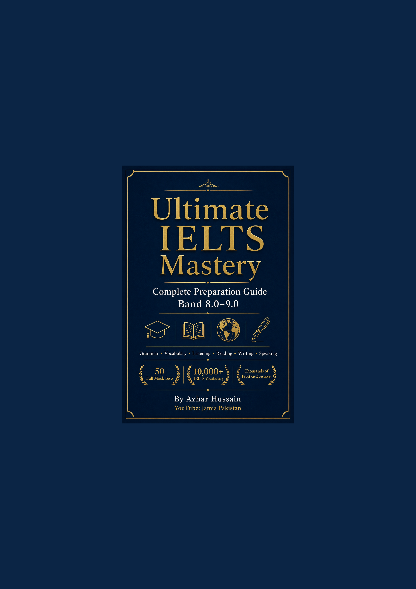

Complete Preparation Guide for Band 8.0–9.0

Grammar • Vocabulary • Listening • Reading • Writing • Speaking
50 Full Mock Tests · 10,000+ IELTS Vocabulary · Thousands of Practice Questions
By Azhar Hussain
YouTube: Jamia Pakistan
Ultimate IELTS Mastery — Azhar Hussain
Author
Email
azharhussaincs@gmail.com
Phone
+92 300 8786258
YouTube
Jamia Pakistan
Edition
First Edition
Publication Year
2026
Independent educational publication. Not affiliated with Cambridge Assessment English, the British Council, IDP Education, or IELTS.org.
Ultimate IELTS Mastery: Complete Preparation Guide for Band 8.0–9.0
Copyright © 2026 Azhar Hussain. All rights reserved.
Author: Azhar Hussain
Email: azharhussaincs@gmail.com
Phone: +92 300 8786258
YouTube: Jamia Pakistan
Website: (to be announced)
No part of this publication may be reproduced, stored in a retrieval system, or transmitted in any form or by any means — electronic, mechanical, photocopying, recording, scanning, or otherwise — without prior written permission from the author, except for brief quotations in reviews, scholarly citations, or other uses permitted by applicable law.
This book is an independent educational resource. It is not an official IELTS publication and is not endorsed by Cambridge Assessment English, the British Council, IDP Education, or IELTS.org. IELTS® is a registered trademark of its respective owners. Band descriptors, test formats, and scoring principles described herein are based on publicly available information and are explained in original language for teaching purposes. Official policies, fees, dates, and procedures may change; always verify current details on the official websites of IELTS partner organisations.
All reading passages, listening-style transcripts, essay questions, speaking prompts, vocabulary entries, diagrams, and practice items in this book were created originally for this publication. They train IELTS-relevant skills without reproducing copyrighted exam papers.
While every effort has been made to ensure accuracy, the author and publisher accept no liability for examination outcomes, admissions decisions, immigration results, or any loss arising from use of this material. Band scores depend on individual preparation, performance on test day, and official marking.
All trademarks and registered trademarks are the property of their respective owners. Use of names is for identification and educational description only.
First Edition, 2026
Printed and digital formats
ISBN: Pending commercial assignment
To every learner who studies after a long day of work,
who opens a practice test with courage,
and who believes that careful English can open doors—
this book is for you.
And to the students of Jamia Pakistan,
whose questions, persistence, and progress
continue to shape how I teach.
Ultimate IELTS Mastery exists for one clear purpose: to take a motivated learner from uncertain foundations to the linguistic control, exam technique, and academic thinking required for Band 8.0–9.0.
This is not a summary booklet. It is a complete preparation system — grammar course, vocabulary dictionary, skills laboratory, workbook, and mock-test library — written so that serious candidates can prepare with structure rather than guesswork.
High bands are not awarded for “sounding fancy.” They are awarded when you consistently demonstrate accurate grammar under pressure, precise collocations, exact task fulfilment, clear coherence, and flexible paraphrase. This book trains those capacities deliberately, with explanations of why answers succeed or fail.
Each instructional chapter follows a teaching cycle: objectives → theory → examples → exercises → solutions → review → quiz → assignment → exam tips → Band 9 models.
| Starting level | Typical path | Duration |
|---|---|---|
| Beginner / elementary | Path A foundation | 12–20 weeks |
| Intermediate (≈5.5–6.5) | Path B consolidation | 10–16 weeks |
| Upper-intermediate+ (≈7.0+) | Path C refinement | 8–14 weeks |
Daily consistency matters more than occasional marathon sessions.
| Day | Focus | Time |
|---|---|---|
| Monday | Grammar chapter + exercises | 90 min |
| Tuesday | Vocabulary topic + Speaking Part 1 | 75 min |
| Wednesday | Listening question type | 90 min |
| Thursday | Reading question type | 90 min |
| Friday | Writing Task 1 or Task 2 (timed) | 80 min |
| Saturday | Speaking Part 2–3 + review | 90 min |
| Sunday | Mini-mock or full mock + error journal | 2–3 hrs |
No book can guarantee a band score. Your result depends on your starting level, study hours, feedback quality, and performance on test day. What this book offers is completeness: if a skill matters for Band 8–9, it is taught here with examples, practice, and answers.
Study with patience. Correct with discipline. Speak and write every day.
— Azhar Hussain
YouTube: Jamia Pakistan
azharhussaincs@gmail.com
I am grateful to the learners who follow Jamia Pakistan and who continually remind me that clarity beats complexity. Their questions shaped the diagnostic focus of the exercises in this book.
This curriculum also draws on publicly documented IELTS formats, band descriptors, and assessment principles published by IELTS partners (British Council, IDP, and Cambridge English), as well as pedagogical traditions from applied linguistics and English for Academic Purposes. Lexicographic conventions reflected in major learner dictionaries informed how meaning, collocation, and usage are presented — without copying proprietary entries.
I thank family, colleagues, and fellow educators who encouraged the long work of turning scattered teaching notes into a complete publication.
Any remaining errors are my own. Official test policies should always be confirmed on the relevant organisation’s website.
— Azhar Hussain
Author: Azhar Hussain · YouTube:
Jamia Pakistan
Contact: azharhussaincs@gmail.com ·
+92 300 8786258
Before Chapter 1 practice, take one full timed mock from Part 9 (or a recent official practice test if you already have one) and record:
| Skill | Raw / Band estimate | Top 3 weaknesses |
|---|---|---|
| Listening | ||
| Reading | ||
| Writing Task 1 | ||
| Writing Task 2 | ||
| Speaking |
Re-test every 4–6 weeks under exam conditions.
For every wrong answer, write:
High-band improvement is mostly error recycling, not more random practice.
| Day | Focus | Time |
|---|---|---|
| Mon | Grammar chapter + exercises | 90 min |
| Tue | Vocabulary topic + speaking Part 1 | 75 min |
| Wed | Listening question type | 90 min |
| Thu | Reading question type | 90 min |
| Fri | Writing Task 1 or 2 (timed) | 80 min |
| Sat | Speaking Part 2–3 + review | 90 min |
| Sun | Mini-mock or full mock + journal | 2–3 hrs |
| Symbol / label | Meaning |
|---|---|
| Learning Objectives | What you must be able to do after the chapter |
| Worked Example | Step-by-step model with examiner thinking |
| Exam Tip | Test-day strategy |
| Band 9 Model | High-band sample language or response |
| Challenge | Stretch tasks for Band 8–9 candidates |
| Answer Key | Solutions with explanations |
Chapters refer to earlier teaching (for example, Writing chapters assume Articles, Relative Clauses, and Linking from Part 2). If a cross-reference is unclear, return to the named chapter before continuing.
This book supplies content and method. You supply consistency.
Ultimate IELTS Mastery
Complete Preparation Guide for Band 8.0–9.0
Author: Azhar Hussain · YouTube: Jamia
Pakistan
In the PDF, EPUB, and HTML editions, use the clickable navigation pane / TOC generated by the publisher toolchain. Every chapter heading, major subsection, and appendix is linked automatically.
| Section |
|---|
| Front Cover |
| Title Page |
| Copyright Page |
| Dedication |
| Preface |
| Acknowledgements |
| How to Use This Book |
| Table of Contents (you are here) |
| List of Figures |
| List of Tables |
| Ch | Title |
|---|---|
| 1 | What Is IELTS? |
| 2 | Academic vs General Training |
| 3 | Band Descriptors Explained |
| 4 | How IELTS Is Scored |
| 5 | Examiner Expectations |
| 6 | Exam Strategy & Mindset |
| 7 | Time Management |
| 8 | Common Mistakes & Myths |
| Ch | Title |
|---|---|
| 9–30 | Grammar core (sentence structure through punctuation) |
| 31–43 | Complete tense system & mixed review |
| Ch | Title |
|---|---|
| 44 | How to Learn IELTS Vocabulary |
| 45–68 | Topic modules (Education → Urbanization) |
| 69 | Academic Word List Core |
| 70 | Essential Collocations |
| Ch | Title |
|---|---|
| 71–80 | Overview, all question types, practice bank, advanced strategies |
| Ch | Title |
|---|---|
| 81–93 | Skills, all question types, passage banks (Band 5–9) |
| Ch | Title |
|---|---|
| 94–103 | Overview, charts, maps, processes, GT letters, practice bank |
| Ch | Title |
|---|---|
| 104–113 | Essay types, cohesion, band comparisons, question bank, Band 9 models |
| Ch | Title |
|---|---|
| 114–122 | Overview, Parts 1–3 strategies & 500+ banks, pronunciation, fluency |
| Ch | Title |
|---|---|
| 123 | How to Use the Mock Tests |
| Mock 01–50 | Complete IELTS mock examinations with keys |
| 174 | Consolidated Answer Keys |
| Ch | Title |
|---|---|
| 175–180 | Advanced vocabulary, idioms vs academic phrases, cohesion, grammar tricks, examiner mind, time-saving |
| ID | Title |
|---|---|
| A01–A12 | Grammar reference, dictionary index, verbs, phrasal verbs, idioms, AWL, spelling/pronunciation, checklists, revision & formula sheets |
| A13 | Glossary |
| A14 | Index |
| A15 | References |
| — | Back Cover (author contact & QR) |
Full chapter-by-chapter listing matches
MASTER_OUTLINE.md. Interactive PDF outline provides
one-click jumps to every heading.
This list catalogues major diagrams and visual resources in the book. Page numbers appear in the generated PDF Table of Contents navigation; use the clickable PDF outline for direct jumps.
| Fig. | Title | Location |
|---|---|---|
| F-01 | Front cover — Ultimate IELTS Mastery | Front matter |
| F-02 | Back cover — features & author contact | End matter |
| F-03 | QR code — Jamia Pakistan (YouTube placeholder) | Back cover |
| F-04 | IELTS overall band calculation flowchart | diagrams/band_score_flowchart.md |
| F-05 | Study-path decision tree | diagrams/study_path.md |
| F-06 | Academic vs General Training comparison visuals | Chapter 2 |
| F-07 | Band descriptor progression charts | Chapter 3 |
| F-08 | Scoring & rounding diagram | Chapter 4 |
| F-09 | Time-management pacing charts | Chapter 7 |
| F-10 | Sentence-structure pattern diagrams | Chapter 9 |
| F-11 | Article decision tree | Chapter 15 |
| F-12 | Conditional systems overview | Chapter 26 |
| F-13 | Tense timeline / aspect diagrams | Chapters 31–43 |
| F-14 | Listening section map strategies | Chapters 71–73 |
| F-15 | Reading skill process diagrams | Chapters 81–82 |
| F-16 | Writing Task 1 chart-type structures | Chapters 95–101 |
| F-17 | Writing Task 2 essay planning maps | Chapters 104–109 |
| F-18 | Speaking Part 2 note-map models | Chapter 117 |
| F-19 | Pronunciation stress & intonation schematics | Chapter 121 |
| F-20 | Mock-test workflow diagram | Chapter 123 |
Additional tables, process diagrams, and vocabulary maps appear inside individual chapters and are indexed by chapter title in the PDF outline.
Major reference and comparison tables used throughout the publication:
| Table | Title | Location |
|---|---|---|
| T-01 | Recommended study paths & durations | Preface / How to Use |
| T-02 | Weekly study rhythm | How to Use This Book |
| T-03 | Academic vs General Training comparison | Chapter 2 |
| T-04 | Band descriptor summary (skills) | Chapter 3 |
| T-05 | Raw-score to band conversion guidance | Chapter 4 |
| T-06 | Module timing & checkpoints | Chapter 7 |
| T-07 | Parts of speech overview | Chapter 10 |
| T-08 | Article usage decision grid | Chapter 15 |
| T-09 | Preposition collocation banks | Chapter 16 |
| T-10 | Quantifier / countability grid | Chapter 18 |
| T-11 | Gerund vs infinitive verb lists | Chapter 20 |
| T-12 | Conditional forms overview | Chapter 26 |
| T-13 | Modal meaning & force | Chapter 27 |
| T-14 | Tense comparison matrices | Chapter 43 |
| T-15 | Topic vocabulary entry schema | Part 3 chapters |
| T-16 | Listening question-type strategy cards | Part 4 |
| T-17 | Reading question-type decision tables | Part 5 |
| T-18 | Task 1 language banks (trends/comparisons) | Part 6 |
| T-19 | Task 2 essay-type planning templates | Part 7 |
| T-20 | Speaking criteria & band features | Part 8 |
| T-21 | Mock-test score log template | Part 9 |
| T-22 | Irregular verbs reference | Appendix A03 |
| T-23 | Phrasal verbs (academic-useful) | Appendix A04 |
| T-24 | Academic Word List families | Appendix A06 |
| T-25 | Spelling & pronunciation trouble lists | Appendices A07–A08 |
| T-26 | Exam-day checklists | Appendix A09 |
| T-27 | Formula & cheat sheets | Appendices A11–A12 |
Chapter-internal exercise tables are too numerous to list individually; use the clickable PDF contents and chapter headings to navigate.
Part: Part 1 — Introduction to IELTS
By the end of this chapter, you will be able to:
IELTS stands for the International English Language Testing System. It is a standardised assessment of English proficiency designed for people whose first language is not English. The test is jointly owned and managed by the British Council, IDP IELTS, and Cambridge English (through Cambridge Assessment English). These three organisations form the IELTS partnership, which sets test standards, trains examiners, and maintains quality assurance worldwide.
IELTS measures whether you can use English effectively in real contexts—university lectures, workplace communication, everyday social interaction, and official documentation—not whether you have memorised obscure grammar rules in isolation. That design choice matters: IELTS rewards functional competence under time pressure, which is why this book emphasises skills plus language, not language alone.
What IELTS is not:
Understanding these boundaries prevents two common errors: treating IELTS as a vocabulary trivia contest, or treating a single low module score as proof that you “cannot learn English.”
English became the dominant language of international scholarship, trade, and migration in the twentieth century. By the 1980s, universities and immigration authorities needed a reliable, widely recognised measure of English ability that could be administered consistently across countries.
IELTS was launched in 1989, replacing and consolidating earlier English tests used in Australia and Britain. Its original purpose was straightforward: provide evidence that international students and migrants could cope with English-medium environments.
Several historical forces shaped the test:
Over time, IELTS expanded to more than 140 countries and 1,600+ test locations. The test content evolved—more authentic texts, updated task types, computer delivery—but the core philosophy remained: assess practical English through integrated skills tasks.
Why history matters for you: IELTS was built for gatekeeping to English-medium institutions, not for punishing learners. When you understand that purpose, you prepare differently. You prioritise clarity, coherence, and communicative success—the same qualities universities and employers actually need.
IELTS serves four major stakeholder groups:
| Stakeholder | Typical use of IELTS |
|---|---|
| Universities & colleges | Admission to degree programmes; conditional admission with language support |
| Governments & immigration | Skilled migration, citizenship, visa points systems |
| Professional bodies | Registration for doctors, nurses, dentists, pharmacists, engineers, teachers |
| Employers | Evidence of workplace English, especially in multinational firms |
Each stakeholder interprets scores differently. A nursing council may require 7.0 in every module with no score below 7.0 in Listening, Reading, Writing, and Speaking. A master’s programme might ask for overall 6.5 with 6.0 minimum in each skill. An employer might accept overall 6.0.
Implication: Your target score is not “as high as possible.” Your target is the requirement of your specific pathway, plus a sensible buffer if you are borderline.
IELTS assesses four skills:
| Module | What it measures | Format (summary) |
|---|---|---|
| Listening | Understanding spoken English across contexts | Four sections, 40 questions, ~30 minutes (+ transfer time on paper) |
| Reading | Understanding written texts | Three long passages (Academic) or mixed texts (General Training), 40 questions, 60 minutes |
| Writing | Producing clear, organised written English | Two tasks, 60 minutes total |
| Speaking | Sustaining spoken interaction | Three-part interview, 11–14 minutes |
These modules are related but separately scored. Strong speaking does not automatically compensate for weak writing in the eyes of a university that sets per-module minima.
Listening progresses from everyday social dialogue to academic discussion. You hear each recording once only (except in some practice materials). Questions test detail, attitude, purpose, and inference.
Reading differs between Academic and General Training (see Chapter 2). Both versions require fast, accurate comprehension and careful attention to paraphrase.
Writing Task 1 and Task 2 assess different genres. Academic Task 1 involves describing visual data or diagrams; General Training Task 1 is a letter. Task 2 is an essay for both versions.
Speaking is a structured conversation with a certified examiner, recorded for quality monitoring. It assesses fluency, coherence, lexical resource, grammatical range, and pronunciation.
Why four modules? Real life uses English holistically, but institutions need diagnostic detail. A student might comprehend lectures well (Listening) yet struggle with essays (Writing). Separating scores helps placement and support decisions.
IELTS offers two versions:
Listening and Speaking are the same for both versions. Reading and Writing Task 1 differ. Task 2 Writing is broadly similar in essay style. Choosing the wrong version can invalidate your application. Chapter 2 covers this decision in depth.
Total test time is approximately 2 hours and 45 minutes for Listening, Reading, and Writing on the same test day. Speaking may occur on the same day or up to seven days before or after, depending on local scheduling.
Why timing is strict: IELTS simulates real deadlines—lecture note-taking, exam essays, meetings. Learning the clock is not optional for Band 7+.
The name on your registration must match your ID exactly. Missing middle names, spelling mismatches, or expired documents are common reasons for denial of entry. Why? IELTS is a high-stakes test; identity fraud would destroy trust in the system.
Candidates with medical conditions, dyslexia, hearing or vision impairment, or other needs may apply for modified materials or extra time. Requests must be submitted with medical evidence weeks in advance—not on test day.
Both formats assess the same skills with the same question types and same nine-band scoring. Differences are logistical and psychological—not linguistic.
| Feature | Paper-based | Computer-delivered |
|---|---|---|
| Listening | Headphones often shared in room; 10 min transfer time | Usually individual headphones; answers typed/clicked live |
| Reading | Highlighting limited to pencil/mental notes | On-screen highlighting and notes (where enabled) |
| Writing | Handwritten | Typed |
| Speaking | Live with examiner | Live with examiner (same) |
| Results timeline | ~13 days | ~3–5 days |
| Comfort factor | Familiar for school-trained writers | Familiar for fast typists |
Choosing wisely:
Myth alert: Computer IELTS is not “easier.” Difficulty is controlled through parallel test construction and statistical equating. Your preparation should be identical.
Each module produces a band score from 0 to 9. Half bands (6.5, 7.5) are common. The overall band is the average of the four modules, rounded to the nearest half band:
Example: Listening 7.0, Reading 6.5, Writing 6.0, Speaking 7.0 → average 6.625 → overall 6.5.
Chapter 4 explains raw-score conversion and Writing/Speaking criteria in detail.
| Myth | Reality |
|---|---|
| “Examiners penalise accent.” | Examiners assess intelligibility, not accent type. |
| “Use big words for Band 9.” | Band 9 uses precise, natural vocabulary; forced rarity backfires. |
| “Computer test is harder.” | Formats differ; difficulty is standardised. |
| “Templates guarantee Band 7.” | Memorised templates often reduce Task Response and Coherence scores. |
| “Only British English is accepted.” | American, British, Australian spelling and usage are accepted if consistent. |
| “You must speak for 2 full minutes in Part 2.” | Fluency matters more than filling time; stopping early without development hurts. |
Understanding myths early saves months of misdirected study.
Everything that follows assumes you know what you are preparing for. Parts 2–3 build language. Parts 4–8 build skills. Part 9 applies both under exam conditions. Part 10 refines high-band performance. Without the structural clarity from Part 1, candidates often practise randomly and wonder why scores plateau.
Scenario: Two candidates both score Listening 8.0, Reading 7.5, Writing 6.0, Speaking 7.0.
Lesson: Overall band alone is insufficient; always check per-module minima.
Candidate profile: Software engineer, types 80 WPM, poor handwriting, needs results in five days for visa deadline.
Reasonable choice: Computer-delivered IELTS Academic.
Why: Speed, legibility, and results timeline align with needs; Speaking remains face-to-face.
Registration: “Mohammed Ali Khan”
Passport: “Muhammad Ali Khan”
Outcome: Potential refusal to test until corrected.
Why: Identity verification is non-negotiable.
Question: You are applying for a skilled migration visa to Canada that requires “IELTS General Training.” You planned to take Academic because you might study later. What should you do?
Step 1: Identify the immediate official requirement — General Training for this visa class.
Step 2: Ask whether Academic would be accepted — immigration rules typically specify version explicitly; Academic is not a substitute.
Step 3: Decide timeline — if study comes later, you may take Academic at that point; many candidates take IELTS twice for different purposes.
Answer: Register for General Training now. Taking Academic would produce a score many immigration systems will not accept for that pathway.
Why this reasoning works: IELTS version is a category requirement, not a difficulty preference.
Question: Speaking is scheduled the day before Listening, Reading, and Writing. Is this normal?
Step 1: Confirm with your centre — Speaking may occur up to seven days before or after other modules.
Step 2: Adjust preparation — avoid exhausting practice the night before Speaking; protect sleep.
Step 3: Bring the same ID to both appointments.
Answer: Yes, this scheduling is standard in many centres.
Scores: L 7.5, R 7.0, W 6.5, S 7.0
Average = (7.5 + 7.0 + 6.5 + 7.0) ÷ 4 = 7.0
Overall band: 7.0 (no rounding needed)
If Writing were 6.0 instead: average = 6.75 → rounds to 7.0 overall. Many institutions still reject because Writing < 6.5.
Time limit: 15 minutes. No notes.
Answers at end of chapter in Quiz Answer Key.
Write a short document answering:
Bring this profile to Chapter 6 when building strategy.
Visit the official IELTS booking site for your country (British Council, IDP, or authorised centre). Record:
Explain to one person the difference between Academic and General Training. Note one question they ask that you could not answer—research it before Chapter 2.
IELTS ESSENTIALS — CHAPTER 1 SNAPSHOT
Purpose: Standardised English for study / work / migration
Owners: British Council · IDP · Cambridge English
Since: 1989
Modules: L · R · W · S (each band 0–9)
Versions: Academic | General Training (L+S same)
LRW time: ~2h 45m same day | Speaking ±7 days
Writing: Task 1 (~20 min) + Task 2 (~40 min, 250+ words)
Results: Paper ~13d | Computer ~3–5d | TRF = official score
Overall: Average of 4 modules, rounded to nearest 0.5
Choose format by typing, handwriting, results need — NOT "easier test"Exam Strategy: Arrive early with the exact ID used at registration. Many test-day disasters are administrative, not linguistic.
Exam Strategy: Do not book until you know Academic vs GT from an official source—university website or immigration instruction—not a forum post.
Exam Strategy: Task 2 before Task 1 is not allowed in the real test; practise in the official order (Task 1 first) so your stamina matches test conditions.
Exam Strategy: If you are borderline on requirements, target +0.5 buffer in your weakest allowed module, not overall alone.
Policy design: Why might immigration systems require minimum scores in each skill rather than overall band alone? Write 150 words.
Equating: If two candidates answer 32/40 Reading items correctly but receive different bands, list three technical reasons this could happen.
Ethics: A test centre offers “guaranteed band 7” packages. Why should you refuse, from test security and learning perspectives?
Cross-cultural validity: IELTS is used globally. What steps might test developers take to avoid cultural bias in Reading passages while keeping text academic?
Suggested approaches in Challenge Solutions (instructor edition); learners should attempt fully before checking.
Band 9 Secret: High-band candidates treat IELTS as a system—they know module weights, institutional rules, and format constraints before drilling vocabulary. Strategic clarity is itself a Band 8–9 behaviour.
Examiner: Do you enjoy reading?
Candidate: I do, though my reading habits have shifted over the past few years. I used to gravitate toward fiction, but nowadays I tend to read long-form journalism and the occasional academic monograph related to my field. I find that kind of reading sharpens my critical thinking—and, incidentally, it has made IELTS-style texts feel less intimidating.
Why this performs well: Direct answer, developed with specific examples, natural vocabulary (gravitate toward, long-form journalism), clear pronunciation cues, no memorised template tone.
“I am not preparing for tricks; I am preparing to function in English at the level my future institution expects. Every module practice session simulates a real demand—lectures, emails, essays, meetings—not a puzzle with secret rules.”
In jurisdictions where IELTS One Skill Retake (OSR) is available, candidates who complete a full test may retake one module within a specified period instead of repeating all four. Availability, eligibility windows, and recognising organisation acceptance vary by country and institution.
Why note this in Chapter 1: It changes retake economics—if Listening alone blocks you, OSR may suffice where accepted.
Action: Confirm on official IELTS site for your test centre country and with your university/immigration authority whether OSR results are accepted.
| Time | Event |
|---|---|
| T−45 min | Arrive; ID check; belongings stored |
| T−15 min | Seating; instructions |
| T+0 | Listening begins |
| ~T+40 min | Reading begins immediately after Listening |
| ~T+100 min | Writing begins |
| ~T+160 min | LRW ends; Speaking may be separate |
Why hour-by-hour helps: Reduces surprise adrenaline burn on first section.
Solutions: 41. Global comparability; half bands; institutional thresholds | 42. Often counted absent/band 0 | 43. No — full test registration | 44. Universities, immigration, employers, regulators | 45. Usually same centre face-to-face | 46. Fees set locally; “cheap” may be scam | 47. Integrated skills vs single skill | 48. Send to universities | 49. Academic monologue/lecture | 50. Version selection prevents costly error
| Term | Meaning |
|---|---|
| TRF | Test Report Form — official score document |
| GT | General Training test version |
| CDI | Computer-delivered IELTS |
| Raw score | Number of correct answers L/R |
| Module | One of four tested skills |
| CEFR | Common European Framework reference levels |
Next: Chapter 2 — Academic vs General Training
Part: Part 1 — Introduction to IELTS
By the end of this chapter, you will be able to:
IELTS serves two distinct English environments:
A single Reading paper could not fairly assess both without either boring academic-bound candidates or overwhelming migration-focused candidates. The solution: shared Listening and Speaking, different Reading and Writing Task 1.
Critical rule: You cannot convert an Academic TRF into General Training retroactively. The version is printed on your Test Report Form. Institutions reject mismatched versions.
| Dimension | IELTS Academic | IELTS General Training |
|---|---|---|
| Primary purpose | Higher education, professional registration (academic context) | Migration, secondary education, work experience, training programmes |
| Listening | Identical format and content | Identical |
| Speaking | Identical format and criteria | Identical |
| Reading — text types | Three long academic-style passages (discursive, analytical, factual) | Section 1: social survival (notices, ads); Section 2: workplace; Section 3: general interest (longer) |
| Reading — difficulty arc | Consistently academic register throughout | Gradual increase; Section 3 approaches academic style |
| Writing Task 1 | Describe graph/chart/table/diagram/process/map (150 words) | Formal/semi-formal/informal letter (150 words) |
| Writing Task 2 | Discursive essay (250 words) | Discursive essay (250 words) — question types overlap heavily |
| Typical recognising bodies | Universities, medical councils (often Academic), research scholarships | Immigration (Australia, Canada, NZ, UK routes), some employers |
| Preparation emphasis | Data description, academic lexis, abstract argumentation | Letter conventions, practical texts, functional vocabulary |
Take IELTS Academic if any of the following apply:
Why Academic fits: Reading passages mirror journal articles and textbook extracts; Task 1 mirrors the kind of data summary required in reports and lab work.
Take IELTS General Training if:
Why GT fits: Reading Section 1 simulates finding information in everyday documents; Task 1 practises correspondence you would write to landlords, employers, or community services.
No choice examples:
Apparent choice:
Decision protocol:
Why it feels hard: Low background knowledge is compensated by the test—answers are in the text—but speed through complex syntax separates Band 6 from Band 8.
| Section | Typical sources | Purpose |
|---|---|---|
| 1 | Advertisements, timetables, staff notices | Locate specific information quickly |
| 2 | Job descriptions, workplace policies, training materials | Workplace survival |
| 3 | Magazine-style or general interest article | Extended comprehension similar to simplified Academic |
Why GT Reading is not “easy IELTS”: Section 3 often determines upper bands; candidates who only practise Section 1 notices plateau at Band 6.
Assessment focus: accurate reporting, logical grouping, key features, comparisons, appropriate overview, no unsupported opinion.
Assessment focus: purpose clarity, tone/register, bullet point coverage, paragraphing, appropriate openings/closings.
Task 2 is shared in spirit: both versions require an essay responding to a prompt (opinion, discussion, problem-solution, etc.). GT prompts sometimes feel slightly more everyday, but band descriptors are the same four criteria.
Listening includes both social and academic contexts because all candidates need to function in mixed settings—migration candidates attend meetings; students book housing.
Speaking assesses general oral proficiency—fluency, coherence, grammar, lexis, pronunciation—not subject knowledge.
Preparation implication: Listening/Speaking books and strategies are version-neutral. Do not buy separate Speaking courses for Academic vs GT.
Institutions set requirements in bands, not “Academic bands” vs “GT bands.” A 7.0 in GT Listening equals 7.0 in Academic Listening on the TRF scale.
However, required version may differ while numeric threshold stays the same:
Always check both number and version.
| If you prepare with Academic materials but need GT | Risk |
|---|---|
| Academic Task 1 graphs | Useless for GT letter exam |
| Academic Reading only | Under-prepared for GT Sections 1–2 formats |
| GT letter templates only but need Academic | Task 1 failure on test day |
Solution: From day one, match Task 1 and Reading practice to your registered version.
Many candidates take IELTS more than once. Switching version is legal if your pathway changes—e.g., migration first (GT), then MBA (Academic). Scores do not transfer as a single combined record; institutions look at the TRF you submit.
Why switching is common: GT migration success does not automatically satisfy Academic university thresholds.
A passage discusses how urban heat islands form when concrete and asphalt replace vegetation, raising city temperatures relative to surrounding rural areas. The writer compares mitigation strategies: green roofs, reflective materials, and expanded parkland.
Typical questions: matching headings, completion with words from passage, TRUE/FALSE/NOT GIVEN on whether all cities implement the same policies.
Why Academic: abstract environmental science discourse without requiring specialist prior knowledge.
A community centre notice board lists: swimming pool hours, yoga class fees, parking restrictions on Saturdays, and a closure for maintenance on 14 March.
Typical questions: “Which class is cheapest?” “On which date is the pool closed?”
Why GT: functional literacy in daily life.
The chart below shows the proportion of household energy use in three countries in 2020. Summarise the information by selecting and reporting the main features, and make comparisons where relevant.
Expected moves: overview (e.g., heating dominates in Country A), grouped comparisons, no opinion about climate policy.
You recently bought a laptop online, but it arrived damaged. Write a letter to the retailer. In your letter:
Expected moves: formal register, all bullets addressed, clear paragraphing, sincere but professional tone.
Case: Priya, Indian national. Goals: (a) apply for Canada Express Entry within 12 months; (b) possibly do a Canadian master’s in three years.
Step 1 — Immediate need: Express Entry language points → verify IRCC requirement → IELTS General Training accepted for CELPIP alternative equivalence via IELTS GT.
Step 2 — Future master’s: Will likely need Academic with higher Writing/Reading expectations.
Step 3 — Decision: Take GT now for immigration; plan Academic later if admitted to graduate school.
Why not Academic now for both? IRCC historically required GT for most economic immigration streams; submitting Academic can invalidate the application.
Prompt (either version): Some people believe technology makes life more complicated. To what extent do you agree or disagree?
Band 7+ approach (version-independent):
Why version matters little here: Task 2 band descriptors identical; preparation transfers.
Case: Ahmed studied Academic graph vocabulary for six weeks. Test day: GT letter about noisy neighbours.
Outcome: Task 1 panic; bullet points missed; tone too academic.
Lesson: Six weeks of misaligned Task 1 prep ≈ starting Task 1 preparation from zero under time pressure.
Match feature to Academic (A), General Training (G), or Both (B):
Quiz Answers: 1. Reading, Writing Task 1 | 2. Letter | 3. Three | 4. Social survival / everyday | 5. No | 6. 150 | 7. e.g. Australia | 8. Yes (similar essay types) | 9. True | 10. Preparing wrong Task 1/Reading type
Official verification: Find your target institution’s IELTS requirement screenshot or PDF citation; highlight version and minima.
Dual prompt practice: Write 150-word outline only—one Academic graph summary plan, one GT formal letter plan (different topics).
Comparison table: Create your own one-page Academic vs GT revision sheet with five personal notes per column.
ACADEMIC (A) vs GENERAL TRAINING (GT)
Same: Listening · Speaking · Task 2 essay style
Different: Reading texts · Writing Task 1
A Reading: 3 academic passages
GT Reading: S1 social → S2 work → S3 general/long
A Task 1: graphs · processes · maps (report)
GT Task 1: letter (formal / semi-formal / informal)
Rule: Match version to OFFICIAL pathway — not to "easier" rumoursExam Strategy: GT candidates — do not ignore Section 3 Reading; it is where Band 7+ is won or lost.
Exam Strategy: Academic candidates — Task 1 overview sentence is non-negotiable for Band 7+; letter writers must master tone equally.
Exam Strategy: If your plan includes both migration and degree, map which test first to avoid duplicate fees.
Design a decision flowchart (text description) for an agent advising students in a consultancy—include at least five branching questions.
Argue whether IELTS should merge versions with adaptive Reading. 200 words, academic style.
GT Task 1: why might an informal letter to a friend still require “semi-formal” clarity for Band 8?
Band 9 Secret: Elite candidates know exactly which bullet points GT letters require and which Academic graph features are trivial (and should be omitted) versus significant.
Dear Ms Thornton,
I am writing to express my dissatisfaction with the washing machine I purchased from your store on 12 April, order reference #4482, which arrived with a cracked drum and has been unusable since delivery.
Why Band 9: Immediate purpose, precise details, formal register without stiffness, sets up bullet coverage.
Overall, while all three countries relied heavily on domestic heating, Country B allocated a markedly higher share of energy to appliances, and Country C alone devoted a substantial proportion to cooling.
Why Band 9: Clear global summary, comparison language, no data dump, no opinion.
Copy and fill:
My pathway: _______________________
Official source URL: _______________
Required version (A/GT): ___________
Overall band needed: _______________
Per-module minima: L___ R___ W___ S___
Delivery format (paper/CDI): ________
Test date target: __________________
If wrong version booked, cost/delay: _______Why written: Prevents impulse booking during promotion periods.
| Pathway type | Typical version | Typical minima pattern |
|---|---|---|
| UK undergraduate degree | Academic | 6.0–7.0 overall; 5.5–6.5 each |
| UK master’s | Academic | 6.5–7.5 overall; 6.0–7.0 each |
| Canada Express Entry (language points) | GT (verify IRCC) | CLB mapping from IELTS bands |
| Australia skilled migration | GT common | Points by band tier |
| Professional nursing (many jurisdictions) | Academic | 7.0 each skill |
| Secondary school placement | GT sometimes | 5.0–6.0 overall |
Always verify live requirements — this table illustrates patterns only, not legal advice.
Solutions: 41. Academic | 42. e.g. landlord/colleague context | 43. No — text-based | 44. Yes — same scale | 45. Ask HR | 46. Locating specific information | 47. Yes | 48. Yes with prompt alignment | 49. Yes for version-specific pathways | 50. Submit matching requirement only
Write 200 words comparing preparation time you would allocate to Academic vs GT Task 1 for a candidate taking GT. Justify with chapter evidence.
Next: Chapter 3 — Band Descriptors Explained
Part: Part 1 — Introduction to IELTS
By the end of this chapter, you will be able to:
Band descriptors are published criteria that define performance at each level on the nine-band scale. For Writing and Speaking, examiners use detailed rubrics with four criteria each. For Listening and Reading, bands derive from raw score conversion tables that vary slightly by test form difficulty.
Why descriptors matter: They translate subjective impressions into shared standards. When you say “I need better Writing,” descriptors force precision: “My Task Response addresses the prompt but position is unclear in body 2—that is Band 6, not 7.”
| Band | Public descriptor summary (paraphrased) |
|---|---|
| 9 | Expert user — full operational command, appropriate, accurate, fluent; occasional unsystematic inaccuracies only |
| 8 | Very good user — fully operational with occasional inaccuracies; handles complex argument well; minor errors in unfamiliar contexts |
| 7 | Good user — operational command with occasional inaccuracies; handles complex language reasonably; understands detailed reasoning |
| 6 | Competent user — generally effective despite inaccuracies; can use and understand reasonably complex language in familiar situations |
| 5 | Modest user — partial command; copes with overall meaning; many mistakes; should handle basic communication in field |
| 4 | Limited user — basic competence limited to familiar situations; frequent problems |
| 3 | Extremely limited user — conveys general meaning in very familiar situations; frequent breakdowns |
| 2 | Intermittent user — great difficulty understanding spoken/written English |
| 1 | Non-user — no ability except isolated words |
| 0 | Did not attempt / absent |
Half bands (6.5, 7.5) indicate performance between two descriptor levels.
Listening is scored by number of correct answers out of 40, converted to a band. Approximate ranges (typical; exact cutoffs vary by test form):
| Raw score (out of 40) | Approximate band |
|---|---|
| 39–40 | 9.0 |
| 37–38 | 8.5 |
| 35–36 | 8.0 |
| 32–33 | 7.5 |
| 30–31 | 7.0 |
| 26–29 | 6.5 |
| 23–25 | 6.0 |
| 18–22 | 5.5 |
| 16–17 | 5.0 |
What separates 6/7/8/9 in Listening (skill behaviours):
Why raw conversion varies: Test developers equate forms so a harder Listening paper might allow 34/40 for Band 8.0. You cannot assume one universal table forever—check practice test keys.
Reading uses the same 40-question → band logic with version-specific tables (Academic typically has stricter cutoffs than GT for the same raw score).
Approximate Academic ranges:
| Raw score | Approximate band |
|---|---|
| 39–40 | 9.0 |
| 37–38 | 8.5 |
| 35–36 | 8.0 |
| 33–34 | 7.5 |
| 30–32 | 7.0 |
| 27–29 | 6.5 |
| 23–26 | 6.0 |
What separates 6/7/8/9 in Reading:
Examiners award four sub-scores for Writing, then combine (not simple average—Task 2 weighted more):
Each criterion is banded 0–9. Weakest criterion often limits perception, though official weighting produces a single Writing band.
| Band | Task Response (summary) |
|---|---|
| 6 | Addresses prompt but parts underdeveloped; position present but may be unclear or repetitive; some irrelevant detail |
| 7 | Addresses all parts; clear position; main ideas extended; occasional lack of focus |
| 8 | Sufficiently addresses all parts; well-developed response; relevant, supported ideas |
| 9 | Fully addresses prompt with fully developed position; ideas logically ordered and supported |
Why 7 beats 6: Examiners see sustained argument with paragraph-level development, not list-like reasons.
Why 8 beats 7: Ideas are consistently relevant and well extended without wandering.
Why 9 beats 8: Response feels effortless and complete—no gap between prompt and answer.
| Band | CC (summary) |
|---|---|
| 6 | Information arranged coherently; cohesive devices may be mechanical or faulty; referencing sometimes unclear |
| 7 | Logical progression; range of cohesive devices; paragraphing generally effective |
| 8 | Sequences ideas logically; manages cohesion well; paragraphing appropriate |
| 9 | Uses cohesion so naturally that it rarely attracts attention |
Key insight: Band 6 essays often overuse Firstly, Moreover, Furthermore without logical glue. Band 8 uses this, such, however, as a result with meaning-driven connections.
| Band | LR (summary) |
|---|---|
| 6 | Adequate vocabulary for task; meaning clear despite restricted range; errors in word choice/spelling |
| 7 | Flexible vocabulary; some less common items; awareness of style; occasional errors |
| 8 | Wide resource; skilful use of uncommon items; rare errors |
| 9 | Full flexibility and precision; natural and sophisticated control |
Why “big words” fail: Band 6 with forced utilise, plethora, multifarious triggers inaccuracy and inappropriate register.
| Band | GRA (summary) |
|---|---|
| 6 | Mix of simple and complex forms; errors in complex structures but rarely impede communication |
| 7 | Variety of complex structures; frequent error-free sentences; good control |
| 8 | Wide range; majority of sentences error-free; occasional slips |
| 9 | Wide range with full flexibility and accuracy; minor slips only |
| Band | FC |
|---|---|
| 6 | Willing to speak at length; may lose coherence; repetition/self-correction; connectors may be basic |
| 7 | Speaks at length without noticeable effort; some hesitation for language; clear topic development |
| 8 | Fluent with only occasional repetition/self-correction; develops topics coherently |
| 9 | Fluent with only very occasional repetition or self-correction; fully coherent |
Why hesitations matter differently: Band 7 allows language-planning pauses; Band 6 shows content/search breakdowns.
| Band | P |
|---|---|
| 6 | Generally intelligible; mispronunciation sometimes reduces clarity |
| 7 | Generally easy to understand; L1 accent may be noticeable but rarely impedes |
| 8 | Easy to understand throughout; accent has minimal effect |
| 9 | Uses features like intonation and stress precisely; effortless to understand |
Critical: Accent is not penalised; unintelligible phonemes are.
A candidate may demonstrate Band 8 LR but Band 6 GRA in Writing. Examiners balance criteria; severe failure in one (e.g., off-topic Task Response) can cap the whole task.
Speaking example: Band 8 vocabulary with Band 6 fluency (long pauses every sentence) → likely overall Speaking 6.5–7.0, not 8.
Step 1: Score each criterion separately using public
descriptors.
Step 2: Identify lowest
criterion—primary training target.
Step 3: Collect evidence (underlined
errors, off-topic sentences).
Step 4: Rewrite one paragraph targeting +0.5 in that
criterion only.
Step 5: Re-evaluate after one week.
Why single-criterion focus works: Trying to fix everything produces vague improvement; descriptor language enables measurable deltas.
Prompt: Discuss advantages and disadvantages of remote work.
Band 6 fragment:
Remote work has advantages. People save time. It also has
disadvantages like loneliness. In conclusion remote work is good and
bad.
Band 7 fragment:
While remote work eliminates commuting and can improve focus, it
also risks isolating employees and blurring boundaries between home and
office. Whether the arrangement succeeds depends largely on role type
and employer support.
Difference: Band 7 develops and qualifies; Band 6 lists without extension.
Band 6: “The movie was very good and very
interesting.”
Band 8: “The film was compelling—particularly the way
it handled moral ambiguity without preaching.”
Passage says: “The study was conducted in 2019.”
Statement: “The study lasted two years.”
Answer: NOT GIVEN (duration not stated).
Band 6 candidates often write FALSE; Band 8 candidates track exact evidence.
Raw score: 31/40
Step 1: Consult practice test key table → often Band 7.0.
Step 2: Analyse errors — if four were Section 1 spelling, remediation is different from Section 4 inference gaps.
Step 3: Set target — 33/40 for Band 7.5 → need +2 correct with Section 4 focus.
Essay assessed:
Predicted band: ~6.5 Writing
Priority: Cohesion and grammar complex sentences — not more vocabulary.
Candidate speaks smoothly but substitutes /θ/ with /s/ (“think” → “sink”) causing occasional confusion.
Fluency: 7
Pronunciation: 6
Overall likely capped around 6.5–7.0 until
intelligibility improves.
Answers: 1. FC, LR, GRA, P | 2. Addresses all parts; clear position | 3. ~35–36 (typical) | 4. Yes (~2×) | 5. Mechanical cohesion | 6. Intelligibility | 7. 7.5 | 8. Evidence discipline / inference control | 9. Rare hesitation | 10. Full operational command
Download public Writing Task 2 descriptors; highlight verbs that differ between Band 6 and 7.
Record 3-minute Speaking answer; score yourself on four criteria with evidence.
Complete one Reading passage; for each wrong answer, label error type: vocabulary, inference, time, trap.
BAND DESCRIPTORS AT A GLANCE
Receptive (L/R): raw score → band (check table per test)
Productive (W/S): 4 criteria → sub-scores → module band
Writing: TR · CC · LR · GRA (Task 2 ~2× Task 1)
Speaking: FC · LR · GRA · P
6→7 jump: develop ideas · clear position · less mechanical linking
7→8 jump: consistent relevance · wide resources · error-free majority
8→9 jump: effortless cohesion · precision · near-native control
Diagnose WEAKEST criterion firstExam Strategy: Print descriptor columns for Band 6 and 7 side by side—highlight differences in your weakest criterion only.
Exam Strategy: In Reading, Band 7+ requires NOT GIVEN discipline—train it explicitly.
Exam Strategy: Writing under 250 words risks Task Response cap regardless of grammar beauty.
Why might two examiners produce different bands within ±0.5? Discuss standardisation.
Is it possible to score Band 9 Speaking with Band 7 vocabulary? Defend with criteria text logic.
Create a descriptor-based checklist for peer review of essays (minimum 10 items).
Band 9 Secret: Band 9 writers never make the examiner hunt for the answer—position, support, and progression are obvious on first read.
Although flexible schedules can enhance productivity by aligning work with individual chronotypes, they may also erode team synchrony unless organisations establish explicit core hours for collaboration.
Criteria hit: LR (less common collocation), GRA (complex subordination), TR (balanced qualification).
I would not go so far as to say technology determines social isolation; rather, it amplifies tendencies that already exist. Communities that invest in shared spaces, for instance, can use the same platforms to organise real-world interaction.
Criteria hit: FC (fluent development), TR (nuanced answer), LR (amplifies, shared spaces).
| CEFR | IELTS range (indicative) | Typical capability |
|---|---|---|
| B1 | 4.0–5.0 | Basic survival + limited study |
| B2 | 5.5–6.5 | Many undergrad programmes |
| C1 | 7.0–8.0 | Postgraduate + professional |
| C2 | 8.5–9.0 | Near-native operational command |
Why map: If diagnostic mock is Band 5.5, jumping to 7.5 in two weeks is unrealistic; descriptor gap B2→C1 requires substantial productive skill growth.
Use maps to write one weekly micro-goal per criterion.
Solutions: 46. mechanical/faulty | 47. error-free | 48. noticeable but rarely impedes | 49. ~8.5 | 50. ~6.0–6.5 | 51. 7.0 | 52. 7 | 53. yes | 54. 8.5 | 55. e.g. fix systematic errors before adding rare vocab
Print public Writing Task 2 descriptors for Bands 5–9. Highlight three words that change meaning between 6 and 7 (e.g., adequately vs clearly). Write 100 words on implications for your essays.
Next: Chapter 4 — How IELTS Is Scored
Part: Part 1 — Introduction to IELTS
By the end of this chapter, you will be able to:
IELTS produces five reported scores:
There is no separate Task 1 / Task 2 band on the TRF—only one Writing band. Internally, examiners score each writing task on four criteria, then combine tasks with Task 2 receiving approximately double weight.
Why this matters: A brilliant Task 1 cannot mask a weak Task 2.
Mechanism:
Typical conversion (illustrative — always use your practice test key):
| Raw | Band |
|---|---|
| 40 | 9.0 |
| 39 | 8.5–9.0 |
| 37–38 | 8.5 |
| 35–36 | 8.0 |
| 33–34 | 7.5 |
| 30–32 | 7.0 |
| 27–29 | 6.5 |
| 23–26 | 6.0 |
Why tables differ: IELTS uses test equating. If a Listening paper is slightly harder, the band 7.0 cutoff might be 30 instead of 31. This keeps bands comparable across dates.
Spelling and grammar rules:
Identical counting logic: 40 questions, raw score → band via form-specific table.
Academic vs General Training: GT Reading tables typically allow slightly lower raw scores for the same band because Section 1–2 items differ in difficulty profile.
Illustrative Academic table:
| Raw | Band |
|---|---|
| 39–40 | 9.0 |
| 37–38 | 8.5 |
| 35–36 | 8.0 |
| 33–34 | 7.5 |
| 30–32 | 7.0 |
| 27–29 | 6.5 |
| 23–26 | 6.0 |
Transferable insight: Each additional correct answer may worth 0.0–0.5 band depending where you sit on the table—marginal gains are nonlinear.
Writing is not item-count scored. Certified examiners assess:
Task 1 (150+ words) — Task Achievement, CC, LR,
GRA
Task 2 (250+ words) — Task Response, CC, LR, GRA
Task 2 weighting (~2× Task 1): If Task 1 = 7 and Task 2 = 5, Writing unlikely to be 7 overall.
Penalties (conceptual):
Why human scoring: Writing requires judging argument quality, organisation, and appropriateness—machine counting cannot suffice alone (though AI assists monitoring).
Speaking is assessed live by a certified examiner (same criteria as Chapter 3):
Process:
Part weighting: All parts contribute; Part 2 and 3 often carry more evidence for higher bands because extended discourse appears there.
Why one examiner: Consistency within interview matters; double-marking occurs in moderation samples.
Formula:
Overall = (Listening + Reading + Writing + Speaking) ÷ 4
Rounding:
| Decimal part of average | Rounded overall |
|---|---|
| .00 – .24 | Round down to nearest .0 or .5 |
| .25 – .74 | Round to nearest .5 |
| .75 – .99 | Round up to next .0 |
Examples:
| Modules | Average | Overall |
|---|---|---|
| 7.0, 7.0, 6.5, 7.0 | 6.875 | 7.0 |
| 7.0, 6.5, 6.5, 6.5 | 6.625 | 6.5 |
| 8.0, 8.0, 7.5, 8.0 | 7.875 | 8.0 |
| 6.5, 6.5, 6.0, 6.5 | 6.375 | 6.5 |
| 7.0, 7.0, 7.0, 6.5 | 6.875 | 7.0 |
Why rounding surprises candidates: Three 7.0s and one 6.5 → 7.0 overall, but institutions requiring 7.0 each skill still reject.
IELTS reports scores; institutions interpret:
One Skill Retake (where available): Some jurisdictions allow retaking one module within a window after full test—check current IELTS policy in your country. Not universal historically.
Typical TRF fields:
CEFR approximate mapping (public guidance, paraphrased):
| IELTS | CEFR |
|---|---|
| 8.5–9.0 | C2 |
| 7.0–8.0 | C1 |
| 5.5–6.5 | B2 |
| 4.0–5.0 | B1 |
Mapping is informative, not a separate exam.
Why EOR rarely jumps +1.0: Examiners already moderated; large changes uncommon.
Scenario: Need overall 7.0; current: L 7.5, R 7.0, W 6.0, S 7.0 (avg 6.875 → overall 7.0 already) but need W ≥ 6.5.
Focus: Writing +0.5, not Listening +1.0.
Marginal analysis for Listening: Moving 30→33 raw might gain 0.5 band; moving 35→36 might gain 0.0 band. Know your position on the table.
Listening practice test: 28/40. Key says 28 = Band 6.5.
Action: Need 30 for Band 7.0 → two questions = priority study ROI.
Task 1 scores ~6; Task 2 scores ~7. Combined Writing ≈ 6.5–7.0 depending on criterion balance.
L 6.5, R 6.5, W 6.5, S 6.5 → average 6.5 → overall
6.5.
L 7.0, R 7.0, W 6.0, S 7.0 → average 6.75 → overall 7.0
but Writing fails 6.5 minimum rule.
Scores: L 8.0, R 7.5, W 7.0, S 7.5
Average = (8 + 7.5 + 7 + 7.5) / 4 = 30/4 = 7.5
Overall band = 7.5 (exact half band, no rounding issue)
Scores: L 7.0, R 7.0, W 6.5, S 6.0
Average = 26.5/4 = 6.625
Decimal .625 falls in .25–.74 range → round to 6.5
Goal: Overall 7.5; current L 8, R 7.5, W 6.5, S 7 (avg 7.25 → overall 7.5 already)
But MBA requires 7.0 each skill → must raise Writing 6.5→7.0.
Plan: 4 weeks Task 2 TR/CC focus; mock Writing every 4 days with feedback.
Use typical Academic Reading table (this chapter).
Answers: 1. (L+R+W+S)/4 rounded | 2. 7.0 | 3. ~2× | 4. ~7.0 | 5. W/S (and clerical L/R) | 6. Once | 7. Often different | 8. No — check region | 9. 2 years | 10. Per-module minimums
Calculate overall for your last mock; identify blocking module.
Build spreadsheet: input four modules → output overall with rounding.
Compare two official practice test conversion tables; note differences.
SCORING CHEAT SHEET
L/R: 40 Q → raw → band (form-specific table)
W: Tasks 1+2 → 4 criteria → 1 band (Task 2 ~2×)
S: 4 criteria → 1 band
Overall = (L+R+W+S)/4
.25-.74 → nearest .5 | .75+ → up to .0
TRF: 4 modules + overall + Academic/GT label
Improve the module that blocks YOUR requirementExam Strategy: Know your raw-to-band position—two Listening corrections near a cutoff beat memorising 500 words.
Exam Strategy: Task 2 first in importance, Task 1 first on paper—manage time accordingly.
Exam Strategy: Before EOR, get expert feedback; remarks help clerical errors more than opinion disagreements.
Prove with three examples how same overall hides different module profiles.
Should IELTS publish Task 1 and Task 2 bands separately? Argue 200 words.
Design a study plan to raise overall 6.5→7.0 when Writing is 6.0 and others 7.0+.
Band 9 Secret: Band 9 candidates simulate scoring after mocks—they do not stop at “felt fine.”
TR 9, CC 9, LR 8, GRA 9 → Writing 8.5–9.0
Why not automatic 9: LR occasionally capped at 8 if one awkward collocation appears—overall still elite.
“I need 34 raw in Reading for 7.5 on this form; I missed four NOT GIVEN items—that is a taxonomy problem, not a vocabulary emergency.”
Requirement: 7.0 in each skill, Academic commonly specified.
| Module | Score | Pass? |
|---|---|---|
| Listening | 7.5 | ✓ |
| Reading | 8.0 | ✓ |
| Writing | 6.5 | ✗ |
| Speaking | 7.0 | ✓ |
Overall = (7.5+8+6.5+7)/4 = 7.25 → 7.5 overall
Outcome: Rejected despite strong overall. Only Writing retake (or One Skill Retake where offered) solves pathway.
Why institutions do this: Patient safety requires written and spoken precision at threshold in each channel.
Requirement: Overall 6.5, no band below 6.0
| L | R | W | S |
|---|---|---|---|
| 6.5 | 6.5 | 6.0 | 6.5 |
Average = 6.375 → 6.5 overall. All modules ≥6.0 → Accepted.
Lesson: Lower overall threshold with per-module floor still demands balanced prep.
| L | R | W | S | Average |
|---|---|---|---|---|
| 7.0 | 7.0 | 7.0 | 6.5 | 6.875 → 7.0 |
| 7.0 | 7.0 | 7.0 | 6.0 | 6.75 → 7.0 |
Both round to 7.0 overall, but second profile fails 7.0 each skill rules. Candidates celebrating “overall 7” without checking minima waste retake fees.
No partial credit on standard multiple-choice and gap-fill items—you are right or wrong.
Exception awareness: Some matching items require all parts correct to earn the mark; one wrong pairing may void the whole question set depending on item design.
Implication: Double-check matching questions before transfer; they are high-leverage.
Examiners do not simply average TR, CC, LR, GRA for Task 1 and Task 2 separately and stop. They:
Illustrative pattern:
| TR/TA | CC | LR | GRA | |
|---|---|---|---|---|
| Task 1 | 7 | 7 | 6 | 7 |
| Task 2 | 6 | 6 | 6 | 6 |
Writing band likely 6.0–6.5, not 7.0—Task 2 pulls down despite stronger Task 1.
Why Task 2 dominates preparation hours: Mathematics and institutional weight both point there.
Speaking frequently lands on .5 increments because criteria profiles split:
+0.5 speaking gain typically requires improving two criteria slightly, not one dramatic change.
| Module | EOR typically checks |
|---|---|
| Writing | Re-mark by senior examiner |
| Speaking | Re-listen and re-score |
| Listening/Reading | Clerical errors, answer sheet alignment |
Fee logic: Refund if band increases—centres avoid frivolous remarks but genuine borderline scripts benefit.
Candidate guidance: EOR worth considering when mock feedback consistently rates you 0.5 higher than official score and you suspect TR/FC misjudgment—not for hoping luck changes Listening raw marks.
Set F Solutions: 41. 6.5 | 42. No (W) | 43. ~6.0 | 44. ~5.5–6.5 | 45. 7.0 | 46. Different form equating | 47. Misrepresenting—TRF shows C1 mapping | 48. Policy-specific partial update | 49. Yes—aim 260+ buffer | 50. Reject if min 6.0+ Speaking
Create a spreadsheet with:
=AVERAGE(L,R,W,S)=IF(MOD(AVERAGE,1)<0.25, FLOOR(AVERAGE,0.5), IF(MOD(AVERAGE,1)<0.75, ROUND(AVERAGE*2,0)/2, CEILING(AVERAGE,1)))Test with TRF samples from practice mocks. Why: Removes arithmetic surprise on results day.
“If my average is 6.625, why isn’t overall 6.625?”
Answer script: IELTS reports only whole or half bands. Averages between .25 and .74 round to the nearest half band; .75 and above round up to the next whole band. This keeps scores comparable globally without false precision.
Next: Chapter 5 — Examiner Expectations
Part: Part 1 — Introduction to IELTS
By the end of this chapter, you will be able to:
IELTS Speaking and Writing examiners are certified English language professionals who complete official training and regular standardisation. They are monitored through re-marking, co-marking, and feedback sessions to ensure global consistency.
What examiners are not:
What examiners are:
Why this matters psychologically: Viewing the examiner as an audience you help understand you reduces anxiety more than viewing them as an adversary.
Examiners calibrate to anchor scripts and recordings at known band levels. If a local examiner drifts harsh or lenient, monitoring corrects drift.
Implication for you: A Band 7 in one country should resemble Band 7 elsewhere, within normal human variation (±0.5).
Examiners (marking keys) expect:
Expectation beyond correctness: High-band candidates predict answer type (number, name, adjective) and verify after each section.
Annoyance equivalent (self-inflicted): Leaving blanks; spelling known words carelessly under pressure.
Reading is key-marked like Listening, but question design tests:
Examiner expectation at Band 7+: You do not need to understand every word; you must locate evidence precisely.
Common candidate belief (false): “I need to read the
whole passage deeply first.”
Examiner reality: Strategic scanning under time is
expected.
Examiners expect:
They do not reward:
Examiners expect:
They penalise:
Examiners expect:
They penalise:
Examiners expect:
They penalise:
Under exam conditions, an examiner may spend only minutes on your script. First impression matters:
Why clarity wins: Examiners are human; unclear structure increases perceived errors.
Part 1: warm-up questions on familiar topics
Part 2: gives cue card; monitors 1-minute prep + 1–2 minute talk
Part 3: abstract follow-up questions
Examiner may:
Examiner expects:
They penalise:
Examiners assess:
They do not require:
Band 9 pronunciation: effortless understanding; subtle use of intonation to organise discourse.
| Impresses (authentically) | Backfires |
|---|---|
| Specific examples from personal/relevant knowledge | Fabricated statistics (“87.3% of people in 1840…”) |
| Natural paraphrase of question | Synonym spam in wrong collocations |
| Calm self-correction (“…or rather, I mean…”) | False starts every clause |
| Clear overview in Task 1 | Listing every data point without selection |
| Balanced Part 3 answers | Political rants ignoring question |
Examiners report:
Malpractice can void results. Expectation: original performance under rules.
After each practice piece, ask:
Why self-examination scales: You outnumber examiners in practice hours.
Prompt: Discuss public transport investment vs road building.
Candidate intro: Technology has changed our lives in many ways. The internet is very important today…
Examiner judgement: Task Response weak — prompt not engaged.
Cue: Describe a book you enjoyed — where, when, why, how you felt.
Band 6 pattern: Names book; stops after 40 seconds.
Band 8 pattern: Covers all bullets with narrative arc; ends naturally near 2 minutes.
Statement: The programme reduced crime.
Passage: Initial results suggested crime fell, though researchers cautioned the sample was small.
Band 8+ answer: Likely NOT GIVEN or careful FALSE depending on wording — examiner key expects nuance, not headline reading.
First paragraph read: Essay question on environmental law. Paragraph discusses pollution generally without law angle.
Quick TR score: Band 5–6 cap until law addressed.
Fix priority: Rewrite introduction to anchor legal frameworks, not generic pollution.
Transcript feature: 15 long pauses mid-sentence, each >3 seconds, with humming.
FC likely: Band 5–6 regardless of vocabulary.
Fix: Daily 2-minute talks on random objects without stopping.
Question: Write NO MORE THAN TWO WORDS.
Answer written: the central station
Marked wrong if key expects central station (three words with article) — instruction violation.
Examiner expectation: Follow limits exactly.
Label I (impresses if done well) or B (backfires).
16.I 17.B 18.I 19.B 20.I 21.B 22.I 23.B 24.I 25.I
Mark one essay using public descriptors; write 100-word examiner report.
Record Speaking Part 2; score FC and P with timestamps for pauses.
List five personal “backfire” habits; design replacements.
EXAMINER EXPECTATIONS
Help the examiner: clear task answer · visible structure · legibility
Writing: address ALL parts · overview (A T1) · develop ideas
Speaking: extend answers · cover Part 2 bullets · analyse Part 3
L/R: spelling · word limits · evidence-based answers
Neutral face ≠ failure
Train: 5-question self-scan after every practiceExam Strategy: In Speaking, answer the question you hear, not the question you prepared.
Exam Strategy: Examiners reward clarity over poetry.
Exam Strategy: Reading answers must be provable from text — examiner keys are evidence-based.
Should AI replace Writing examiners? Discuss fairness vs validity.
Write examiner guidance for candidates nervous about neutral faces (150 words).
Analyse why fabricated examples hurt TR credibility.
Band 9 Secret: Band 9 speakers finish Part 2 naturally — not at exactly 120 seconds by force, but when the story is complete.
That’s an interesting question because it depends on whether we measure success in economic or social terms. From an economic perspective, densification can reduce infrastructure costs per capita, yet socially it may strain community cohesion if green space disappears.
Examiner view: Immediate engagement, balanced framing, clear signposting — TR and FC strong from first sentence.
Use these before submitting practice or leaving the exam room.
Examiners do not score your opinions by agreement with their personal views. You may argue unpopular positions if you develop them coherently and appropriately.
Boundaries:
Why this matters for Band 8–9: Mature candidates acknowledge counterarguments (Admittedly, …) demonstrating intellectual control examiners associate with higher bands.
Pair with a study partner. Exchange essays without bands—only descriptor quotes:
“Addresses all parts but some ideas underdeveloped (TR 6).”
Partner must locate exact sentences proving the judgement. This builds examiner empathy and self-editing speed.
Solutions: 41. FC, TR | 42. May increase perceived GRA/CC errors | 43. Minor if otherwise formal | 44. Significant CC/TR drop | 45. 5–6 | 46. Accept if key lists both | 47. TA penalty | 48. No | 49. Wrong | 50. Yes if rare and natural
Before (TR 6 excerpt, original):
There are many reasons for pollution. Cars are bad. Factories are
bad. We should stop pollution.
Examiner note: List structure; no development; vague.
After (TR 7 excerpt, original):
Vehicle emissions contribute disproportionately in dense cities
because short trips prevent engine warm-up efficiency, while industrial
plants, though regulated, often cluster near low-income housing where
enforcement is weaker.
Examiner note: Specific mechanisms; still one paragraph but extended—TR rises.
Why show both: Examiners reward explanation density, not sentence count alone.
Typical certification path (paraphrased public information):
Why you should care: Your examiner is not improvising bands; they are calibrated to global anchors—your preparation should target public descriptors, not rumoured local leniency.
Avoiding red flags is faster than chasing Band 9 vocabulary.
Question: Do you think governments should fund public libraries?
Response:
Generally, yes—though the justification has shifted. Libraries are
no longer merely warehouses for books; in many cities they provide
internet access, literacy programmes, and safe study space for people
who lack quiet housing. That said, funding should come with
accountability: usage data, community consultation, and integration with
digital lending so money is not spent on redundant stock. The
alternative—closing branches to save costs—often externalises the
expense onto schools and social services, which is short-sighted
fiscally as well as culturally.
Examiner takeaway: This response would score highly because it sounds spontaneous, covers policy and counterargument, and uses evaluative language appropriate to Part 3—not because it uses rare idioms.
Next: Chapter 6 — Exam Strategy & Mindset
Part: Part 1 — Introduction to IELTS
By the end of this chapter, you will be able to:
Strategy is your long-term plan: which modules to prioritise, weekly hours, resource selection, mock schedule.
Tactics are in-exam moves: skim questions first in Reading, leave hard Listening items, spend 40 minutes on Task 2.
Why distinguish: Candidates with excellent tactics but no strategy prepare random skills; candidates with vague “study English daily” strategy lack measurable progress.
Before intensive prep, take a full mock under approximate real conditions—or separate modules if exhausted in one sitting.
Record:
| Module | Band estimate | Top 3 error types | Time pressure? |
|---|---|---|---|
| Listening | |||
| Reading | |||
| Writing | |||
| Speaking |
Why diagnose first: Band 6 Writing caused by grammar differs from Band 6 caused by off-topic essays—different strategies.
Parts 2–3 of this book: grammar, vocabulary. Parallel light skills exposure.
When: Starting below target by 1.0+ band in multiple modules.
Parts 4–8: question types, timing drills, Task 1/2 structures as frameworks, not templates.
When: Language roughly Band 6+ but scores lag due to technique.
Full sections and full mocks; strict clock; post-mortem analysis.
When: Within 0.5 band of target in at least two modules.
Mock every 3–7 days; sleep/nutrition routine; Speaking warm-ups; refine weak criterion only.
When: 2–4 weeks before test.
Why phases overlap: Language never stops; but emphasis shifts.
Score each module for urgency (blocks requirement?) and lift potential (realistic +0.5 in timeline?).
| High urgency | Low urgency | |
|---|---|---|
| High lift potential | Priority 1 | Priority 2 |
| Low lift potential | Priority 3 (damage control) | Maintenance |
Example: Need W 7.0 (have 6.0), have L 8.0 → Writing Priority 1 though Listening is stronger.
Fixed: “I am bad at Writing.”
Growth: “My Task Response lacks development; I will
practise outlining 5 essays this week.”
Why it matters: Fixed mindset abandons Writing; growth mindset targets criterion.
Outcome: Band 7.5 overall.
Process: Complete 4 timed Task 2 essays with peer
review.
Research principle (paraphrased): Process goals sustain motivation; outcome goals alone increase anxiety.
Missing a target mock score is data, not identity failure. But “I will do better without changing method” is deception.
Techniques:
Why anxiety hurts scores: Working memory consumed by worry; fewer resources for paraphrase tracking.
Use:
Avoid:
For each mistake, log:
| Date | Module | Item type | Error | Root cause | Fix rule |
|---|
Review weekly. If root cause repeats → drill rule, not more tests.
Why logs beat re-testing: Re-testing without analysis repeats errors.
Before LRW:
During Listening:
During Reading:
During Writing:
During Speaking (may be separate day):
If retaking:
Why retakes fail: Same preparation → same band (within ±0.5 noise).
High-band candidates:
Mindset: IELTS is one measurement moment in ongoing English development.
| Weeks | Focus |
|---|---|
| 1 | Diagnostic mock; error log setup; GT/Academic confirm |
| 2–3 | Grammar CC + TR modules; 2 Task 2/week |
| 4–5 | Reading timing; Listening Section 4; 3 Task 2/week timed |
| 6 | Full mock; Speaking recording daily |
| 7 | Targeted Writing feedback; Reading weak types |
| 8 | Two full mocks; light polish; rest day before test |
“If I cannot find an answer in 90 seconds, I mark guess, flag, move on.”
Profile: L 8, R 7.5, W 6.0, S 7.0. Need all ≥6.5, overall ≥7.0.
Urgency: Writing blocks (6.0 < 6.5).
Lift: Writing +0.5 in 6 weeks realistic with
feedback.
Strategy: 50% study time Writing; 20% Speaking maintenance; 15% Reading; 15% Listening maintenance.
Mock Writing 6.5; log shows TR 6, CC 7, LR 7, GRA 6.
Next week: One body paragraph development drill daily; complex sentence clinic 3× week—not more vocabulary lists.
Candidate trembles in Speaking.
Tactic: Three simulated interviews with stranger tutor; focus on breath before Part 2; success metric = finished without quitting, not band.
21–25 sample: 21. Daily timed passage + TFNG drill + weekly mock section | 22. W 50%, R 25%, S 15%, L 10% | 23. e.g. 3 recordings, 2 essays, 5 error log reviews | 24. Noise or bad day—check error patterns | 25. Skip-flag-return
“I miss Section 4 detail questions; I drill 4 weekly” | 27. When it excuses no change | 28. Normal procedure | 29. “If blank, talk about related personal example” | 30. Perfectionism avoids submission; high standards edit and finish
Low skill transfer | 32. Plateau | 33. Writing TR/TA diagnosis + feedback | 34. Time collapse test day | 35. Set realistic sub-goals; process focus; avoid cram myth
Write personal 8-week strategy from Chapter 1 profile.
Create error log template; log 10 real errors.
One mock with written post-mortem (300 words).
STRATEGY & MINDSET
Diagnose → Foundation → Skills → Integration → Polish
Priority = urgent + liftable module
Process goals weekly; outcome goal monthly
Error log: mistake → cause → rule
Mindset: growth + implementation intentions
Test day: familiar tactics, sleep, no cramExam Strategy: Change one major preparation variable per retake—not everything at once.
Exam Strategy: A mock without written review is entertainment.
Exam Strategy: Speaking anxiety drops with recorded rehearsal, not silent reading.
Design a 12-week plan for working adult, 8 hrs/week, target 7.0.
Critique “tips-only” preparation culture in 200 words.
When should a candidate delay test date? List five evidence-based triggers.
Band 9 Secret: Band 9 planners treat calendar as part of study—mock on same weekday/time as real test when possible.
This week Listening errors were spelling (40%) and Section 4 pace (60%). Next week: dictation 10 min daily + one Section 4-only test. Writing held at 7.5; CC improved after paragraph topic sentence drill.
| Activity | Hours | Rationale |
|---|---|---|
| Writing Task 2 timed + review | 4.0 | Highest weight + blocker |
| Writing Task 1 / GT letter | 1.5 | TA/TG fulfilment |
| Speaking recording + feedback | 2.0 | Productive skill lift |
| Reading timed passage | 1.5 | Maintenance |
| Listening full test | 1.0 | Maintenance |
| Grammar/vocabulary (Part 2–3) | 1.0 | Feeds all modules |
| Activity | Hours |
|---|---|
| Full mock section alternate weeks | 2.0 |
| Skills chapter + exercises | 2.0 |
| Language Part 2–3 | 1.5 |
| Error log review | 0.5 |
Why models help: Vague “study IELTS” schedules reproduce vague results.
Why accountability works: IELTS prep is lonely; isolation breeds myth adoption (Chapter 8).
Delay if three or more apply:
Why delay is strategic, not failure: Fee saved; retake stigma avoided.
Morning of LRW:
“I execute procedures I practised. One hard question does not define
the module.”
Before Speaking:
“The examiner wants material to assess; I provide clear, extended
answers.”
After perceived error:
“Next question is new data; I do not negotiate with the past
item.”
Sample solutions: 36. S 40%, W 25%, R 20%, L 15% | 37. If 90s no answer, flag skip | 38. 1 mock, log setup, 2 timed passages | 39. TFNG regression or harder form | 40. Tips without language/time fail | 41. Within 0.5 target two modules | 42. Days 1–7 skills; 8–10 full mocks; 11–13 polish; 14 rest | 43. Dictation drills not new mocks | 44. No | 45. Often 1:1 or greater review time
| Weeks | Phase | Focus |
|---|---|---|
| 1 | Diagnose | Mock + requirements |
| 2–4 | Foundation | Grammar + vocab + light skills |
| 5–8 | Skills | Parts 4–8 chapters + timed sections |
| 9–11 | Integration | Full mocks + error log |
| 12 | Polish | One mock; sleep; checklist |
Adapt hours upward if gap >1.0 band from target.
Every Sunday, answer:
Store in error log appendix. Why: Compounds strategy adjustments across months.
| Works | Wastes time |
|---|---|
| Peer essay marking with descriptors | Comparing unrelated mock difficulties |
| Speaking mock interviews | Arguing forum myths |
| Shared error log categories | Competing for highest mock without review |
| Timed pair Reading races with review | Only doing vocabulary quizzes |
| Week | Hours | Primary focus | Deliverable |
|---|---|---|---|
| 1 | 10 | Diagnostic mock + Ch.1–4 review | Error log template |
| 2 | 10 | Grammar CC + Reading TFNG | 4 timed passages |
| 3 | 12 | Writing Task 2 TR | 3 essays reviewed |
| 4 | 12 | Listening S4 + spelling | 2 full Listening |
| 5 | 12 | Speaking FC + Part 3 | 5 recordings |
| 6 | 14 | Full mock #2 | Written post-mortem |
| 7 | 14 | Weakest module only | Targeted drills |
| 8 | 10 | Mock #3 + rest | Test-day checklist |
Note: Increase weekly hours in weeks 6–7 if mock scores plateau; decrease if injury or burnout signals appear. Strategy serves the candidate—not the calendar.
Next: Chapter 7 — Time Management
Part: Part 1 — Introduction to IELTS
By the end of this chapter, you will be able to:
IELTS measures proficiency under pressure. Unlimited time would allow dictionary use, excessive editing, and re-listening—invalidating real-world inference.
Time failure symptoms:
Each symptom maps to predictable band caps.
Typical same-day sequence:
| Block | Duration | Notes |
|---|---|---|
| Listening | ~30 min (+10 transfer paper) | Continuous audio |
| Reading | 60 min | No transfer time |
| Writing | 60 min | Task 1 then Task 2 |
| Speaking | 11–14 min | Separate appointment possible |
Total seated LRW: ~2h 45m — fatigue management required.
Section pacing (approximate):
| Section | Questions | Suggested focus window |
|---|---|---|
| 1 | 1–10 | Easier — aim perfect; minimal rewind mentally |
| 2 | 11–20 | Map/plan care |
| 3 | 21–30 | Academic discussion — note speakers |
| 4 | 31–40 | Hardest — pre-read all Q31–40 before audio starts |
Why Section 1 matters: Band 7+ candidates bank easy marks early; weak start cannot be fully recovered.
Tactic — pre-reading: During instruction pauses, read upcoming questions; underline keywords expecting paraphrase.
Tactic — don’t dwell: Missed answer? Move on — subsequent questions carry equal weight.
Three passages, 40 questions, ~2,500–2,800 words total Academic.
Average: 20 minutes per passage including questions — not equal difficulty.
Two mainstream strategies:
Best for: candidates who slow on unfamiliar topics; stable Passage 1 accuracy.
Best for: candidates who excel at certain types (e.g., TFNG) and batch them.
Checkpoint system (Strategy A):
| Time elapsed | Should be at… |
|---|---|
| 20 min | Passage 1 complete (Q1–13 approx) |
| 40 min | Passage 2 complete |
| 55 min | Passage 3 attempted; all answers sheet filled |
| 60 min | Stop — no blank boxes |
Why 55 not 60: Buffer for transfer/checking blank items.
Gap-fill speed rule: If not found in 60–90 seconds, flag and return.
NOT GIVEN rule: If evidence hunt exceeds 2 minutes, choose best evidence-based option and move.
Official recommendation:
| Task | Time | Words (min) |
|---|---|---|
| Task 1 | 20 min | 150+ |
| Task 2 | 40 min | 250+ |
Task 2 internal split (Band 7+ target):
| Minutes | Activity |
|---|---|
| 0–5 | Read prompt; outline thesis + 2 body ideas |
| 5–32 | Write body + conclusion |
| 32–38 | Write introduction (can be drafted earlier if preferred) |
| 38–40 | Edit grammar/spelling |
Why Task 2 gets 40 minutes: ~double scoring weight; longer minimum length; higher cognitive demand.
Task 1 internal split (Academic graph):
| Minutes | Activity |
|---|---|
| 0–3 | Select key features; plan overview |
| 3–15 | Write overview + body paragraphs |
| 15–18 | Edit |
| 18–20 | Final check |
Fatal error: Spending 35 minutes on Task 1 because “graphs are hard.”
Computer advantage: Word count visible — use it at 38-minute mark Task 2.
Preparation minute tactic:
Why timing differs by part: Part 1 tests fluency on familiar topics quickly; Part 3 tests extended discourse.
| Module | Paper note | Computer note |
|---|---|---|
| Listening | Transfer 10 min | Type live; watch clock on screen |
| Reading | Circle on paper | Highlight tool practice needed |
| Writing | Hand fatigue | Typing speed = words per minute advantage |
Practice rule: 80% of timed practice in test format you will use.
Progression:
Why gradual: Jumping to real time causes panic habits (random guessing).
Metrics to track:
Use same watch policy as test (usually no personal watch—room clock only). In practice, hide phone timer until end to simulate uncertainty.
Weekly timing target (example 6-week plan):
At 40 minutes, candidate on Q19/40.
Diagnosis: Spending 4 min per TFNG early.
Fix: 90-second cap per question next mock.
Task 1: 28 minutes. Task 2: 32 minutes, 210 words.
Predicted Writing band drag: Task 2 TR capped ~6.
Bullets on card back: 2022 · library · plot twist · calm + inspired
Why good: Triggers memory without reading script.
Passage 1 (easiest for candidate): 18 min → 12/13
correct
Passage 2: 20 min → 11/13
Passage 3: 17 min → 8/14
Buffer: 5 min check blanks
Total 40 Q attempted — raw 31 → Band ~7 Listening equivalent Reading.
Candidate writes 180 words in 40 minutes.
Pace: 4.5 words/min — too slow.
Training: 10-minute sprints targeting 120 words without perfection → build fluency → re-add editing.
During Section 3 playback, candidate reads Q31–40 stems, circles predicted answer types (NOUN, NUMBER).
Outcome: Anticipation reduces surprise; +2 raw common gain.
60 | 2. 40 | 3. 10 | 4. 1 | 5. ~20 | 6. Passage 2 done | 7. True | 8. No | 9. 250 | 10. 20–40 sec | 11. Buffer | 12. Minimal/none separate | 13. Before S4 audio | 14. 90-sec cap | 15. Yes
20/40 | 17. Scan/Q scan/guess all | 18. sample keywords | 19. thesis, 2 body ideas, examples, conclusion idea | 20. timed passage, Task2, Listening
~7.1 WPM (too low) | 22. ~83 sec | 23. Need 8 in 10 min — unlikely | 24. 35 | 25. 1–2 min speak
Often A with strict checkpoints | 27. Faster edit + word count | 28. Writing paper | 29. Passage 1/2 speed up | 30. High — easy marks
Guess all six | 32. Skip intro or 2-sentence intro + conclusion | 33. Develop more; likely low FC | 34. During/review window | 35. Insufficient timed practice
Three timed Reading passages with checkpoint log.
Two Task 2 essays with minute-by-minute log.
Personal timing protocol one-page card.
TIME MANAGEMENT
L: bank S1-S2 · pre-read S4 · don't dwell · transfer check spelling
R: 20+20+15+5 buffer · 90s/question cap · never blank
W: 20 T1 + 40 T2 · outline 5 min · word count 38 min
S: P1 short · P2 notes not script · P3 extended
Recovery: guess · conclude · move on
Practice: untimed → 1.2× → real → mockExam Strategy: Wear a analogue watch only if centre permits—otherwise practise using wall clock distance.
Exam Strategy: Task 2 without conclusion hurts CC/TR disproportionately—reserve 2 minutes.
Exam Strategy: Reading Passage 1 is not always easiest—verify with first questions quickly.
Debate: Should IELTS add optional extended time? 200 words.
Build alternative Reading strategy for candidate who scores 90% Passage 3 but 60% Passage 1.
Calculate weekly hours needed to raise Writing WPM from 6 to 10 in 4 weeks.
Band 9 Secret: Band 9 readers finish with 3–5 minutes to revisit flagged items—not because they are faster readers only, but because they abandon faster.
Min 0–4: outline. 5–30: body paragraphs. 31–36: introduction. 37–40: fix articles + spelling. Final count: 287 words.
LISTENING (paper ~40 min total)
S1-S2: secure easy marks
S3-S4: pre-read questions
Transfer: spelling/plurals/limits
READING (60 min)
0-20: Passage 1 + check
20-40: Passage 2 + check
40-55: Passage 3
55-60: Never blank
WRITING (60 min)
0-20: Task 1 (overview first in plan)
20-60: Task 2 (5 min plan minimum)
SPEAKING (~14 min)
P1: 20-40 sec answers
P2: 1 min notes → 1-2 min talk
P3: 40-60+ sec analytical answersPrint and tape inside practice notebook.
Hour 1 (Listening): Adrenaline helps. Stay precise on spelling—overconfidence causes Section 1 slips.
Hour 2 (Reading): Peak cognitive load. Hydrate at break if permitted; bathroom before Reading starts.
Hour 3 (Writing): Hand or wrist fatigue on paper—practice endurance. Mental fatigue causes grammar regression—reserve 2 minutes proofreading Task 2.
Why sequence awareness matters: Strategies that work at minute 30 fail at minute 150 without stamina training.
Rough heuristic:
Measure at 10fastfingers.com or similar
English typing test weekly.
If below 25 WPM: drill typing parallel to essay content, not instead of idea planning.
| Drill | Duration | Purpose |
|---|---|---|
| Listening S4 only | 10 min | Hard section isolation |
| Reading P3 only | 20 min | Upper band gate |
| Task 2 outline | 5 min | Plan speed |
| Task 2 body only | 25 min | Fluency |
| Part 2 speak | 2 min | FC endurance |
| Full LRW mock | 165 min | Integration |
Schedule one drill daily rotating modules.
Solutions: 36. During transfer primarily; minor live checks ok | 37. Scan/locate/guess; no deep read | 38. Conclusion + one extension sentence | 39. Reading script reduces FC | 40. Need 8 in 15 min — tight, accelerate | 41. Steals 2 min from T2 — risky | 42. Tool familiarity | 43. FC/development low | 44. No official break between modules | 45. Individual timing from mocks
Week 1: 52/60 min, 26/40 raw.
Intervention: 90-second cap per question; checkpoint
log.
Week 4: 58/60 min, 31/40 raw.
Lesson: Speed and accuracy rose together once panic browsing stopped.
Why physicality matters: Band 7 ideas with Band 5 legibility hurt CC and GRA perception.
| Item | Target min | Actual min | Notes |
|---|---|---|---|
| Reading P1 | 20 | ||
| Reading P2 | 20 | ||
| Reading P3 | 15 | ||
| Buffer | 5 | ||
| Task 1 | 20 | ||
| Task 2 plan | 5 | ||
| Task 2 write | 35 |
Fill after every timed practice; patterns emerge by week three.
High-band candidates often have thesis + two body topic ideas written by minute 8–10, even if introduction polished later. This prevents the “200 words panic” at minute 38.
Practice drill: Set timer 10 minutes; write only thesis and two topic sentences for five different prompts. Do not write full essay. Repeat until automatic.
Track completion rate of this drill across ten sessions; below 80% completion suggests outlines still too slow for exam conditions.
Next: Chapter 8 — Common Mistakes & Myths
Part: Part 1 — Introduction to IELTS
By the end of this chapter, you will be able to:
IELTS preparation ecosystems include forums, social media clips, and unofficial “guarantee” courses. Misinformation spreads because:
Why this chapter matters: Avoiding twenty common errors may gain more band points than memorising five hundred random words.
| Mistake | Why it hurts | Fix |
|---|---|---|
| Preparing wrong test version | Irrelevant Task 1/Reading | Verify Academic vs GT officially |
| Ignoring per-module minima | Overall OK but rejected | Target weakest required module |
| No timed practice | Time collapse on test day | Phase 3 integration (Ch. 6) |
| Mock without analysis | Repeated errors | Error log (Ch. 6) |
| Cramming night before | Memory and attention drop | Sleep and light review |
| Chasing “secret answers” | Fraud and malpractice risk | Official registration only |
Why: No negative marking, but blank = zero.
Fix: Guess phonetically plausible word in final
seconds.
Why: Section 1 errors cheap.
Fix: Weekly dictation of common names/places.
Why: “the blue car” wrong if limit two words and key
is blue car.
Fix: Circle limits in question booklet.
Why: Miss Q8 while grieving Q7.
Fix: Implementation intention: move on immediately.
Myth: “Section 4 is impossible—skip
it.”
Truth: Band 7+ requires Section 4 partial success;
train note-taking, don’t surrender.
Myth: “British accent only in audio.”
Truth: Multiple standard accents; exposure training
needed.
Why: Time bankruptcy.
Fix: Skim title/intro, then question-driven search.
Why: Most common Band 6→7 blocker Academic.
Fix: FALSE contradicts passage; NOT GIVEN not
mentioned/no clear contradiction.
Why: First/last sentence trap wrong.
Fix: Identify topic sentence + scope shift.
Why: First correct instinct lost.
Fix: Change only with textual proof.
Myth: “You need background
knowledge.”
Truth: Answers are text-based; knowledge can mislead if
you assume.
Myth: “Order of questions always follows passage
order for all types.”
Truth: Many types follow order, but matching
headings/boxes may not—know type rules.
Why: Generic intro → low Task Response when prompt
specific.
Fix: Flexible paragraph frameworks, not memorised
essays.
Why: Task Achievement capped below 7.
Fix: One overview sentence after introduction.
Why: Band 6 report feature.
Fix: Group by trend; highlight
highs/lows/exceptions.
Why: Informal to manager fails.
Fix: Identify audience before writing.
Why: TR penalty.
Fix: Plan examples in outline to reach 260–280 Task 2
comfortably.
Why: Broken sentences impede communication.
Fix: Write one correct complex sentence per paragraph
before adding more.
Myth: “Use idioms everywhere for Band
9.”
Truth: Idioms inappropriately used hurt LR; precision
beats colour.
Myth: “Opinion essays need both sides
equally.”
Truth: Depends on prompt; agree/disagree may be
one-sided with acknowledgement of counterpoint.
Myth: “Task 1 more important because it’s
first.”
Truth: Task 2 weighted ~2×; time allocation must
reflect that.
Why: Unnatural fluency; wrong question fit.
Fix: Prepare ideas, not scripts.
Why: Cannot demonstrate FC/LR.
Fix: Answer + reason/example.
Why: Underdevelopment.
Fix: Check off each bullet mentally.
Why: Stops at 45 seconds.
Fix: When/where/who/what/why narrative arc.
Why: Shallow analysis fails Band 7+.
Fix: Compare, evaluate, speculate with examples.
Myth: “Examiner smile = good score.”
Truth: Neutral professionalism; don’t read faces.
Myth: “Must speak without accent.”
Truth: Intelligibility, not accent elimination.
Myth: “Use British phrases only.”
Truth: Natural English variety accepted if
consistent.
Why preventable: Checklist (Appendix A09 in this book series).
| Myth | Reality |
|---|---|
| More mocks always better | Analysis quality beats quantity |
| Native speaker = Band 9 | Untrained natives may fail academic tasks |
| Longer essays always higher band | Relevance beats length beyond minimum |
| All H1 headings in Reading unique | Parallel structure possible—read content |
| “Guaranteed questions” exist | Test security prohibits leaks; scams common |
| Grammar perfection alone = Band 9 | TR/CC equally weighted |
| You can fail IELTS | You receive a band, not pass/fail |
| IDP easier than British Council | Same standards, same partnership |
Typical pattern:
Causes:
Fix bundle: Weekly Writing feedback + daily 2-min speech + descriptor study on CC/FC.
Categories:
Review night before test—not new content.
Prompt: Some argue museums should be free. Discuss both views and give opinion.
Memorised intro about technology: Task Response Band 5.
Passage: Sales increased after 2010.
Statement: Sales increased because of advertising.
NOT GIVEN — cause not stated.
Flat intonation, no pauses for thought, eye contact fixed upward memorising.
Examiner response: May probe Part 3; FC may cap score.
Claim: “Always write 350 words Task 2.”
Analysis: Beyond 250+, quality matters. 350 off-topic < 260 on-prompt.
Verdict: Myth (oversimplified).
Mock: L 7.5, R 7.5, W 6.5, S 6.5. Error log: Writing CC mechanical; Speaking pauses.
Prescription: Cohesion drills + fluency sprints—not more Reading tests.
Passage: Some experts doubt the policy will work.
Statement: All experts support the policy.
FALSE — direct contradiction.
Passage same. Statement: Most experts support the
policy.
NOT GIVEN — proportion unknown.
Sort mistake to L/R/W/S:
1.M 2.M 3.F 4.M(no extra) 5.F(partial—no clear contradiction) 6.M 7.M 8.M 9.F 10.M 11.M 12.M 13.M 14.M 15.M 16.F 17.M 18.M 19.M 20.M
21.TR failure | 22.TA | 23.register | 24.development | 25.time | 26.guessing | 27.version | 28.memorisation | 29.time allocation | 30.cram
31.Same standards | 32.Precision over rarity | 33.Text-based answers | 34.Intelligibility | 35.Scam | 36.Quality over length | 37.Different logic | 38.Report not opinion | 39.Academic tasks need skill | 40.Change method + time
41.L 42.R 43.W 44.S 45.W
46.Guess all | 47.Learn NG discipline | 48.Outline examples pre-write | 49.Productive skills focus + log | 50.Choose computer format
Personal top-10 mistake list from mocks; fixes paired.
Myth-busting poster (one page) for study group.
Pre-test checklist final version laminated.
MISTAKES & MYTHS
Universal: wrong version · no timing · no analysis
L: blanks · spelling · limits · dwell
R: read-all-first · TFNG · random answer change
W: templates · no overview · under words · tone
S: scripts · short answers · weak Part 3
Myths: easier centre/format · idioms · accent · guaranteed leaks
Plateau 6.5 → fix W/S with descriptors + feedback
Night before: sleep > cramExam Strategy: If a tip sounds too secret to be official, verify on ielts.org or skip it.
Exam Strategy: Your last week should shrink workload, not expand it.
Exam Strategy: Changing Reading answers needs line evidence, not gut feeling.
Write 250 words debunking three social media IELTS myths for beginners.
Why do template courses persist commercially if examiners penalise them?
Design a 10-question diagnostic “Are you myth-infected?” quiz for classmates.
Band 9 Secret: Band 9 candidates make mistakes—they self-correct lightly and move on; they do not collapse or memorise through panic.
I first encountered the book in twenty— sorry, in my second year at university, which would have been 2019.
Why it works: Natural repair; FC recovers; not scripted perfection.
Task 2 conclusion present even under time pressure; overview present Task 1; no template opener—prompt keywords in first two sentences.
Why it works: Task fulfilment habits automated through practice.
You have completed the introduction to IELTS. You now understand the test’s structure, versions, descriptors, scoring, examiner logic, strategy, timing, and common traps. Part 2 builds the grammatical foundation that makes high-band productive skills possible. Do not skip it—even advanced candidates benefit from precision work.
Reality: Examiners holistically apply GRA descriptors—error density and severity matter, not a numbered cap. One error per sentence may still be Band 7 if communication clear.
Reality: Passive helps object-focus (The figure was exceeded by…) but overuse obscures agents unnecessarily. Band 8+ mixes structures purposefully.
Reality: Many prompts invite personal view; In my view is acceptable. Some academic-style essays avoid I—choice depends on tone, not blanket ban.
Reality: Follow instructions; gap-fill from passage usually copies passage casing; boolean words TRUE/FALSE/YES/NO as instructed.
| Plateau | Typical mistake cluster |
|---|---|
| 5.5 | Time + vocabulary + spelling |
| 6.0 | TFNG + Task 2 underdevelopment |
| 6.5 | Writing CC templates + Speaking FC pauses |
| 7.0 | Precision + inconsistency under pressure |
| 7.5→8 | Fine-grained LR collocation + inference |
Target mistakes at your ceiling, not Band 5 errors if you are already at 7 Reading.
Teach one myth to a partner using descriptor evidence. Partner must ask one challenging follow-up you answer without resorting to new myths.
Why teach: Explaining debunks myths in long-term memory better than reading lists.
Solutions: 51. Unrealistic for +2 bands productive skills | 52. Evidence-free changes | 53. Add 30-min review per mock | 54. Security myth; scam risk | 55. Version misalignment | 56. Shows inaccuracy not sophistication | 57. Yes—ignored W feedback | 58. Incorrect—that is NOT GIVEN logic | 59. TR collapse | 60. Individual checklist
| Topic | Myth | Truth |
|---|---|---|
| Format | CDI easier | Equated difficulty |
| Centre | IDP vs BC easier | Same standards |
| Writing | More words = higher band | Relevance dominates |
| Speaking | Must not look at notes Part 2 | Notes allowed; don’t read script |
| Listening | Uppercase only | Follow key rules |
| Reading | Order always linear | Depends on question type |
| Scoring | Lowest module = overall | Average with rounding |
| Validity | Lifetime score | ~2 years typical |
| Prep | Native needs none | Academic tasks require skill |
| Retake | Immediate +1 band | Needs changed method |
| Day | Do | Avoid |
|---|---|---|
| T−7 | Full mock + log | New exotic vocabulary lists |
| T−6 | Review error log | Untimed random YouTube tips |
| T−5 | Light timed sections | All-night study |
| T−4 | Speaking recordings | Memorising new essays |
| T−3 | Check ID/booking | Caffeine overload experiments |
| T−2 | Checklist + route | Heavy mock |
| T−1 | Pack ID, rest | Grammar cram |
| Test | Execute timing protocol | New strategies |
Before leaving Part 1, write three mistakes you are most likely to make based on honest mock history. For each, write one prevention rule and pin near study desk.
Part 1 success metric: you can explain IELTS accurately to a friend and you have a personalised anti-mistake plan.
Band 9 candidates often maintain one active correction target per week (e.g., “article errors” or “NOT GIVEN discipline”) rather than rewriting their entire approach weekly. This prevents myth-chasing and builds permanent habit change.
At end of week, rate fix application 1–5; scores below 3 mean the fix was too ambitious—choose a narrower rule next week.
Next: Part 2 — Chapter 9: Sentence Structure
Part 2: Grammar | Ultimate IELTS Mastery
By the end of this chapter, you will be able to:
A sentence is a grammatically complete unit of meaning that typically contains at least one subject and one finite verb (a verb showing tense). In academic and IELTS contexts, sentences must express a complete thought and end with appropriate punctuation (full stop, question mark, or exclamation mark).
Formula (minimum sentence):
Subject + Finite Verb (+ optional elements)
| Element | Question it answers | Example |
|---|---|---|
| Subject (S) | Who or what? | Governments |
| Verb (V) | What happens? | invest |
| Object (O) | Who/what receives the action? | in renewable energy |
| Complement (C) | What is the subject/object? | essential |
| Adverbial (A) | When/where/how/why? | every year |
English clauses follow predictable patterns. Mastering them prevents word-order errors in Writing and hesitation in Speaking.
| Pattern | Structure | Example |
|---|---|---|
| SV | Subject + intransitive verb | Urban populations grow. |
| SVO | Subject + transitive verb + object | Governments fund research. |
| SVC | Subject + linking verb + complement | The policy is controversial. |
| SVOO | Subject + verb + indirect + direct object | Schools give students opportunities. |
| SVA / SVOA | Subject + verb (+ object) + adverbial | Exports rose sharply last year. |
Positive / Negative / Question forms (SVO pattern):
| Form | Formula | Example |
|---|---|---|
| Positive | S + V + O | Technology transforms education. |
| Negative | S + auxiliary + not + V + O | Technology does not replace teachers. |
| Question | Auxiliary + S + V + O? | Does technology transform education? |
One independent clause only.
Formula: [Independent clause]
Climate change threatens coastal cities.
Two or more independent clauses joined by a coordinating conjunction (FANBOYS) or semicolon.
Formula: [Independent clause] + , + FANBOYS + [Independent clause]
OR: [Independent clause] ; [Independent clause]
Renewable energy is expanding, and fossil-fuel dependence is declining.
FANBOYS: For, And, Nor, But, Or, Yet, So
One independent clause + one or more dependent (subordinate) clauses.
Formula: [Dependent clause], [independent clause]
OR: [Independent clause] [dependent clause]
Although funding is limited, universities continue to innovate.
Common subordinators: although, because, while, if, when, since, unless, whereas, so that
At least two independent clauses + at least one dependent clause.
Formula: [Ind.] + FANBOYS + [Ind.], [Dep.]
Governments invest in infrastructure, but they struggle to maintain it when budgets shrink.
| Feature | Independent clause | Dependent clause |
|---|---|---|
| Stands alone? | Yes | No |
| Contains finite verb? | Yes | Yes |
| Typical marker | None (or coordinating conj.) | Subordinator (because, which, although) |
| Example | Education matters. | because education matters |
Critical rule: A dependent clause cannot stand as a complete sentence unless the subordinator is removed and the clause is restructured.
❌ Because public transport is inadequate. (fragment)
✅ Public transport is inadequate.
✅ Because public transport is inadequate, many commuters
drive.
An incomplete sentence—often a dependent clause or phrase standing alone.
❌ Which leads to higher emissions.
✅ This policy leads to higher emissions.
✅ The policy is popular, which leads to higher
emissions.
Two independent clauses joined with no punctuation or conjunction.
❌ The experiment succeeded the results were published
immediately.
✅ The experiment succeeded, and the results were
published immediately.
✅ The experiment succeeded; the results were
published immediately.
Two independent clauses joined only by a comma.
❌ Renewable energy is cheaper, many countries are
switching.
✅ Renewable energy is cheaper; many countries are
switching.
✅ Renewable energy is cheaper, so many countries
are switching.
A modifier describes or limits another word. Misplaced or “dangling” modifiers confuse meaning—examiners notice immediately.
Dangling modifier: The modifier’s logical subject is missing or wrong.
❌ Having finished the essay, the deadline
approached. (The deadline did not finish the essay.)
✅ Having finished the essay, the student noticed the
deadline approaching.
Misplaced modifier:
❌ The report only examines economic
factors. (implies nothing else was done to the report)
✅ The report examines only economic
factors.
Items in a series or comparison must share the same grammatical form.
❌ The programme aims to reduce poverty,
improving healthcare, and education
reform.
✅ The programme aims to reduce poverty, to
improve healthcare, and to reform
education.
High-band writers vary:
Fronting (moving an element to the start for emphasis):
Normal: Public trust declined after the
scandal.
Fronted: After the scandal, public trust
declined.
Cleft sentence (Band 8–9):
Normal: Technology caused this
shift.
Cleft: It is technology
that caused this shift.
Inversion (formal emphasis):
Normal: Rarely do governments
admit failure.
Inverted: Rarely do governments
admit failure.
Before submitting Writing Task 2, ask:
| Criterion | Question |
|---|---|
| Clarity | Can the examiner follow each sentence on first reading? |
| Complexity | Do I use subordination and variety without overload? |
| Accuracy | Are subjects and verbs aligned? Punctuation correct? |
Band 6 trap: Long sentences with multiple clauses
but broken grammar.
Band 8–9 target: Controlled complexity—usually one main
idea per sentence, with supporting clauses clearly attached.
Band 5–6: Many people use cars. Cars cause pollution. Governments should act.
Band 7: Because private cars contribute significantly to urban pollution, governments should invest in public transport.
Band 8–9: Given that private vehicles remain the dominant mode of commuting in most cities, a credible environmental policy must combine investment in public transport with incentives that make sustainable alternatives genuinely attractive.
Part 3 question: Should governments fund the arts?
Band 6: Yes, I think so. Art is important for culture.
Band 8: Absolutely—although funding the arts may seem discretionary when budgets are tight, cultures that neglect creative expression often lose the very identity that makes social cohesion possible.
Student draft (Band 5.5):
Technology change education. Students can learn online this is convenient however teachers still important because they give motivation which help students succeed.
Step 1 — Identify errors:
| Sentence | Problem |
|---|---|
| Sentence 1 | Missing verb agreement: change → changes; article: education → the education system or education (uncountable OK) |
| Sentence 2 | Comma splice between two independent clauses |
| Sentence 3 | Fragment-like chaining; help → helps |
Step 2 — Rebuild with structure labels:
Band 8 revision:
Technology has fundamentally transformed educational delivery, enabling students to access courses remotely with unprecedented flexibility. Nevertheless, teachers remain indispensable, not merely as content providers but as mentors whose encouragement helps learners maintain discipline over extended periods.
Original: After analysing the data, the conclusion was obvious.
Analysis: Who analysed the data? The conclusion did not analyse anything.
Corrected: After the researchers analysed the data, the conclusion became obvious.
IELTS context: Task 1 reports often begin with participial phrases—ensure the subject of the main clause matches the doer of the action.
✅ After comparing the two charts, I observed a sharp rise in renewable energy consumption.
Clause A: Urbanisation is accelerating
(independent)
Clause B: infrastructure cannot keep pace
(independent)
Clause C: because investment has stagnated
(dependent)
| Combination | Correct form |
|---|---|
| A + B | Urbanisation is accelerating, but infrastructure cannot keep pace. |
| A + C | Because investment has stagnated, urbanisation is accelerating. |
| A + B + C | Urbanisation is accelerating, but infrastructure cannot keep pace because investment has stagnated. |
Label each sentence Correct, Fragment, Run-on, or Comma splice.
Combine each pair into one complex sentence using the subordinator in brackets.
Rewrite correctly (no change in meaning):
Rewrite each basic paragraph using at least two complex sentences and one compound sentence.
Topic: The benefits of learning a foreign language.
Basic: Learning languages is good. It helps your career. You can travel more easily. It also improves your brain.
In each sentence, identify S, V, O, C, and A where present.
Correct all sentence-structure errors:
Expand each short answer into two sentences (one simple, one complex) suitable for Speaking Part 3.
Fix the non-parallel elements:
| Clause | Type |
|---|---|
| A. which was published last year | 1. Independent |
| B. the researchers concluded | 2. Adverbial dependent |
| C. although the sample was limited | 3. Relative dependent |
| D. when the economy recovered | 2 |
| E. inflation fell sharply | 1 |
Write one sentence of each type about climate policy:
Identify three sentence-structure weaknesses in this Task 2 extract:
Nowadays many people prefer to work from home it is more flexible. Because they save time on commuting. Employers also benefit, reduced office costs, happier staff, and however there are challenges like isolation.
Learning a foreign language offers substantial advantages that extend beyond mere communication. While multilingual individuals often enjoy enhanced career prospects, the cognitive benefits—such as improved memory and problem-solving—are equally compelling. Moreover, travellers who speak the local language navigate unfamiliar environments with greater confidence and form more authentic cultural connections.
A-3, B-1, C-2, D-2, E-1
Weaknesses include: (1) run-on/comma splice — work from home it is; (2) fragment — Because they save time; (3) faulty list/punctuation — reduced office costs, happier staff not integrated; (4) redundant/misplaced however.
| Sentence type | Formula |
|---|---|
| Simple | [Independent clause] |
| Compound | [Ind.] + , + FANBOYS + [Ind.] |
| Complex | [Dep.] + , + [Ind.] OR [Ind.] + [Dep.] |
| Compound-complex | ≥2 independent + ≥1 dependent |
Q1. Which is a compound sentence?
A) Because prices rose, demand fell.
B) Prices rose, and demand fell.
C) Prices rose sharply.
D) The rise in prices, which surprised analysts, caused demand to
fall.
Q2. Identify the error: After the lecture, the
notes were reviewed carefully.
A) Comma splice
B) Dangling modifier
C) Fragment
D) No error
Q3. She completed the assignment she submitted
it early. — This is:
A) Complex
B) Compound
C) Run-on
D) Simple
Q4. Which subordinator fits? ___ funding is
scarce, research continues.
A) And
B) Although
C) So
D) Nor
Q5. Best upgrade for Band 8:
A) Crime is bad. Police should act.
B) Crime is a problem that requires police action.
C) Crime, which is bad, police should act because it is a
problem.
D) Because crime is bad.
Q6–Q10. True/False:
6. A complex sentence has exactly one dependent clause.
7. However is a coordinating conjunction.
8. Every clause must have a subject and finite verb.
9. Semicolons can replace commas before which in non-defining
relative clauses.
10. Fronting always requires inversion.
What matters most in education is not the quantity of information students absorb but the depth of understanding they develop. While digital platforms have democratised access to content, they have not automatically improved learning outcomes, because exposure alone does not guarantee comprehension. Teachers therefore remain central: they design sequences that challenge learners, diagnose misconceptions, and model the disciplined thinking that independent study rarely sustains. It is this human dimension—not the mere availability of resources—that distinguishes effective education from superficial credentialism.
Structure analysis: Simple (sentence 3, second clause); Complex (While…, because…, relative that…); Emphatic cleft (It is… that…).
I wouldn’t go so far as to say traditional media is obsolete, but its role has certainly contracted. Where younger audiences once gathered around scheduled broadcasts, they now curate information through algorithms, which means the very notion of a shared public narrative has fragmented. That shift isn’t inherently negative—diversity of sources can enrich debate—yet it raises legitimate concerns about echo chambers.
Cross-references: Ch. 10 (Parts of Speech), Ch. 28 (Complex Sentences), Ch. 29 (Coordination & Subordination), Part 7 Writing Task 2.
Next chapter: Chapter 10 — Parts of Speech
© Ultimate IELTS Mastery — Band 8–9 Edition
Part 2: Grammar | Ultimate IELTS Mastery
By the end of this chapter, you will be able to:
| Part of speech | Core function | Example |
|---|---|---|
| Noun | Names person, place, thing, idea | policy, researcher, freedom |
| Pronoun | Replaces a noun | it, they, which |
| Verb | Action, state, or occurrence | analyse, remain, increase |
| Adjective | Describes a noun | significant, urban, renewable |
| Adverb | Modifies verb, adjective, adverb, or sentence | rapidly, extremely, however |
| Preposition | Shows relation (time, place, direction) | in, despite, according to |
| Conjunction | Joins words, phrases, clauses | and, because, although |
| Interjection | Expresses emotion (rare in IELTS) | Oh!, Well, |
Mnemonic: Nora Picks Very Adequate Presents Concerning Interjections — or simply N-P-V-A-A-P-C-I.
| Type | Role | IELTS relevance |
|---|---|---|
| Content words (nouns, main verbs, adjectives, adverbs) | Carry lexical meaning | Lexical Resource (Writing/Speaking) |
| Function words (pronouns, prepositions, conjunctions, determiners, auxiliaries) | Grammatical glue | Grammatical Range & Accuracy |
Band 8 insight: High scores require precise content words in accurate function-word frames.
Formula: article/determiner + (adjective) + NOUN
Formula: PRONOUN + verb …
Formula (simple present): Subject + VERB (+ object)
| Form | Pattern | Example |
|---|---|---|
| Positive | S + V | Exports rise. |
| Negative | S + do/does + not + V | Exports do not rise. |
| Question | Do/Does + S + V? | Do exports rise? |
Verb types: - Transitive: needs object (The study examines trends.) - Intransitive: no object (Prices fell.) - Linking: + complement (The result seems clear.)
Formula: ADJ + noun | linking verb + ADJ
Order of adjectives (summary): opinion → size → age
→ shape → colour → origin → material → purpose + noun
→ a remarkable small ancient … (see Ch.
13)
Formula: verb + ADV | ADV + adjective | ADV + adverb
Many adverbs = adjective + -ly (quick → quickly), but exceptions exist (fast, hard, well).
Formula: PREP + noun phrase
Prepositions do not stand alone; they head prepositional phrases.
| Type | Examples | Joins |
|---|---|---|
| Coordinating (FANBOYS) | and, but, or, so | Equal elements |
| Subordinating | because, although, if | Dependent to independent clause |
| Correlative | both…and, either…or, not only…but also | Paired elements |
Determiners include articles (a, an, the), demonstratives (this, that), quantifiers (some, many, all), and possessives (my, their). They occupy the slot before nouns:
Determiner + (adjectives) + Noun
See Chapter 15 for articles in depth.
Many English words change part of speech without spelling change:
| Word | As noun | As verb | As adjective | As adverb |
|---|---|---|---|---|
| increase | an increase | to increase | — | — |
| public | the public | — | public funding | — |
| daily | — | — | daily news | occur daily |
| round | a round | to round | a round table | — |
| access | access | to access | — | — |
IELTS Reading tip: When paraphrasing, recognise that control (n.) may become control (v.) or controlling (adj.).
Building word families improves accuracy:
| Noun | Verb | Adjective | Adverb |
|---|---|---|---|
| analysis | analyse | analytical | analytically |
| significance | signify | significant | significantly |
| productivity | produce | productive | productively |
| environment | — | environmental | environmentally |
Common mistake: Using adjective form where adverb
required
❌ The trend increased significant.
✅ The trend increased significantly.
| Open (accept new words) | Closed (stable membership) |
|---|---|
| Nouns, verbs, adjectives, adverbs | Prepositions, conjunctions, pronouns, determiners |
IELTS vocabulary building focuses mainly on open-class items; grammar precision focuses on closed-class correctness.
| Word | POS |
|---|---|
| rapid | adjective |
| expansion | noun |
| renewable | adjective |
| energy | noun |
| has transformed | verb (present perfect) |
| global | adjective |
| markets | noun |
| Word | POS |
|---|---|
| However | adverb (conjunctive) |
| critics | noun |
| argue | verb |
| that | conjunction |
| progress | noun |
| remains | linking verb |
| uneven | adjective |
The survey reveals a ___ (significant) ___ ( differ ) between age groups.
Analysis: determiner slot → adjective → noun (difference) — verb form differ must become noun.
Original: The implementation of the policy was gradual.
Paraphrase options: A) The policy was introduced
slowly.
B) The policy was gradual.
C) Gradually, the policy was implementation.
Analysis: - implementation (n.) →
introduced (v.) — valid paraphrase
- gradual (adj.) → slowly (adv.) — valid
- B: policy is not gradual — things are gradual, or
change is gradual
- C: word-class error (implementation as verb object wrongly
used)
Answer: A
Student sentence: Governments should environment protect more strong.
| Slot | Required POS | Student error | Correction |
|---|---|---|---|
| After should | verb (base) | environment (noun) | protect the environment |
| Modifies protect | adverb | strong (adj.) | strongly OR take stronger measures |
Revised: Governments should take stronger measures to protect the environment.
Target structure: [Adv] + [S] + [V] + [Adj] + [N] + [Prep phrase]
Increasingly, researchers identify climatic factors as primary drivers of migration.
Check: adverb ✓ noun ✓ verb ✓ adjective ✓ noun ✓ prepositional phrase ✓
Write n., v., adj., adv., prep., conj., pron. for each underlined word.
Identify POS of work in each sentence:
In: The government has recently announced significant reforms in healthcare provision.
List all content words and all function words.
Use the word in brackets.
| Word | POS |
|---|---|
| beneath | ? |
| whose | ? |
| nevertheless | ? |
| happiness | ? |
| investigate | ? |
| comprehensive | ? |
Create one IELTS-style sentence using ALL of:
Original: The decline in biodiversity is alarming.
Which paraphrase is best?
A) Biodiversity alarmingly declines.
B) The reduction in species diversity causes concern.
C) Species diverse decline is alarm.
| Noun | Verb | Adjective | Adverb |
|---|---|---|---|
| choice | ? | ? | ? |
| ? | compete | competitive | ? |
| flexibility | ? | ? | flexibly |
What POS/form likely fills each gap?
through, innovation, however, they, beautiful, under, swiftly, and
Upgrade: Education is important. It helps people get jobs.
Use at least: 1 adverb, 1 adjective derived from academic noun, 1 conjunction.
Content: government, announced, significant,
reforms, healthcare, provision
Function: The, has, recently, in
beneath (prep.), whose (pron.), nevertheless (adv.), happiness (n.), investigate (v.), comprehensive (adj.)
Increasingly, urbanisation poses serious challenges for policymakers worldwide.
B — reduction (n.) = decline; species diversity = biodiversity; causes concern = alarming. A changes grammar awkwardly; C is nonsense.
choice → choose, chosen(?), choicely (rare); compete → competition, competitively; flexibility → flex, flexible, flexibly
Open: innovation, beautiful, swiftly
Closed: through, however, they, under, and
Education is fundamentally important because it equips individuals with employable skills and fosters social mobility.
6–10. TF:
6. Conjunctions join grammatical units.
7. All adjectives come after nouns in English.
8. Fast can be adj or adv.
9. Pronouns replace nouns.
10. Prepositions can end academic sentences in formal writing (debatable
but generally acceptable in IELTS if natural).
Answers: 1-b, 2-b, 3-b, 4-b, 5-b | 6-T, 7-F, 8-T, 9-T, 10-T (IELTS accepts sensible preposition stranding)
Listening: Gap word limits — if you hear the root
word, the answer may need suffix change (produce →
production).
Reading: Paraphrase = same meaning, often
different POS.
Writing: Run a POS check on every *very + ___* and
a ___ increase pattern.
Speaking: Hesitation often follows wrong POS choice —
build word families so the right form is automatic.
When you hear a root word (produce, develop, employ), the answer form depends on POS: - After a/an/the → noun (employment, development) - After subject pronoun → verb (employs, develops) - Before noun → adjective (developing countries)
Drill: Pause after each gap in Cambridge tests and ask: What part of speech fits this slot?
Paraphrase matching fails when candidates match words but not POS: - implementation (n.) ↔︎ implemented (v.) ✓ - implementation ↔︎ implementing (adj. in implementing body) ✓ - implementation ↔︎ implement (v. base) — only if grammar allows
Band 8 essays show POS variety within word families without repetition: Urban expansion expands pressure on overextended infrastructure.
One family, three POS — demonstrates lexical range.
Fluency breaks when candidates choose wrong POS under pressure: ❌ I’m interesting in… → ✅ interested Record yourself; mark POS errors separately from pronunciation errors.
Exercise 16: Identify POS of like in: (a) I like cities (b) Cities like London (c) It was like a dream
Exercise 17: Convert The analysis was deep — use deep as adverb in new sentence.
Exercise 18: Which word is both conjunction and preposition? since, although, until
Exercise 19: Label all words in: The rapidly expanding market has attracted considerable foreign investment.
Exercise 20: IELTS error hunt — find 5 POS errors: Technology is very importance and it grow rapid in the last years.
Solutions 16–20: 16: (a) verb (b) preposition (c) preposition 17: The team analysed the data deeply. 18: since (conj: Since I arrived… / prep: since 2020) 19: The(art), rapidly(adv), expanding(adj/part.), market(n), has(aux), attracted(v), considerable(adj), foreign(adj), investment(n) 20: importance→important, grow→grows/grew, rapid→rapidly, years→year (optional)
The proliferation of misinformation has fundamentally undermined public trust, yet regulators remain reluctant to impose restrictions that might be construed as censorship.
Every content word is precise; function words frame complex clauses flawlessly.
I’d tentatively argue that automation is neither inherently beneficial nor inherently destructive; its impact depends overwhelmingly on how institutions redistribute the productivity gains it generates.
Cross-references: Ch. 11–16 (individual word classes), Part 3 Vocabulary, Part 7 Writing.
Next chapter: Chapter 11 — Nouns
© Ultimate IELTS Mastery — Band 8–9 Edition
Part 2: Grammar | Ultimate IELTS Mastery
By the end of this chapter, you will be able to:
A noun names a person (teacher), place (city), thing (device), or idea (freedom).
Formula (noun phrase):
(Determiner) + (Pre-modifiers) + NOUN + (Post-modifiers)
| Feature | Countable | Uncountable |
|---|---|---|
| Can be plural? | Yes (policy/policies) | No (**informations*) |
| Use a/an? | Yes (a study) | No (a research) |
| Quantity | many, few, a number of | much, little, a amount of |
| Examples | student, device, factor | research, evidence, advice, equipment |
Formula — quantity:
| Countable | Uncountable |
|---|---|
| many / few / a few + plural noun | much / little / a little + uncountable noun |
| a number of + plural → plural verb | the amount of + uncount → singular verb |
| the number of + plural → singular verb | a piece of + uncount (advice) |
Critical IELTS pairs:
| Correct | Incorrect |
|---|---|
| much evidence | many evidences |
| a piece of advice | an advice |
| research shows | researches show |
| traffic is heavy | traffics are |
| furniture is expensive | furnitures are |
Some nouns shift meaning:
| Word | Countable sense | Uncountable sense |
|---|---|---|
| experience | an interesting experience | experience in healthcare |
| glass | a glass of water | made of glass |
| paper | a research paper | paper for printing |
| language | languages of the world | technical language |
| work | artistic works | hard work |
| business | small businesses | business is slow |
Formula: noun + -s / -es
| Singular | Plural |
|---|---|
| child | children |
| person | people / persons (legal) |
| man / woman | men / women |
| datum | data (plural; singular rare in IELTS) |
| criterion | criteria |
| phenomenon | phenomena |
| analysis | analyses |
| hypothesis | hypotheses |
| crisis | crises |
Formula — Latin/Greek plurals in academic writing:
Use plural forms in formal Task 2: criteria were met, data suggest (BrE often plural verb; AmE accepts singular — IELTS accepts both if consistent).
Collective nouns name a group: team, government, committee, public, staff.
| BrE tendency | AmE tendency |
|---|---|
| The team are divided. (members) | The team is united. (unit) |
IELTS rule: Either singular or plural is acceptable
if consistent and meaning-driven: -
The government has announced… (as
institution)
- The panel were split… (individual
members)
Determiner → opinion → size → age → shape → colour → origin → material → purpose → NOUN
Formula (complex noun phrase):
Determiner + Adj + Noun + (prep phrase / relative clause / apposition)
| Concrete | Abstract |
|---|---|
| table, river, smartphone | justice, motivation, inequality |
| Good for examples | Good for argument & analysis |
Band 8–9 Writing: Balance concrete illustrations with abstract analytical nouns (accountability, sustainability, marginalisation).
Turning verbs/adjectives into nouns creates formal tone:
| Verb/Adj | Nominalisation |
|---|---|
| develop | development |
| fail | failure |
| available | availability |
| consume | consumption |
| polluted | pollution |
Caution: Over-nominalisation reduces clarity.
❌ The implementation of the
reduction of consumption…
✅ Reducing consumption requires effective implementation.
| Error | Correction | Why |
|---|---|---|
| many information | much information | uncountable |
| a research | research / a study | uncountable |
| the amount of people | the number of people | people = countable |
| peoples (nations) | people / nations | peoples = ethnic groups only |
| economical (adj. for money-saving) vs economic | economic growth | meaning distinction |
| homeworks | homework | uncountable |
Q: Is money the best motivator at
work?
Band 8 noun use: Recognition and
autonomy often matter as much as
salary, especially once basic financial
security is assured.
Draft: Researches show that pollutions are increasing and this causes many damages to environment.
| Error | Fix |
|---|---|
| researches | Research shows / Studies show |
| pollutions | pollution (uncountable) |
| damages (n.) | damage (uncountable) or many types of damage |
| environment | the environment |
Revised: Research shows that pollution is increasing, causing substantial damage to the environment.
Basic: Technology helps education.
Expanded NP as subject:
The integration of adaptive learning technologies into secondary curricula has transformed assessment practices.
Write the plural:
Expand using brackets:
Rewrite using a noun from the verb/adjective:
Replace weak nouns with stronger abstract alternatives:
Complete with noun form:
Combine using apposition:
Choose better verb:
Use: (1) uncountable only, (2) countable plural, (3) complex NP with relative clause, (4) nominalisation.
Topic: globalisation
Fix all noun-related errors:
Many evidences suggest that homeworks improve academic performances, but the amount of studies is limited. Teachers should give less pressure and more feedbacks.
1-U 2-C 3-U 4-U 5-U 6-U 7-C 8-U 9-U 10-C (plural only)
Context-dependent — all choices defensible with consistent logic; are/were/have emphasise individuals; is/was/has emphasise unit.
Ex 15: Much evidence suggests that homework improves academic performance, but the number of studies is limited. Teachers should apply less pressure and provide more feedback.
Answers: 1-b, 2-b, 3-c, 4-b, 5-b
Writing: Prefer research indicates over
researches indicate. Use the number of for statistics
headings in Task 1.
Listening: Spelling of plural/uncountable forms must be
exact.
Speaking: Uncountables without articles sound natural:
I enjoy music, not I enjoy a
music.
Partitive nouns express quantity of uncountables:
| Structure | Example |
|---|---|
| a piece of | a piece of evidence |
| a item of | an item of news (rare) |
| a slice of | a slice of life |
| a bout of | a bout of inflation |
| a spell of | a spell of rain |
Formula:
a + partitive noun + of + uncountable noun
Quantity + of + noun:
| Countable | Uncountable |
|---|---|
| a number of students | an amount of water |
| several policies | little research |
| few opportunities | a great deal of evidence |
Fixed noun pairs — order rarely changes: - pros and cons, supply and demand, rights and responsibilities, peace and stability
Use in Task 2 conclusions: On balance, the pros and cons suggest…
Exercise 16: Partitive — complete: a ___ of advice, a ___ of furniture, a ___ of luck
Exercise 17: A large number of participant was present. — Fix.
Exercise 18: Write a 4-word noun phrase: determiner + adj + adj + noun (environment topic).
Exercise 19: Countable or uncountable? scenery, luggage, phenomenon, criteria
Exercise 20: Nominalise: When populations consume more water, shortages worsen.
Solutions 16–20: 16: piece, piece/item, bit 17: participants were 18: e.g. the rising global temperature 19: U, U, C (sg), C (pl) 20: Increased water consumption worsens shortages.
Write one Task 2 paragraph where every sentence subject is a complex noun phrase (minimum 6 words before the main verb).
The persistent reluctance of legislative bodies to confront entrenched fossil-fuel interests has delayed the transition to renewable infrastructure, despite mounting scientific consensus on the urgency of decarbonisation.
What strikes me is the disparity between rhetoric and delivery—politicians routinely pledge investment in education, yet funding allocations rarely reflect those commitments.
Next chapter: Chapter 12 — Pronouns
© Ultimate IELTS Mastery — Band 8–9 Edition
Part 2: Grammar | Ultimate IELTS Mastery
By the end of this chapter, you will be able to:
A pronoun replaces a noun or noun phrase to avoid repetition.
Formula:
Pronoun + verb … (= refers back to antecedent)
Governments announced reforms. They claimed they would reduce inequality.
| Person | Subject | Object | Possessive adj. | Possessive pron. | Reflexive |
|---|---|---|---|---|---|
| 1 sg | I | me | my | mine | myself |
| 2 sg | you | you | your | yours | yourself |
| 3 sg | he/she/it | him/her/it | his/her/its | his/hers | himself/herself/itself |
| 1 pl | we | us | our | ours | ourselves |
| 3 pl | they | them | their | theirs | themselves |
Positive / Negative / Question (subject pronoun):
| Form | Example |
|---|---|
| + | They support the policy. |
| − | They do not support the policy. |
| ? | Do they support the policy? |
IELTS Writing note: Task 2 is semi-formal — limit I/me in body paragraphs; use in opinion essays where required (In my view…).
| Adjective (+ noun) | Pronoun (standalone) |
|---|---|
| their policy | The policy is theirs |
| my view | The view is mine |
❌ This is their. → ✅ This is theirs.
Used when subject and object are the same, or for emphasis.
Common mistakes (always wrong):
❌ Contact myself. → ✅ Contact
me.
❌ Between you and myself… → ✅ Between
you and me.
this, that, these, those — point to something near/far (in space or discourse).
| Singular | Plural | Use |
|---|---|---|
| this | these | nearer / current idea |
| that | those | more distant / previous idea |
Band 8 cohesion:
Many countries invest in rail. This approach reduces emissions.
Formula: [Previous sentence idea] + This/These + noun (this trend, this policy)
Avoid vague this without a noun in formal writing:
❌ This is a problem. (unclear)
✅ This trend is problematic.
| Type | Examples | Verb agreement |
|---|---|---|
| Singular | everyone, everyone, each, either, neither, anyone, somebody, nothing | singular verb |
| Plural | both, few, many, several | plural verb |
| Either | all, some, most, none, half | depends on noun |
Formula:
Each/Every/Everyone + singular verb
Singular they (accepted): If a student fails, they should receive support.
| Pronoun | Refers to | Example |
|---|---|---|
| who | people | students who migrate |
| whom | people (object — formal) | the professor whom I cited |
| which | things/ideas | policies which failed |
| that | people/things (defining) | factors that matter |
| whose | possession | applicants whose scores… |
Defining vs non-defining: - Defining (essential):
no commas — Students who study daily
succeed.
- Non-defining (extra info): commas — My tutor, who
is experienced, helped.
Formula (anticipatory it):
It + be + adjective/noun + that-clause
It is clear that technology has altered communication.
| Antecedent | Pronoun |
|---|---|
| The government (sg) | it/its |
| People (pl) | they/their |
| Each student (sg) | he/she/they — not they in very formal; IELTS accepts singular they |
| The team | it or they (see Ch. 11) |
Ambiguous reference (Band 6 error):
❌ When students meet teachers,
they should listen. (Who is they?)
✅ When students meet teachers,
students should listen respectfully.
Formula: Replace with he/him test: - Subject →
who (Who called? He called.)
- Object → whom (Whom did you call? I called
him.)
In IELTS, whom in formal writing impresses when correct; who as object is increasingly accepted in speech.
Urbanisation accelerates globally. This process creates pressure on housing. Such pressure often forces low-income residents out of city centres.
This process, Such pressure — demonstrative + noun = Band 8 cohesion.
Band 6: I think I like cities because I can find
jobs.
Band 8: Personally, I’d argue that cities
offer career density that rural areas struggle
to match, though that advantage
comes at a cost.
Draft: When the company fired workers, they protested.
Rule: Repeat the noun or restructure.
Band 6: That governments should fund arts is
important.
Band 8: It is widely acknowledged
that public funding for the arts
sustains cultural heritage that might
otherwise disappear.
People: Migrants who lack
documentation…
Things: Systems that/which
automate decisions…
Formal object: The participants
whom the researchers interviewed…
Rewrite without vague this:
Combine into a coherent mini-paragraph (3 sentences) on remote work using this, such, they, it appropriately.
Rewrite without overusing I:
I believe that I think technology helps students because I have seen I learn better online.
Add commas where needed:
Answer in 2–3 sentences: Do you prefer mornings or evenings? — underline every pronoun and check reference.
Fix pronoun errors:
When a student submits an essay, they should check it carefully. The teacher reads them and gives feedback. This helps them improve their writing, but it can be stressful if they don’t understand it.
Remote work has expanded rapidly. This shift allows employees greater flexibility, though it also blurs boundaries between professional and personal life. Such arrangements require clear communication, especially when teams rarely meet face to face.
Technology arguably benefits students by enabling flexible, personalised learning—a conclusion supported by my own experience with online courses.
When a student submits an essay, he or she should check the essay carefully. The teacher reads the essay and gives feedback. This feedback helps the student improve their writing, but the process can be stressful if the student doesn’t understand the comments.
Answers: 1-me, 2-both OK, 3-a, 4-b, 5-a
Writing: After this, add a noun. Check
every they — who exactly?
Speaking: Natural I/you/we is fine; avoid
one unless comfortable (One might argue…).
Reading: Pronouns in passages refer back — track
reference for T/F/NG.
Reciprocal: each other (two), one another (three+) — increasingly interchangeable.
The two countries support each other.
Team members rely on one another.
Indefinite — singular verb required:
| Pronoun | Example |
|---|---|
| everyone/everybody | Everyone has arrived. |
| someone/somebody | Someone is at the door. |
| no one/nobody | Nobody knows. |
| anyone/anybody | Anyone is welcome. |
| everything | Everything is ready. |
IELTS Speaking: Everyone has their own view — singular they accepted.
Formal alternative to you/we: * One must consider one’s obligations.*
Rare in modern Speaking; acceptable in formal Writing introductions.
| Structure | Function |
|---|---|
| It is argued that… | impersonal reporting |
| There is evidence that… | existential introduction |
| It would appear that… | hedging |
Band 8 writers hedge without I: It could be argued that mandatory recycling yields net benefits.
Exercise 16: Each of the students have submitted their work. — Fix.
Exercise 17: Replace noun with pronoun: The policy failed. The policy caused anger.
Exercise 18: One should always do one’s best — rewrite without one (less formal).
Exercise 19: Who/whom: The candidate ___ we interviewed was impressive.
Exercise 20: Fix: This is a problem. This means we must act. This will help.
Solutions 16–20: 16: has…his or her/their 17: The policy failed, and it caused anger. 18: You should always do your best 19: whom (object) 20: Add nouns: This situation… That response… Such action…
Rewrite a Band 6 essay paragraph using demonstratives + summary nouns (this phenomenon, such measures, these findings) at least four times without ambiguity.
It is often assumed that economic growth automatically raises living standards; yet the experience of several advanced economies suggests otherwise. Countries that have prioritised GDP over redistribution have seen inequality widen, which in turn erodes social cohesion.
I’d put it this way: technology doesn’t isolate people by itself—it’s how we choose to use it that determines whether it connects or divides us.
Next chapter: Chapter 13 — Adjectives
© Ultimate IELTS Mastery — Band 8–9 Edition
Part 2: Grammar | Ultimate IELTS Mastery
By the end of this chapter, you will be able to:
An adjective describes or classifies a noun or pronoun.
Two positions:
| Position | Formula | Example |
|---|---|---|
| Attributive | adj + noun | a significant increase |
| Predicative | linking verb + adj | The increase is significant. |
Positive / Negative / Question (predicative):
| Form | Example |
|---|---|
| + | The policy is effective. |
| − | The policy is not effective. |
| ? | Is the policy effective? |
When stacking adjectives before a noun, follow this order:
Formula:
Opinion → Size → Age → Shape → Colour → Origin → Material → Purpose → NOUN
✅ a remarkable large ancient circular stone
structure
❌ a stone ancient remarkable large circular structure
IELTS tip: One or two adjectives before a noun is usually enough; long stacks sound unnatural unless technical.
| Gradable (can use very) | Non-gradable (use absolutely, utterly, completely) |
|---|---|
| good, bad, important, tired | excellent, terrible, unique, dead, absolute, essential |
❌ very unique → ✅ truly unique / almost
unique
❌ very excellent → ✅ absolutely excellent
Formula (one syllable / two-syllable -y):
short adj + -er / -est : fast → faster → fastest
Formula (two+ syllables):
more / most + adjective : significant → more significant → most significant
Irregular:
| Base | Comparative | Superlative |
|---|---|---|
| good | better | best |
| bad | worse | worst |
| far | farther/further | farthest/furthest |
| little | less | least |
| much/many | more | most |
Comparison structures:
| Structure | Example |
|---|---|
| adj-er than | Rail is cheaper than air travel. |
| as adj as | Online learning is not as effective as in-person teaching for all learners. |
| the adj-est | This is the most controversial policy. |
| more adj than ever | Migration is more visible than ever. |
Common errors:
❌ more easier → ✅ easier
❌ the most highest → ✅ the highest
❌ bester → ✅ better
| -ed (effect on person) | -ing (cause of effect) |
|---|---|
| bored, tired, interested | boring, tiring, interesting |
| I am bored. | The lecture is boring. |
Formula:
Person + -ed | Thing + -ing
Students interested in science … / An interesting finding …
Band 7+ requires correct pairings:
| Adjective | Preposition |
|---|---|
| responsible for | aware of |
| capable of | interested in |
| different from/than | dependent on |
| beneficial to/for | concerned about |
| prone to | committed to |
❌ interested on → ✅ interested in
Formula: number + hyphen + noun + -ed
Hyphenation rule: Before noun → often hyphenated;
after verb → often open:
state-of-the-art technology / The technology
is state of the art.
| Role | Example |
|---|---|
| Adjective modifies noun | a rapid increase |
| Adverb modifies verb/adj/adv | increased rapidly |
❌ Technology changed rapid. → ✅ Technology changed rapidly.
| Word | Meaning | Example |
|---|---|---|
| economic | relating to economy | economic growth |
| economical | cost-efficient | an economical car |
| historic | historically important | a historic treaty |
| historical | relating to history | historical data |
| sensitive | easily affected | sensitive issue |
| sensible | reasonable | a sensible policy |
| later | after | see you later |
| latter | second of two | the latter option |
| elderly | polite: old people | elderly residents |
| old | general | old buildings |
There was a steady significant rise in consumption — better: a steady, significant rise* (coordinate adjectives → comma).
Actually for opinion+size we’d say: a significant steady rise — order matters.
Band 6: Bad pollution is a big problem in many
big cities.
Band 8: Severe air pollution poses
substantial health risks in densely populated
metropolitan areas.
I’m deeply interested in environmental issues — not interestingly* (that modifies verb/adjective differently: Interestingly, …).
Words: medieval / European / impressive / castle
Order: opinion + origin + age + noun
→ an impressive medieval European castle
Prompt: Compare online vs traditional education.
While online platforms offer greater flexibility, traditional classrooms provide more immediate feedback and richer social interaction than most virtual environments do.
Note: parallel comparatives (greater… more immediate… richer).
Original: I was interesting in the lecture about climate; it was interested.
Fix: I was interested in the lecture about climate; it was interesting.
Label A (attributive) or P (predicative):
Place before building:
Choose very or absolutely:
Expand with adjectives (don’t over-stack):
Form from prompts:
Upgrade adjectives only:
Big cities have bad traffic and many big problems for poor people.
Match adjective to trend:
| Trend | Adjective |
|---|---|
| steady increase | volatile / gradual / sharp |
| sudden drop | marginal / dramatic / plateaued |
Fix adjective/adverb confusion:
The rapid rise increased significant in 2020. This was a seriously problem. Urban areas were more badly affected than rural, and the situation became more bad each month.
1-A 2-P 3-A 4-P 5-P
for, of, of, from, on
Major cities suffer from severe traffic congestion and numerous systemic challenges affecting low-income residents.
gradual — steady; dramatic/sharp — sudden drop
The rapid rise increased significantly in 2020. This was a serious problem. Urban areas were more badly affected than rural areas, and the situation became worse each month.
Answers: 1-b, 2-interested, 3-b, 4-b, 5-capable (etc.)
Writing Task 1: Trend adjectives — gradual,
steady, sharp, dramatic, marginal, negligible, fluctuating.
Writing Task 2: Precise adjectives beat vague
good/bad/big — beneficial, detrimental, substantial,
marginal.
Speaking: Predicative adjectives sound natural: I’m
keen on… / I’m fond of…
| Type | Function | Position | Examples |
|---|---|---|---|
| Limiting | identifies which one | usually closer to noun | main reason, only solution, first chart |
| Descriptive | qualities | before limiting | significant main factor |
Order: descriptive → limiting → noun
* a compelling primary argument*
Fixed and formal patterns: - the president elect, the best available, something special - Attorneys general, conditions apply
IELTS: the figures below, the chart opposite
Replace overused very:
| Instead of | Use |
|---|---|
| very important | crucial, vital, paramount |
| very big | substantial, considerable, significant |
| very bad | detrimental, severe, adverse |
| very good | beneficial, favourable, advantageous |
| very clear | evident, apparent, manifest |
These resist very — use absolutely, utterly, nearly, almost:
unique, absolute, perfect, impossible, dead, final, universal, total, empty, complete, entire, unanimous, inevitable
❌ very perfect → ✅ nearly perfect / virtually flawless
When describing maps and processes: - the northern region, the eastern sector, a residential zone - * light grey = undeveloped, dark blue = commercial*
Geographical adjectives function as classifiers — usually no comma: the north west corridor → the northwest corridor
Exercise 21: Can very modify excellent? Explain.
Exercise 22: Write superlative sentence about IELTS Writing band descriptors.
Exercise 23: -ed/-ing: *The ___ (confuse) instructions left students ___.*
Exercise 24: Fix: She is more smarter than her brother.
Exercise 25: Replace 3 weak adjectives in: Bad pollution in big cities is a big problem for sick people.
Solutions 21–25: 21: No — use absolutely excellent 22: e.g. The most demanding criterion is grammatical accuracy. 23: confusing, confused 24: smarter 25: e.g. Severe pollution… substantial problem… vulnerable residents
Exercise 16: Order: plastic / reusable / bottle
Exercise 17: Limiting or descriptive? only, beautiful, main, wooden
Exercise 18: Comparative: The second period shows ___ (high) growth than the first.
Exercise 19: Fix: The problem is more seriouser than before.
Exercise 20: Task 1 — match adjective to trend: plateau, surge, negligible change, volatile
Solutions 16–20: 16: reusable plastic bottle 17: limiting, descriptive, limiting, descriptive 18: higher 19: more serious 20: stable/level, sharp/dramatic, marginal/minimal, erratic/fluctuating
Describe three IELTS graphs using no adjective twice — employ synonyms and participles (a rising trend, figures that remained stable, an unprecedented surge).
The most compelling argument against unrestricted tourism is not aesthetic but ecological: fragile coastal ecosystems, already stressed by rising sea temperatures, cannot absorb the additional strain of mass visitation.
I’m genuinely optimistic, provided that innovation is matched by regulation—otherwise we’d simply automate existing inequalities at greater speed.
Next chapter: Chapter 14 — Adverbs
© Ultimate IELTS Mastery — Band 8–9 Edition
Part 2: Grammar | Ultimate IELTS Mastery
By the end of this chapter, you will be able to:
An adverb modifies a verb, adjective, another adverb, or an entire sentence.
Core functions:
| Function | Question | Example |
|---|---|---|
| Manner | How? | She spoke clearly. |
| Place | Where? | They live abroad. |
| Time | When? | The policy recently changed. |
| Frequency | How often? | Students often revise. |
| Degree | How much? | It is extremely important. |
| Sentence | Attitude | Fortunately, costs fell. |
Formula (regular):
adjective + -ly → quick → quickly, * gradual → gradually*
Spelling rules: - -y → -ily: happy →
happily
- -le → -ly: gentle → gently
- -ic → -ically: economic → economically (exception:
public → publicly)
Same form as adjective (no -ly):
| Word | Adverb example |
|---|---|
| fast | grew fast |
| hard | work hard |
| late | arrived late |
| early | left early |
| daily/monthly | paid monthly |
Different meaning:
| Word | As adjective | As adverb |
|---|---|---|
| hard | a hard exam | work hard |
| hardly | — | hardly = almost not (Hardly anyone came.) |
| near | the near future | live near / nearly = almost |
| good | good results | — (use well) |
| well | well patients (adj.) | speak well |
Manner → Place → Time
She studied diligently at home last night.
Before main verb, after be:
I often read. / She is always punctual.
Frequency adverbs: always, usually, often, sometimes, rarely, seldom, never
Before adjective/adverb: * extremely significant, far more complex*
Often initial + comma: However, … / Consequently, …
| Adverb | Use |
|---|---|
| very, really, quite, fairly, rather | gradable adjectives |
| extremely, highly, utterly, completely | strong / non-gradable |
| slightly, somewhat, partially | low degree |
| significantly, substantially, considerably | academic (Band 8) |
| barely, scarcely, hardly | negative emphasis |
Formula:
Degree adv + adjective/adverb
verb + degree adv (with verb-modifying)
Costs rose significantly. / Highly controversial
Formula:
| Short (same as adj) | Long |
|---|---|
| fast → faster → fastest | carefully → more carefully → most carefully |
| hard → harder → hardest | effectively → most effectively |
She writes more clearly than her
colleague.
Most importantly, governments must act.
Common error: ❌ more faster → ✅ faster
| Adverb | Function | Punctuation |
|---|---|---|
| however | contrast | …; however, … or However, … |
| therefore | result | …; therefore, … |
| moreover | addition | initial or mid |
| nevertheless | concession | formal |
| consequently | result | formal |
| similarly | comparison | |
| alternatively | option |
Formula (between independent clauses):
[Clause 1]; however, [Clause 2]
❌ Costs rose, however demand fell. (comma splice
risk)
✅ Costs rose; however, demand fell.
| Wrong | Right | Rule |
|---|---|---|
| drive safe | drive safely | verb → adverb |
| speak clear | speak clearly | |
| feel badly (emotion) | feel bad | linking verb + adj |
| do good (charity) | do well (performance) | idioms differ |
Phrase: * In the long term,
migration benefits economies.*
Clause: Although funding
was cut, research continued.
Band 8 writers front adverbials for emphasis: Despite considerable opposition, the reform passed.
Undoubtedly, technology has transformed education; arguably, however, not always for the better.
Sales rose steadily between 2010 and 2015, after which they plateaued briefly before declining sharply in 2018.
Adverbs: steadily, briefly, sharply — manner/time.
Band 6: Technology very helps students and they
learn very fast.
Band 8: Technology substantially
enhances access to learning resources, enabling motivated students to
progress considerably faster than
previously possible.
I rarely watch live TV nowadays — I mostly stream documentaries online.
Weak: Pollution increased however governments
acted.
Strong: Pollution increased;
however, governments eventually
acted.
basic, dramatic, automatic, true, whole, friendly, public, academic
Choose from: very, absolutely, slightly, highly, utterly
| Adverb | Meaning |
|---|---|
| fortunately | in contrast |
| however | luckily |
| consequently | as a result |
| presumably | probably |
Upgrade:
People use cars a lot. This causes pollution. Cities should fix this.
Place correctly:
Insert appropriately: arguably, undoubtedly, evidently
Rewrite with adverbial phrase at start:
Complete:
Fix all adverb/adjective errors:
Urban populations grow rapid. Traffic moves slow in peak hours. Governments serious need to act. However they rarely do something effective. This is real unfortunate.
basically, dramatically, automatically, truly, wholly (wholly), in a friendly manner / friendlily (rare), publicly, academically
fortunately=luckily; however=contrast; consequently=result; presumably=probably
Private vehicles are used extensively in urban areas, thereby significantly contributing to air pollution. Consequently, municipal authorities must urgently invest in sustainable transport infrastructure.
Urban populations grow rapidly. Traffic moves slowly during peak hours. Governments seriously need to act; however, they rarely implement effective measures. This is truly unfortunate.
Answers: 1-well, 2-a, 3-b, 4-a, 5-b
Writing: One conjunctive adverb per paragraph is
enough — don’t chain however, moreover, furthermore
mechanically.
Speaking: Actually, basically, literally — use
sparingly; examiners notice overuse.
Reading: Adverbs in passages are often paraphrased
(e.g., rapidly → at speed / quickly).
to fully understand, to rapidly expand — no penalty; avoid only if awkward.
Never have consumers
had such
choice.
Rarely does
policy keep pace
with technology.
Triggered by initial never, rarely, seldom, hardly, not only.
| Adverb | Nuance |
|---|---|
| steadily | constant rate |
| sharply / dramatically | large quick change |
| marginally / slightly | small change |
| gradually | slow change |
| respectively | links two figures in order |
| concurrently | at same time |
Exports rose steadily, whereas imports fell marginally.
Band 6: stacks vague intensifiers — very really extremely
important
Band 8: one precise item — critically
important OR of critical
importance
Rule: Maximum one sentence adverb per sentence; maximum two -ly adverbs per sentence in formal writing.
Placement changes meaning: - She only eats
fish. (= eats nothing else)
- She eats only fish. (= fish only, not
meat)
- Even governments acknowledge the
crisis. (emphasis)
| Word | Adj | Adv |
|---|---|---|
| likely | a likely outcome | Likely, … / It will likely rain (informal) |
| friendly | friendly staff | — (use in a friendly manner) |
| daily | daily news | Trains run daily |
Exercise 21: She only works on Fridays — two possible meanings?
Exercise 22: Rewrite with conjunctive adverb: Costs rose. Demand fell.
Exercise 23: He works hardly. — Fix.
Exercise 24: Degree adverb for possible (non-gradable).
Exercise 25: Add three adverbs to Task 1 sentence: Sales increased from 20% to 40% between 2010 and 2015.
Solutions 21–25: 21: only-works (does nothing else on Fridays) vs works-only-Fridays (Fridays exclusively) 22: Costs rose; consequently, demand fell. 23: He works hard OR He hardly works 24: barely/hardly possible 25: e.g. Sales steadily increased from 20% to 40% between 2010 and 2015, peaking briefly at 42% in 2013.
Exercise 16: Place often correctly: She has been late for class.
Exercise 17: Inversion: I have never seen such waste. → start with Never
Exercise 18: Adverb or adjective? The train runs late / The late train
Exercise 19: Task 1: Sales increased ___ ( gradual ) over the period.
Exercise 20: Fix punctuation: The policy failed however the minister defended it.
Solutions 16–20: 16: She has often been late… 17: Never have I seen such waste. 18: both correct — adv vs adj 19: gradually 20: *failed; however, the** minister…*
Write a Task 2 paragraph using five different sentence-initial adverbials (conjunctive + viewpoint + prepositional phrase) without sounding mechanical.
Evidently, consumer behaviour has shifted decisively online; nevertheless, brick-and-mortar retailers that adapt creatively continue to thrive, precisely because they offer experiences that screens cannot replicate.
I generally prefer living in cities, mainly because opportunities tend to cluster there— though I’d happily relocate if the right role arose elsewhere.
Next chapter: Chapter 15 — Articles (critical for IELTS)
© Ultimate IELTS Mastery — Band 8–9 Edition
Part 2: Grammar | Ultimate IELTS Mastery
By the end of this chapter, you will be able to:
Professor’s note: Article errors are among the most persistent for non-native speakers, yet IELTS examiners weigh them heavily under Grammatical Range and Accuracy. This chapter is exhaustive by design. Return to it often.
| Article | Name | Core meaning |
|---|---|---|
| a / an | Indefinite | One of many / first mention / category member |
| the | Definite | Specific / known / unique to listener/reader |
| ∅ (zero) | No article | General plural/uncountable / fixed expressions |
Master formula:
First mention → often a/an
Second mention → the
General concept (uncountable/plural) → ∅
Unique / specified → the
Formula:
Use an before a vowel sound; a before a consonant sound.
| a (+ consonant sound) | an (+ vowel sound) |
|---|---|
| a university /juː/ | an hour /aʊ/ |
| a European country | an MBA /em/ |
| a one-year course /w/ | an honour /ɒ/ |
Not spelling — sound: an historic (some speakers) vs a historic (others) — IELTS accepts both if consistent.
A study was published. The study confirms …
Formula:
the + superlative / ordinal + noun
She is a doctor. / He works as an engineer.
twice a week, £50 a day
What a surprise!
Formula (profession):
be + a/an + singular countable noun (job)
Never: ❌ a research, an advice, a furniture
| Purpose (zero) | Building (the) |
|---|---|
| go to ∅ school / university / hospital / prison / church | go to the school (the building) |
| at ∅ work | at the workplace |
| in ∅ court (legal role) | in the court (the room) |
She is in ∅ hospital (as patient). vs She is in the hospital (visiting the building).
Is the noun countable singular?
├── YES → Is it specific/known/unique?
│ ├── YES → THE
│ └── NO → A/AN (first mention) or context rule
└── NO (plural or uncountable)
→ Is it general?
├── YES → ZERO
└── NO (specific) → THEExamples applying tree:
| Phrase | Analysis | Article |
|---|---|---|
| ___ pollution in cities | general | ∅ |
| ___ pollution from the factory | specific source | the |
| ___ government should act | general institution role | ∅ or the (both used) |
| ___ government that was elected | specific | the |
| ___ education is vital | general concept | ∅ |
| ___ education system of Finland | specific system | the |
| Zero (general) | The (specific/modified) |
|---|---|
| ∅ Life is short. | The life of a migrant is difficult. |
| ∅ Society has changed. | The society described in the novel … |
| ∅ History repeats itself. | The history of Rome … |
| ∅ Nature provides resources. | The nature of the dispute … |
IELTS Writing favourite:
✅ We must protect the environment.
(established collocation — almost always the)
✅ * ∅ Environmental protection requires …*
Formula:
Article + adjective(s) + noun
Superlative:
the + adj-est / most + adj + noun
Only / same / following / previous:
| Context | Pattern |
|---|---|
| First reference to chart | The chart shows… / The graph illustrates… (specific item on page) |
| Multiple items | The first chart… / The second figure… |
| General trends | * ∅ Oil consumption rose …* (general substance) or * The consumption of oil …* (specific metric) |
Fixed openings (learn as chunks): - The bar chart compares … - The line graph illustrates changes in … - The table provides data on …
High-frequency correct patterns:
| Pattern | Example |
|---|---|
| the + superlative | * the best approach* |
| zero + general plural | * ∐ Children benefit from …* |
| the + specific group | * the gap between rich and poor* |
| a + single example | * a compelling illustration* |
| the + internet/environment | * the internet has … / protect the environment* |
Common Task 2 errors:
| ❌ | ✅ |
|---|---|
| In the modern life | In ∅ modern life / In the modern world |
| * The technology is advancing* | * ∐ Technology is advancing* |
| * A research shows* | * ∐ Research shows / A study shows* |
| * The nature is beautiful* | * ∐ Nature is beautiful* |
| * in the space* | * in ∐ space* |
Formula:
the + noun + of + specific noun → definite
| Expression | Article |
|---|---|
| at ∅ present | in the past / in the future |
| ∅ in general | ∅ on average |
| the majority of | a minority of |
| ∅ by contrast | ∅ in conclusion |
| go ∅ abroad | around the world |
| the same as | ∅ such as |
| ∅ according to | ∅ due to |
| in the long run | at ∅ first |
| ∅ public transport (general) | the public transport system (specific) |
| Type | Rule | Example |
|---|---|---|
| Pronounced as word | a/an by first sound | a UNESCO site, an NATO (if /en/) — usually a NATO |
| Letter-by-letter | a/an by first letter sound | an MBA, a UN report, the UK |
| General (∅) | Specific (the) |
|---|---|
| * ∐ Water is scarce in deserts. | * The water in this well is contaminated.* |
| * ∐ Students need support. | * The students in my cohort performed well.* |
| * ∐ Government should invest. | * The government has announced …* (specific national govt in news context) |
Band 6: I use internet every day for study the
English.
Band 8: I use the internet every
day to study ∅ English.
Sentence: * ___ government should invest in ___ education and ___ healthcare so that ___ poorest citizens can access ___ opportunities.*
| Gap | Answer | Reason |
|---|---|---|
| 1 | The or ∅ | Both: The government (specific country) or general Governments (plural, no article) — rewrite: Governments should… |
| 2 | ∅ | general concept |
| 3 | ∅ | general concept |
| 4 | the | superlative-like group: the poorest |
| 5 | ∅ | general plural |
Final: Governments should invest in education and healthcare so that the poorest citizens can access opportunities.
Environment with the = our shared natural
world (established discourse convention).
An environment = one setting: a learning
environment.
✅ Protect the environment.
✅ Create a supportive
environment.
The study compared ___ behaviour of ___ children in ___ urban and ___ rural areas.
Insert articles where needed:
Choose ∅ or the:
Complete:
Fill gaps:
∅ or the?
Insert articles in:
- ___ education is ___ key to ___ social mobility. ___ government that invests in ___ schools and ___ teachers creates ___ opportunities for ___ disadvantaged youth. Without ___ access to ___ quality education, ___ inequality persists.*
Fix articles:
I live in small town near sea. I study the economics at university. In the free time I watch movies on internet.
Write 20 sentences about technology and society with correct articles — self-check with decision tree.
I live in a small town near the sea. I study ∅ economics at ∅ university. In my free time I watch movies on the internet.
| Use | Article |
|---|---|
| Singular countable, first mention | a/an |
| Known/specific/unique | the |
| General plural | ∅ |
| General uncountable | ∅ |
| Superlative/ordinal | the |
| Countries (most) | ∅ |
| the + adjective = group | the poor, the elderly |
Answers: 1-an, 2-∅, 3-the, 4-∅, 5-the, 6-∅, 7-the, 8-∅, 9-the, 10-the
While ∅ technology has undoubtedly democratised access to ∅ information, the challenge lies not in ∅ availability but in the capacity to evaluate sources critically. In an era of misinformation, the ability to distinguish credible research from speculation is perhaps the most valuable skill schools can impart.
Note: general concepts (∅ technology, information, availability) vs specific/modified (the challenge, the capacity, the ability, the most valuable skill).
I’d say ∅ public transport in the city where I live has improved considerably — the metro, in particular, is far more reliable than ∅ buses were in the past.
Cross-references: Ch. 11 (Nouns — countability), Ch. 16 (Prepositions + articles), Part 7 Writing.
Next chapter: Chapter 16 — Prepositions
© Ultimate IELTS Mastery — Band 8–9 Edition
Part 2: Grammar | Ultimate IELTS Mastery
By the end of this chapter, you will be able to:
A preposition shows the relationship between its object (noun phrase) and another word in the sentence — typically regarding time, place, direction, method, or abstract relation.
Formula:
Preposition + noun phrase (= prepositional phrase)
Prepositions are closed-class — learn them as collocations, not isolated translations.
| Preposition | Use | Examples |
|---|---|---|
| in | longer periods, months, years, seasons, parts of day (morning/afternoon/evening) | * in March, in the 1990s, in the morning* |
| on | days, dates, specific named days | * on Monday, on 5 August, on my birthday* |
| at | clock times, night, weekend (BrE), festival points, fixed phrases | * at 9 a.m., at night, at the weekend* (BrE) |
Extended time prepositions:
| Prep | Example |
|---|---|
| during | during the recession (+ noun event/period) |
| for | for three years (duration) |
| since | since 2010 (+ point → present perfect) |
| by | by 2030 (deadline: at or before) |
| until/till | until Friday (up to that point) |
| from…to | from 2000 to 2020 |
| between | between 2010 and 2015 |
| within | within a decade |
| throughout | throughout the period |
| over | over the last decade (+ present perfect common) |
Formula (duration vs deadline):
for + duration | by + deadline | since + starting point
| Preposition | Use | Examples |
|---|---|---|
| in | enclosed space, countries, cities, regions | * in London, in the room, in Asia* |
| on | surfaces, floors, streets (AmE), public transport (on the bus) | * on the table, on page 3, on the wall* |
| at | specific point, addresses, events, institutions (point location) | * at the door, at 42 Oak Street, at university* (BrE: attending) |
Direction:
| Prep | Meaning |
|---|---|
| to | movement toward |
| into | enter inside |
| onto | onto surface |
| from | origin |
| towards/toward | direction |
| through | via interior |
| across | cross side to side |
| along | following line |
| above/over | higher (above=not touching often; over=covering) |
| below/under | lower |
| beside/next to | adjacent |
| between | two items |
| among | three or more (within group) |
Formula:
between + A and B | among + plural group
| By | With |
|---|---|
| agent in passive | instrument/method |
| The study was conducted by experts. | Cut with a knife. |
| travel mode: * by car/bus* | travel with friends |
| deadline: * by Friday* | a house with a garden |
| Verb | Preposition | NOT |
|---|---|---|
| depend | on/upon | |
| focus | on | |
| consist | of | |
| result | in (outcome) / from (cause) | |
| contribute | to | |
| lead | to | |
| invest | in | |
| specialise | in | |
| succeed | in | |
| prevent | from + -ing | |
| benefit | from | |
| differ | from | |
| compare | with/to | |
| discuss | (no prep) discuss the issue | |
| enter | enter the room | |
| marry | marry someone | |
| approach | approach someone / approach to (noun) | |
| listen | to | |
| explain | explain something to someone | |
| provide | provide someone with / provide something for |
Formula (result vs cause):
result in = cause outcome | result from = caused by
Pollution results from industry. / The policy resulted in lower emissions.
| Adjective | Preposition |
|---|---|
| responsible | for |
| aware | of |
| capable | of |
| interested | in |
| good/bad | at (skill) / for (effect) |
| dependent | on |
| similar | to |
| different | from/than |
| prone | to |
| committed | to |
| concerned | about/with |
| satisfied | with |
| familiar | with |
| keen | on |
| opposed | to |
| due | to (adj: due to = because of — see 16.8) |
| exposed | to |
| relevant | to |
| essential | to/for |
| Noun | Preposition |
|---|---|
| increase/decrease | in |
| rise/fall | in |
| impact/effect | on |
| influence | on |
| reason | for |
| cause | of |
| solution | to |
| approach | to |
| attitude | towards |
| relationship | between (two) / with |
| lack | of |
| advantage/disadvantage | of |
| demand | for |
| supply | of |
| investment | in |
| rise | in |
| decline | in |
| Phrase | Meaning | Example |
|---|---|---|
| according to | as stated by | According to the WHO… |
| due to | because of (+ noun) | delays due to weather |
| owing to | because of (formal) | Owing to funding cuts… |
| because of | because of | Because of inflation… |
| in spite of / despite | contrast (+ noun/-ing) | Despite the rain… |
| instead of | replacement | Instead of driving… |
| in addition to | also | In addition to tax… |
| with regard to | about (formal) | With regard to your question… |
| in terms of | regarding | In terms of cost… |
| as a result of | consequence | As a result of policy… |
| on behalf of | representing | on behalf of citizens |
| by means of | using | by means of technology |
Due to vs because of in formal writing:
| To | For | Of |
|---|---|---|
| direction, infinitive marker | benefit, purpose (recipient) | possession, relation |
| move to cities | good for health | cause of pollution |
| listen to | study for an exam | think of an idea |
Essential patterns:
| Pattern | Example |
|---|---|
| in + year/month | in 2019, in July |
| from X to Y | from 2000 to 2010 |
| between X and Y | between 2005 and 2015 |
| over + period | over the decade |
| at + point | at 45% / peaked at 50% |
| to + end point | rose to 80% |
| by + amount | increased by 10% |
| above/below | above average |
Formula (change vs level):
rose to 50% (level reached) | rose by 10% (amount of change)
Argument frames:
| ❌ | ✅ |
|---|---|
| depend of | depend on |
| discuss about | discuss |
| enter into the room | enter the room |
| married with | married to |
| different than (BrE stickler) | different from (safest) |
| responsible of | responsible for |
| the key of success | the key to success |
| in the space | in ∅ space |
| according with | according to |
| lack in | lack of |
Governments must invest in renewable infrastructure because dependence on fossil fuels exposes economies to volatile prices. According to recent research, nations that transition early benefit from lower long-term costs.
I’m really keen on hiking — there’s a trail near my hometown that runs along a river through the forest.
| Sentence | Prep | Rule |
|---|---|---|
| ___ 7:30 p.m. | at | clock time |
| ___ Friday morning | on Friday in the morning | day + part |
| ___ the 20th century | in | century |
| ___ Christmas Day | on | day |
| ___ night | at | fixed |
Sales increased from £2m to £3m — a rise of £1m / an increase of 50%.
Fill in:
Choose: despite, due to, according to, in terms of, instead of
Replace verbs with noun + prep where natural:
- ___ my view, governments should invest ___ public transport ___ order to reduce reliance ___ private cars. ___ addition, cycling infrastructure should expand, ___ spite ___ the initial cost.*
Complete Part 3 answers:
Fix preposition (and related) errors:
According with a recent study, people depend of public transport in big cities. The researchers discussed about the lack in funding. As result, service quality differs with regions. This leads in frustration among commuters, whom often switch to cars instead to use buses.
on, of, to, from, in, in, from, to
of, of, in, for, to, to, with, to
In, in, in, on, In, in spite of
According to a recent study, people depend on public transport in big cities. The researchers discussed the lack of funding. As a result, service quality differs across/between regions. This leads to frustration among commuters, who often switch to cars instead of using buses.
Answers: 1-on, 2-in, 3-∅, 4-to, 5-by, 6-at, 7-to, 8-and, 9-on, 10-at
Listening: Prepositions are often unstressed —
practise weak forms (to, at).
Reading: Prepositions change in paraphrase (because
of → due to).
Writing: One wrong prep in a collocation (depend
of) signals limited control — drill high-frequency pairs.
Speaking: Natural speech uses phrasal verbs (keep
up with, look forward to) — also preposition-dependent.
Write a Task 2 paragraph using ten different complex prepositions (in spite of, owing to, with regard to, in terms of, on behalf of, as a result of, in addition to, instead of, according to, by means of) — ensure each is grammatically correct.
In light of mounting evidence on climate vulnerability, governments can no longer postpone investment in resilient infrastructure. According to projections from leading research institutes, delays beyond the current decade will expose coastal populations to risks for which no amount of retrospective spending can fully compensate.
I’m not necessarily opposed to tourism— I’m concerned about the pressure it puts on fragile ecosystems, particularly in regions that lack the regulatory capacity to manage visitors sustainably.
Cross-references: Ch. 13 (Adj + prep), Ch. 15 (Articles), Ch. 29 (Linking), Part 7 Writing.
End of Part 2 Grammar Block A (Chapters 9–16).
© Ultimate IELTS Mastery — Band 8–9 Edition
Part: Part 2 — Grammar Mastery
By the end of this chapter, you will be able to:
A conjunction connects words, phrases, clauses, or sentences. In IELTS, conjunctions are not decorative—they carry logical meaning. Examiners assess whether you can express relationships between ideas clearly. A Band 6 essay may overuse and and but; a Band 8 essay uses whereas, nevertheless, provided that, and insofar as where appropriate.
For, And, Nor, But, Or, Yet, So join equal grammatical units—usually two independent clauses or two items in a list.
| Conjunction | Function | Example |
|---|---|---|
| and | addition | Renewable energy is expanding, and costs are falling. |
| but | contrast | The policy is popular, but it is expensive. |
| or | alternative | Governments can invest in rail or improve bus networks. |
| so | result | Demand rose, so prices increased. |
| for | reason (formal) | He resigned, for he could not accept the terms. |
| nor | negative addition | She did not attend, nor did she apologise. |
| yet | surprising contrast | The data were limited, yet the conclusion was robust. |
Punctuation rule: When a coordinating conjunction joins two independent clauses, place a comma before the conjunction:
Urban populations are growing, but infrastructure has not kept pace.
When joining two words or short phrases, no comma:
young and old | quickly but carefully
These introduce dependent (subordinate) clauses and show relationships such as time, reason, condition, contrast, and concession.
Time: when, while, before, after, until, as soon as, once Reason: because, since, as, given that, in that Condition: if, unless, provided (that), as long as, in case Contrast/Concession: although, though, even though, whereas, while Purpose: so that, in order that Result: so … that, such … that
Although remote work reduces commuting, it can blur boundaries between professional and personal life.
The dependent clause may come first or second. When it comes first, use a comma:
While technology offers convenience, it also raises privacy concerns.
When it comes second, usually no comma (unless the clause is non-essential):
Technology raises privacy concerns while it offers convenience.
These work in pairs and require parallel structure (see Chapter 29):
| Pair | Use |
|---|---|
| both … and | two positives |
| either … or | one of two |
| neither … nor | neither of two |
| not only … but also | emphasis + addition |
| whether … or | alternatives |
| as … as | comparison |
Not only does tourism generate revenue, but it also creates employment in rural areas.
Do not confuse conjunctions with conjunctive adverbs (however, therefore, moreover, nevertheless). Conjunctive adverbs connect sentences, not clauses within one sentence (without semicolon):
❌ The plan failed, however we continued. ✅ The plan failed; however, we continued. ✅ Although the plan failed, we continued.
| Relationship | Basic | Academic upgrade |
|---|---|---|
| Addition | and, also | furthermore, moreover, in addition |
| Contrast | but | however, nevertheless, conversely, whereas |
| Cause | because, so | owing to the fact that, consequently |
| Concession | although | even though, despite the fact that |
| Condition | if | provided that, on condition that |
| Purpose | so that | in order to, with a view to |
| Example | and | for instance, specifically |
Exam Strategy: In Task 2, place one strong linker per sentence at most. Stacking Furthermore, moreover, in addition in consecutive sentences sounds mechanical and can reduce Coherence scores.
| Speaking (natural) | Writing (academic) |
|---|---|
| I wanted to go, but I was tired. | I intended to attend; however, fatigue prevented me. |
| Because it’s cheaper, I’ll take the bus. | Since public transport is more economical, it is preferable. |
Original (Band 6): > Technology is important. And it helps education. But it has problems. So schools must be careful.
Analysis: Four short sentences; repetitive And/But/So; no subordination; choppy cohesion.
Revised (Band 8): > Although technology plays a vital role in education, it also introduces risks such as distraction and inequality. Consequently, schools must adopt clear policies while integrating digital tools so that learning outcomes improve rather than decline.
Why it works: One concessive clause (Although), one result marker (Consequently), one simultaneous contrast (while), one purpose clause (so that)—varied grammar without linker overload.
Passage excerpt: “While initial results were promising, subsequent trials failed to replicate the effect.”
Question: What is the author’s view of the initial results?
Answer approach: While signals concession—the promising results are acknowledged but downplayed by later failure. The conjunction tells you the author treats early success with scepticism.
Prompt: Complete: “______ governments invest in prevention, healthcare costs will continue to rise.”
Options: Although / Unless / Whereas / Moreover
Solution: Unless — condition: costs rise if investment does not happen. Unless = if not.
Why not the others? Although = concession (illogical). Whereas = contrast between two things. Moreover = addition, not condition.
Label each conjunction as C (coordinating), S (subordinating), or R (correlative).
Rewrite each sentence; fix conjunction/punctuation errors.
Use: although, provided that, whereas, so that, unless, whereas
Replace basic linkers with one academic alternative each (more than one answer possible).
Combine each pair into one sentence using the conjunction in brackets.
Match the conjunction in Column A to its paraphrase in Column B.
| A | B |
|---|---|
| 1. despite | a. because of |
| 2. due to | b. even though |
| 3. in order to | c. so that |
| 4. whereas | d. while (contrast) |
| 5. as long as | e. provided that |
Identify two conjunction/cohesion errors in each excerpt.
1-b, 2-a, 3-c, 4-d, 5-e — Conjunction paraphrase is common in IELTS Reading answer locating.
| Type | Key members | Punctuation note |
|---|---|---|
| Coordinating | FANBOYS | Comma before conjunction joining two independent clauses |
| Subordinating | although, if, because, while | Comma when dependent clause is first |
| Correlative | both…and, not only…but also | Parallel grammar after each part |
| Conjunctive adverbs | however, therefore | Semicolon or new sentence—not comma alone |
Self-check: Can you write one paragraph on “remote work” using at least four different conjunction types correctly?
Q1. Which sentence is grammatically correct? - a) The results were inconclusive, however we repeated the trial. - b) The results were inconclusive; however, we repeated the trial. - c) However the results were inconclusive, we repeated the trial.
Q2. Not only ___ late, ___ he also forgot the documents. - a) he was / but - b) was he / but also - c) he was / and also
Q3. Which conjunction best completes: “___ you revise systematically, band scores rarely improve”? - a) Although - b) Unless - c) Moreover
Q4. Whereas most often signals: - a) time - b) contrast - c) purpose
Q5. Identify the error: Because inflation rose, so interest rates increased.
Answers: 1-b, 2-b (inversion after not only), 3-b, 4-b, 5-redundant so after because
Exam Strategy: In Writing Task 2, put your strongest concession in the first body paragraph using Although/While/Even though—examiners notice balanced argument immediately.
Exam Strategy: In Reading, when a question asks about contrast, scan for but, however, whereas, while, despite, in contrast—answers often sit in the same sentence.
Exam Strategy: Speaking Part 3 rewards natural conjunctions (because, so, although, while). Do not force notwithstanding into conversation; save formal linkers for Writing.
Band 9 Secret: Elite candidates vary position of linkers—mid-sentence (The policy, although costly, is necessary) and fronted (While costs are high, benefits are long-term)—showing structural control, not linker memorisation.
Obesity rates are rising and governments face pressure to act. Sugary drinks are cheap but they harm health, so many countries have introduced taxes. The taxes work in some places and they fail in others, yet supporters argue that any reduction in consumption is worthwhile.
Although critics argue that tuition fees exclude disadvantaged applicants, this claim overlooks extensive scholarship programmes that universities now operate. Not only do bursaries cover tuition, but they also provide living allowances, thereby reducing dropout rates among low-income students. Whereas free universal education appears equitable in principle, it may dilute quality unless funding per student is maintained. Consequently, a hybrid model—subsidised fees combined with targeted support—while imperfect, represents the most sustainable compromise.
*Well, although I think technology has made communication easier, it has also made it more superficial. Because people can message instantly, they often don’t have deep conversations anymore. But on the other hand, if someone lives abroad, video calls are invaluable—so** I’d say it’s a mixed picture overall.*
While fossil fuels accounted for the majority of energy production in 2000, renewables had overtaken coal by 2020, whereas nuclear output remained relatively stable throughout the period.
Next chapter: Determiners & Quantifiers (Chapter 18)
Part: Part 2 — Grammar Mastery
By the end of this chapter, you will be able to:
Determiners come before nouns (or noun phrases) to specify which noun, how many, or whose. They include articles, demonstratives, possessives, numbers, and quantifiers. Quantifiers are a subset that express amount or degree.
The majority of students completed the assignment.
| Form | Use |
|---|---|
| a/an | singular countable, first mention, job/classification |
| the | specific, unique, second mention, superlative |
| zero article | general plural/uncountable, abstract concepts |
A survey was conducted. The survey revealed significant gaps.
| Word | Distance | Number |
|---|---|---|
| this/these | near (literal or logical) | sg / pl |
| that/those | far | sg / pl |
In Writing, those who + clause is an elegant way to refer to a group:
Those who oppose the policy fail to consider long-term savings.
my, your, his, her, its, our, their — not to be confused with possessive pronouns (mine, yours):
Their research (determiner) vs The research is theirs (pronoun).
This distinction is critical for IELTS accuracy.
| Countable (plural) | Uncountable (singular) |
|---|---|
| many | much |
| a few (= some, positive) | a little (= some, positive) |
| few (= not many, negative) | little (= not much, negative) |
| several | — |
| a number of | an amount of |
| fewer | less |
Few students attended (= almost none — negative) A few students attended (= some — positive) Little progress was made (= almost none) A little progress was made (= some)
| Word | Grammar | Meaning |
|---|---|---|
| all | + plural / uncountable | the whole group |
| every | + singular noun | all members individually |
| each | + singular noun | one by one; often emphasises individuality |
All participants signed. | Every participant signed. | Each participant signed.
Every cannot follow a possessive: ❌ his every action → ✅ each of his actions
With of: both of the plans, either of the candidates, neither of the results
| Vague | Academic upgrade |
|---|---|
| a lot of people | a substantial proportion of the population |
| many things | numerous factors |
| some problems | several / various / a range of issues |
| most countries | the majority of nations |
| a few cases | a handful of instances |
| not much research | limited / scant research |
Avoid: ❌ the my book → ✅ my book OR the book
Exception: all the students, both the options — quantifier + the is correct.
| Error | Correction | Why |
|---|---|---|
| less people | fewer people | people = countable |
| amount of students | number of students | students = countable |
| informations | information (no plural) | uncountable |
| every countries | every country | every + singular |
| a little students | a few students | students = countable |
Chart data: 78% of energy from fossil fuels; 12% renewable; 10% nuclear.
Band 6: A lot of energy came from fossil fuels.
Band 8: The vast majority of electricity was generated from fossil fuels, accounting for approximately four-fifths of the total, while renewable sources contributed a modest 12%.
Why: Precise quantifiers (vast majority, a modest) + accurate proportion language.
Original: “Few studies have examined the long-term effects.”
Paraphrase option: “Little research exists on long-term outcomes.”
Why: Few studies (countable) → little research (uncountable) — same meaning, different grammar.
Sentence: Each of the candidates has submitted their portfolio.
Why: Each takes singular verb (has); modern English accepts their as singular gender-neutral possessive.
Decide C or U; then choose many/much, few/little, a few/a little.
Replace the vague quantifier.
Use: each, every, all, both, neither, either, none
Match quantifier phrases with the same meaning.
Answer in 2–3 sentences using five different quantifiers:
Do people in your country read enough?
1-b (a large proportion), 2-b (little + uncountable evidence), 3-a
1-b, 2-d, 3-c, 4-b (or e depending on context), 5-e
I’d say a minority of people read regularly—most adults prefer social media. There’s little time for books when commutes are long, though a few dedicated readers visit libraries every week.
| Issue | Rule |
|---|---|
| Count vs uncount | many/few vs much/little |
| Negative nuance | few/little vs a few/a little |
| Formal writing | avoid lots of; use substantial, considerable, numerous |
| Comparison | fewer (count) vs less (uncount) |
| Agreement | every/each/neither/either + singular verb |
| Both | + plural noun or both of the + noun |
Q1. There is ______ point in delaying the launch. - a) few b) little c) a few
Q2. Correct the sentence: Every students must register.
Q3. A number of issues has/have been identified.
Q4. Which is most academic? - a) lots of research b) tons of research c) a considerable body of research
Q5. Neither of the solutions are/is adequate.
Answers: 1-b (little point), 2-Every student, 3-have (a number of = plural in formal usage), 4-c, 5-is (formal singular; are increasingly accepted)
Exam Strategy: In Writing Task 1, avoid repeating the number of in every sentence. Vary with the proportion of, the share of, the percentage of, accounted for, comprised, represented.
Exam Strategy: Listening Section 1 often tests a few vs few and how many — listen for negation (hardly any = few).
Exam Strategy: If you are unsure whether a noun is countable, check whether you can say *a/an ___. If not, use much/little*.
Band 9 Secret: Band 9 writers use ** hedged quantifiers**: a sizeable minority, an overwhelming majority, a negligible proportion — precise without claiming false statistics.
Explain the meaning difference:
Write a 100-word Task 2 introduction on global inequality using no vague quantifiers (a lot, lots, many things, most people). Use at least six precise alternatives.
Tricky: Why is “The datas show” wrong but “These data show” correct?
While a substantial proportion of citizens support renewable subsidies, a vocal minority argues that such measures distort markets. Scant empirical evidence supports the claim that subsidies permanently weaken competitiveness; on the contrary, numerous studies indicate that early investment yields a considerable return over decades. Each policy instrument—grants, tax credits, and feed-in tariffs—targets a different segment of the supply chain, thereby maximising overall impact.
The overwhelming majority of overseas visitors originated from neighbouring countries, collectively accounting for just under three-quarters of the total, whereas a negligible share came from intercontinental markets.
Most people I know consume a fair amount of news daily, though few read beyond headlines. A little critical reading would help, especially given the sheer volume of misinformation online.
These three words express totality but collocate differently:
| Word | Pattern | Example |
|---|---|---|
| all | all + determiner + noun / all + pronoun | all the evidence, all of them |
| whole | whole + noun (often singular) | the whole population |
| entire | entire + noun (formal) | the entire workforce |
The whole system collapsed suggests unity; all systems may refer to multiple systems.
Band 7+ candidates pair quantifiers with approximation language:
Roughly two-thirds | Just under half | Approximately a quarter | A negligible proportion
Avoid false precision: if the chart shows ~73%, write approximately three-quarters or just under 75%, not exactly 73.000%.
Rewrite using different quantifier structures.
Correct if needed.
H (sample): 1. Science was chosen by the majority of students / A substantial proportion of students chose science. 2. A tiny minority of students failed / Only a handful of students failed. 3. Services accounted for the largest share.*
I: 1. Much advice was given OR Many recommendations were given. 2. A little research supports this OR Some studies support this. 3. Many countries participated. 4. Several pieces of evidence were presented. 5. Few students attended (negative) OR A few students attended (some)
Next chapter: Modifiers (Chapter 19)
Part: Part 2 — Grammar Mastery
By the end of this chapter, you will be able to:
A modifier is a word or phrase that describes, limits, or qualifies another word. Modifiers answer questions such as which one? what kind? how? when? to what extent?
Rapid urban expansion has significantly increased housing demand.
an innovative approach | environmental policies
Position: usually before the noun (attributive) or after linking verbs (predicative): The approach is innovative.
| Function | Example |
|---|---|
| Manner | speak fluently |
| Degree | highly controversial |
| Frequency | often underestimated |
| Time | Recently, governments have acted. |
| Sentence adverb | Surprisingly, the trend reversed. |
Academic English favours noun + noun chains:
carbon emission targets | student performance data
growth in developing nations | concerns about privacy
Located in the tropics, the species faces extinction. The report, published last year, influenced policy.
When stacking adjectives before a noun, English follows a loose order:
Opinion → Size → Age → Shape → Colour → Origin → Material → Purpose → Noun
a beautiful small antique oval Victorian silver serving tray
In IELTS, one or two adjectives before a noun is usually enough. Over-stacking sounds unnatural.
| Stronger | Softer (hedging) |
|---|---|
| extremely, highly, vastly | somewhat, relatively, fairly |
| dramatically, sharply | gradually, marginally |
| entirely, completely | largely, predominantly |
| absolutely (collocations) | generally, usually |
Academic Writing prefers hedged modification:
❌ Technology completely solved the problem. ✅ Technology largely mitigated the problem.
Exam Strategy: Examiners reward nuanced claims. Over-intensifying (totally, always, never) often produces Band 6 overgeneralisation.
A modifier should sit next to what it modifies.
❌ She almost drove her car for six hours. (almost drove?) ✅ She drove her car for almost six hours.
❌ The professor was discussed by the students who was renowned. ✅ The students discussed the renowned professor.
When an opening modifier does not logically attach to the subject of the main clause:
❌ Having finished the essay, the television was turned on. ✅ Having finished the essay, I turned on the television.
The subject after the comma must be whoever finished the essay.
Restrictive (essential information) — no commas:
Students who study daily improve faster. (only those who study daily)
Non-restrictive (extra information) — commas:
*Students, who often face pressure**, need support.* (all students)
Applies to adjective clauses (Chapter 22) and many adverb clauses.
Task 1: adverbs of degree + adjectives for trends:
a steady increase | marginally lower | the sharpest rise
Task 2: nominal modifiers for concision:
government -funded programmes | long-term sustainability
| Error | Fix |
|---|---|
| very unique | unique (absolute) OR highly distinctive |
| more better | better OR much better |
| enough good | good enough |
| adverb after noun | quick food → quick ly served food OR fast food |
| double mitigator | somewhat slightly → choose one |
The recently published longitudinal study offers compelling evidence strongly supporting early intervention.
I usually practise listening at night. It’s incredibly difficult to balance work and study.
Mid-position adverbs (often, usually, probably) typically go before main verbs but after be and auxiliaries.
Built in 1920, the bridge requires renovation. Countries seeking investment must reform governance.
Original: Walking through the park, the trees were beautiful.
Problem: Trees were not walking.
Fixed: Walking through the park, I noticed the beautiful trees.
Original (Band 6): Social media totally destroys attention spans.
Upgraded (Band 8): Social media may substantially impair sustained attention in certain demographic groups.
Why: Mitigators + precise modifier (sustained, certain) = academic tone.
Data: Sales rose from 40 to 90 over five years, steepest in 2022.
Model sentence: Sales experienced a marked upward trajectory, rising sharply from 40 to 90 units over the period, with the most pronounced growth occurring in 2022.
Modifiers: marked, upward, sharply, most pronounced.
Label: Adj, Adv, Noun mod, Prep phrase, Participle phrase
Put in natural order before the noun.
Insert significantly, slightly, highly, somewhat, marginally, substantially.
Add precise modifiers; avoid overgeneralisation.
Add commas where needed.
Write one sentence each describing trends using: steady, dramatic, slight, gradual, sharp, volatile, negligible.
Q1. Which sentence has a dangling modifier? - a) Having studied grammar, the test seemed easier. - b) Having studied grammar, I found the test easier.
Q2. Correct: She is enough old to apply.
Q3. Best academic upgrade for very big increase: - a) really big increase b) substantial increase c) absolutely big increase
Q4. Where does often usually go? She ___ is ___ late.
Q5. Unique is best modified by: - a) very b) highly c) fairly
Answers: 1-a, 2-old enough, 3-b, 4-She is often late, 5-b (highly unique still debated—prefer highly distinctive)
Exam Strategy: In Writing, one well-chosen adverb beats three adjectives: rose sharply not rose in a big and fast way.
Exam Strategy: Dangling modifiers are a common GRA error in introductory phrases. Check every sentence starting with Having -ed, Being, To verb.
Exam Strategy: Reading questions often paraphrase modifiers: rapid → swift, minimal → negligible, widespread → pervasive.
Band 9 Secret: Band 9 candidates modify nouns with clauses, not only adjectives: a trend that has persisted for decades beats a long trend.
Explain two different meanings of: They only study grammar on Mondays. (move only to change meaning three ways.)
Rewrite without misplaced modifiers:
The student almost heard every lecture the professor gave about IELTS who was from Australia.
The increasingly interconnected global economy has fundamentally altered migration patterns, creating unprecedented pressure on already overstretched urban infrastructure. While well-designed immigration policies can substantially benefit ageing societies, poorly regulated influxes may adversely affect local wage stability—a nuanced outcome frequently oversimplified in popular discourse.
Following a period of volatile fluctuation, revenue stabilised, before rising marginally in the final quarter to reach an all-time high.
It’s a relatively small coastal town—incredibly peaceful, especially compared with hectic capital cities. The narrow cobbled streets are lined with centuries-old buildings, which look especially charming at sunset.
Moving modifiers changes emphasis—useful for Band 8+ variety:
Only employees with security clearance may enter. (restriction on who) Employees may enter only with security clearance. (restriction on how)
Fronted adverbials (common in academic prose):
Significantly, outcomes improved after intervention. In retrospect, the policy was premature.
Modifiers must collocate naturally:
| Weak | Strong collocation |
|---|---|
| very big impact | significant/profound impact |
| very important | crucial/vital/paramount |
| very clear | abundantly/evidently clear |
| a bit different | marginally/slightly different |
Choose the best collocation.
Remove weak modifiers; add precise ones.
Expand each noun with a modifying clause or phrase.
H: 1-profound, 2-highly, 3-slightly, 4-heavy, 5-acute
I (sample): 1. This crucial issue disproportionately affects vulnerable populations. 2. The figure rose sharply. 3. The test was moderately challenging yet demonstrably fair.
J (sample): 1. urbanisation accelerating across the Global South 2. policy designed to incentivise renewable investment 3. evidence published in peer-reviewed journals over the past decade
Band 6: Technology always makes life better.
Band 9: Technology, when deployed thoughtfully, can substantially enhance quality of life, though its benefits are unevenly distributed.
Three modifiers/phrases: conditional clause, degree adverb, concessive clause with adverb.
Reorder for natural speech.
| Trend strength | Modifiers |
|---|---|
| Strong rise | sharply, dramatically, steeply, significantly |
| Moderate rise | steadily, gradually, moderately |
| Small change | slightly, marginally, modestly |
| No change | remained stable, plateaued, levelled off |
| Volatility | fluctuated, varied erratically |
Memorise this table for rapid, accurate Task 1 production under time pressure.
Next chapter: Gerunds & Infinitives (Chapter 20)
Part: Part 2 — Grammar Mastery
By the end of this chapter, you will be able to:
Both gerunds and infinitives are verb forms that function as nouns (or parts of noun phrases).
| Form | Structure | Example |
|---|---|---|
| Gerund | verb + -ing | Learning languages improves cognition. |
| Infinitive | to + base verb | To succeed in IELTS requires discipline. |
The same -ing form can be a gerund, present participle, or part of a continuous tense—function determines the label:
She is reading now. (participle — continuous) Reading improves vocabulary. (gerund — subject) a reading list (-ing adjective/noun modifier)
Subject: > Implementing carbon taxes remains politically sensitive.
Object: > Governments should consider investing in rail.
Subject complement: > Her priority is finishing the dissertation.
After prepositions: > Students benefit from practising under timed conditions.
Apposition: > His goal, passing IELTS, required months of preparation.
Subject (formal): > To ignore evidence is irresponsible.
Object: > Policymakers aim to reduce emissions.
Adjective complement: > It is essential to verify sources.
Purpose: > She attended workshops to improve her writing.
Common IELTS-relevant verbs taking -ing only:
| Verb | Example |
|---|---|
| avoid | avoid making generalisations |
| consider | consider relocating |
| deny | deny having plagiarised |
| enjoy | enjoy living abroad |
| finish | finish writing |
| give up | give up smoking |
| imagine | imagine working remotely |
| involve | involve paying fees |
| mind | Would you mind waiting? |
| miss | miss seeing friends |
| postpone | postpone launching |
| practise | practise speaking |
| recommend | recommend using official materials |
| risk | risk failing |
| suggest | suggest introducing taxes |
| keep | keep practising |
Critical: ❌ suggest to introduce → ✅ suggest introducing
| Verb | Example |
|---|---|
| agree, decide, hope, intend, plan, promise, refuse, threaten | decide to apply |
| afford, fail, manage, offer, prepare | fail to meet targets |
| appear, seem, tend | tend to underestimate |
| want, wish, would like | wish to emigrate |
| Verb + gerund | Verb + infinitive |
|---|---|
| remember doing (past memory) | remember to do (future duty) |
| stop doing (quit activity) | stop to do (pause in order to) |
| try doing (experiment) | try to do (attempt) |
| regret doing (past regret) | regret to say (formal announcement) |
| go on doing (continue same) | go on to do (move to next) |
I remember locking the door. (memory of past action) Remember to lock the door. (don’t forget future action)
After any preposition, use gerund, not infinitive:
interested in learning | capable of handling | instead of complaining
❌ despite to face → ✅ despite facing
It is important to read instructions. She was reluctant to compromise.
Common pattern: It is + adjective + to-infinitive
Perfect gerund: having + past participle > Having completed the course, she applied abroad.
Perfect infinitive: to have + past participle > She claims to have finished the project.
Passive gerund: being + past participle > Being monitored online raises privacy concerns.
Passive infinitive: to be + past participle > The report is expected to be published soon.
These forms signal Band 8+ GRA when used accurately.
Often parallel to related verbs:
a desire to travel | an interest in travelling
Task 2 thesis: > Addressing climate change requires international cooperation. > To achieve Band 7, candidates must demonstrate range.
Avoid: - ❌ discuss about → ✅ discuss - ❌ demand to have → ✅ demand + noun / demand that - ❌ prevent from to do → ✅ prevent from doing
Reducing plastic consumption involves changing consumer habits. Many students struggle to allocate sufficient time to revising.
Having underestimated initial costs, the ministry revised its forecast. The policy aims to incentivise recycling while avoiding undue burden on low-income households. There is no justification for postponing what ought to have been implemented decades earlier.
I enjoy meeting people from different cultures. I’d like to study abroad to broaden my perspective. I remember feeling really nervous before my first mock test.
❌ Experts suggest to invest in prevention. ✅ Experts suggest investing in prevention. ✅ Experts suggest that governments invest in prevention.
Why: Suggest takes gerund or that-clause, not to-infinitive.
❌ Young people are interested to learn about finance. ✅ Young people are interested in learning about finance.
Why: In is a preposition → gerund required.
Prompt: Show that action A happened before action B.
Having analysed the data thoroughly, researchers concluded that the intervention was effective.
Why: Perfect gerund clarifies order (analysis first, then conclusion).
Choose -ing or to + verb.
Explain the difference; then create IELTS-themed sentences.
Rewrite using the bracketed form.
Complete with gerund or infinitive forms.
Make these natural for Part 3 (no written over-formality):
Match patterns.
1-b, 2-c, 3-d, 4-a
| Pattern | Form |
|---|---|
| After preposition | gerund |
| suggest, enjoy, avoid, consider | gerund |
| decide, hope, intend, agree | infinitive |
| remember/stop/try | meaning shifts |
| Formal subject | To verb OR Gerund (gerund more common in academic style) |
| Perfect gerund | prior action before main clause |
Q1. She suggested ______ more practice. - a) to get b) getting c) get
Q2. Correct: He is capable to solve complex problems.
Q3. I stopped ______ because I was tired. (meaning: paused in order to rest) - a) working b) to work
Q4. After despite, use: - a) infinitive b) gerund/noun c) bare infinitive
Q5. Having been warned, the students ___
Answers: 1-b, 2-capable of solving, 3-b, 4-b, 5-subject must be who was warned
Exam Strategy: Memorise 15 gerund-only verbs you will use in Task 2 (suggest, recommend, avoid, involve, consider)—high return for accuracy.
Exam Strategy: Suggest to do is one of the most common Band 6 errors in Writing; eliminate it from your repertoire.
Exam Strategy: In Listening, note completion answers after prepositions—usually -ing (interested in ________).
Band 9 Secret: Band 9 writers use gerunds for nominalisation: The expansion of access OR Expanding access—both elevate formality.
Write one paragraph where every sentence contains at least one gerund or infinitive—IELTS topic: climate policy.
Explain why “I forgot locking the door” and “I forgot to lock the door” describe different real-world situations.
Transform: Because governments did not invest early, they now face higher costs → use perfect gerund opening.
Addressing the obesity epidemic requires recognising that individual behaviour alone cannot explain rising prevalence. To rely exclusively on education campaigns, without regulating the food industry, ** risks** ** repeating** past failures. This essay argues that combining ** fiscal** measures with community programmes offers the most ** viable** ** path** forward.*
Critics of tuition fees often overlook the difficulty of sustaining quality without adequate funding. Universities seeking to remain competitive must invest in research infrastructure, which inevitably entails raising revenue. Rather than abolishing fees entirely, policymakers should aim to expand scholarships, thereby ensuring that talented applicants are not deterred from applying.
I think learning a language really means being willing to make mistakes. I remember struggling with pronunciation at first, but I kept practising because I wanted to communicate confidently. To immerse yourself fully, you’d ideally live abroad for a while.
Some verbs chain with gerunds in fixed patterns:
keep on working, give up on trying, put off doing
Phrasal verbs ending in prepositions always take gerunds:
look forward to meeting, object to paying, confess to having
Compare:
To secure funding, researchers must publish. (purpose — why) Securing funding remains the primary challenge. (topic — what)
Task 2 introductions often open with gerund subjects for formal tone:
Addressing inequality requires political will.
| Verb | Pattern |
|---|---|
| accuse someone of | gerund |
| encourage someone to | infinitive |
| prevent someone from | gerund |
| remind someone to | infinitive |
| thank someone for | gerund |
The report accused firms of polluting rivers. Campaigns encourage consumers to recycle.
Complete with correct -ing form.
Choose the more natural academic opening.
H: 1-hearing, 2-paying, 3-making, 4-having plagiarised/plagiarising
I: All favour gerund openings in formal Task 2 (1-Reducing, 2-Learning, 3-Ignoring). Infinitive subjects are grammatical but slightly less common in academic style.
J: 1. prevented him from leaving 2. accused the firm of violating 3. reminded me to submit 4. discussed postponing 5. succeeded in getting (not to get)
In addition to improving access, the scheme reduced administrative costs. Instead of relying on memorisation, successful candidates analyse question types.
These preposition + gerund frames appear frequently in high-band essays.
Next chapter: Participles (Chapter 21)
Part: Part 2 — Grammar Mastery
By the end of this chapter, you will be able to:
A participle is a verb form that can function as part of a verb phrase or as an adjective/modifier.
| Type | Form | Example |
|---|---|---|
| Present participle | base + -ing | the rising cost |
| Past participle | V3 (regular -ed / irregular) | the increased rate |
Continuous tenses: is writing, was developing Perfect tenses: has written, had increased Passive voice: was published, is being monitored
a developing nation | developed countries an interesting finding | an interested audience
-ing vs -ed adjectives: - -ing: causes the feeling (The lecture was boring.) - -ed: experiences the feeling (The students were bored.)
A participial phrase uses a participle + complements/adverbs to modify a noun or whole clause.
Present participle phrase (active meaning): > Working remotely, many employees save commuting time. > The figure representing exports rose steadily.
Past participle phrase (passive meaning): > Located in Southeast Asia, the factory supplies global markets. > The data collected in 2023 were analysed.
Full clause → reduced with participle:
Students who study abroad → Students studying abroad The report that was published → The report published last May
This compression is high-value for IELTS Writing GRA.
Having + past participle shows the participle action happened before the main verb:
Having reviewed the evidence, the committee approved the grant. Having been warned, candidates submitted early.
Being + past participle (ongoing passive): > Being interviewed for IELTS can be nerve-racking.
Past participle alone (passive reduced clause): > Built in the nineteenth century, the bridge is now heritage-listed.
| Function | Example |
|---|---|
| Reason | Feeling unwell, she postponed the test. (= Because she felt…) |
| Time | Entering the hall, candidates showed their ID. (= When they entered…) |
| Result | The policy backfired, causing widespread protest. |
Task 1: > Sales rose, reaching a peak of 80% in 2019. > Compared with 2010, figures were substantially higher.
Task 2: > Faced with ageing populations, governments must reform pensions. > Measures aimed at reducing emissions have multiplied.
The subject of the participle phrase must match the subject of the main clause:
❌ Walking to the exam, the rain started. ✅ Walking to the exam, I got caught in the rain.
❌ Located in the north, many tourists visit the site. ✅ Located in the north, the site attracts many tourists.
Same -ing form; function differs:
Swimming is healthy. (gerund — subject) Swimming athletes train daily. (participle — adjective) He is swimming. (part of continuous verb)
Accounting for roughly 60% of total output, manufacturing dominated the sector. Leading researchers have challenged the hypothesis.
Influenced by global trends, consumer behaviour shifted rapidly. The guidelines issued by the WHO were widely adopted.
Having peaked in 2018, enrolment subsequently declined.
Written in accessible language yet grounded in rigorous methodology, the study appeals to both policymakers and practitioners.
Original: > Exports increased. They reached 5 million tonnes. This happened in 2020.
Participial version: > Exports increased, reaching 5 million tonnes in 2020.
Why: One fluid sentence; GRA range without extra clauses.
Original: Prepared for all question types, the IELTS exam was manageable.
Fixed: Prepared for all question types, I found the IELTS exam manageable.
Text: “The specimens collected from the reef showed signs of bleaching.”
Expanded: The specimens that were collected from the reef…
Skill: Recognising passive participle = reduced relative clause helps locate answers quickly.
Combine using having + past participle.
Describe trends using participles.
Choose correct form.
Find and fix two errors per sentence.
| Form | Typical use |
|---|---|
| -ing participle phrase | active meaning; simultaneous/reason |
| -ed participle phrase | passive meaning |
| having + pp | earlier action |
| being + pp | ongoing passive |
| compared with / given / considering | fixed participial prepositions |
Dangling test: Ask Who did the -ing action? That noun must be the main subject.
Q1. The results were (surprised / surprising). Q2. Identify dangling participle: Waiting for the bus, the time passed slowly. Q3. Reduce: Students who live on campus often… Q4. Having been translated, who must be the subject? Q5. Compared with 2000, __________.
Answers: 1-surprising, 2-dangling (time wasn’t waiting), 3-Students living on campus, 4-the thing/person that was translated, 5-figures were higher / emissions were lower (subject needed)
Exam Strategy: One participial phrase per sentence is enough in Task 2. Over-stacking reduces clarity and hurts Coherence.
Exam Strategy: Task 1: …, reaching X in [year] is a high-frequency pattern examiners expect for peaks.
Exam Strategy: If unsure about active/passive participle, ask: Does the noun DO the action (use -ing) or RECEIVE it (use -ed)?
Band 9 Secret: Band 9 writers alternate participial compression with full clauses—rhythm matters; not every sentence should be reduced.
Write a paragraph on urban pollution using at least four different participial structures (present, past, perfect, passive).
Explain the ambiguity in: I saw him crossing the road. vs I saw him cross the road.
Combine into one sentence (max 35 words):
The study was published in Nature. It was conducted over ten years. It has influenced climate policy.
Faced with accelerating automation, many economies must reconsider education models designed to prepare workers for lifelong careers in a single trade. Having ** failed** ** to** ** adapt, several** ** industries** ** have** ** already** ** shed** ** millions** ** of** ** jobs, prompting** ** urgent** ** debate** ** about** ** universal** ** basic** ** income. Policies** ** aimed** ** at** ** ** reskilling** ** mid-career** ** employees, while** ** costly, represent** ** the** ** most** ** pragmatic** ** response** to ** disruption** that ** shows** ** no** ** sign** ** of** ** slowing**.*
After remaining relatively stable until 2015, production surged, peaking at 4.2 million units in 2019 before declining modestly the following year, whereas imports continued rising, eventually overtaking domestic output.
*Published simultaneously in three journals, the findings, challenging long-held assumptions, have sparked intense scholarly ** debate.*
An absolute phrase has its own subject (often different from the main clause):
Weather permitting, the outdoor exam will proceed. All things considered, the results were encouraging.
These are formal and acceptable in academic Writing in moderation.
Fixed participial connectors:
| Phrase | Meaning |
|---|---|
| provided (that) | if |
| given (that) | considering |
| compared with/to | contrast |
| considering | taking into account |
| regarding/concerning | about |
Given rising demand, expansion is inevitable. Compared with 2010, figures were higher.
Maps combine locative language with participles:
Situated north of the river, the park was expanded in 2015. Connected to the motorway by a new slip road, the town became more accessible.
Combine using absolute construction.
Reduce where natural; keep full clause if clearer.
Write 4 sentences describing changes to a town centre using participles (located, connected, replaced by, converted into).
H: 1. Weather permitting, we will hold the ceremony outside. 2. All things considered, the policy is justified.
I: 1. Students unaware of plagiarism rules may fail unintentionally. 2. The evidence presented at the conference challenged prior assumptions. 3. Keep full clause OR Countries heavily dependent on oil face volatility.
J (sample): 1. Located at the heart of the town, the market square was pedestrianised. 2. The car park was replaced by a green space planted with trees. 3. A cycle lane was added, connecting the station to the university. 4. The warehouse was converted into residential flats facing the canal.
Over-reduced (unclear): Having risen, concerns remained.
Clear: Having risen sharply in 2020, unemployment remained elevated throughout 2021, prompting renewed debate.
Each participle must attach to a clear subject and logical sequence.
Write three different openings for the prompt “Some believe
children should learn a foreign language at primary school” using:
1. Present participle phrase 2. Past participle phrase
3. Perfect participle phrase
K: 1-addressed, 2-Created, 3-Written
L (sample): 1. Recognising the cognitive benefits of early exposure, many educators advocate primary-level language instruction. 2. Convinced by research on neural plasticity, policymakers in several countries have mandated second-language learning. 3. *Having observed marked improvement in multilingual students, some parents support earlier language education**.*
Next chapter: Relative Clauses (Chapter 22)
Part: Part 2 — Grammar Mastery
By the end of this chapter, you will be able to:
A relative clause modifies a noun (the antecedent) and is introduced by a relative pronoun or relative adverb.
The policy that was enacted last year has reduced emissions. Dr Chen, who leads the institute, will speak.
| Feature | Defining (Restrictive) | Non-Defining (Non-Restrictive) |
|---|---|---|
| Function | Identifies which noun | Adds extra information |
| Commas | No commas | Commas around clause |
| That | Can replace who/which | Cannot use that |
| Omit pronoun | Yes (object position) | No omission |
| Who/which | Replaceable | Cannot remove |
Defining: > Students who practise daily improve faster. (only those who practise)
Non-defining: > My tutor, who has marked IELTS scripts, gave useful advice. (extra info about one tutor)
| Pronoun | Refers to | Role |
|---|---|---|
| who | people | subject |
| whom | people | object (formal) |
| whose | people/things | possession |
| which | things/animals | subject/object |
| that | people/things | subject/object (defining only) |
| where | places | = in/at which |
| when | times | = in/on which |
| why | reason | after reason |
The city where I grew up has expanded. 2019, when the law passed, marked a turning point. The reason why scores plateau is insufficient feedback.
When the pronoun is the object of the relative clause, it can be omitted in defining clauses:
The book (that) I borrowed was invaluable. The strategies (which) she recommended worked.
Cannot omit when pronoun is subject: > The student who submitted early… (not The student submitted early)
Formal: preposition + whom/which: > The issue about which scholars disagree… > The candidate to whom offers were made…
Informal (IELTS Speaking): preposition at end: > The issue that scholars disagree about…
Exam Strategy: Academic Writing tolerates stranded prepositions (the town I live in)—clarity beats awkward formality.
Non-defining which can refer to the entire preceding clause:
Emissions fell by 20%, which surprised analysts. (= The fact that emissions fell surprised analysts)
Highly useful for Task 2 result comments.
See Chapter 21. Common reductions:
| Full | Reduced |
|---|---|
| who is studying | studying |
| which was built | built |
| that are located | located |
Countries facing water scarcity…
| Error | Correction |
|---|---|
| comma with that defining clause | remove comma OR change to non-defining which |
| The people which | The people who |
| where for non-place | situations in which |
| double clause confusion | limit nesting to 2 levels |
Whom is formal and tested in Reading more than required in Speaking. Use when preposition precedes:
The professor to whom I spoke…
In Speaking, who is widely accepted: The professor who I spoke to.
Governments that invest in early education often see long-term economic gains. Measures designed to curb inflation can harm low earners.
Renewable energy, which once seemed marginal, now accounts for a growing share. The trial, conducted over five years, produced robust evidence.
Many candidates memorise templates, which limits authentic improvement.
Students planning to emigrate should verify credential recognition.
Defining: Employees who work remotely need strong Wi-Fi. → Only remote employees need Wi-Fi.
Non-defining: Employees, who work remotely, need strong Wi-Fi. → All employees work remotely (unlikely intended meaning).
Lesson: Comma placement changes logic—critical in precise Writing.
Passage: “Universities that rely heavily on international fees face financial risk.”
Question paraphrase: Institutions dependent on overseas tuition are vulnerable.
Skill: that rely heavily on = dependent on — relative clause compressed to adjective.
Band 6: There are many cities. They suffer from pollution. Pollution affects health.
Band 8: Cities that suffer from severe pollution often experience elevated rates of respiratory illness.
Add commas if non-defining; label D or ND.
who, whom, whose, which, that, where, when, why (some optional)
Rewrite; omit relative pronoun when grammatical.
Combine each group into one sentence with a relative clause.
Complete with appropriate main clause + which clause.
Q1. Non-defining clause punctuation: My car which is electric is reliable. Q2. The scientist ______ discovery changed medicine won the prize. Q3. Can that refer to a whole clause? Q4. Reduce: The data that were collected in 2023 Q5. Employees, who work remotely, need VPNs. — likely error?
Answers: 1-add commas or remove for defining; 2-whose; 3-no (use which); 4-The data collected in 2023; 5-yes if not all employees remote
Exam Strategy: Use one non-defining which-clause per paragraph to comment on results: …, which suggests… — examiner-friendly academic move.
Exam Strategy: In Reading, relative clauses often embed the answer mid-sentence—don’t stop at the first comma.
Exam Strategy: Speaking: short defining clauses sound natural (the city where I grew up). Avoid long nested relatives.
Band 9 Secret: Elite writers vary full relatives, reduced participles, and appositives: Tokyo, a megacity facing seismic risk, has…
Write one sentence with three embedded modifiers (relative + participial + prepositional) that remains readable (<40 words).
Explain how comma placement changes meaning in:
Teachers who care inspire students.
vs
Teachers, who care, inspire students.
*Countries that prioritise vocational training, rather than academic pathways alone, tend to achieve lower youth unemployment, a pattern observed consistently across OECD economies. Germany, whose apprenticeship system is frequently cited, has maintained relatively low joblessness even during recessions, which lends credibility to the model. Critics who dismiss such approaches as outdated often overlook sectors in which skilled trades remain in acute demand**.*
The category that dominated throughout the period, accounting for well over half of total consumption, was fossil fuels, which declined only marginally despite policy interventions introduced in 2018.
I think people who grow up in bilingual households often have an advantage, especially in today’s globalised job market, where employers value communication skills that cross cultural boundaries.
Relative clauses combine with quantifiers for precision:
Most of the students who completed the course improved. *None of the policies that were implemented succeeded**.*
Defining relative clauses embed definitions compactly:
Renewable energy, which harnesses natural processes, differs fundamentally from fossil fuels.
For defining (essential) characteristics without commas:
*Students who lack critical literacy struggle with academic texts**.*
Vary with:
Simplify if the clause adds no value.
Paraphrase without relative clauses; then with different structure.
H: 1. Languages that have fewer than 1,000 speakers are endangered. 2. The IELTS Writing test, which assesses Task 1 and Task 2, lasts 60 minutes. 3. Governments invested heavily in rail, which reduced road congestion.
I: 1. John submitted early. OR The student named John… 2. Keep or shorten: London is expensive. (capital info may be irrelevant) 3. What I want to emphasise is practice.
J (sample): 1. Cholesterol-lowering drugs may reduce heart disease. 2. Industrialisation’s onset transformed society. / The period during which industrialisation began…
Over-nested (Band 6): The students who study the subjects that are difficult which are offered at university who…
Band 8: University students studying demanding subjects often require additional support.
Break one relative into a participle; split sentences if needed.
Next chapter: Active & Passive Voice (Chapter 23)
Part: Part 2 — Grammar Mastery
By the end of this chapter, you will be able to:
| Voice | Structure | Focus |
|---|---|---|
| Active | Subject + verb + object | Agent (doer) |
| Passive | Subject + be + past participle (+ by-agent) | Action/patient (receiver) |
Active: The government introduced the policy. Passive: The policy was introduced by the government.
Appropriate: - Agent unknown/unimportant: Millions of records were leaked. - Academic impersonal style: It is widely believed that… - Task 1 processes/maps: Raw materials are transported to the factory. - Emphasis on result: Several errors were corrected.
Prefer active: - Clear personal argument in Task 2: I believe… (Speaking) / Proponents argue… (Writing) - Dynamic verbs describing trends: Sales rose, not Sales were risen (wrong) - When agent adds clarity: Researchers discovered the flaw > The flaw was discovered.
Exam Strategy: Band 7+ requires both voices used correctly, not passive everywhere.
Formula: subject + form of BE + past participle (+ by + agent)
| Tense | Active | Passive |
|---|---|---|
| Present simple | They make cars. | Cars are made. |
| Past simple | They built the bridge. | The bridge was built. |
| Present perfect | They have finished. | It has been finished. |
| Past perfect | They had completed. | It had been completed. |
| Future | They will publish. | It will be published. |
| Modals | They must revise. | It must be revised. |
| Continuous | They are testing. | It is being tested. |
Intransitive verbs (no object) cannot passivise:
❌ An accident was happened. → ✅ An accident happened. ❌ A rise was occurred. → ✅ A rise occurred.
Many change-of-state verbs prefer active in Task 1: rose, fell, grew, declined.
It + passive reporting verb + that-clause:
It is argued that technology enhances learning. It has been demonstrated that early intervention works.
Common reporting verbs: argue, believe, claim, consider, estimate, expect, report, say, show, suggest, think
Alternative: Subject + passive reporting verb + to-infinitive
Technology is thought to enhance learning. The number of migrants is expected to rise.
He got fired. — natural in Speaking; use be-passive in formal Writing.
Include by + agent when the doer is surprising or important:
The study was conducted by a team at Cambridge.
Omit when obvious or unknown—typical in academic prose.
They gave students feedback. → Students were given feedback. (person as subject — more common) → Feedback was given to students.
She had her essay corrected. (= someone else corrected it) They got the equipment installed.
Useful in Speaking; occasional formal Writing.
Process diagrams require passive:
Water is heated to boiling point. The mixture is then filtered. Finished products are packaged and distributed.
Sequence markers + passive = Band 7+ Task 1.
| Error | Fix |
|---|---|
| was wrote | was written |
| missing been in perfect passive | has been done |
| passive of rise/fall misused | use active for trends |
| by with intransitive | remove passive |
| overlong passive chains | convert key clause to active |
Critics argue that automation will displace workers; however, it is often overlooked that new roles are simultaneously created. (active + passive mix)
Clay is extracted from the ground before being transported to a processing plant, where it is crushed and mixed with water.
It is widely accepted that carbon pricing can alter consumer behaviour. Immigration is considered to be economically beneficial by numerous analysts.
They built a new hospital in my area last year. I had my speaking recorded so I could review mistakes.
Active: Researchers have published the findings in Nature.
Passive: The findings have been published in Nature.
Why: Present perfect → have/has been + past participle.
❌ A sharp increase was experienced by sales. ✅ Sales experienced a sharp increase. OR Sales rose sharply.
Why: Experience/increase passives sound unnatural for charts; use active verbs of change.
Original: “The committee ** rejected** the proposal.”
Paraphrase: “The proposal was rejected.”
Skill: Active ↔︎ passive transformation is core Reading matching technique.
Choose the better option for IELTS Academic Writing.
Keep the same tense.
Describe in 5 passive sentences: making olive oil (invent details).
Rewrite using It is/was + past participle + that.
| Active | Passive paraphrase |
|---|---|
| 1. They discovered the virus | a. The virus was discovered |
| 2. Someone leaked the document | b. The document was leaked |
| 3. They will close the facility | c. The facility will be closed |
| 4. They had completed the survey | d. The survey had been completed |
1-a, 2-b, 3-c, 4-d
| Context | Voice choice |
|---|---|
| Task 1 line/bar charts | Active trend verbs |
| Task 1 processes | Passive |
| Task 2 impersonal claims | It is argued/believed |
| Task 2 clear agency | Active |
| Speaking personal stories | Active |
Passive formula: BE + past participle; don’t forget been in perfect forms.
Q1. The results ______ yesterday. - a) were announcing b) were announced c) announced
Q2. Best for Task 1: Profits ______ by 10%. - a) were increased b) increased
Q3. Transform: People believe that education matters.
Q4. Why is Sales were fallen wrong?
Q5. The assignment must ______ by Friday. - a) submit b) be submitted c) been submitted
Answers: 1-b, 2-b, 3-It is believed that education matters, 4-fall is intransitive, 5-b
Exam Strategy: Task 1 Process: if you forget vocabulary, chain is + past participle (is collected, is stored, is delivered)—grammar still scores.
Exam Strategy: Don’t passive every Task 2 sentence—examiners note unnatural It is claimed repetition.
Exam Strategy: Listening: answers often passive when passage active (They’ll repair the road → The road will be repaired).
Band 9 Secret: Band 9 writers passivise only the clause where the agent is irrelevant, keeping the rest active for energy.
Write one paragraph mixing four impersonal passives and four active verbs—topic: AI in education.
Explain why “The problem was resulted from poor planning” is wrong.
Passive → active without by: Several measures have been taken to curb inflation.
While it is frequently asserted that immigration strains public services, empirical evidence suggests that migrants, who often arrive during working age, contribute more in taxation than they consume in benefits. Policymakers must therefore distinguish between short-term integration costs, which can be substantial, and long-term fiscal gains, which are routinely underestimated in populist discourse.
Initially, waste is collected from households before being sorted manually or mechanically. Recyclables are separated and sent to processing plants, where they are cleaned, shredded, and eventually converted into raw material that can be reused by manufacturers.
*A new metro line was built near my home—it took about four years. Traffic congestion was reduced noticeably, which made commuting much easier for everyone in the district**.*
Three common patterns:
The policy is widely considered to have failed.
Some active forms express passive meaning:
This book sells well. (= is sold — middle voice) *The door won’t open**.* (= cannot be opened)
Do not force passive: ❌ The book is sold well.
Maps use passive for transformation:
A factory was demolished and replaced with a supermarket. Farmland was converted into residential estates.
Transform.
Write 6 sentences describing redevelopment of a harbour (demolish, construct, relocate, expand, connect, pedestrianise).
H: 1. Active: Sales doubled. 2. Passive: Chemicals are mixed… 3. Impersonal: It is often claimed that… 4. Active with agent: Dr Lee discovered…
I: 1. The artefact is believed to have been stolen centuries ago. 2. The company is reported to have ignored warnings.
J (sample): 1. The old dock was demolished. 2. A marina was constructed in its place. 3. Fishing facilities were relocated east of the town. 4. The harbour was expanded to accommodate cruise ships. 5. A footbridge was built, connecting the marina to the city centre. 6. The waterfront was pedestrianised, with vehicle access removed.
Alternate voices deliberately:
Researchers published the findings last year, and the results were immediately contested. It is now widely accepted, however, that the original methodology was flawed.
Active (agent clear) → passive (focus shifts) → impersonal (consensus).
Next chapter: Direct & Indirect Speech (Chapter 24)
Part: Part 2 — Grammar Mastery
By the end of this chapter, you will be able to:
Direct speech quotes exact words:
The examiner said, “You must manage time carefully.”
Indirect (reported) speech reports the message without exact quoting:
The examiner said that I had to manage time carefully.
| Pattern | Structure | Example |
|---|---|---|
| say (that) | say + clause | She said (that) she was ready. |
| tell + object | tell someone (that) | He told me (that) he would apply. |
| ask | ask + wh/if | She asked whether I had finished. |
| verb + to-infinitive | advise/warn/encourage | They advised us to revise. |
| verb + gerund | deny/admit/suggest | He denied stealing the idea. |
| verb + object + to-inf | persuade/order | She persuaded him to stay. |
When the reporting verb is past, verbs in the reported clause often shift back:
| Direct | Indirect (after past reporting verb) |
|---|---|
| present simple | past simple |
| present continuous | past continuous |
| present perfect | past perfect |
| past simple | past perfect |
| will | would |
| can | could |
| may | might |
| must (obligation) | had to |
Direct: “I am busy.” Indirect: She said she was busy.
Direct: “I have finished.” Indirect: She said she had finished.
If the reported information is still true, present tenses are acceptable:
He said (that) the test is difficult. (still difficult) Scientists said (that) climate change is accelerating. (still accepted fact)
Academic Writing often retains present for eternal truths and published findings.
Yes/No questions: if/whether
**“Do** you study daily?” She asked if/whether I studied daily.
Wh-questions: wh-word + statement order (no inversion)
**“Where** do you live?” She asked where I lived.
❌ She asked where did I live.
Direct imperative: “Sit down.” Indirect: She told/ordered me to sit down.
Negative imperative: “Don’t panic.” → He told us not to panic.
| Direct | Indirect |
|---|---|
| today | that day |
| yesterday | the day before / the previous day |
| tomorrow | the next day / the following day |
| now | then |
| here | there |
| this | that |
| these | those |
| ago | before / previously |
In IELTS Writing, this/that shifts are less critical when reporting general views (Critics argue that this approach…).
| Verb | Nuance |
|---|---|
| argue | present a case |
| claim | assert (sometimes sceptical tone) |
| contend | formal argue |
| maintain | firmly state |
| assert | state confidently |
| acknowledge | admit truth |
| ** concede** | admit reluctantly |
| ** refute** | disprove |
| ** allege** | claim without proof |
Proponents argue that universal healthcare improves outcomes. Critics claim that it is unsustainable.
Present tense reporting verbs are standard in academic essays when citing ongoing debate.
❌ She said me → ✅ She told me
Natural when recounting:
My teacher told me to focus on coherence. She asked if I had taken a mock test. He was like, “You should relax” — informal; avoid in Writing.
Reports often paraphrase statements:
Audio: “I’ll call you tomorrow.” Question option: He said he would call the next day.
Some economists argue that austerity stifles growth, whereas others maintain that fiscal discipline is essential.
No backshift because reporting verb is present and debate is current.
The counsellor advised me to apply early because places were limited. I asked whether they accepted alternative credentials.
The WHO has warned that misinformation can undermine vaccination campaigns. Officials insisted on implementing stricter controls.
Direct: The tutor said, “If you don’t practise writing, you won’t improve your band score.”
Indirect: The tutor said that if I didn’t practise writing, I wouldn’t improve my band score.
Changes: pronouns (you→I), backshift (don’t→didn’t, won’t→wouldn’t), conditionals follow backshift rules.
Direct: ” Have you completed the application?“
Indirect: She asked whether I had completed the application.
Why: Yes/no → whether; present perfect → past perfect; statement word order.
Band 6: Someone said education is important.
Band 8: Educationalists consistently argue that equitable access to schooling is fundamental to social mobility.
Why: Specific reporting verb + academic collocation; present tense for general claim.
Report using the verb in brackets (past reporting).
Replace said with a more precise verb.
Write two sentences reporting opposing views on online learning using argue, claim, maintain, contend.
Rewrite in indirect speech; shift time words.
Choose best reported form.
“I’m not sure I’ll pass.”
Proponents of online learning argue that it democratises access to education. Sceptics, however, maintain that it lacks the interaction essential to deep learning.
a — consistent backshift after past said.
| Element | Rule |
|---|---|
| Past reporting verb | usually backshift tenses |
| Academic present debate | present reporting verbs, no backshift |
| Questions | if/whether; wh + statement order |
| Commands | tell/ask + to-infinitive / not to |
| say vs tell | tell needs object |
| Time references | shift when context requires |
Q1. He told ______ that he would retake the exam. - a) to me b) me c) for me
Q2. Report: “Where are you from?”
Q3. Best Task 2 phrasing: - a) Someone said pollution is bad - b) Environmentalists argue that pollution poses serious health risks
Q4. Backshift will → ?
Q5. She asked did I have experience. — fix?
Answers: 1-b, 2-She asked where I was from, 3-b, 4-would, 5-She asked if I had experience
Exam Strategy: Task 2: Use present tense reporting verbs (* argue, suggest, maintain*) for general academic debate—no awkward backshift.
Exam Strategy: Speaking: past reporting (She told me to…) sounds natural in personal anecdotes.
Exam Strategy: Listening: watch modal changes (will→would, can→could) in option paraphrase.
Band 9 Secret: Band 9 candidates embed reporting without he said/she said: Critics of the policy contend… — subject = reporters.
Advisor: “Have you chosen universities yet?” Student: “No, I haven’t. I’m worried I won’t meet the deadline.” Advisor: “Start today and ask whether they accept provisional transcripts.”
Explain when you should not backshift present to past in academic reporting.
Write six reporting sentences on one IELTS topic—each using a different reporting verb and structure (that-clause, to-infinitive, gerund, wh-clause, present vs past reporting).
While advocates maintain that nuclear energy offers a low-carbon baseload, opponents contend that waste disposal and proliferation risks outweigh the benefits. The International Energy Agency has acknowledged that renewables alone may not satisfy demand by 2050, yet it also warns against deferring investment in cleaner grids. Policymakers, having heard these competing arguments, must decide whether to prioritise immediate emissions cuts or long-term security of supply.
When I was struggling with Writing Task 2, my mentor told me to stop memorising templates and focus on answering the question directly. She also advised me not to overwrite introductions, because examiners prefer concise theses. I asked whether practising daily was essential, and she said it was, provided I reviewed my mistakes systematically.
Researchers at the university reported that participants who slept fewer than six hours underperformed on cognitive tasks, a finding that subsequent studies have largely corroborated.
Academic style often uses reporting nouns instead of verbs:
| Verb | Noun |
|---|---|
| argue | argument |
| claim | claim |
| suggest | suggestion |
| warn | warning |
| conclude | conclusion |
The argument that tuition fees exclude the poor persists. There is growing evidence that remote work boosts productivity.
This avoids repetitive Some people say…
Embedded indirect questions use statement order:
*The committee investigated whether funding had been misallocated. Research explores why certain regions lag behind**.*
No question mark; no auxiliary inversion.
Blends narrator and character voice—rare in IELTS Writing but appears in literature passages:
She looked at the deadline. She would never finish in time.
Reading literature extracts may use this; report using standard indirect for clarity.
Rewrite using noun + that-clause.
Convert to embedded indirect question.
Write 100 words on public healthcare using: one argue, one It is claimed that, one reporting noun, one indirect question.
H: 1. The argument that the policy is regressive persists. 2. The WHO’s warning that cases would rise proved accurate. 3. The conclusion that the drug was safe was later challenged.
I: 1. Researchers examine why migration patterns shift. 2. Studies investigate whether the intervention has reduced poverty. 3. Analysts explore which factors influence band scores most.
J: (sample structure — candidate writes original paragraph applying patterns)
Band 6: People say… Experts say… The government says…
Band 8: *Proponents maintain… Critics counter… Official data suggest… The implication is that**…*
Vary grammatical subject and structure, not only the verb.
Next chapter: Question Tags (Chapter 25)
Ultimate IELTS Mastery — Part 02: Grammar
By the end of this chapter, you can: (1) identify the communicative purpose of question tags; (2) form accurate positive, negative, and question structures; (3) select the structure from context and signal words; (4) edit frequent IELTS errors; and (5) use the structure naturally in Speaking and accurately in Writing.
Question tags turn a statement into a short checking question. They are especially useful in Speaking when you want agreement, confirmation, or a friendly invitation to respond. Do not choose a form only because a familiar signal word appears: establish the time reference, the writer’s meaning, and the relationship between ideas first.
Core pattern: auxiliary/modal from statement + pronoun subject + opposite polarity
| Function | Model |
|---|---|
| Positive | The public library opens at nine, doesn’t it? |
| Negative | The revised timetable is not final, is it? |
| Question | The survey was completed yesterday, wasn’t it? |
Use a positive form to state or report information, a negative form to deny or limit it, and a question form to request, check, or test information.
Common clues include: isn’t it?, aren’t you?, don’t they?, won’t we?, can’t she?, have you?. Signal words are hints, not rules. For example, since can refer to a starting point, but the required form depends on whether the situation continues, ended, or is viewed from a later past point.
Complete all five activities. Aim for accuracy first, then explain your choice aloud. The model answers are deliberately concise; compare your own grammar and meaning with them.
Rewrite in the negative form, using Question Tags: “The Local Authority ___ A New Policy To Reduce Waste.”
Rewrite in the question form, using Question Tags: “The Chart ___ A Gradual Change In Household Spending.”
Rewrite in the positive form, using Question Tags: “Students ___ Reliable Sources Before Writing Essays.”
Rewrite in the negative form, using Question Tags: “The Research Team ___ Data From Rural Communities.”
Rewrite in the question form, using Question Tags: “Public Transport ___ Access To Employment.”
Rewrite in the positive form, using Question Tags: “The School ___ Extra Support For New Learners.”
Rewrite in the negative form, using Question Tags: “The Figures ___ A Clear Difference Between Regions.”
Rewrite in the question form, using Question Tags: “The Council ___ The Proposal After Public Consultation.”
Rewrite in the positive form, using Question Tags: “Many Residents ___ The New Cycling Route.”
Rewrite in the negative form, using Question Tags: “The Report ___ Several Limitations Of The Survey.”
Correct: The authority use the structure incorrectly in its report.
Correct: Does the figures shows the trend?
Correct: The report did not uses a clear form.
Correct: Researchers have wrote the conclusion.
Correct: If the policy will change, results will improve.
Correct: The speaker said that did the scheme work.
Correct: The programme is not achieve its target.
Correct: Will have the city completed the project by 2030?
Correct: The data were collected, however they was incomplete.
Correct: The plan aims reducing costs, to improve access, and safety.
Write one Task 1 or Task 2 sentence about a stable national fact using Question Tags accurately.
Write one Task 1 or Task 2 sentence about a change shown in a graph using Question Tags accurately.
Write one Task 1 or Task 2 sentence about a completed event with a date using Question Tags accurately.
Write one Task 1 or Task 2 sentence about a continuing process using Question Tags accurately.
Write one Task 1 or Task 2 sentence about a prediction for 2035 using Question Tags accurately.
Write one Task 1 or Task 2 sentence about a hypothetical policy result using Question Tags accurately.
Write one Task 1 or Task 2 sentence about a researcher’s reported claim using Question Tags accurately.
Write one Task 1 or Task 2 sentence about an obligation for governments using Question Tags accurately.
Write one Task 1 or Task 2 sentence about a three-part parallel argument using Question Tags accurately.
Write one Task 1 or Task 2 sentence about a sentence requiring careful punctuation using Question Tags accurately.
Decide whether general fact can normally be expressed with Question Tags. Write yes/no and one reason.
Decide whether action in progress can normally be expressed with Question Tags. Write yes/no and one reason.
Decide whether past-before-past relationship can normally be expressed with Question Tags. Write yes/no and one reason.
Decide whether present result can normally be expressed with Question Tags. Write yes/no and one reason.
Decide whether future deadline can normally be expressed with Question Tags. Write yes/no and one reason.
Decide whether duration up to a reference point can normally be expressed with Question Tags. Write yes/no and one reason.
Decide whether hypothetical outcome can normally be expressed with Question Tags. Write yes/no and one reason.
Decide whether reported information can normally be expressed with Question Tags. Write yes/no and one reason.
Decide whether necessity or possibility can normally be expressed with Question Tags. Write yes/no and one reason.
Decide whether balanced list can normally be expressed with Question Tags. Write yes/no and one reason.
b) target structure. The context must be completed with the Question Tags pattern; check the auxiliary and main-verb form rather than selecting a bare verb by habit.
b) target structure. The context must be completed with the Question Tags pattern; check the auxiliary and main-verb form rather than selecting a bare verb by habit.
b) target structure. The context must be completed with the Question Tags pattern; check the auxiliary and main-verb form rather than selecting a bare verb by habit.
b) target structure. The context must be completed with the Question Tags pattern; check the auxiliary and main-verb form rather than selecting a bare verb by habit.
b) target structure. The context must be completed with the Question Tags pattern; check the auxiliary and main-verb form rather than selecting a bare verb by habit.
b) target structure. The context must be completed with the Question Tags pattern; check the auxiliary and main-verb form rather than selecting a bare verb by habit.
b) target structure. The context must be completed with the Question Tags pattern; check the auxiliary and main-verb form rather than selecting a bare verb by habit.
b) target structure. The context must be completed with the Question Tags pattern; check the auxiliary and main-verb form rather than selecting a bare verb by habit.
b) target structure. The context must be completed with the Question Tags pattern; check the auxiliary and main-verb form rather than selecting a bare verb by habit.
b) target structure. The context must be completed with the Question Tags pattern; check the auxiliary and main-verb form rather than selecting a bare verb by habit.
Sample answer: The revised timetable is not final, is it? The exact lexical wording may vary. Explanation: retain the meaning but change the clause structure to negative; do not alter the main time or logical relationship.
Sample answer: The survey was completed yesterday, wasn’t it? The exact lexical wording may vary. Explanation: retain the meaning but change the clause structure to question; do not alter the main time or logical relationship.
Sample answer: The public library opens at nine, doesn’t it? The exact lexical wording may vary. Explanation: retain the meaning but change the clause structure to positive; do not alter the main time or logical relationship.
Sample answer: The revised timetable is not final, is it? The exact lexical wording may vary. Explanation: retain the meaning but change the clause structure to negative; do not alter the main time or logical relationship.
Sample answer: The survey was completed yesterday, wasn’t it? The exact lexical wording may vary. Explanation: retain the meaning but change the clause structure to question; do not alter the main time or logical relationship.
Sample answer: The public library opens at nine, doesn’t it? The exact lexical wording may vary. Explanation: retain the meaning but change the clause structure to positive; do not alter the main time or logical relationship.
Sample answer: The revised timetable is not final, is it? The exact lexical wording may vary. Explanation: retain the meaning but change the clause structure to negative; do not alter the main time or logical relationship.
Sample answer: The survey was completed yesterday, wasn’t it? The exact lexical wording may vary. Explanation: retain the meaning but change the clause structure to question; do not alter the main time or logical relationship.
Sample answer: The public library opens at nine, doesn’t it? The exact lexical wording may vary. Explanation: retain the meaning but change the clause structure to positive; do not alter the main time or logical relationship.
Sample answer: The revised timetable is not final, is it? The exact lexical wording may vary. Explanation: retain the meaning but change the clause structure to negative; do not alter the main time or logical relationship.
The authority uses** the structure correctly in its report.** Explanation: Agreement requires a third-person singular verb.
Do the figures show** the trend?** Explanation: After do/does, use the base form.
The report did not use** a clear form.** Explanation: After did not, use the base form.
Researchers have written** the conclusion.** Explanation: Present perfect requires a past participle.
If the policy changes, results will improve. Explanation: Future meaning normally stays out of an if-clause.
The speaker asked whether the scheme worked. Explanation: Reported questions use statement order.
The programme is not achieving** its target.** Explanation: A continuous form needs be + -ing.
Will the city have completed** the project by 2030?** Explanation: Future perfect is will + have + participle.
The data were collected; however, they were** incomplete.** Explanation: Two independent clauses need correct punctuation; agreement matters too.
The plan aims to reduce** costs, improve access, and increase safety.** Explanation: Coordinated items must share a grammatical pattern.
Sample answer: Public transport plays a central role in densely populated cities. Explanation: A valid answer needs a clear IELTS context and accurate target grammar; alternative wording is acceptable when both are present.
Sample answer: The proportion is increasing gradually over the period shown. Explanation: A valid answer needs a clear IELTS context and accurate target grammar; alternative wording is acceptable when both are present.
Sample answer: In 2018, participation rose to just over 40%. Explanation: A valid answer needs a clear IELTS context and accurate target grammar; alternative wording is acceptable when both are present.
Sample answer: Researchers have been examining the issue since 2022. Explanation: A valid answer needs a clear IELTS context and accurate target grammar; alternative wording is acceptable when both are present.
Sample answer: By 2035, demand will probably exceed current capacity. Explanation: A valid answer needs a clear IELTS context and accurate target grammar; alternative wording is acceptable when both are present.
Sample answer: If cities improved bus reliability, more commuters would leave their cars at home. Explanation: A valid answer needs a clear IELTS context and accurate target grammar; alternative wording is acceptable when both are present.
Sample answer: The report states that rural schools require additional funding. Explanation: A valid answer needs a clear IELTS context and accurate target grammar; alternative wording is acceptable when both are present.
Sample answer: Governments must protect citizens from unsafe drinking water. Explanation: A valid answer needs a clear IELTS context and accurate target grammar; alternative wording is acceptable when both are present.
Sample answer: The measure could reduce costs, improve access, and strengthen public trust. Explanation: A valid answer needs a clear IELTS context and accurate target grammar; alternative wording is acceptable when both are present.
Sample answer: The pattern is striking: the highest-income group spends the least proportionally. Explanation: A valid answer needs a clear IELTS context and accurate target grammar; alternative wording is acceptable when both are present.
Yes—generalisation may be relevant. Explanation: Identify the intended meaning first, then choose the grammatical form that encodes it; a word such as by or if alone does not decide the answer.
Yes—if the chapter form expresses progress. Explanation: Identify the intended meaning first, then choose the grammatical form that encodes it; a word such as by or if alone does not decide the answer.
Yes—if it marks sequence clearly. Explanation: Identify the intended meaning first, then choose the grammatical form that encodes it; a word such as by or if alone does not decide the answer.
Yes—if it links a past action to now. Explanation: Identify the intended meaning first, then choose the grammatical form that encodes it; a word such as by or if alone does not decide the answer.
Yes—if the structure sets a completion point. Explanation: Identify the intended meaning first, then choose the grammatical form that encodes it; a word such as by or if alone does not decide the answer.
Yes—if duration is the focus. Explanation: Identify the intended meaning first, then choose the grammatical form that encodes it; a word such as by or if alone does not decide the answer.
Yes—if the condition/result meaning is retained. Explanation: Identify the intended meaning first, then choose the grammatical form that encodes it; a word such as by or if alone does not decide the answer.
Yes—if the source and reported clause are clear. Explanation: Identify the intended meaning first, then choose the grammatical form that encodes it; a word such as by or if alone does not decide the answer.
Yes—if degree of obligation/certainty is accurate. Explanation: Identify the intended meaning first, then choose the grammatical form that encodes it; a word such as by or if alone does not decide the answer.
Yes—if all items use matching forms. Explanation: Identify the intended meaning first, then choose the grammatical form that encodes it; a word such as by or if alone does not decide the answer.
Before moving on, check that you can state the core pattern from memory: auxiliary/modal from statement + pronoun subject + opposite polarity. Then write one positive, one negative, and one question about an IELTS topic. Finally, explain why your chosen form is better than its nearest alternative.
1–10. Answers vary. Award yourself one point each for: correct core pattern (auxiliary/modal from statement + pronoun subject + opposite polarity), a logical meaning, and accurate punctuation. Rework any sentence that has an auxiliary, agreement, or time-reference error.
Write a 180–220-word Task 2 body paragraph on this claim: “Public policy should address long-term social problems before they become severe.” Use Question Tags at least six times, including a positive, negative, and question or rhetorical question where natural. Underline each target form and add a one-line reason for each choice.
In Writing, do not insert question tags merely to display range. Choose it when it makes the relationship more exact. In Speaking, pause briefly to plan the time reference and use contractions naturally only when the register permits. Reserve a final minute to check auxiliaries, verb forms, and sentence boundaries.
Rewrite this idea in three distinct, accurate ways using Question Tags: “Investment in public transport changes the choices that commuters make.” Then explain how each version changes the degree of certainty, time focus, or emphasis.
Ultimate IELTS Mastery — Part 02: Grammar
By the end of this chapter, you can: (1) identify the communicative purpose of conditionals; (2) form accurate positive, negative, and question structures; (3) select the structure from context and signal words; (4) edit frequent IELTS errors; and (5) use the structure naturally in Speaking and accurately in Writing.
Conditionals connect a condition with a result. Accurate conditional choices help IELTS candidates describe facts, predictions, policies, regrets, and hypothetical consequences. Do not choose a form only because a familiar signal word appears: establish the time reference, the writer’s meaning, and the relationship between ideas first.
Core pattern: zero: if + present, present | first: if + present, will + base | second: if + past, would + base | third: if + past perfect, would have + past participle
| Function | Model |
|---|---|
| Positive | If households recycle regularly, landfill waste decreases. |
| Negative | If the authority did not subsidise buses, fares would rise. |
| Question | Would air quality improve if more people cycled? |
Use a positive form to state or report information, a negative form to deny or limit it, and a question form to request, check, or test information.
Common clues include: if, unless, provided that, as long as, in case, otherwise. Signal words are hints, not rules. For example, since can refer to a starting point, but the required form depends on whether the situation continues, ended, or is viewed from a later past point.
Complete all five activities. Aim for accuracy first, then explain your choice aloud. The model answers are deliberately concise; compare your own grammar and meaning with them.
Rewrite in the negative form, using Conditionals: “The Local Authority ___ A New Policy To Reduce Waste.”
Rewrite in the question form, using Conditionals: “The Chart ___ A Gradual Change In Household Spending.”
Rewrite in the positive form, using Conditionals: “Students ___ Reliable Sources Before Writing Essays.”
Rewrite in the negative form, using Conditionals: “The Research Team ___ Data From Rural Communities.”
Rewrite in the question form, using Conditionals: “Public Transport ___ Access To Employment.”
Rewrite in the positive form, using Conditionals: “The School ___ Extra Support For New Learners.”
Rewrite in the negative form, using Conditionals: “The Figures ___ A Clear Difference Between Regions.”
Rewrite in the question form, using Conditionals: “The Council ___ The Proposal After Public Consultation.”
Rewrite in the positive form, using Conditionals: “Many Residents ___ The New Cycling Route.”
Rewrite in the negative form, using Conditionals: “The Report ___ Several Limitations Of The Survey.”
Correct: The authority use the structure incorrectly in its report.
Correct: Does the figures shows the trend?
Correct: The report did not uses a clear form.
Correct: Researchers have wrote the conclusion.
Correct: If the policy will change, results will improve.
Correct: The speaker said that did the scheme work.
Correct: The programme is not achieve its target.
Correct: Will have the city completed the project by 2030?
Correct: The data were collected, however they was incomplete.
Correct: The plan aims reducing costs, to improve access, and safety.
Write one Task 1 or Task 2 sentence about a stable national fact using Conditionals accurately.
Write one Task 1 or Task 2 sentence about a change shown in a graph using Conditionals accurately.
Write one Task 1 or Task 2 sentence about a completed event with a date using Conditionals accurately.
Write one Task 1 or Task 2 sentence about a continuing process using Conditionals accurately.
Write one Task 1 or Task 2 sentence about a prediction for 2035 using Conditionals accurately.
Write one Task 1 or Task 2 sentence about a hypothetical policy result using Conditionals accurately.
Write one Task 1 or Task 2 sentence about a researcher’s reported claim using Conditionals accurately.
Write one Task 1 or Task 2 sentence about an obligation for governments using Conditionals accurately.
Write one Task 1 or Task 2 sentence about a three-part parallel argument using Conditionals accurately.
Write one Task 1 or Task 2 sentence about a sentence requiring careful punctuation using Conditionals accurately.
Decide whether general fact can normally be expressed with Conditionals. Write yes/no and one reason.
Decide whether action in progress can normally be expressed with Conditionals. Write yes/no and one reason.
Decide whether past-before-past relationship can normally be expressed with Conditionals. Write yes/no and one reason.
Decide whether present result can normally be expressed with Conditionals. Write yes/no and one reason.
Decide whether future deadline can normally be expressed with Conditionals. Write yes/no and one reason.
Decide whether duration up to a reference point can normally be expressed with Conditionals. Write yes/no and one reason.
Decide whether hypothetical outcome can normally be expressed with Conditionals. Write yes/no and one reason.
Decide whether reported information can normally be expressed with Conditionals. Write yes/no and one reason.
Decide whether necessity or possibility can normally be expressed with Conditionals. Write yes/no and one reason.
Decide whether balanced list can normally be expressed with Conditionals. Write yes/no and one reason.
b) target structure. The context must be completed with the Conditionals pattern; check the auxiliary and main-verb form rather than selecting a bare verb by habit.
b) target structure. The context must be completed with the Conditionals pattern; check the auxiliary and main-verb form rather than selecting a bare verb by habit.
b) target structure. The context must be completed with the Conditionals pattern; check the auxiliary and main-verb form rather than selecting a bare verb by habit.
b) target structure. The context must be completed with the Conditionals pattern; check the auxiliary and main-verb form rather than selecting a bare verb by habit.
b) target structure. The context must be completed with the Conditionals pattern; check the auxiliary and main-verb form rather than selecting a bare verb by habit.
b) target structure. The context must be completed with the Conditionals pattern; check the auxiliary and main-verb form rather than selecting a bare verb by habit.
b) target structure. The context must be completed with the Conditionals pattern; check the auxiliary and main-verb form rather than selecting a bare verb by habit.
b) target structure. The context must be completed with the Conditionals pattern; check the auxiliary and main-verb form rather than selecting a bare verb by habit.
b) target structure. The context must be completed with the Conditionals pattern; check the auxiliary and main-verb form rather than selecting a bare verb by habit.
b) target structure. The context must be completed with the Conditionals pattern; check the auxiliary and main-verb form rather than selecting a bare verb by habit.
Sample answer: If the authority did not subsidise buses, fares would rise. The exact lexical wording may vary. Explanation: retain the meaning but change the clause structure to negative; do not alter the main time or logical relationship.
Sample answer: Would air quality improve if more people cycled? The exact lexical wording may vary. Explanation: retain the meaning but change the clause structure to question; do not alter the main time or logical relationship.
Sample answer: If households recycle regularly, landfill waste decreases. The exact lexical wording may vary. Explanation: retain the meaning but change the clause structure to positive; do not alter the main time or logical relationship.
Sample answer: If the authority did not subsidise buses, fares would rise. The exact lexical wording may vary. Explanation: retain the meaning but change the clause structure to negative; do not alter the main time or logical relationship.
Sample answer: Would air quality improve if more people cycled? The exact lexical wording may vary. Explanation: retain the meaning but change the clause structure to question; do not alter the main time or logical relationship.
Sample answer: If households recycle regularly, landfill waste decreases. The exact lexical wording may vary. Explanation: retain the meaning but change the clause structure to positive; do not alter the main time or logical relationship.
Sample answer: If the authority did not subsidise buses, fares would rise. The exact lexical wording may vary. Explanation: retain the meaning but change the clause structure to negative; do not alter the main time or logical relationship.
Sample answer: Would air quality improve if more people cycled? The exact lexical wording may vary. Explanation: retain the meaning but change the clause structure to question; do not alter the main time or logical relationship.
Sample answer: If households recycle regularly, landfill waste decreases. The exact lexical wording may vary. Explanation: retain the meaning but change the clause structure to positive; do not alter the main time or logical relationship.
Sample answer: If the authority did not subsidise buses, fares would rise. The exact lexical wording may vary. Explanation: retain the meaning but change the clause structure to negative; do not alter the main time or logical relationship.
The authority uses** the structure correctly in its report.** Explanation: Agreement requires a third-person singular verb.
Do the figures show** the trend?** Explanation: After do/does, use the base form.
The report did not use** a clear form.** Explanation: After did not, use the base form.
Researchers have written** the conclusion.** Explanation: Present perfect requires a past participle.
If the policy changes, results will improve. Explanation: Future meaning normally stays out of an if-clause.
The speaker asked whether the scheme worked. Explanation: Reported questions use statement order.
The programme is not achieving** its target.** Explanation: A continuous form needs be + -ing.
Will the city have completed** the project by 2030?** Explanation: Future perfect is will + have + participle.
The data were collected; however, they were** incomplete.** Explanation: Two independent clauses need correct punctuation; agreement matters too.
The plan aims to reduce** costs, improve access, and increase safety.** Explanation: Coordinated items must share a grammatical pattern.
Sample answer: Public transport plays a central role in densely populated cities. Explanation: A valid answer needs a clear IELTS context and accurate target grammar; alternative wording is acceptable when both are present.
Sample answer: The proportion is increasing gradually over the period shown. Explanation: A valid answer needs a clear IELTS context and accurate target grammar; alternative wording is acceptable when both are present.
Sample answer: In 2018, participation rose to just over 40%. Explanation: A valid answer needs a clear IELTS context and accurate target grammar; alternative wording is acceptable when both are present.
Sample answer: Researchers have been examining the issue since 2022. Explanation: A valid answer needs a clear IELTS context and accurate target grammar; alternative wording is acceptable when both are present.
Sample answer: By 2035, demand will probably exceed current capacity. Explanation: A valid answer needs a clear IELTS context and accurate target grammar; alternative wording is acceptable when both are present.
Sample answer: If cities improved bus reliability, more commuters would leave their cars at home. Explanation: A valid answer needs a clear IELTS context and accurate target grammar; alternative wording is acceptable when both are present.
Sample answer: The report states that rural schools require additional funding. Explanation: A valid answer needs a clear IELTS context and accurate target grammar; alternative wording is acceptable when both are present.
Sample answer: Governments must protect citizens from unsafe drinking water. Explanation: A valid answer needs a clear IELTS context and accurate target grammar; alternative wording is acceptable when both are present.
Sample answer: The measure could reduce costs, improve access, and strengthen public trust. Explanation: A valid answer needs a clear IELTS context and accurate target grammar; alternative wording is acceptable when both are present.
Sample answer: The pattern is striking: the highest-income group spends the least proportionally. Explanation: A valid answer needs a clear IELTS context and accurate target grammar; alternative wording is acceptable when both are present.
Yes—generalisation may be relevant. Explanation: Identify the intended meaning first, then choose the grammatical form that encodes it; a word such as by or if alone does not decide the answer.
Yes—if the chapter form expresses progress. Explanation: Identify the intended meaning first, then choose the grammatical form that encodes it; a word such as by or if alone does not decide the answer.
Yes—if it marks sequence clearly. Explanation: Identify the intended meaning first, then choose the grammatical form that encodes it; a word such as by or if alone does not decide the answer.
Yes—if it links a past action to now. Explanation: Identify the intended meaning first, then choose the grammatical form that encodes it; a word such as by or if alone does not decide the answer.
Yes—if the structure sets a completion point. Explanation: Identify the intended meaning first, then choose the grammatical form that encodes it; a word such as by or if alone does not decide the answer.
Yes—if duration is the focus. Explanation: Identify the intended meaning first, then choose the grammatical form that encodes it; a word such as by or if alone does not decide the answer.
Yes—if the condition/result meaning is retained. Explanation: Identify the intended meaning first, then choose the grammatical form that encodes it; a word such as by or if alone does not decide the answer.
Yes—if the source and reported clause are clear. Explanation: Identify the intended meaning first, then choose the grammatical form that encodes it; a word such as by or if alone does not decide the answer.
Yes—if degree of obligation/certainty is accurate. Explanation: Identify the intended meaning first, then choose the grammatical form that encodes it; a word such as by or if alone does not decide the answer.
Yes—if all items use matching forms. Explanation: Identify the intended meaning first, then choose the grammatical form that encodes it; a word such as by or if alone does not decide the answer.
Before moving on, check that you can state the core pattern from memory: zero: if + present, present | first: if + present, will + base | second: if + past, would + base | third: if + past perfect, would have + past participle. Then write one positive, one negative, and one question about an IELTS topic. Finally, explain why your chosen form is better than its nearest alternative.
1–10. Answers vary. Award yourself one point each for: correct core pattern (zero: if + present, present | first: if + present, will + base | second: if + past, would + base | third: if + past perfect, would have + past participle), a logical meaning, and accurate punctuation. Rework any sentence that has an auxiliary, agreement, or time-reference error.
Write a 180–220-word Task 2 body paragraph on this claim: “Public policy should address long-term social problems before they become severe.” Use Conditionals at least six times, including a positive, negative, and question or rhetorical question where natural. Underline each target form and add a one-line reason for each choice.
In Writing, do not insert conditionals merely to display range. Choose it when it makes the relationship more exact. In Speaking, pause briefly to plan the time reference and use contractions naturally only when the register permits. Reserve a final minute to check auxiliaries, verb forms, and sentence boundaries.
Rewrite this idea in three distinct, accurate ways using Conditionals: “Investment in public transport changes the choices that commuters make.” Then explain how each version changes the degree of certainty, time focus, or emphasis.
Ultimate IELTS Mastery — Part 02: Grammar
By the end of this chapter, you can: (1) identify the communicative purpose of modal verbs; (2) form accurate positive, negative, and question structures; (3) select the structure from context and signal words; (4) edit frequent IELTS errors; and (5) use the structure naturally in Speaking and accurately in Writing.
Modal verbs express ability, possibility, obligation, advice, permission, and deduction. In IELTS, they make claims appropriately cautious and precise. Do not choose a form only because a familiar signal word appears: establish the time reference, the writer’s meaning, and the relationship between ideas first.
Core pattern: modal + base verb | modal + not + base verb | modal + subject + base verb?
| Function | Model |
|---|---|
| Positive | Universities should provide mental-health support. |
| Negative | Factories must not discharge untreated water. |
| Question | Can local councils reduce traffic quickly? |
Use a positive form to state or report information, a negative form to deny or limit it, and a question form to request, check, or test information.
Common clues include: can, could, may, might, must, should, have to, ought to, need to. Signal words are hints, not rules. For example, since can refer to a starting point, but the required form depends on whether the situation continues, ended, or is viewed from a later past point.
Complete all five activities. Aim for accuracy first, then explain your choice aloud. The model answers are deliberately concise; compare your own grammar and meaning with them.
Rewrite in the negative form, using Modal Verbs: “The Local Authority ___ A New Policy To Reduce Waste.”
Rewrite in the question form, using Modal Verbs: “The Chart ___ A Gradual Change In Household Spending.”
Rewrite in the positive form, using Modal Verbs: “Students ___ Reliable Sources Before Writing Essays.”
Rewrite in the negative form, using Modal Verbs: “The Research Team ___ Data From Rural Communities.”
Rewrite in the question form, using Modal Verbs: “Public Transport ___ Access To Employment.”
Rewrite in the positive form, using Modal Verbs: “The School ___ Extra Support For New Learners.”
Rewrite in the negative form, using Modal Verbs: “The Figures ___ A Clear Difference Between Regions.”
Rewrite in the question form, using Modal Verbs: “The Council ___ The Proposal After Public Consultation.”
Rewrite in the positive form, using Modal Verbs: “Many Residents ___ The New Cycling Route.”
Rewrite in the negative form, using Modal Verbs: “The Report ___ Several Limitations Of The Survey.”
Correct: The authority use the structure incorrectly in its report.
Correct: Does the figures shows the trend?
Correct: The report did not uses a clear form.
Correct: Researchers have wrote the conclusion.
Correct: If the policy will change, results will improve.
Correct: The speaker said that did the scheme work.
Correct: The programme is not achieve its target.
Correct: Will have the city completed the project by 2030?
Correct: The data were collected, however they was incomplete.
Correct: The plan aims reducing costs, to improve access, and safety.
Write one Task 1 or Task 2 sentence about a stable national fact using Modal Verbs accurately.
Write one Task 1 or Task 2 sentence about a change shown in a graph using Modal Verbs accurately.
Write one Task 1 or Task 2 sentence about a completed event with a date using Modal Verbs accurately.
Write one Task 1 or Task 2 sentence about a continuing process using Modal Verbs accurately.
Write one Task 1 or Task 2 sentence about a prediction for 2035 using Modal Verbs accurately.
Write one Task 1 or Task 2 sentence about a hypothetical policy result using Modal Verbs accurately.
Write one Task 1 or Task 2 sentence about a researcher’s reported claim using Modal Verbs accurately.
Write one Task 1 or Task 2 sentence about an obligation for governments using Modal Verbs accurately.
Write one Task 1 or Task 2 sentence about a three-part parallel argument using Modal Verbs accurately.
Write one Task 1 or Task 2 sentence about a sentence requiring careful punctuation using Modal Verbs accurately.
Decide whether general fact can normally be expressed with Modal Verbs. Write yes/no and one reason.
Decide whether action in progress can normally be expressed with Modal Verbs. Write yes/no and one reason.
Decide whether past-before-past relationship can normally be expressed with Modal Verbs. Write yes/no and one reason.
Decide whether present result can normally be expressed with Modal Verbs. Write yes/no and one reason.
Decide whether future deadline can normally be expressed with Modal Verbs. Write yes/no and one reason.
Decide whether duration up to a reference point can normally be expressed with Modal Verbs. Write yes/no and one reason.
Decide whether hypothetical outcome can normally be expressed with Modal Verbs. Write yes/no and one reason.
Decide whether reported information can normally be expressed with Modal Verbs. Write yes/no and one reason.
Decide whether necessity or possibility can normally be expressed with Modal Verbs. Write yes/no and one reason.
Decide whether balanced list can normally be expressed with Modal Verbs. Write yes/no and one reason.
b) target structure. The context must be completed with the Modal Verbs pattern; check the auxiliary and main-verb form rather than selecting a bare verb by habit.
b) target structure. The context must be completed with the Modal Verbs pattern; check the auxiliary and main-verb form rather than selecting a bare verb by habit.
b) target structure. The context must be completed with the Modal Verbs pattern; check the auxiliary and main-verb form rather than selecting a bare verb by habit.
b) target structure. The context must be completed with the Modal Verbs pattern; check the auxiliary and main-verb form rather than selecting a bare verb by habit.
b) target structure. The context must be completed with the Modal Verbs pattern; check the auxiliary and main-verb form rather than selecting a bare verb by habit.
b) target structure. The context must be completed with the Modal Verbs pattern; check the auxiliary and main-verb form rather than selecting a bare verb by habit.
b) target structure. The context must be completed with the Modal Verbs pattern; check the auxiliary and main-verb form rather than selecting a bare verb by habit.
b) target structure. The context must be completed with the Modal Verbs pattern; check the auxiliary and main-verb form rather than selecting a bare verb by habit.
b) target structure. The context must be completed with the Modal Verbs pattern; check the auxiliary and main-verb form rather than selecting a bare verb by habit.
b) target structure. The context must be completed with the Modal Verbs pattern; check the auxiliary and main-verb form rather than selecting a bare verb by habit.
Sample answer: Factories must not discharge untreated water. The exact lexical wording may vary. Explanation: retain the meaning but change the clause structure to negative; do not alter the main time or logical relationship.
Sample answer: Can local councils reduce traffic quickly? The exact lexical wording may vary. Explanation: retain the meaning but change the clause structure to question; do not alter the main time or logical relationship.
Sample answer: Universities should provide mental-health support. The exact lexical wording may vary. Explanation: retain the meaning but change the clause structure to positive; do not alter the main time or logical relationship.
Sample answer: Factories must not discharge untreated water. The exact lexical wording may vary. Explanation: retain the meaning but change the clause structure to negative; do not alter the main time or logical relationship.
Sample answer: Can local councils reduce traffic quickly? The exact lexical wording may vary. Explanation: retain the meaning but change the clause structure to question; do not alter the main time or logical relationship.
Sample answer: Universities should provide mental-health support. The exact lexical wording may vary. Explanation: retain the meaning but change the clause structure to positive; do not alter the main time or logical relationship.
Sample answer: Factories must not discharge untreated water. The exact lexical wording may vary. Explanation: retain the meaning but change the clause structure to negative; do not alter the main time or logical relationship.
Sample answer: Can local councils reduce traffic quickly? The exact lexical wording may vary. Explanation: retain the meaning but change the clause structure to question; do not alter the main time or logical relationship.
Sample answer: Universities should provide mental-health support. The exact lexical wording may vary. Explanation: retain the meaning but change the clause structure to positive; do not alter the main time or logical relationship.
Sample answer: Factories must not discharge untreated water. The exact lexical wording may vary. Explanation: retain the meaning but change the clause structure to negative; do not alter the main time or logical relationship.
The authority uses** the structure correctly in its report.** Explanation: Agreement requires a third-person singular verb.
Do the figures show** the trend?** Explanation: After do/does, use the base form.
The report did not use** a clear form.** Explanation: After did not, use the base form.
Researchers have written** the conclusion.** Explanation: Present perfect requires a past participle.
If the policy changes, results will improve. Explanation: Future meaning normally stays out of an if-clause.
The speaker asked whether the scheme worked. Explanation: Reported questions use statement order.
The programme is not achieving** its target.** Explanation: A continuous form needs be + -ing.
Will the city have completed** the project by 2030?** Explanation: Future perfect is will + have + participle.
The data were collected; however, they were** incomplete.** Explanation: Two independent clauses need correct punctuation; agreement matters too.
The plan aims to reduce** costs, improve access, and increase safety.** Explanation: Coordinated items must share a grammatical pattern.
Sample answer: Public transport plays a central role in densely populated cities. Explanation: A valid answer needs a clear IELTS context and accurate target grammar; alternative wording is acceptable when both are present.
Sample answer: The proportion is increasing gradually over the period shown. Explanation: A valid answer needs a clear IELTS context and accurate target grammar; alternative wording is acceptable when both are present.
Sample answer: In 2018, participation rose to just over 40%. Explanation: A valid answer needs a clear IELTS context and accurate target grammar; alternative wording is acceptable when both are present.
Sample answer: Researchers have been examining the issue since 2022. Explanation: A valid answer needs a clear IELTS context and accurate target grammar; alternative wording is acceptable when both are present.
Sample answer: By 2035, demand will probably exceed current capacity. Explanation: A valid answer needs a clear IELTS context and accurate target grammar; alternative wording is acceptable when both are present.
Sample answer: If cities improved bus reliability, more commuters would leave their cars at home. Explanation: A valid answer needs a clear IELTS context and accurate target grammar; alternative wording is acceptable when both are present.
Sample answer: The report states that rural schools require additional funding. Explanation: A valid answer needs a clear IELTS context and accurate target grammar; alternative wording is acceptable when both are present.
Sample answer: Governments must protect citizens from unsafe drinking water. Explanation: A valid answer needs a clear IELTS context and accurate target grammar; alternative wording is acceptable when both are present.
Sample answer: The measure could reduce costs, improve access, and strengthen public trust. Explanation: A valid answer needs a clear IELTS context and accurate target grammar; alternative wording is acceptable when both are present.
Sample answer: The pattern is striking: the highest-income group spends the least proportionally. Explanation: A valid answer needs a clear IELTS context and accurate target grammar; alternative wording is acceptable when both are present.
Yes—generalisation may be relevant. Explanation: Identify the intended meaning first, then choose the grammatical form that encodes it; a word such as by or if alone does not decide the answer.
Yes—if the chapter form expresses progress. Explanation: Identify the intended meaning first, then choose the grammatical form that encodes it; a word such as by or if alone does not decide the answer.
Yes—if it marks sequence clearly. Explanation: Identify the intended meaning first, then choose the grammatical form that encodes it; a word such as by or if alone does not decide the answer.
Yes—if it links a past action to now. Explanation: Identify the intended meaning first, then choose the grammatical form that encodes it; a word such as by or if alone does not decide the answer.
Yes—if the structure sets a completion point. Explanation: Identify the intended meaning first, then choose the grammatical form that encodes it; a word such as by or if alone does not decide the answer.
Yes—if duration is the focus. Explanation: Identify the intended meaning first, then choose the grammatical form that encodes it; a word such as by or if alone does not decide the answer.
Yes—if the condition/result meaning is retained. Explanation: Identify the intended meaning first, then choose the grammatical form that encodes it; a word such as by or if alone does not decide the answer.
Yes—if the source and reported clause are clear. Explanation: Identify the intended meaning first, then choose the grammatical form that encodes it; a word such as by or if alone does not decide the answer.
Yes—if degree of obligation/certainty is accurate. Explanation: Identify the intended meaning first, then choose the grammatical form that encodes it; a word such as by or if alone does not decide the answer.
Yes—if all items use matching forms. Explanation: Identify the intended meaning first, then choose the grammatical form that encodes it; a word such as by or if alone does not decide the answer.
Before moving on, check that you can state the core pattern from memory: modal + base verb | modal + not + base verb | modal + subject + base verb?. Then write one positive, one negative, and one question about an IELTS topic. Finally, explain why your chosen form is better than its nearest alternative.
1–10. Answers vary. Award yourself one point each for: correct core pattern (modal + base verb | modal + not + base verb | modal + subject + base verb?), a logical meaning, and accurate punctuation. Rework any sentence that has an auxiliary, agreement, or time-reference error.
Write a 180–220-word Task 2 body paragraph on this claim: “Public policy should address long-term social problems before they become severe.” Use Modal Verbs at least six times, including a positive, negative, and question or rhetorical question where natural. Underline each target form and add a one-line reason for each choice.
In Writing, do not insert modal verbs merely to display range. Choose it when it makes the relationship more exact. In Speaking, pause briefly to plan the time reference and use contractions naturally only when the register permits. Reserve a final minute to check auxiliaries, verb forms, and sentence boundaries.
Rewrite this idea in three distinct, accurate ways using Modal Verbs: “Investment in public transport changes the choices that commuters make.” Then explain how each version changes the degree of certainty, time focus, or emphasis.
Ultimate IELTS Mastery — Part 02: Grammar
By the end of this chapter, you can: (1) identify the communicative purpose of reported speech; (2) form accurate positive, negative, and question structures; (3) select the structure from context and signal words; (4) edit frequent IELTS errors; and (5) use the structure naturally in Speaking and accurately in Writing.
Reported speech reports what another person said without repeating the exact quotation. It is useful in academic discussions of research findings, interviews, and policy statements. Do not choose a form only because a familiar signal word appears: establish the time reference, the writer’s meaning, and the relationship between ideas first.
Core pattern: reporting verb + (that) clause | asked + if/whether + clause | told + object + to-infinitive
| Function | Model |
|---|---|
| Positive | The researcher said that the sample was too small. |
| Negative | The spokesperson did not claim that the policy would cut costs. |
| Question | Did the lecturer ask whether the data were reliable? |
Use a positive form to state or report information, a negative form to deny or limit it, and a question form to request, check, or test information.
Common clues include: said that, reported that, claimed that, asked whether, told us to, according to. Signal words are hints, not rules. For example, since can refer to a starting point, but the required form depends on whether the situation continues, ended, or is viewed from a later past point.
Complete all five activities. Aim for accuracy first, then explain your choice aloud. The model answers are deliberately concise; compare your own grammar and meaning with them.
Rewrite in the negative form, using Reported Speech: “The Local Authority ___ A New Policy To Reduce Waste.”
Rewrite in the question form, using Reported Speech: “The Chart ___ A Gradual Change In Household Spending.”
Rewrite in the positive form, using Reported Speech: “Students ___ Reliable Sources Before Writing Essays.”
Rewrite in the negative form, using Reported Speech: “The Research Team ___ Data From Rural Communities.”
Rewrite in the question form, using Reported Speech: “Public Transport ___ Access To Employment.”
Rewrite in the positive form, using Reported Speech: “The School ___ Extra Support For New Learners.”
Rewrite in the negative form, using Reported Speech: “The Figures ___ A Clear Difference Between Regions.”
Rewrite in the question form, using Reported Speech: “The Council ___ The Proposal After Public Consultation.”
Rewrite in the positive form, using Reported Speech: “Many Residents ___ The New Cycling Route.”
Rewrite in the negative form, using Reported Speech: “The Report ___ Several Limitations Of The Survey.”
Correct: The authority use the structure incorrectly in its report.
Correct: Does the figures shows the trend?
Correct: The report did not uses a clear form.
Correct: Researchers have wrote the conclusion.
Correct: If the policy will change, results will improve.
Correct: The speaker said that did the scheme work.
Correct: The programme is not achieve its target.
Correct: Will have the city completed the project by 2030?
Correct: The data were collected, however they was incomplete.
Correct: The plan aims reducing costs, to improve access, and safety.
Write one Task 1 or Task 2 sentence about a stable national fact using Reported Speech accurately.
Write one Task 1 or Task 2 sentence about a change shown in a graph using Reported Speech accurately.
Write one Task 1 or Task 2 sentence about a completed event with a date using Reported Speech accurately.
Write one Task 1 or Task 2 sentence about a continuing process using Reported Speech accurately.
Write one Task 1 or Task 2 sentence about a prediction for 2035 using Reported Speech accurately.
Write one Task 1 or Task 2 sentence about a hypothetical policy result using Reported Speech accurately.
Write one Task 1 or Task 2 sentence about a researcher’s reported claim using Reported Speech accurately.
Write one Task 1 or Task 2 sentence about an obligation for governments using Reported Speech accurately.
Write one Task 1 or Task 2 sentence about a three-part parallel argument using Reported Speech accurately.
Write one Task 1 or Task 2 sentence about a sentence requiring careful punctuation using Reported Speech accurately.
Decide whether general fact can normally be expressed with Reported Speech. Write yes/no and one reason.
Decide whether action in progress can normally be expressed with Reported Speech. Write yes/no and one reason.
Decide whether past-before-past relationship can normally be expressed with Reported Speech. Write yes/no and one reason.
Decide whether present result can normally be expressed with Reported Speech. Write yes/no and one reason.
Decide whether future deadline can normally be expressed with Reported Speech. Write yes/no and one reason.
Decide whether duration up to a reference point can normally be expressed with Reported Speech. Write yes/no and one reason.
Decide whether hypothetical outcome can normally be expressed with Reported Speech. Write yes/no and one reason.
Decide whether reported information can normally be expressed with Reported Speech. Write yes/no and one reason.
Decide whether necessity or possibility can normally be expressed with Reported Speech. Write yes/no and one reason.
Decide whether balanced list can normally be expressed with Reported Speech. Write yes/no and one reason.
b) target structure. The context must be completed with the Reported Speech pattern; check the auxiliary and main-verb form rather than selecting a bare verb by habit.
b) target structure. The context must be completed with the Reported Speech pattern; check the auxiliary and main-verb form rather than selecting a bare verb by habit.
b) target structure. The context must be completed with the Reported Speech pattern; check the auxiliary and main-verb form rather than selecting a bare verb by habit.
b) target structure. The context must be completed with the Reported Speech pattern; check the auxiliary and main-verb form rather than selecting a bare verb by habit.
b) target structure. The context must be completed with the Reported Speech pattern; check the auxiliary and main-verb form rather than selecting a bare verb by habit.
b) target structure. The context must be completed with the Reported Speech pattern; check the auxiliary and main-verb form rather than selecting a bare verb by habit.
b) target structure. The context must be completed with the Reported Speech pattern; check the auxiliary and main-verb form rather than selecting a bare verb by habit.
b) target structure. The context must be completed with the Reported Speech pattern; check the auxiliary and main-verb form rather than selecting a bare verb by habit.
b) target structure. The context must be completed with the Reported Speech pattern; check the auxiliary and main-verb form rather than selecting a bare verb by habit.
b) target structure. The context must be completed with the Reported Speech pattern; check the auxiliary and main-verb form rather than selecting a bare verb by habit.
Sample answer: The spokesperson did not claim that the policy would cut costs. The exact lexical wording may vary. Explanation: retain the meaning but change the clause structure to negative; do not alter the main time or logical relationship.
Sample answer: Did the lecturer ask whether the data were reliable? The exact lexical wording may vary. Explanation: retain the meaning but change the clause structure to question; do not alter the main time or logical relationship.
Sample answer: The researcher said that the sample was too small. The exact lexical wording may vary. Explanation: retain the meaning but change the clause structure to positive; do not alter the main time or logical relationship.
Sample answer: The spokesperson did not claim that the policy would cut costs. The exact lexical wording may vary. Explanation: retain the meaning but change the clause structure to negative; do not alter the main time or logical relationship.
Sample answer: Did the lecturer ask whether the data were reliable? The exact lexical wording may vary. Explanation: retain the meaning but change the clause structure to question; do not alter the main time or logical relationship.
Sample answer: The researcher said that the sample was too small. The exact lexical wording may vary. Explanation: retain the meaning but change the clause structure to positive; do not alter the main time or logical relationship.
Sample answer: The spokesperson did not claim that the policy would cut costs. The exact lexical wording may vary. Explanation: retain the meaning but change the clause structure to negative; do not alter the main time or logical relationship.
Sample answer: Did the lecturer ask whether the data were reliable? The exact lexical wording may vary. Explanation: retain the meaning but change the clause structure to question; do not alter the main time or logical relationship.
Sample answer: The researcher said that the sample was too small. The exact lexical wording may vary. Explanation: retain the meaning but change the clause structure to positive; do not alter the main time or logical relationship.
Sample answer: The spokesperson did not claim that the policy would cut costs. The exact lexical wording may vary. Explanation: retain the meaning but change the clause structure to negative; do not alter the main time or logical relationship.
The authority uses** the structure correctly in its report.** Explanation: Agreement requires a third-person singular verb.
Do the figures show** the trend?** Explanation: After do/does, use the base form.
The report did not use** a clear form.** Explanation: After did not, use the base form.
Researchers have written** the conclusion.** Explanation: Present perfect requires a past participle.
If the policy changes, results will improve. Explanation: Future meaning normally stays out of an if-clause.
The speaker asked whether the scheme worked. Explanation: Reported questions use statement order.
The programme is not achieving** its target.** Explanation: A continuous form needs be + -ing.
Will the city have completed** the project by 2030?** Explanation: Future perfect is will + have + participle.
The data were collected; however, they were** incomplete.** Explanation: Two independent clauses need correct punctuation; agreement matters too.
The plan aims to reduce** costs, improve access, and increase safety.** Explanation: Coordinated items must share a grammatical pattern.
Sample answer: Public transport plays a central role in densely populated cities. Explanation: A valid answer needs a clear IELTS context and accurate target grammar; alternative wording is acceptable when both are present.
Sample answer: The proportion is increasing gradually over the period shown. Explanation: A valid answer needs a clear IELTS context and accurate target grammar; alternative wording is acceptable when both are present.
Sample answer: In 2018, participation rose to just over 40%. Explanation: A valid answer needs a clear IELTS context and accurate target grammar; alternative wording is acceptable when both are present.
Sample answer: Researchers have been examining the issue since 2022. Explanation: A valid answer needs a clear IELTS context and accurate target grammar; alternative wording is acceptable when both are present.
Sample answer: By 2035, demand will probably exceed current capacity. Explanation: A valid answer needs a clear IELTS context and accurate target grammar; alternative wording is acceptable when both are present.
Sample answer: If cities improved bus reliability, more commuters would leave their cars at home. Explanation: A valid answer needs a clear IELTS context and accurate target grammar; alternative wording is acceptable when both are present.
Sample answer: The report states that rural schools require additional funding. Explanation: A valid answer needs a clear IELTS context and accurate target grammar; alternative wording is acceptable when both are present.
Sample answer: Governments must protect citizens from unsafe drinking water. Explanation: A valid answer needs a clear IELTS context and accurate target grammar; alternative wording is acceptable when both are present.
Sample answer: The measure could reduce costs, improve access, and strengthen public trust. Explanation: A valid answer needs a clear IELTS context and accurate target grammar; alternative wording is acceptable when both are present.
Sample answer: The pattern is striking: the highest-income group spends the least proportionally. Explanation: A valid answer needs a clear IELTS context and accurate target grammar; alternative wording is acceptable when both are present.
Yes—generalisation may be relevant. Explanation: Identify the intended meaning first, then choose the grammatical form that encodes it; a word such as by or if alone does not decide the answer.
Yes—if the chapter form expresses progress. Explanation: Identify the intended meaning first, then choose the grammatical form that encodes it; a word such as by or if alone does not decide the answer.
Yes—if it marks sequence clearly. Explanation: Identify the intended meaning first, then choose the grammatical form that encodes it; a word such as by or if alone does not decide the answer.
Yes—if it links a past action to now. Explanation: Identify the intended meaning first, then choose the grammatical form that encodes it; a word such as by or if alone does not decide the answer.
Yes—if the structure sets a completion point. Explanation: Identify the intended meaning first, then choose the grammatical form that encodes it; a word such as by or if alone does not decide the answer.
Yes—if duration is the focus. Explanation: Identify the intended meaning first, then choose the grammatical form that encodes it; a word such as by or if alone does not decide the answer.
Yes—if the condition/result meaning is retained. Explanation: Identify the intended meaning first, then choose the grammatical form that encodes it; a word such as by or if alone does not decide the answer.
Yes—if the source and reported clause are clear. Explanation: Identify the intended meaning first, then choose the grammatical form that encodes it; a word such as by or if alone does not decide the answer.
Yes—if degree of obligation/certainty is accurate. Explanation: Identify the intended meaning first, then choose the grammatical form that encodes it; a word such as by or if alone does not decide the answer.
Yes—if all items use matching forms. Explanation: Identify the intended meaning first, then choose the grammatical form that encodes it; a word such as by or if alone does not decide the answer.
Before moving on, check that you can state the core pattern from memory: reporting verb + (that) clause | asked + if/whether + clause | told + object + to-infinitive. Then write one positive, one negative, and one question about an IELTS topic. Finally, explain why your chosen form is better than its nearest alternative.
1–10. Answers vary. Award yourself one point each for: correct core pattern (reporting verb + (that) clause | asked + if/whether + clause | told + object + to-infinitive), a logical meaning, and accurate punctuation. Rework any sentence that has an auxiliary, agreement, or time-reference error.
Write a 180–220-word Task 2 body paragraph on this claim: “Public policy should address long-term social problems before they become severe.” Use Reported Speech at least six times, including a positive, negative, and question or rhetorical question where natural. Underline each target form and add a one-line reason for each choice.
In Writing, do not insert reported speech merely to display range. Choose it when it makes the relationship more exact. In Speaking, pause briefly to plan the time reference and use contractions naturally only when the register permits. Reserve a final minute to check auxiliaries, verb forms, and sentence boundaries.
Rewrite this idea in three distinct, accurate ways using Reported Speech: “Investment in public transport changes the choices that commuters make.” Then explain how each version changes the degree of certainty, time focus, or emphasis.
Ultimate IELTS Mastery — Part 02: Grammar
By the end of this chapter, you can: (1) identify the communicative purpose of parallelism; (2) form accurate positive, negative, and question structures; (3) select the structure from context and signal words; (4) edit frequent IELTS errors; and (5) use the structure naturally in Speaking and accurately in Writing.
Parallelism gives items in a list or comparison the same grammatical form. It makes Task 2 arguments and Speaking answers clearer, more balanced, and more persuasive. Do not choose a form only because a familiar signal word appears: establish the time reference, the writer’s meaning, and the relationship between ideas first.
Core pattern: matching grammatical forms: noun + noun | to-infinitive + to-infinitive | -ing + -ing | clause + clause
| Function | Model |
|---|---|
| Positive | The scheme aims to reduce congestion, improve safety, and support local shops. |
| Negative | The plan does not increase taxes or reduce essential services. |
| Question | Does the course develop reading, writing, and speaking skills? |
Use a positive form to state or report information, a negative form to deny or limit it, and a question form to request, check, or test information.
Common clues include: both…and, either…or, neither…nor, not only…but also, compared with, more than. Signal words are hints, not rules. For example, since can refer to a starting point, but the required form depends on whether the situation continues, ended, or is viewed from a later past point.
Complete all five activities. Aim for accuracy first, then explain your choice aloud. The model answers are deliberately concise; compare your own grammar and meaning with them.
Rewrite in the negative form, using Parallelism: “The Local Authority ___ A New Policy To Reduce Waste.”
Rewrite in the question form, using Parallelism: “The Chart ___ A Gradual Change In Household Spending.”
Rewrite in the positive form, using Parallelism: “Students ___ Reliable Sources Before Writing Essays.”
Rewrite in the negative form, using Parallelism: “The Research Team ___ Data From Rural Communities.”
Rewrite in the question form, using Parallelism: “Public Transport ___ Access To Employment.”
Rewrite in the positive form, using Parallelism: “The School ___ Extra Support For New Learners.”
Rewrite in the negative form, using Parallelism: “The Figures ___ A Clear Difference Between Regions.”
Rewrite in the question form, using Parallelism: “The Council ___ The Proposal After Public Consultation.”
Rewrite in the positive form, using Parallelism: “Many Residents ___ The New Cycling Route.”
Rewrite in the negative form, using Parallelism: “The Report ___ Several Limitations Of The Survey.”
Correct: The authority use the structure incorrectly in its report.
Correct: Does the figures shows the trend?
Correct: The report did not uses a clear form.
Correct: Researchers have wrote the conclusion.
Correct: If the policy will change, results will improve.
Correct: The speaker said that did the scheme work.
Correct: The programme is not achieve its target.
Correct: Will have the city completed the project by 2030?
Correct: The data were collected, however they was incomplete.
Correct: The plan aims reducing costs, to improve access, and safety.
Write one Task 1 or Task 2 sentence about a stable national fact using Parallelism accurately.
Write one Task 1 or Task 2 sentence about a change shown in a graph using Parallelism accurately.
Write one Task 1 or Task 2 sentence about a completed event with a date using Parallelism accurately.
Write one Task 1 or Task 2 sentence about a continuing process using Parallelism accurately.
Write one Task 1 or Task 2 sentence about a prediction for 2035 using Parallelism accurately.
Write one Task 1 or Task 2 sentence about a hypothetical policy result using Parallelism accurately.
Write one Task 1 or Task 2 sentence about a researcher’s reported claim using Parallelism accurately.
Write one Task 1 or Task 2 sentence about an obligation for governments using Parallelism accurately.
Write one Task 1 or Task 2 sentence about a three-part parallel argument using Parallelism accurately.
Write one Task 1 or Task 2 sentence about a sentence requiring careful punctuation using Parallelism accurately.
Decide whether general fact can normally be expressed with Parallelism. Write yes/no and one reason.
Decide whether action in progress can normally be expressed with Parallelism. Write yes/no and one reason.
Decide whether past-before-past relationship can normally be expressed with Parallelism. Write yes/no and one reason.
Decide whether present result can normally be expressed with Parallelism. Write yes/no and one reason.
Decide whether future deadline can normally be expressed with Parallelism. Write yes/no and one reason.
Decide whether duration up to a reference point can normally be expressed with Parallelism. Write yes/no and one reason.
Decide whether hypothetical outcome can normally be expressed with Parallelism. Write yes/no and one reason.
Decide whether reported information can normally be expressed with Parallelism. Write yes/no and one reason.
Decide whether necessity or possibility can normally be expressed with Parallelism. Write yes/no and one reason.
Decide whether balanced list can normally be expressed with Parallelism. Write yes/no and one reason.
b) target structure. The context must be completed with the Parallelism pattern; check the auxiliary and main-verb form rather than selecting a bare verb by habit.
b) target structure. The context must be completed with the Parallelism pattern; check the auxiliary and main-verb form rather than selecting a bare verb by habit.
b) target structure. The context must be completed with the Parallelism pattern; check the auxiliary and main-verb form rather than selecting a bare verb by habit.
b) target structure. The context must be completed with the Parallelism pattern; check the auxiliary and main-verb form rather than selecting a bare verb by habit.
b) target structure. The context must be completed with the Parallelism pattern; check the auxiliary and main-verb form rather than selecting a bare verb by habit.
b) target structure. The context must be completed with the Parallelism pattern; check the auxiliary and main-verb form rather than selecting a bare verb by habit.
b) target structure. The context must be completed with the Parallelism pattern; check the auxiliary and main-verb form rather than selecting a bare verb by habit.
b) target structure. The context must be completed with the Parallelism pattern; check the auxiliary and main-verb form rather than selecting a bare verb by habit.
b) target structure. The context must be completed with the Parallelism pattern; check the auxiliary and main-verb form rather than selecting a bare verb by habit.
b) target structure. The context must be completed with the Parallelism pattern; check the auxiliary and main-verb form rather than selecting a bare verb by habit.
Sample answer: The plan does not increase taxes or reduce essential services. The exact lexical wording may vary. Explanation: retain the meaning but change the clause structure to negative; do not alter the main time or logical relationship.
Sample answer: Does the course develop reading, writing, and speaking skills? The exact lexical wording may vary. Explanation: retain the meaning but change the clause structure to question; do not alter the main time or logical relationship.
Sample answer: The scheme aims to reduce congestion, improve safety, and support local shops. The exact lexical wording may vary. Explanation: retain the meaning but change the clause structure to positive; do not alter the main time or logical relationship.
Sample answer: The plan does not increase taxes or reduce essential services. The exact lexical wording may vary. Explanation: retain the meaning but change the clause structure to negative; do not alter the main time or logical relationship.
Sample answer: Does the course develop reading, writing, and speaking skills? The exact lexical wording may vary. Explanation: retain the meaning but change the clause structure to question; do not alter the main time or logical relationship.
Sample answer: The scheme aims to reduce congestion, improve safety, and support local shops. The exact lexical wording may vary. Explanation: retain the meaning but change the clause structure to positive; do not alter the main time or logical relationship.
Sample answer: The plan does not increase taxes or reduce essential services. The exact lexical wording may vary. Explanation: retain the meaning but change the clause structure to negative; do not alter the main time or logical relationship.
Sample answer: Does the course develop reading, writing, and speaking skills? The exact lexical wording may vary. Explanation: retain the meaning but change the clause structure to question; do not alter the main time or logical relationship.
Sample answer: The scheme aims to reduce congestion, improve safety, and support local shops. The exact lexical wording may vary. Explanation: retain the meaning but change the clause structure to positive; do not alter the main time or logical relationship.
Sample answer: The plan does not increase taxes or reduce essential services. The exact lexical wording may vary. Explanation: retain the meaning but change the clause structure to negative; do not alter the main time or logical relationship.
The authority uses** the structure correctly in its report.** Explanation: Agreement requires a third-person singular verb.
Do the figures show** the trend?** Explanation: After do/does, use the base form.
The report did not use** a clear form.** Explanation: After did not, use the base form.
Researchers have written** the conclusion.** Explanation: Present perfect requires a past participle.
If the policy changes, results will improve. Explanation: Future meaning normally stays out of an if-clause.
The speaker asked whether the scheme worked. Explanation: Reported questions use statement order.
The programme is not achieving** its target.** Explanation: A continuous form needs be + -ing.
Will the city have completed** the project by 2030?** Explanation: Future perfect is will + have + participle.
The data were collected; however, they were** incomplete.** Explanation: Two independent clauses need correct punctuation; agreement matters too.
The plan aims to reduce** costs, improve access, and increase safety.** Explanation: Coordinated items must share a grammatical pattern.
Sample answer: Public transport plays a central role in densely populated cities. Explanation: A valid answer needs a clear IELTS context and accurate target grammar; alternative wording is acceptable when both are present.
Sample answer: The proportion is increasing gradually over the period shown. Explanation: A valid answer needs a clear IELTS context and accurate target grammar; alternative wording is acceptable when both are present.
Sample answer: In 2018, participation rose to just over 40%. Explanation: A valid answer needs a clear IELTS context and accurate target grammar; alternative wording is acceptable when both are present.
Sample answer: Researchers have been examining the issue since 2022. Explanation: A valid answer needs a clear IELTS context and accurate target grammar; alternative wording is acceptable when both are present.
Sample answer: By 2035, demand will probably exceed current capacity. Explanation: A valid answer needs a clear IELTS context and accurate target grammar; alternative wording is acceptable when both are present.
Sample answer: If cities improved bus reliability, more commuters would leave their cars at home. Explanation: A valid answer needs a clear IELTS context and accurate target grammar; alternative wording is acceptable when both are present.
Sample answer: The report states that rural schools require additional funding. Explanation: A valid answer needs a clear IELTS context and accurate target grammar; alternative wording is acceptable when both are present.
Sample answer: Governments must protect citizens from unsafe drinking water. Explanation: A valid answer needs a clear IELTS context and accurate target grammar; alternative wording is acceptable when both are present.
Sample answer: The measure could reduce costs, improve access, and strengthen public trust. Explanation: A valid answer needs a clear IELTS context and accurate target grammar; alternative wording is acceptable when both are present.
Sample answer: The pattern is striking: the highest-income group spends the least proportionally. Explanation: A valid answer needs a clear IELTS context and accurate target grammar; alternative wording is acceptable when both are present.
Yes—generalisation may be relevant. Explanation: Identify the intended meaning first, then choose the grammatical form that encodes it; a word such as by or if alone does not decide the answer.
Yes—if the chapter form expresses progress. Explanation: Identify the intended meaning first, then choose the grammatical form that encodes it; a word such as by or if alone does not decide the answer.
Yes—if it marks sequence clearly. Explanation: Identify the intended meaning first, then choose the grammatical form that encodes it; a word such as by or if alone does not decide the answer.
Yes—if it links a past action to now. Explanation: Identify the intended meaning first, then choose the grammatical form that encodes it; a word such as by or if alone does not decide the answer.
Yes—if the structure sets a completion point. Explanation: Identify the intended meaning first, then choose the grammatical form that encodes it; a word such as by or if alone does not decide the answer.
Yes—if duration is the focus. Explanation: Identify the intended meaning first, then choose the grammatical form that encodes it; a word such as by or if alone does not decide the answer.
Yes—if the condition/result meaning is retained. Explanation: Identify the intended meaning first, then choose the grammatical form that encodes it; a word such as by or if alone does not decide the answer.
Yes—if the source and reported clause are clear. Explanation: Identify the intended meaning first, then choose the grammatical form that encodes it; a word such as by or if alone does not decide the answer.
Yes—if degree of obligation/certainty is accurate. Explanation: Identify the intended meaning first, then choose the grammatical form that encodes it; a word such as by or if alone does not decide the answer.
Yes—if all items use matching forms. Explanation: Identify the intended meaning first, then choose the grammatical form that encodes it; a word such as by or if alone does not decide the answer.
Before moving on, check that you can state the core pattern from memory: matching grammatical forms: noun + noun | to-infinitive + to-infinitive | -ing + -ing | clause + clause. Then write one positive, one negative, and one question about an IELTS topic. Finally, explain why your chosen form is better than its nearest alternative.
1–10. Answers vary. Award yourself one point each for: correct core pattern (matching grammatical forms: noun + noun | to-infinitive + to-infinitive | -ing + -ing | clause + clause), a logical meaning, and accurate punctuation. Rework any sentence that has an auxiliary, agreement, or time-reference error.
Write a 180–220-word Task 2 body paragraph on this claim: “Public policy should address long-term social problems before they become severe.” Use Parallelism at least six times, including a positive, negative, and question or rhetorical question where natural. Underline each target form and add a one-line reason for each choice.
In Writing, do not insert parallelism merely to display range. Choose it when it makes the relationship more exact. In Speaking, pause briefly to plan the time reference and use contractions naturally only when the register permits. Reserve a final minute to check auxiliaries, verb forms, and sentence boundaries.
Rewrite this idea in three distinct, accurate ways using Parallelism: “Investment in public transport changes the choices that commuters make.” Then explain how each version changes the degree of certainty, time focus, or emphasis.
Ultimate IELTS Mastery — Part 02: Grammar
By the end of this chapter, you can: (1) identify the communicative purpose of punctuation; (2) form accurate positive, negative, and question structures; (3) select the structure from context and signal words; (4) edit frequent IELTS errors; and (5) use the structure naturally in Speaking and accurately in Writing.
Punctuation controls how readers process your meaning. In IELTS Writing, accurate full stops, commas, apostrophes, colons, and semicolons support clarity; however, punctuation cannot compensate for weak grammar. Do not choose a form only because a familiar signal word appears: establish the time reference, the writer’s meaning, and the relationship between ideas first.
Core pattern: sentence boundary: independent clause + . ; or ; | list: item, item, and item | possession: noun + ’s / plural noun + s’
| Function | Model |
|---|---|
| Positive | The chart shows a rise in 2010; however, the figure then fell. |
| Negative | The data do not prove causation, and the report does not claim that they do. |
| Question | Is the author’s conclusion supported by the evidence? |
Use a positive form to state or report information, a negative form to deny or limit it, and a question form to request, check, or test information.
Common clues include: however, therefore, for example, namely, in contrast, first, finally. Signal words are hints, not rules. For example, since can refer to a starting point, but the required form depends on whether the situation continues, ended, or is viewed from a later past point.
Complete all five activities. Aim for accuracy first, then explain your choice aloud. The model answers are deliberately concise; compare your own grammar and meaning with them.
Rewrite in the negative form, using Punctuation: “The Local Authority ___ A New Policy To Reduce Waste.”
Rewrite in the question form, using Punctuation: “The Chart ___ A Gradual Change In Household Spending.”
Rewrite in the positive form, using Punctuation: “Students ___ Reliable Sources Before Writing Essays.”
Rewrite in the negative form, using Punctuation: “The Research Team ___ Data From Rural Communities.”
Rewrite in the question form, using Punctuation: “Public Transport ___ Access To Employment.”
Rewrite in the positive form, using Punctuation: “The School ___ Extra Support For New Learners.”
Rewrite in the negative form, using Punctuation: “The Figures ___ A Clear Difference Between Regions.”
Rewrite in the question form, using Punctuation: “The Council ___ The Proposal After Public Consultation.”
Rewrite in the positive form, using Punctuation: “Many Residents ___ The New Cycling Route.”
Rewrite in the negative form, using Punctuation: “The Report ___ Several Limitations Of The Survey.”
Correct: The authority use the structure incorrectly in its report.
Correct: Does the figures shows the trend?
Correct: The report did not uses a clear form.
Correct: Researchers have wrote the conclusion.
Correct: If the policy will change, results will improve.
Correct: The speaker said that did the scheme work.
Correct: The programme is not achieve its target.
Correct: Will have the city completed the project by 2030?
Correct: The data were collected, however they was incomplete.
Correct: The plan aims reducing costs, to improve access, and safety.
Write one Task 1 or Task 2 sentence about a stable national fact using Punctuation accurately.
Write one Task 1 or Task 2 sentence about a change shown in a graph using Punctuation accurately.
Write one Task 1 or Task 2 sentence about a completed event with a date using Punctuation accurately.
Write one Task 1 or Task 2 sentence about a continuing process using Punctuation accurately.
Write one Task 1 or Task 2 sentence about a prediction for 2035 using Punctuation accurately.
Write one Task 1 or Task 2 sentence about a hypothetical policy result using Punctuation accurately.
Write one Task 1 or Task 2 sentence about a researcher’s reported claim using Punctuation accurately.
Write one Task 1 or Task 2 sentence about an obligation for governments using Punctuation accurately.
Write one Task 1 or Task 2 sentence about a three-part parallel argument using Punctuation accurately.
Write one Task 1 or Task 2 sentence about a sentence requiring careful punctuation using Punctuation accurately.
Decide whether general fact can normally be expressed with Punctuation. Write yes/no and one reason.
Decide whether action in progress can normally be expressed with Punctuation. Write yes/no and one reason.
Decide whether past-before-past relationship can normally be expressed with Punctuation. Write yes/no and one reason.
Decide whether present result can normally be expressed with Punctuation. Write yes/no and one reason.
Decide whether future deadline can normally be expressed with Punctuation. Write yes/no and one reason.
Decide whether duration up to a reference point can normally be expressed with Punctuation. Write yes/no and one reason.
Decide whether hypothetical outcome can normally be expressed with Punctuation. Write yes/no and one reason.
Decide whether reported information can normally be expressed with Punctuation. Write yes/no and one reason.
Decide whether necessity or possibility can normally be expressed with Punctuation. Write yes/no and one reason.
Decide whether balanced list can normally be expressed with Punctuation. Write yes/no and one reason.
b) target structure. The context must be completed with the Punctuation pattern; check the auxiliary and main-verb form rather than selecting a bare verb by habit.
b) target structure. The context must be completed with the Punctuation pattern; check the auxiliary and main-verb form rather than selecting a bare verb by habit.
b) target structure. The context must be completed with the Punctuation pattern; check the auxiliary and main-verb form rather than selecting a bare verb by habit.
b) target structure. The context must be completed with the Punctuation pattern; check the auxiliary and main-verb form rather than selecting a bare verb by habit.
b) target structure. The context must be completed with the Punctuation pattern; check the auxiliary and main-verb form rather than selecting a bare verb by habit.
b) target structure. The context must be completed with the Punctuation pattern; check the auxiliary and main-verb form rather than selecting a bare verb by habit.
b) target structure. The context must be completed with the Punctuation pattern; check the auxiliary and main-verb form rather than selecting a bare verb by habit.
b) target structure. The context must be completed with the Punctuation pattern; check the auxiliary and main-verb form rather than selecting a bare verb by habit.
b) target structure. The context must be completed with the Punctuation pattern; check the auxiliary and main-verb form rather than selecting a bare verb by habit.
b) target structure. The context must be completed with the Punctuation pattern; check the auxiliary and main-verb form rather than selecting a bare verb by habit.
Sample answer: The data do not prove causation, and the report does not claim that they do. The exact lexical wording may vary. Explanation: retain the meaning but change the clause structure to negative; do not alter the main time or logical relationship.
Sample answer: Is the author’s conclusion supported by the evidence? The exact lexical wording may vary. Explanation: retain the meaning but change the clause structure to question; do not alter the main time or logical relationship.
Sample answer: The chart shows a rise in 2010; however, the figure then fell. The exact lexical wording may vary. Explanation: retain the meaning but change the clause structure to positive; do not alter the main time or logical relationship.
Sample answer: The data do not prove causation, and the report does not claim that they do. The exact lexical wording may vary. Explanation: retain the meaning but change the clause structure to negative; do not alter the main time or logical relationship.
Sample answer: Is the author’s conclusion supported by the evidence? The exact lexical wording may vary. Explanation: retain the meaning but change the clause structure to question; do not alter the main time or logical relationship.
Sample answer: The chart shows a rise in 2010; however, the figure then fell. The exact lexical wording may vary. Explanation: retain the meaning but change the clause structure to positive; do not alter the main time or logical relationship.
Sample answer: The data do not prove causation, and the report does not claim that they do. The exact lexical wording may vary. Explanation: retain the meaning but change the clause structure to negative; do not alter the main time or logical relationship.
Sample answer: Is the author’s conclusion supported by the evidence? The exact lexical wording may vary. Explanation: retain the meaning but change the clause structure to question; do not alter the main time or logical relationship.
Sample answer: The chart shows a rise in 2010; however, the figure then fell. The exact lexical wording may vary. Explanation: retain the meaning but change the clause structure to positive; do not alter the main time or logical relationship.
Sample answer: The data do not prove causation, and the report does not claim that they do. The exact lexical wording may vary. Explanation: retain the meaning but change the clause structure to negative; do not alter the main time or logical relationship.
The authority uses** the structure correctly in its report.** Explanation: Agreement requires a third-person singular verb.
Do the figures show** the trend?** Explanation: After do/does, use the base form.
The report did not use** a clear form.** Explanation: After did not, use the base form.
Researchers have written** the conclusion.** Explanation: Present perfect requires a past participle.
If the policy changes, results will improve. Explanation: Future meaning normally stays out of an if-clause.
The speaker asked whether the scheme worked. Explanation: Reported questions use statement order.
The programme is not achieving** its target.** Explanation: A continuous form needs be + -ing.
Will the city have completed** the project by 2030?** Explanation: Future perfect is will + have + participle.
The data were collected; however, they were** incomplete.** Explanation: Two independent clauses need correct punctuation; agreement matters too.
The plan aims to reduce** costs, improve access, and increase safety.** Explanation: Coordinated items must share a grammatical pattern.
Sample answer: Public transport plays a central role in densely populated cities. Explanation: A valid answer needs a clear IELTS context and accurate target grammar; alternative wording is acceptable when both are present.
Sample answer: The proportion is increasing gradually over the period shown. Explanation: A valid answer needs a clear IELTS context and accurate target grammar; alternative wording is acceptable when both are present.
Sample answer: In 2018, participation rose to just over 40%. Explanation: A valid answer needs a clear IELTS context and accurate target grammar; alternative wording is acceptable when both are present.
Sample answer: Researchers have been examining the issue since 2022. Explanation: A valid answer needs a clear IELTS context and accurate target grammar; alternative wording is acceptable when both are present.
Sample answer: By 2035, demand will probably exceed current capacity. Explanation: A valid answer needs a clear IELTS context and accurate target grammar; alternative wording is acceptable when both are present.
Sample answer: If cities improved bus reliability, more commuters would leave their cars at home. Explanation: A valid answer needs a clear IELTS context and accurate target grammar; alternative wording is acceptable when both are present.
Sample answer: The report states that rural schools require additional funding. Explanation: A valid answer needs a clear IELTS context and accurate target grammar; alternative wording is acceptable when both are present.
Sample answer: Governments must protect citizens from unsafe drinking water. Explanation: A valid answer needs a clear IELTS context and accurate target grammar; alternative wording is acceptable when both are present.
Sample answer: The measure could reduce costs, improve access, and strengthen public trust. Explanation: A valid answer needs a clear IELTS context and accurate target grammar; alternative wording is acceptable when both are present.
Sample answer: The pattern is striking: the highest-income group spends the least proportionally. Explanation: A valid answer needs a clear IELTS context and accurate target grammar; alternative wording is acceptable when both are present.
Yes—generalisation may be relevant. Explanation: Identify the intended meaning first, then choose the grammatical form that encodes it; a word such as by or if alone does not decide the answer.
Yes—if the chapter form expresses progress. Explanation: Identify the intended meaning first, then choose the grammatical form that encodes it; a word such as by or if alone does not decide the answer.
Yes—if it marks sequence clearly. Explanation: Identify the intended meaning first, then choose the grammatical form that encodes it; a word such as by or if alone does not decide the answer.
Yes—if it links a past action to now. Explanation: Identify the intended meaning first, then choose the grammatical form that encodes it; a word such as by or if alone does not decide the answer.
Yes—if the structure sets a completion point. Explanation: Identify the intended meaning first, then choose the grammatical form that encodes it; a word such as by or if alone does not decide the answer.
Yes—if duration is the focus. Explanation: Identify the intended meaning first, then choose the grammatical form that encodes it; a word such as by or if alone does not decide the answer.
Yes—if the condition/result meaning is retained. Explanation: Identify the intended meaning first, then choose the grammatical form that encodes it; a word such as by or if alone does not decide the answer.
Yes—if the source and reported clause are clear. Explanation: Identify the intended meaning first, then choose the grammatical form that encodes it; a word such as by or if alone does not decide the answer.
Yes—if degree of obligation/certainty is accurate. Explanation: Identify the intended meaning first, then choose the grammatical form that encodes it; a word such as by or if alone does not decide the answer.
Yes—if all items use matching forms. Explanation: Identify the intended meaning first, then choose the grammatical form that encodes it; a word such as by or if alone does not decide the answer.
Before moving on, check that you can state the core pattern from memory: sentence boundary: independent clause + . ; or ; | list: item, item, and item | possession: noun + ’s / plural noun + s’. Then write one positive, one negative, and one question about an IELTS topic. Finally, explain why your chosen form is better than its nearest alternative.
1–10. Answers vary. Award yourself one point each for: correct core pattern (sentence boundary: independent clause + . ; or ; | list: item, item, and item | possession: noun + ’s / plural noun + s’), a logical meaning, and accurate punctuation. Rework any sentence that has an auxiliary, agreement, or time-reference error.
Write a 180–220-word Task 2 body paragraph on this claim: “Public policy should address long-term social problems before they become severe.” Use Punctuation at least six times, including a positive, negative, and question or rhetorical question where natural. Underline each target form and add a one-line reason for each choice.
In Writing, do not insert punctuation merely to display range. Choose it when it makes the relationship more exact. In Speaking, pause briefly to plan the time reference and use contractions naturally only when the register permits. Reserve a final minute to check auxiliaries, verb forms, and sentence boundaries.
Rewrite this idea in three distinct, accurate ways using Punctuation: “Investment in public transport changes the choices that commuters make.” Then explain how each version changes the degree of certainty, time focus, or emphasis.
Ultimate IELTS Mastery — Part 02: Grammar
By the end of this chapter, you can: (1) identify the communicative purpose of present simple; (2) form accurate positive, negative, and question structures; (3) select the structure from context and signal words; (4) edit frequent IELTS errors; and (5) use the structure naturally in Speaking and accurately in Writing.
Use the present simple for habits, routines, permanent states, general truths, and timetabled events. It is common in Task 1 descriptions of stable facts and Task 2 generalisations. Do not choose a form only because a familiar signal word appears: establish the time reference, the writer’s meaning, and the relationship between ideas first.
Core pattern: positive: subject + base verb(s/es) | negative: subject + do/does not + base | question: Do/Does + subject + base?
| Function | Model |
|---|---|
| Positive | Public transport reduces private car use in dense cities. |
| Negative | The diagram does not show the cost of maintenance. |
| Question | Does the museum open on Mondays? |
Use a positive form to state or report information, a negative form to deny or limit it, and a question form to request, check, or test information.
Common clues include: always, usually, often, sometimes, rarely, every day, generally. Signal words are hints, not rules. For example, since can refer to a starting point, but the required form depends on whether the situation continues, ended, or is viewed from a later past point.
Complete all five activities. Aim for accuracy first, then explain your choice aloud. The model answers are deliberately concise; compare your own grammar and meaning with them.
Rewrite in the negative form, using Present Simple: “The Local Authority ___ A New Policy To Reduce Waste.”
Rewrite in the question form, using Present Simple: “The Chart ___ A Gradual Change In Household Spending.”
Rewrite in the positive form, using Present Simple: “Students ___ Reliable Sources Before Writing Essays.”
Rewrite in the negative form, using Present Simple: “The Research Team ___ Data From Rural Communities.”
Rewrite in the question form, using Present Simple: “Public Transport ___ Access To Employment.”
Rewrite in the positive form, using Present Simple: “The School ___ Extra Support For New Learners.”
Rewrite in the negative form, using Present Simple: “The Figures ___ A Clear Difference Between Regions.”
Rewrite in the question form, using Present Simple: “The Council ___ The Proposal After Public Consultation.”
Rewrite in the positive form, using Present Simple: “Many Residents ___ The New Cycling Route.”
Rewrite in the negative form, using Present Simple: “The Report ___ Several Limitations Of The Survey.”
Correct: The authority use the structure incorrectly in its report.
Correct: Does the figures shows the trend?
Correct: The report did not uses a clear form.
Correct: Researchers have wrote the conclusion.
Correct: If the policy will change, results will improve.
Correct: The speaker said that did the scheme work.
Correct: The programme is not achieve its target.
Correct: Will have the city completed the project by 2030?
Correct: The data were collected, however they was incomplete.
Correct: The plan aims reducing costs, to improve access, and safety.
Write one Task 1 or Task 2 sentence about a stable national fact using Present Simple accurately.
Write one Task 1 or Task 2 sentence about a change shown in a graph using Present Simple accurately.
Write one Task 1 or Task 2 sentence about a completed event with a date using Present Simple accurately.
Write one Task 1 or Task 2 sentence about a continuing process using Present Simple accurately.
Write one Task 1 or Task 2 sentence about a prediction for 2035 using Present Simple accurately.
Write one Task 1 or Task 2 sentence about a hypothetical policy result using Present Simple accurately.
Write one Task 1 or Task 2 sentence about a researcher’s reported claim using Present Simple accurately.
Write one Task 1 or Task 2 sentence about an obligation for governments using Present Simple accurately.
Write one Task 1 or Task 2 sentence about a three-part parallel argument using Present Simple accurately.
Write one Task 1 or Task 2 sentence about a sentence requiring careful punctuation using Present Simple accurately.
Decide whether general fact can normally be expressed with Present Simple. Write yes/no and one reason.
Decide whether action in progress can normally be expressed with Present Simple. Write yes/no and one reason.
Decide whether past-before-past relationship can normally be expressed with Present Simple. Write yes/no and one reason.
Decide whether present result can normally be expressed with Present Simple. Write yes/no and one reason.
Decide whether future deadline can normally be expressed with Present Simple. Write yes/no and one reason.
Decide whether duration up to a reference point can normally be expressed with Present Simple. Write yes/no and one reason.
Decide whether hypothetical outcome can normally be expressed with Present Simple. Write yes/no and one reason.
Decide whether reported information can normally be expressed with Present Simple. Write yes/no and one reason.
Decide whether necessity or possibility can normally be expressed with Present Simple. Write yes/no and one reason.
Decide whether balanced list can normally be expressed with Present Simple. Write yes/no and one reason.
b) target structure. The context must be completed with the Present Simple pattern; check the auxiliary and main-verb form rather than selecting a bare verb by habit.
b) target structure. The context must be completed with the Present Simple pattern; check the auxiliary and main-verb form rather than selecting a bare verb by habit.
b) target structure. The context must be completed with the Present Simple pattern; check the auxiliary and main-verb form rather than selecting a bare verb by habit.
b) target structure. The context must be completed with the Present Simple pattern; check the auxiliary and main-verb form rather than selecting a bare verb by habit.
b) target structure. The context must be completed with the Present Simple pattern; check the auxiliary and main-verb form rather than selecting a bare verb by habit.
b) target structure. The context must be completed with the Present Simple pattern; check the auxiliary and main-verb form rather than selecting a bare verb by habit.
b) target structure. The context must be completed with the Present Simple pattern; check the auxiliary and main-verb form rather than selecting a bare verb by habit.
b) target structure. The context must be completed with the Present Simple pattern; check the auxiliary and main-verb form rather than selecting a bare verb by habit.
b) target structure. The context must be completed with the Present Simple pattern; check the auxiliary and main-verb form rather than selecting a bare verb by habit.
b) target structure. The context must be completed with the Present Simple pattern; check the auxiliary and main-verb form rather than selecting a bare verb by habit.
Sample answer: The diagram does not show the cost of maintenance. The exact lexical wording may vary. Explanation: retain the meaning but change the clause structure to negative; do not alter the main time or logical relationship.
Sample answer: Does the museum open on Mondays? The exact lexical wording may vary. Explanation: retain the meaning but change the clause structure to question; do not alter the main time or logical relationship.
Sample answer: Public transport reduces private car use in dense cities. The exact lexical wording may vary. Explanation: retain the meaning but change the clause structure to positive; do not alter the main time or logical relationship.
Sample answer: The diagram does not show the cost of maintenance. The exact lexical wording may vary. Explanation: retain the meaning but change the clause structure to negative; do not alter the main time or logical relationship.
Sample answer: Does the museum open on Mondays? The exact lexical wording may vary. Explanation: retain the meaning but change the clause structure to question; do not alter the main time or logical relationship.
Sample answer: Public transport reduces private car use in dense cities. The exact lexical wording may vary. Explanation: retain the meaning but change the clause structure to positive; do not alter the main time or logical relationship.
Sample answer: The diagram does not show the cost of maintenance. The exact lexical wording may vary. Explanation: retain the meaning but change the clause structure to negative; do not alter the main time or logical relationship.
Sample answer: Does the museum open on Mondays? The exact lexical wording may vary. Explanation: retain the meaning but change the clause structure to question; do not alter the main time or logical relationship.
Sample answer: Public transport reduces private car use in dense cities. The exact lexical wording may vary. Explanation: retain the meaning but change the clause structure to positive; do not alter the main time or logical relationship.
Sample answer: The diagram does not show the cost of maintenance. The exact lexical wording may vary. Explanation: retain the meaning but change the clause structure to negative; do not alter the main time or logical relationship.
The authority uses** the structure correctly in its report.** Explanation: Agreement requires a third-person singular verb.
Do the figures show** the trend?** Explanation: After do/does, use the base form.
The report did not use** a clear form.** Explanation: After did not, use the base form.
Researchers have written** the conclusion.** Explanation: Present perfect requires a past participle.
If the policy changes, results will improve. Explanation: Future meaning normally stays out of an if-clause.
The speaker asked whether the scheme worked. Explanation: Reported questions use statement order.
The programme is not achieving** its target.** Explanation: A continuous form needs be + -ing.
Will the city have completed** the project by 2030?** Explanation: Future perfect is will + have + participle.
The data were collected; however, they were** incomplete.** Explanation: Two independent clauses need correct punctuation; agreement matters too.
The plan aims to reduce** costs, improve access, and increase safety.** Explanation: Coordinated items must share a grammatical pattern.
Sample answer: Public transport plays a central role in densely populated cities. Explanation: A valid answer needs a clear IELTS context and accurate target grammar; alternative wording is acceptable when both are present.
Sample answer: The proportion is increasing gradually over the period shown. Explanation: A valid answer needs a clear IELTS context and accurate target grammar; alternative wording is acceptable when both are present.
Sample answer: In 2018, participation rose to just over 40%. Explanation: A valid answer needs a clear IELTS context and accurate target grammar; alternative wording is acceptable when both are present.
Sample answer: Researchers have been examining the issue since 2022. Explanation: A valid answer needs a clear IELTS context and accurate target grammar; alternative wording is acceptable when both are present.
Sample answer: By 2035, demand will probably exceed current capacity. Explanation: A valid answer needs a clear IELTS context and accurate target grammar; alternative wording is acceptable when both are present.
Sample answer: If cities improved bus reliability, more commuters would leave their cars at home. Explanation: A valid answer needs a clear IELTS context and accurate target grammar; alternative wording is acceptable when both are present.
Sample answer: The report states that rural schools require additional funding. Explanation: A valid answer needs a clear IELTS context and accurate target grammar; alternative wording is acceptable when both are present.
Sample answer: Governments must protect citizens from unsafe drinking water. Explanation: A valid answer needs a clear IELTS context and accurate target grammar; alternative wording is acceptable when both are present.
Sample answer: The measure could reduce costs, improve access, and strengthen public trust. Explanation: A valid answer needs a clear IELTS context and accurate target grammar; alternative wording is acceptable when both are present.
Sample answer: The pattern is striking: the highest-income group spends the least proportionally. Explanation: A valid answer needs a clear IELTS context and accurate target grammar; alternative wording is acceptable when both are present.
Yes—generalisation may be relevant. Explanation: Identify the intended meaning first, then choose the grammatical form that encodes it; a word such as by or if alone does not decide the answer.
Yes—if the chapter form expresses progress. Explanation: Identify the intended meaning first, then choose the grammatical form that encodes it; a word such as by or if alone does not decide the answer.
Yes—if it marks sequence clearly. Explanation: Identify the intended meaning first, then choose the grammatical form that encodes it; a word such as by or if alone does not decide the answer.
Yes—if it links a past action to now. Explanation: Identify the intended meaning first, then choose the grammatical form that encodes it; a word such as by or if alone does not decide the answer.
Yes—if the structure sets a completion point. Explanation: Identify the intended meaning first, then choose the grammatical form that encodes it; a word such as by or if alone does not decide the answer.
Yes—if duration is the focus. Explanation: Identify the intended meaning first, then choose the grammatical form that encodes it; a word such as by or if alone does not decide the answer.
Yes—if the condition/result meaning is retained. Explanation: Identify the intended meaning first, then choose the grammatical form that encodes it; a word such as by or if alone does not decide the answer.
Yes—if the source and reported clause are clear. Explanation: Identify the intended meaning first, then choose the grammatical form that encodes it; a word such as by or if alone does not decide the answer.
Yes—if degree of obligation/certainty is accurate. Explanation: Identify the intended meaning first, then choose the grammatical form that encodes it; a word such as by or if alone does not decide the answer.
Yes—if all items use matching forms. Explanation: Identify the intended meaning first, then choose the grammatical form that encodes it; a word such as by or if alone does not decide the answer.
Before moving on, check that you can state the core pattern from memory: positive: subject + base verb(s/es) | negative: subject + do/does not + base | question: Do/Does + subject + base?. Then write one positive, one negative, and one question about an IELTS topic. Finally, explain why your chosen form is better than its nearest alternative.
1–10. Answers vary. Award yourself one point each for: correct core pattern (positive: subject + base verb(s/es) | negative: subject + do/does not + base | question: Do/Does + subject + base?), a logical meaning, and accurate punctuation. Rework any sentence that has an auxiliary, agreement, or time-reference error.
Write a 180–220-word Task 2 body paragraph on this claim: “Public policy should address long-term social problems before they become severe.” Use Present Simple at least six times, including a positive, negative, and question or rhetorical question where natural. Underline each target form and add a one-line reason for each choice.
In Writing, do not insert present simple merely to display range. Choose it when it makes the relationship more exact. In Speaking, pause briefly to plan the time reference and use contractions naturally only when the register permits. Reserve a final minute to check auxiliaries, verb forms, and sentence boundaries.
Rewrite this idea in three distinct, accurate ways using Present Simple: “Investment in public transport changes the choices that commuters make.” Then explain how each version changes the degree of certainty, time focus, or emphasis.
Ultimate IELTS Mastery — Part 02: Grammar
By the end of this chapter, you can: (1) identify the communicative purpose of present continuous; (2) form accurate positive, negative, and question structures; (3) select the structure from context and signal words; (4) edit frequent IELTS errors; and (5) use the structure naturally in Speaking and accurately in Writing.
Use the present continuous for actions happening now, temporary situations, changing trends, and arranged future plans. It is valuable for describing live changes in graphs and current developments. Do not choose a form only because a familiar signal word appears: establish the time reference, the writer’s meaning, and the relationship between ideas first.
Core pattern: positive: subject + am/is/are + verb-ing | negative: subject + am/is/are not + verb-ing | question: Am/Is/Are + subject + verb-ing?
| Function | Model |
|---|---|
| Positive | The proportion of remote workers is increasing steadily. |
| Negative | The university is not accepting late applications this week. |
| Question | Are researchers examining the same age group? |
Use a positive form to state or report information, a negative form to deny or limit it, and a question form to request, check, or test information.
Common clues include: now, currently, at present, this week, these days, increasingly. Signal words are hints, not rules. For example, since can refer to a starting point, but the required form depends on whether the situation continues, ended, or is viewed from a later past point.
Complete all five activities. Aim for accuracy first, then explain your choice aloud. The model answers are deliberately concise; compare your own grammar and meaning with them.
Rewrite in the negative form, using Present Continuous: “The Local Authority ___ A New Policy To Reduce Waste.”
Rewrite in the question form, using Present Continuous: “The Chart ___ A Gradual Change In Household Spending.”
Rewrite in the positive form, using Present Continuous: “Students ___ Reliable Sources Before Writing Essays.”
Rewrite in the negative form, using Present Continuous: “The Research Team ___ Data From Rural Communities.”
Rewrite in the question form, using Present Continuous: “Public Transport ___ Access To Employment.”
Rewrite in the positive form, using Present Continuous: “The School ___ Extra Support For New Learners.”
Rewrite in the negative form, using Present Continuous: “The Figures ___ A Clear Difference Between Regions.”
Rewrite in the question form, using Present Continuous: “The Council ___ The Proposal After Public Consultation.”
Rewrite in the positive form, using Present Continuous: “Many Residents ___ The New Cycling Route.”
Rewrite in the negative form, using Present Continuous: “The Report ___ Several Limitations Of The Survey.”
Correct: The authority use the structure incorrectly in its report.
Correct: Does the figures shows the trend?
Correct: The report did not uses a clear form.
Correct: Researchers have wrote the conclusion.
Correct: If the policy will change, results will improve.
Correct: The speaker said that did the scheme work.
Correct: The programme is not achieve its target.
Correct: Will have the city completed the project by 2030?
Correct: The data were collected, however they was incomplete.
Correct: The plan aims reducing costs, to improve access, and safety.
Write one Task 1 or Task 2 sentence about a stable national fact using Present Continuous accurately.
Write one Task 1 or Task 2 sentence about a change shown in a graph using Present Continuous accurately.
Write one Task 1 or Task 2 sentence about a completed event with a date using Present Continuous accurately.
Write one Task 1 or Task 2 sentence about a continuing process using Present Continuous accurately.
Write one Task 1 or Task 2 sentence about a prediction for 2035 using Present Continuous accurately.
Write one Task 1 or Task 2 sentence about a hypothetical policy result using Present Continuous accurately.
Write one Task 1 or Task 2 sentence about a researcher’s reported claim using Present Continuous accurately.
Write one Task 1 or Task 2 sentence about an obligation for governments using Present Continuous accurately.
Write one Task 1 or Task 2 sentence about a three-part parallel argument using Present Continuous accurately.
Write one Task 1 or Task 2 sentence about a sentence requiring careful punctuation using Present Continuous accurately.
Decide whether general fact can normally be expressed with Present Continuous. Write yes/no and one reason.
Decide whether action in progress can normally be expressed with Present Continuous. Write yes/no and one reason.
Decide whether past-before-past relationship can normally be expressed with Present Continuous. Write yes/no and one reason.
Decide whether present result can normally be expressed with Present Continuous. Write yes/no and one reason.
Decide whether future deadline can normally be expressed with Present Continuous. Write yes/no and one reason.
Decide whether duration up to a reference point can normally be expressed with Present Continuous. Write yes/no and one reason.
Decide whether hypothetical outcome can normally be expressed with Present Continuous. Write yes/no and one reason.
Decide whether reported information can normally be expressed with Present Continuous. Write yes/no and one reason.
Decide whether necessity or possibility can normally be expressed with Present Continuous. Write yes/no and one reason.
Decide whether balanced list can normally be expressed with Present Continuous. Write yes/no and one reason.
b) target structure. The context must be completed with the Present Continuous pattern; check the auxiliary and main-verb form rather than selecting a bare verb by habit.
b) target structure. The context must be completed with the Present Continuous pattern; check the auxiliary and main-verb form rather than selecting a bare verb by habit.
b) target structure. The context must be completed with the Present Continuous pattern; check the auxiliary and main-verb form rather than selecting a bare verb by habit.
b) target structure. The context must be completed with the Present Continuous pattern; check the auxiliary and main-verb form rather than selecting a bare verb by habit.
b) target structure. The context must be completed with the Present Continuous pattern; check the auxiliary and main-verb form rather than selecting a bare verb by habit.
b) target structure. The context must be completed with the Present Continuous pattern; check the auxiliary and main-verb form rather than selecting a bare verb by habit.
b) target structure. The context must be completed with the Present Continuous pattern; check the auxiliary and main-verb form rather than selecting a bare verb by habit.
b) target structure. The context must be completed with the Present Continuous pattern; check the auxiliary and main-verb form rather than selecting a bare verb by habit.
b) target structure. The context must be completed with the Present Continuous pattern; check the auxiliary and main-verb form rather than selecting a bare verb by habit.
b) target structure. The context must be completed with the Present Continuous pattern; check the auxiliary and main-verb form rather than selecting a bare verb by habit.
Sample answer: The university is not accepting late applications this week. The exact lexical wording may vary. Explanation: retain the meaning but change the clause structure to negative; do not alter the main time or logical relationship.
Sample answer: Are researchers examining the same age group? The exact lexical wording may vary. Explanation: retain the meaning but change the clause structure to question; do not alter the main time or logical relationship.
Sample answer: The proportion of remote workers is increasing steadily. The exact lexical wording may vary. Explanation: retain the meaning but change the clause structure to positive; do not alter the main time or logical relationship.
Sample answer: The university is not accepting late applications this week. The exact lexical wording may vary. Explanation: retain the meaning but change the clause structure to negative; do not alter the main time or logical relationship.
Sample answer: Are researchers examining the same age group? The exact lexical wording may vary. Explanation: retain the meaning but change the clause structure to question; do not alter the main time or logical relationship.
Sample answer: The proportion of remote workers is increasing steadily. The exact lexical wording may vary. Explanation: retain the meaning but change the clause structure to positive; do not alter the main time or logical relationship.
Sample answer: The university is not accepting late applications this week. The exact lexical wording may vary. Explanation: retain the meaning but change the clause structure to negative; do not alter the main time or logical relationship.
Sample answer: Are researchers examining the same age group? The exact lexical wording may vary. Explanation: retain the meaning but change the clause structure to question; do not alter the main time or logical relationship.
Sample answer: The proportion of remote workers is increasing steadily. The exact lexical wording may vary. Explanation: retain the meaning but change the clause structure to positive; do not alter the main time or logical relationship.
Sample answer: The university is not accepting late applications this week. The exact lexical wording may vary. Explanation: retain the meaning but change the clause structure to negative; do not alter the main time or logical relationship.
The authority uses** the structure correctly in its report.** Explanation: Agreement requires a third-person singular verb.
Do the figures show** the trend?** Explanation: After do/does, use the base form.
The report did not use** a clear form.** Explanation: After did not, use the base form.
Researchers have written** the conclusion.** Explanation: Present perfect requires a past participle.
If the policy changes, results will improve. Explanation: Future meaning normally stays out of an if-clause.
The speaker asked whether the scheme worked. Explanation: Reported questions use statement order.
The programme is not achieving** its target.** Explanation: A continuous form needs be + -ing.
Will the city have completed** the project by 2030?** Explanation: Future perfect is will + have + participle.
The data were collected; however, they were** incomplete.** Explanation: Two independent clauses need correct punctuation; agreement matters too.
The plan aims to reduce** costs, improve access, and increase safety.** Explanation: Coordinated items must share a grammatical pattern.
Sample answer: Public transport plays a central role in densely populated cities. Explanation: A valid answer needs a clear IELTS context and accurate target grammar; alternative wording is acceptable when both are present.
Sample answer: The proportion is increasing gradually over the period shown. Explanation: A valid answer needs a clear IELTS context and accurate target grammar; alternative wording is acceptable when both are present.
Sample answer: In 2018, participation rose to just over 40%. Explanation: A valid answer needs a clear IELTS context and accurate target grammar; alternative wording is acceptable when both are present.
Sample answer: Researchers have been examining the issue since 2022. Explanation: A valid answer needs a clear IELTS context and accurate target grammar; alternative wording is acceptable when both are present.
Sample answer: By 2035, demand will probably exceed current capacity. Explanation: A valid answer needs a clear IELTS context and accurate target grammar; alternative wording is acceptable when both are present.
Sample answer: If cities improved bus reliability, more commuters would leave their cars at home. Explanation: A valid answer needs a clear IELTS context and accurate target grammar; alternative wording is acceptable when both are present.
Sample answer: The report states that rural schools require additional funding. Explanation: A valid answer needs a clear IELTS context and accurate target grammar; alternative wording is acceptable when both are present.
Sample answer: Governments must protect citizens from unsafe drinking water. Explanation: A valid answer needs a clear IELTS context and accurate target grammar; alternative wording is acceptable when both are present.
Sample answer: The measure could reduce costs, improve access, and strengthen public trust. Explanation: A valid answer needs a clear IELTS context and accurate target grammar; alternative wording is acceptable when both are present.
Sample answer: The pattern is striking: the highest-income group spends the least proportionally. Explanation: A valid answer needs a clear IELTS context and accurate target grammar; alternative wording is acceptable when both are present.
Yes—generalisation may be relevant. Explanation: Identify the intended meaning first, then choose the grammatical form that encodes it; a word such as by or if alone does not decide the answer.
Yes—if the chapter form expresses progress. Explanation: Identify the intended meaning first, then choose the grammatical form that encodes it; a word such as by or if alone does not decide the answer.
Yes—if it marks sequence clearly. Explanation: Identify the intended meaning first, then choose the grammatical form that encodes it; a word such as by or if alone does not decide the answer.
Yes—if it links a past action to now. Explanation: Identify the intended meaning first, then choose the grammatical form that encodes it; a word such as by or if alone does not decide the answer.
Yes—if the structure sets a completion point. Explanation: Identify the intended meaning first, then choose the grammatical form that encodes it; a word such as by or if alone does not decide the answer.
Yes—if duration is the focus. Explanation: Identify the intended meaning first, then choose the grammatical form that encodes it; a word such as by or if alone does not decide the answer.
Yes—if the condition/result meaning is retained. Explanation: Identify the intended meaning first, then choose the grammatical form that encodes it; a word such as by or if alone does not decide the answer.
Yes—if the source and reported clause are clear. Explanation: Identify the intended meaning first, then choose the grammatical form that encodes it; a word such as by or if alone does not decide the answer.
Yes—if degree of obligation/certainty is accurate. Explanation: Identify the intended meaning first, then choose the grammatical form that encodes it; a word such as by or if alone does not decide the answer.
Yes—if all items use matching forms. Explanation: Identify the intended meaning first, then choose the grammatical form that encodes it; a word such as by or if alone does not decide the answer.
Before moving on, check that you can state the core pattern from memory: positive: subject + am/is/are + verb-ing | negative: subject + am/is/are not + verb-ing | question: Am/Is/Are + subject + verb-ing?. Then write one positive, one negative, and one question about an IELTS topic. Finally, explain why your chosen form is better than its nearest alternative.
1–10. Answers vary. Award yourself one point each for: correct core pattern (positive: subject + am/is/are + verb-ing | negative: subject + am/is/are not + verb-ing | question: Am/Is/Are + subject + verb-ing?), a logical meaning, and accurate punctuation. Rework any sentence that has an auxiliary, agreement, or time-reference error.
Write a 180–220-word Task 2 body paragraph on this claim: “Public policy should address long-term social problems before they become severe.” Use Present Continuous at least six times, including a positive, negative, and question or rhetorical question where natural. Underline each target form and add a one-line reason for each choice.
In Writing, do not insert present continuous merely to display range. Choose it when it makes the relationship more exact. In Speaking, pause briefly to plan the time reference and use contractions naturally only when the register permits. Reserve a final minute to check auxiliaries, verb forms, and sentence boundaries.
Rewrite this idea in three distinct, accurate ways using Present Continuous: “Investment in public transport changes the choices that commuters make.” Then explain how each version changes the degree of certainty, time focus, or emphasis.
Ultimate IELTS Mastery — Part 02: Grammar
By the end of this chapter, you can: (1) identify the communicative purpose of present perfect; (2) form accurate positive, negative, and question structures; (3) select the structure from context and signal words; (4) edit frequent IELTS errors; and (5) use the structure naturally in Speaking and accurately in Writing.
Use the present perfect for past actions linked to the present, life experience, recent results, and situations continuing from the past until now. Do not choose a form only because a familiar signal word appears: establish the time reference, the writer’s meaning, and the relationship between ideas first.
Core pattern: positive: subject + have/has + past participle | negative: subject + have/has not + past participle | question: Have/Has + subject + past participle?
| Function | Model |
|---|---|
| Positive | Researchers have identified a link between sleep and concentration. |
| Negative | The council has not published the final figures yet. |
| Question | Have employers changed their hiring criteria? |
Use a positive form to state or report information, a negative form to deny or limit it, and a question form to request, check, or test information.
Common clues include: already, yet, just, ever, never, since, for, recently, so far. Signal words are hints, not rules. For example, since can refer to a starting point, but the required form depends on whether the situation continues, ended, or is viewed from a later past point.
Complete all five activities. Aim for accuracy first, then explain your choice aloud. The model answers are deliberately concise; compare your own grammar and meaning with them.
Rewrite in the negative form, using Present Perfect: “The Local Authority ___ A New Policy To Reduce Waste.”
Rewrite in the question form, using Present Perfect: “The Chart ___ A Gradual Change In Household Spending.”
Rewrite in the positive form, using Present Perfect: “Students ___ Reliable Sources Before Writing Essays.”
Rewrite in the negative form, using Present Perfect: “The Research Team ___ Data From Rural Communities.”
Rewrite in the question form, using Present Perfect: “Public Transport ___ Access To Employment.”
Rewrite in the positive form, using Present Perfect: “The School ___ Extra Support For New Learners.”
Rewrite in the negative form, using Present Perfect: “The Figures ___ A Clear Difference Between Regions.”
Rewrite in the question form, using Present Perfect: “The Council ___ The Proposal After Public Consultation.”
Rewrite in the positive form, using Present Perfect: “Many Residents ___ The New Cycling Route.”
Rewrite in the negative form, using Present Perfect: “The Report ___ Several Limitations Of The Survey.”
Correct: The authority use the structure incorrectly in its report.
Correct: Does the figures shows the trend?
Correct: The report did not uses a clear form.
Correct: Researchers have wrote the conclusion.
Correct: If the policy will change, results will improve.
Correct: The speaker said that did the scheme work.
Correct: The programme is not achieve its target.
Correct: Will have the city completed the project by 2030?
Correct: The data were collected, however they was incomplete.
Correct: The plan aims reducing costs, to improve access, and safety.
Write one Task 1 or Task 2 sentence about a stable national fact using Present Perfect accurately.
Write one Task 1 or Task 2 sentence about a change shown in a graph using Present Perfect accurately.
Write one Task 1 or Task 2 sentence about a completed event with a date using Present Perfect accurately.
Write one Task 1 or Task 2 sentence about a continuing process using Present Perfect accurately.
Write one Task 1 or Task 2 sentence about a prediction for 2035 using Present Perfect accurately.
Write one Task 1 or Task 2 sentence about a hypothetical policy result using Present Perfect accurately.
Write one Task 1 or Task 2 sentence about a researcher’s reported claim using Present Perfect accurately.
Write one Task 1 or Task 2 sentence about an obligation for governments using Present Perfect accurately.
Write one Task 1 or Task 2 sentence about a three-part parallel argument using Present Perfect accurately.
Write one Task 1 or Task 2 sentence about a sentence requiring careful punctuation using Present Perfect accurately.
Decide whether general fact can normally be expressed with Present Perfect. Write yes/no and one reason.
Decide whether action in progress can normally be expressed with Present Perfect. Write yes/no and one reason.
Decide whether past-before-past relationship can normally be expressed with Present Perfect. Write yes/no and one reason.
Decide whether present result can normally be expressed with Present Perfect. Write yes/no and one reason.
Decide whether future deadline can normally be expressed with Present Perfect. Write yes/no and one reason.
Decide whether duration up to a reference point can normally be expressed with Present Perfect. Write yes/no and one reason.
Decide whether hypothetical outcome can normally be expressed with Present Perfect. Write yes/no and one reason.
Decide whether reported information can normally be expressed with Present Perfect. Write yes/no and one reason.
Decide whether necessity or possibility can normally be expressed with Present Perfect. Write yes/no and one reason.
Decide whether balanced list can normally be expressed with Present Perfect. Write yes/no and one reason.
b) target structure. The context must be completed with the Present Perfect pattern; check the auxiliary and main-verb form rather than selecting a bare verb by habit.
b) target structure. The context must be completed with the Present Perfect pattern; check the auxiliary and main-verb form rather than selecting a bare verb by habit.
b) target structure. The context must be completed with the Present Perfect pattern; check the auxiliary and main-verb form rather than selecting a bare verb by habit.
b) target structure. The context must be completed with the Present Perfect pattern; check the auxiliary and main-verb form rather than selecting a bare verb by habit.
b) target structure. The context must be completed with the Present Perfect pattern; check the auxiliary and main-verb form rather than selecting a bare verb by habit.
b) target structure. The context must be completed with the Present Perfect pattern; check the auxiliary and main-verb form rather than selecting a bare verb by habit.
b) target structure. The context must be completed with the Present Perfect pattern; check the auxiliary and main-verb form rather than selecting a bare verb by habit.
b) target structure. The context must be completed with the Present Perfect pattern; check the auxiliary and main-verb form rather than selecting a bare verb by habit.
b) target structure. The context must be completed with the Present Perfect pattern; check the auxiliary and main-verb form rather than selecting a bare verb by habit.
b) target structure. The context must be completed with the Present Perfect pattern; check the auxiliary and main-verb form rather than selecting a bare verb by habit.
Sample answer: The council has not published the final figures yet. The exact lexical wording may vary. Explanation: retain the meaning but change the clause structure to negative; do not alter the main time or logical relationship.
Sample answer: Have employers changed their hiring criteria? The exact lexical wording may vary. Explanation: retain the meaning but change the clause structure to question; do not alter the main time or logical relationship.
Sample answer: Researchers have identified a link between sleep and concentration. The exact lexical wording may vary. Explanation: retain the meaning but change the clause structure to positive; do not alter the main time or logical relationship.
Sample answer: The council has not published the final figures yet. The exact lexical wording may vary. Explanation: retain the meaning but change the clause structure to negative; do not alter the main time or logical relationship.
Sample answer: Have employers changed their hiring criteria? The exact lexical wording may vary. Explanation: retain the meaning but change the clause structure to question; do not alter the main time or logical relationship.
Sample answer: Researchers have identified a link between sleep and concentration. The exact lexical wording may vary. Explanation: retain the meaning but change the clause structure to positive; do not alter the main time or logical relationship.
Sample answer: The council has not published the final figures yet. The exact lexical wording may vary. Explanation: retain the meaning but change the clause structure to negative; do not alter the main time or logical relationship.
Sample answer: Have employers changed their hiring criteria? The exact lexical wording may vary. Explanation: retain the meaning but change the clause structure to question; do not alter the main time or logical relationship.
Sample answer: Researchers have identified a link between sleep and concentration. The exact lexical wording may vary. Explanation: retain the meaning but change the clause structure to positive; do not alter the main time or logical relationship.
Sample answer: The council has not published the final figures yet. The exact lexical wording may vary. Explanation: retain the meaning but change the clause structure to negative; do not alter the main time or logical relationship.
The authority uses** the structure correctly in its report.** Explanation: Agreement requires a third-person singular verb.
Do the figures show** the trend?** Explanation: After do/does, use the base form.
The report did not use** a clear form.** Explanation: After did not, use the base form.
Researchers have written** the conclusion.** Explanation: Present perfect requires a past participle.
If the policy changes, results will improve. Explanation: Future meaning normally stays out of an if-clause.
The speaker asked whether the scheme worked. Explanation: Reported questions use statement order.
The programme is not achieving** its target.** Explanation: A continuous form needs be + -ing.
Will the city have completed** the project by 2030?** Explanation: Future perfect is will + have + participle.
The data were collected; however, they were** incomplete.** Explanation: Two independent clauses need correct punctuation; agreement matters too.
The plan aims to reduce** costs, improve access, and increase safety.** Explanation: Coordinated items must share a grammatical pattern.
Sample answer: Public transport plays a central role in densely populated cities. Explanation: A valid answer needs a clear IELTS context and accurate target grammar; alternative wording is acceptable when both are present.
Sample answer: The proportion is increasing gradually over the period shown. Explanation: A valid answer needs a clear IELTS context and accurate target grammar; alternative wording is acceptable when both are present.
Sample answer: In 2018, participation rose to just over 40%. Explanation: A valid answer needs a clear IELTS context and accurate target grammar; alternative wording is acceptable when both are present.
Sample answer: Researchers have been examining the issue since 2022. Explanation: A valid answer needs a clear IELTS context and accurate target grammar; alternative wording is acceptable when both are present.
Sample answer: By 2035, demand will probably exceed current capacity. Explanation: A valid answer needs a clear IELTS context and accurate target grammar; alternative wording is acceptable when both are present.
Sample answer: If cities improved bus reliability, more commuters would leave their cars at home. Explanation: A valid answer needs a clear IELTS context and accurate target grammar; alternative wording is acceptable when both are present.
Sample answer: The report states that rural schools require additional funding. Explanation: A valid answer needs a clear IELTS context and accurate target grammar; alternative wording is acceptable when both are present.
Sample answer: Governments must protect citizens from unsafe drinking water. Explanation: A valid answer needs a clear IELTS context and accurate target grammar; alternative wording is acceptable when both are present.
Sample answer: The measure could reduce costs, improve access, and strengthen public trust. Explanation: A valid answer needs a clear IELTS context and accurate target grammar; alternative wording is acceptable when both are present.
Sample answer: The pattern is striking: the highest-income group spends the least proportionally. Explanation: A valid answer needs a clear IELTS context and accurate target grammar; alternative wording is acceptable when both are present.
Yes—generalisation may be relevant. Explanation: Identify the intended meaning first, then choose the grammatical form that encodes it; a word such as by or if alone does not decide the answer.
Yes—if the chapter form expresses progress. Explanation: Identify the intended meaning first, then choose the grammatical form that encodes it; a word such as by or if alone does not decide the answer.
Yes—if it marks sequence clearly. Explanation: Identify the intended meaning first, then choose the grammatical form that encodes it; a word such as by or if alone does not decide the answer.
Yes—if it links a past action to now. Explanation: Identify the intended meaning first, then choose the grammatical form that encodes it; a word such as by or if alone does not decide the answer.
Yes—if the structure sets a completion point. Explanation: Identify the intended meaning first, then choose the grammatical form that encodes it; a word such as by or if alone does not decide the answer.
Yes—if duration is the focus. Explanation: Identify the intended meaning first, then choose the grammatical form that encodes it; a word such as by or if alone does not decide the answer.
Yes—if the condition/result meaning is retained. Explanation: Identify the intended meaning first, then choose the grammatical form that encodes it; a word such as by or if alone does not decide the answer.
Yes—if the source and reported clause are clear. Explanation: Identify the intended meaning first, then choose the grammatical form that encodes it; a word such as by or if alone does not decide the answer.
Yes—if degree of obligation/certainty is accurate. Explanation: Identify the intended meaning first, then choose the grammatical form that encodes it; a word such as by or if alone does not decide the answer.
Yes—if all items use matching forms. Explanation: Identify the intended meaning first, then choose the grammatical form that encodes it; a word such as by or if alone does not decide the answer.
Before moving on, check that you can state the core pattern from memory: positive: subject + have/has + past participle | negative: subject + have/has not + past participle | question: Have/Has + subject + past participle?. Then write one positive, one negative, and one question about an IELTS topic. Finally, explain why your chosen form is better than its nearest alternative.
1–10. Answers vary. Award yourself one point each for: correct core pattern (positive: subject + have/has + past participle | negative: subject + have/has not + past participle | question: Have/Has + subject + past participle?), a logical meaning, and accurate punctuation. Rework any sentence that has an auxiliary, agreement, or time-reference error.
Write a 180–220-word Task 2 body paragraph on this claim: “Public policy should address long-term social problems before they become severe.” Use Present Perfect at least six times, including a positive, negative, and question or rhetorical question where natural. Underline each target form and add a one-line reason for each choice.
In Writing, do not insert present perfect merely to display range. Choose it when it makes the relationship more exact. In Speaking, pause briefly to plan the time reference and use contractions naturally only when the register permits. Reserve a final minute to check auxiliaries, verb forms, and sentence boundaries.
Rewrite this idea in three distinct, accurate ways using Present Perfect: “Investment in public transport changes the choices that commuters make.” Then explain how each version changes the degree of certainty, time focus, or emphasis.
Ultimate IELTS Mastery — Part 02: Grammar
By the end of this chapter, you can: (1) identify the communicative purpose of present perfect continuous; (2) form accurate positive, negative, and question structures; (3) select the structure from context and signal words; (4) edit frequent IELTS errors; and (5) use the structure naturally in Speaking and accurately in Writing.
Use the present perfect continuous for an activity that began in the past and continues now, or has recently stopped with a present result. It highlights duration or ongoing process. Do not choose a form only because a familiar signal word appears: establish the time reference, the writer’s meaning, and the relationship between ideas first.
Core pattern: positive: subject + have/has been + verb-ing | negative: subject + have/has not been + verb-ing | question: Have/Has + subject + been + verb-ing?
| Function | Model |
|---|---|
| Positive | Scientists have been monitoring coastal erosion for five years. |
| Negative | The agency has not been collecting comparable data since January. |
| Question | Have residents been using the new recycling service? |
Use a positive form to state or report information, a negative form to deny or limit it, and a question form to request, check, or test information.
Common clues include: for, since, all day, lately, recently, how long. Signal words are hints, not rules. For example, since can refer to a starting point, but the required form depends on whether the situation continues, ended, or is viewed from a later past point.
Complete all five activities. Aim for accuracy first, then explain your choice aloud. The model answers are deliberately concise; compare your own grammar and meaning with them.
Rewrite in the negative form, using Present Perfect Continuous: “The Local Authority ___ A New Policy To Reduce Waste.”
Rewrite in the question form, using Present Perfect Continuous: “The Chart ___ A Gradual Change In Household Spending.”
Rewrite in the positive form, using Present Perfect Continuous: “Students ___ Reliable Sources Before Writing Essays.”
Rewrite in the negative form, using Present Perfect Continuous: “The Research Team ___ Data From Rural Communities.”
Rewrite in the question form, using Present Perfect Continuous: “Public Transport ___ Access To Employment.”
Rewrite in the positive form, using Present Perfect Continuous: “The School ___ Extra Support For New Learners.”
Rewrite in the negative form, using Present Perfect Continuous: “The Figures ___ A Clear Difference Between Regions.”
Rewrite in the question form, using Present Perfect Continuous: “The Council ___ The Proposal After Public Consultation.”
Rewrite in the positive form, using Present Perfect Continuous: “Many Residents ___ The New Cycling Route.”
Rewrite in the negative form, using Present Perfect Continuous: “The Report ___ Several Limitations Of The Survey.”
Correct: The authority use the structure incorrectly in its report.
Correct: Does the figures shows the trend?
Correct: The report did not uses a clear form.
Correct: Researchers have wrote the conclusion.
Correct: If the policy will change, results will improve.
Correct: The speaker said that did the scheme work.
Correct: The programme is not achieve its target.
Correct: Will have the city completed the project by 2030?
Correct: The data were collected, however they was incomplete.
Correct: The plan aims reducing costs, to improve access, and safety.
Write one Task 1 or Task 2 sentence about a stable national fact using Present Perfect Continuous accurately.
Write one Task 1 or Task 2 sentence about a change shown in a graph using Present Perfect Continuous accurately.
Write one Task 1 or Task 2 sentence about a completed event with a date using Present Perfect Continuous accurately.
Write one Task 1 or Task 2 sentence about a continuing process using Present Perfect Continuous accurately.
Write one Task 1 or Task 2 sentence about a prediction for 2035 using Present Perfect Continuous accurately.
Write one Task 1 or Task 2 sentence about a hypothetical policy result using Present Perfect Continuous accurately.
Write one Task 1 or Task 2 sentence about a researcher’s reported claim using Present Perfect Continuous accurately.
Write one Task 1 or Task 2 sentence about an obligation for governments using Present Perfect Continuous accurately.
Write one Task 1 or Task 2 sentence about a three-part parallel argument using Present Perfect Continuous accurately.
Write one Task 1 or Task 2 sentence about a sentence requiring careful punctuation using Present Perfect Continuous accurately.
Decide whether general fact can normally be expressed with Present Perfect Continuous. Write yes/no and one reason.
Decide whether action in progress can normally be expressed with Present Perfect Continuous. Write yes/no and one reason.
Decide whether past-before-past relationship can normally be expressed with Present Perfect Continuous. Write yes/no and one reason.
Decide whether present result can normally be expressed with Present Perfect Continuous. Write yes/no and one reason.
Decide whether future deadline can normally be expressed with Present Perfect Continuous. Write yes/no and one reason.
Decide whether duration up to a reference point can normally be expressed with Present Perfect Continuous. Write yes/no and one reason.
Decide whether hypothetical outcome can normally be expressed with Present Perfect Continuous. Write yes/no and one reason.
Decide whether reported information can normally be expressed with Present Perfect Continuous. Write yes/no and one reason.
Decide whether necessity or possibility can normally be expressed with Present Perfect Continuous. Write yes/no and one reason.
Decide whether balanced list can normally be expressed with Present Perfect Continuous. Write yes/no and one reason.
b) target structure. The context must be completed with the Present Perfect Continuous pattern; check the auxiliary and main-verb form rather than selecting a bare verb by habit.
b) target structure. The context must be completed with the Present Perfect Continuous pattern; check the auxiliary and main-verb form rather than selecting a bare verb by habit.
b) target structure. The context must be completed with the Present Perfect Continuous pattern; check the auxiliary and main-verb form rather than selecting a bare verb by habit.
b) target structure. The context must be completed with the Present Perfect Continuous pattern; check the auxiliary and main-verb form rather than selecting a bare verb by habit.
b) target structure. The context must be completed with the Present Perfect Continuous pattern; check the auxiliary and main-verb form rather than selecting a bare verb by habit.
b) target structure. The context must be completed with the Present Perfect Continuous pattern; check the auxiliary and main-verb form rather than selecting a bare verb by habit.
b) target structure. The context must be completed with the Present Perfect Continuous pattern; check the auxiliary and main-verb form rather than selecting a bare verb by habit.
b) target structure. The context must be completed with the Present Perfect Continuous pattern; check the auxiliary and main-verb form rather than selecting a bare verb by habit.
b) target structure. The context must be completed with the Present Perfect Continuous pattern; check the auxiliary and main-verb form rather than selecting a bare verb by habit.
b) target structure. The context must be completed with the Present Perfect Continuous pattern; check the auxiliary and main-verb form rather than selecting a bare verb by habit.
Sample answer: The agency has not been collecting comparable data since January. The exact lexical wording may vary. Explanation: retain the meaning but change the clause structure to negative; do not alter the main time or logical relationship.
Sample answer: Have residents been using the new recycling service? The exact lexical wording may vary. Explanation: retain the meaning but change the clause structure to question; do not alter the main time or logical relationship.
Sample answer: Scientists have been monitoring coastal erosion for five years. The exact lexical wording may vary. Explanation: retain the meaning but change the clause structure to positive; do not alter the main time or logical relationship.
Sample answer: The agency has not been collecting comparable data since January. The exact lexical wording may vary. Explanation: retain the meaning but change the clause structure to negative; do not alter the main time or logical relationship.
Sample answer: Have residents been using the new recycling service? The exact lexical wording may vary. Explanation: retain the meaning but change the clause structure to question; do not alter the main time or logical relationship.
Sample answer: Scientists have been monitoring coastal erosion for five years. The exact lexical wording may vary. Explanation: retain the meaning but change the clause structure to positive; do not alter the main time or logical relationship.
Sample answer: The agency has not been collecting comparable data since January. The exact lexical wording may vary. Explanation: retain the meaning but change the clause structure to negative; do not alter the main time or logical relationship.
Sample answer: Have residents been using the new recycling service? The exact lexical wording may vary. Explanation: retain the meaning but change the clause structure to question; do not alter the main time or logical relationship.
Sample answer: Scientists have been monitoring coastal erosion for five years. The exact lexical wording may vary. Explanation: retain the meaning but change the clause structure to positive; do not alter the main time or logical relationship.
Sample answer: The agency has not been collecting comparable data since January. The exact lexical wording may vary. Explanation: retain the meaning but change the clause structure to negative; do not alter the main time or logical relationship.
The authority uses** the structure correctly in its report.** Explanation: Agreement requires a third-person singular verb.
Do the figures show** the trend?** Explanation: After do/does, use the base form.
The report did not use** a clear form.** Explanation: After did not, use the base form.
Researchers have written** the conclusion.** Explanation: Present perfect requires a past participle.
If the policy changes, results will improve. Explanation: Future meaning normally stays out of an if-clause.
The speaker asked whether the scheme worked. Explanation: Reported questions use statement order.
The programme is not achieving** its target.** Explanation: A continuous form needs be + -ing.
Will the city have completed** the project by 2030?** Explanation: Future perfect is will + have + participle.
The data were collected; however, they were** incomplete.** Explanation: Two independent clauses need correct punctuation; agreement matters too.
The plan aims to reduce** costs, improve access, and increase safety.** Explanation: Coordinated items must share a grammatical pattern.
Sample answer: Public transport plays a central role in densely populated cities. Explanation: A valid answer needs a clear IELTS context and accurate target grammar; alternative wording is acceptable when both are present.
Sample answer: The proportion is increasing gradually over the period shown. Explanation: A valid answer needs a clear IELTS context and accurate target grammar; alternative wording is acceptable when both are present.
Sample answer: In 2018, participation rose to just over 40%. Explanation: A valid answer needs a clear IELTS context and accurate target grammar; alternative wording is acceptable when both are present.
Sample answer: Researchers have been examining the issue since 2022. Explanation: A valid answer needs a clear IELTS context and accurate target grammar; alternative wording is acceptable when both are present.
Sample answer: By 2035, demand will probably exceed current capacity. Explanation: A valid answer needs a clear IELTS context and accurate target grammar; alternative wording is acceptable when both are present.
Sample answer: If cities improved bus reliability, more commuters would leave their cars at home. Explanation: A valid answer needs a clear IELTS context and accurate target grammar; alternative wording is acceptable when both are present.
Sample answer: The report states that rural schools require additional funding. Explanation: A valid answer needs a clear IELTS context and accurate target grammar; alternative wording is acceptable when both are present.
Sample answer: Governments must protect citizens from unsafe drinking water. Explanation: A valid answer needs a clear IELTS context and accurate target grammar; alternative wording is acceptable when both are present.
Sample answer: The measure could reduce costs, improve access, and strengthen public trust. Explanation: A valid answer needs a clear IELTS context and accurate target grammar; alternative wording is acceptable when both are present.
Sample answer: The pattern is striking: the highest-income group spends the least proportionally. Explanation: A valid answer needs a clear IELTS context and accurate target grammar; alternative wording is acceptable when both are present.
Yes—generalisation may be relevant. Explanation: Identify the intended meaning first, then choose the grammatical form that encodes it; a word such as by or if alone does not decide the answer.
Yes—if the chapter form expresses progress. Explanation: Identify the intended meaning first, then choose the grammatical form that encodes it; a word such as by or if alone does not decide the answer.
Yes—if it marks sequence clearly. Explanation: Identify the intended meaning first, then choose the grammatical form that encodes it; a word such as by or if alone does not decide the answer.
Yes—if it links a past action to now. Explanation: Identify the intended meaning first, then choose the grammatical form that encodes it; a word such as by or if alone does not decide the answer.
Yes—if the structure sets a completion point. Explanation: Identify the intended meaning first, then choose the grammatical form that encodes it; a word such as by or if alone does not decide the answer.
Yes—if duration is the focus. Explanation: Identify the intended meaning first, then choose the grammatical form that encodes it; a word such as by or if alone does not decide the answer.
Yes—if the condition/result meaning is retained. Explanation: Identify the intended meaning first, then choose the grammatical form that encodes it; a word such as by or if alone does not decide the answer.
Yes—if the source and reported clause are clear. Explanation: Identify the intended meaning first, then choose the grammatical form that encodes it; a word such as by or if alone does not decide the answer.
Yes—if degree of obligation/certainty is accurate. Explanation: Identify the intended meaning first, then choose the grammatical form that encodes it; a word such as by or if alone does not decide the answer.
Yes—if all items use matching forms. Explanation: Identify the intended meaning first, then choose the grammatical form that encodes it; a word such as by or if alone does not decide the answer.
Before moving on, check that you can state the core pattern from memory: positive: subject + have/has been + verb-ing | negative: subject + have/has not been + verb-ing | question: Have/Has + subject + been + verb-ing?. Then write one positive, one negative, and one question about an IELTS topic. Finally, explain why your chosen form is better than its nearest alternative.
1–10. Answers vary. Award yourself one point each for: correct core pattern (positive: subject + have/has been + verb-ing | negative: subject + have/has not been + verb-ing | question: Have/Has + subject + been + verb-ing?), a logical meaning, and accurate punctuation. Rework any sentence that has an auxiliary, agreement, or time-reference error.
Write a 180–220-word Task 2 body paragraph on this claim: “Public policy should address long-term social problems before they become severe.” Use Present Perfect Continuous at least six times, including a positive, negative, and question or rhetorical question where natural. Underline each target form and add a one-line reason for each choice.
In Writing, do not insert present perfect continuous merely to display range. Choose it when it makes the relationship more exact. In Speaking, pause briefly to plan the time reference and use contractions naturally only when the register permits. Reserve a final minute to check auxiliaries, verb forms, and sentence boundaries.
Rewrite this idea in three distinct, accurate ways using Present Perfect Continuous: “Investment in public transport changes the choices that commuters make.” Then explain how each version changes the degree of certainty, time focus, or emphasis.
Ultimate IELTS Mastery — Part 02: Grammar
By the end of this chapter, you can: (1) identify the communicative purpose of past simple; (2) form accurate positive, negative, and question structures; (3) select the structure from context and signal words; (4) edit frequent IELTS errors; and (5) use the structure naturally in Speaking and accurately in Writing.
Use the past simple for completed actions, events, and states at a finished time in the past. It provides chronology in Task 1 and personal examples in Speaking. Do not choose a form only because a familiar signal word appears: establish the time reference, the writer’s meaning, and the relationship between ideas first.
Core pattern: positive: subject + past form | negative: subject + did not + base | question: Did + subject + base?
| Function | Model |
|---|---|
| Positive | The proportion peaked at 48% in 2018. |
| Negative | The programme did not meet its original target. |
| Question | Did the survey include rural households? |
Use a positive form to state or report information, a negative form to deny or limit it, and a question form to request, check, or test information.
Common clues include: yesterday, last year, in 2018, ago, when, then. Signal words are hints, not rules. For example, since can refer to a starting point, but the required form depends on whether the situation continues, ended, or is viewed from a later past point.
Complete all five activities. Aim for accuracy first, then explain your choice aloud. The model answers are deliberately concise; compare your own grammar and meaning with them.
Rewrite in the negative form, using Past Simple: “The Local Authority ___ A New Policy To Reduce Waste.”
Rewrite in the question form, using Past Simple: “The Chart ___ A Gradual Change In Household Spending.”
Rewrite in the positive form, using Past Simple: “Students ___ Reliable Sources Before Writing Essays.”
Rewrite in the negative form, using Past Simple: “The Research Team ___ Data From Rural Communities.”
Rewrite in the question form, using Past Simple: “Public Transport ___ Access To Employment.”
Rewrite in the positive form, using Past Simple: “The School ___ Extra Support For New Learners.”
Rewrite in the negative form, using Past Simple: “The Figures ___ A Clear Difference Between Regions.”
Rewrite in the question form, using Past Simple: “The Council ___ The Proposal After Public Consultation.”
Rewrite in the positive form, using Past Simple: “Many Residents ___ The New Cycling Route.”
Rewrite in the negative form, using Past Simple: “The Report ___ Several Limitations Of The Survey.”
Correct: The authority use the structure incorrectly in its report.
Correct: Does the figures shows the trend?
Correct: The report did not uses a clear form.
Correct: Researchers have wrote the conclusion.
Correct: If the policy will change, results will improve.
Correct: The speaker said that did the scheme work.
Correct: The programme is not achieve its target.
Correct: Will have the city completed the project by 2030?
Correct: The data were collected, however they was incomplete.
Correct: The plan aims reducing costs, to improve access, and safety.
Write one Task 1 or Task 2 sentence about a stable national fact using Past Simple accurately.
Write one Task 1 or Task 2 sentence about a change shown in a graph using Past Simple accurately.
Write one Task 1 or Task 2 sentence about a completed event with a date using Past Simple accurately.
Write one Task 1 or Task 2 sentence about a continuing process using Past Simple accurately.
Write one Task 1 or Task 2 sentence about a prediction for 2035 using Past Simple accurately.
Write one Task 1 or Task 2 sentence about a hypothetical policy result using Past Simple accurately.
Write one Task 1 or Task 2 sentence about a researcher’s reported claim using Past Simple accurately.
Write one Task 1 or Task 2 sentence about an obligation for governments using Past Simple accurately.
Write one Task 1 or Task 2 sentence about a three-part parallel argument using Past Simple accurately.
Write one Task 1 or Task 2 sentence about a sentence requiring careful punctuation using Past Simple accurately.
Decide whether general fact can normally be expressed with Past Simple. Write yes/no and one reason.
Decide whether action in progress can normally be expressed with Past Simple. Write yes/no and one reason.
Decide whether past-before-past relationship can normally be expressed with Past Simple. Write yes/no and one reason.
Decide whether present result can normally be expressed with Past Simple. Write yes/no and one reason.
Decide whether future deadline can normally be expressed with Past Simple. Write yes/no and one reason.
Decide whether duration up to a reference point can normally be expressed with Past Simple. Write yes/no and one reason.
Decide whether hypothetical outcome can normally be expressed with Past Simple. Write yes/no and one reason.
Decide whether reported information can normally be expressed with Past Simple. Write yes/no and one reason.
Decide whether necessity or possibility can normally be expressed with Past Simple. Write yes/no and one reason.
Decide whether balanced list can normally be expressed with Past Simple. Write yes/no and one reason.
b) target structure. The context must be completed with the Past Simple pattern; check the auxiliary and main-verb form rather than selecting a bare verb by habit.
b) target structure. The context must be completed with the Past Simple pattern; check the auxiliary and main-verb form rather than selecting a bare verb by habit.
b) target structure. The context must be completed with the Past Simple pattern; check the auxiliary and main-verb form rather than selecting a bare verb by habit.
b) target structure. The context must be completed with the Past Simple pattern; check the auxiliary and main-verb form rather than selecting a bare verb by habit.
b) target structure. The context must be completed with the Past Simple pattern; check the auxiliary and main-verb form rather than selecting a bare verb by habit.
b) target structure. The context must be completed with the Past Simple pattern; check the auxiliary and main-verb form rather than selecting a bare verb by habit.
b) target structure. The context must be completed with the Past Simple pattern; check the auxiliary and main-verb form rather than selecting a bare verb by habit.
b) target structure. The context must be completed with the Past Simple pattern; check the auxiliary and main-verb form rather than selecting a bare verb by habit.
b) target structure. The context must be completed with the Past Simple pattern; check the auxiliary and main-verb form rather than selecting a bare verb by habit.
b) target structure. The context must be completed with the Past Simple pattern; check the auxiliary and main-verb form rather than selecting a bare verb by habit.
Sample answer: The programme did not meet its original target. The exact lexical wording may vary. Explanation: retain the meaning but change the clause structure to negative; do not alter the main time or logical relationship.
Sample answer: Did the survey include rural households? The exact lexical wording may vary. Explanation: retain the meaning but change the clause structure to question; do not alter the main time or logical relationship.
Sample answer: The proportion peaked at 48% in 2018. The exact lexical wording may vary. Explanation: retain the meaning but change the clause structure to positive; do not alter the main time or logical relationship.
Sample answer: The programme did not meet its original target. The exact lexical wording may vary. Explanation: retain the meaning but change the clause structure to negative; do not alter the main time or logical relationship.
Sample answer: Did the survey include rural households? The exact lexical wording may vary. Explanation: retain the meaning but change the clause structure to question; do not alter the main time or logical relationship.
Sample answer: The proportion peaked at 48% in 2018. The exact lexical wording may vary. Explanation: retain the meaning but change the clause structure to positive; do not alter the main time or logical relationship.
Sample answer: The programme did not meet its original target. The exact lexical wording may vary. Explanation: retain the meaning but change the clause structure to negative; do not alter the main time or logical relationship.
Sample answer: Did the survey include rural households? The exact lexical wording may vary. Explanation: retain the meaning but change the clause structure to question; do not alter the main time or logical relationship.
Sample answer: The proportion peaked at 48% in 2018. The exact lexical wording may vary. Explanation: retain the meaning but change the clause structure to positive; do not alter the main time or logical relationship.
Sample answer: The programme did not meet its original target. The exact lexical wording may vary. Explanation: retain the meaning but change the clause structure to negative; do not alter the main time or logical relationship.
The authority uses** the structure correctly in its report.** Explanation: Agreement requires a third-person singular verb.
Do the figures show** the trend?** Explanation: After do/does, use the base form.
The report did not use** a clear form.** Explanation: After did not, use the base form.
Researchers have written** the conclusion.** Explanation: Present perfect requires a past participle.
If the policy changes, results will improve. Explanation: Future meaning normally stays out of an if-clause.
The speaker asked whether the scheme worked. Explanation: Reported questions use statement order.
The programme is not achieving** its target.** Explanation: A continuous form needs be + -ing.
Will the city have completed** the project by 2030?** Explanation: Future perfect is will + have + participle.
The data were collected; however, they were** incomplete.** Explanation: Two independent clauses need correct punctuation; agreement matters too.
The plan aims to reduce** costs, improve access, and increase safety.** Explanation: Coordinated items must share a grammatical pattern.
Sample answer: Public transport plays a central role in densely populated cities. Explanation: A valid answer needs a clear IELTS context and accurate target grammar; alternative wording is acceptable when both are present.
Sample answer: The proportion is increasing gradually over the period shown. Explanation: A valid answer needs a clear IELTS context and accurate target grammar; alternative wording is acceptable when both are present.
Sample answer: In 2018, participation rose to just over 40%. Explanation: A valid answer needs a clear IELTS context and accurate target grammar; alternative wording is acceptable when both are present.
Sample answer: Researchers have been examining the issue since 2022. Explanation: A valid answer needs a clear IELTS context and accurate target grammar; alternative wording is acceptable when both are present.
Sample answer: By 2035, demand will probably exceed current capacity. Explanation: A valid answer needs a clear IELTS context and accurate target grammar; alternative wording is acceptable when both are present.
Sample answer: If cities improved bus reliability, more commuters would leave their cars at home. Explanation: A valid answer needs a clear IELTS context and accurate target grammar; alternative wording is acceptable when both are present.
Sample answer: The report states that rural schools require additional funding. Explanation: A valid answer needs a clear IELTS context and accurate target grammar; alternative wording is acceptable when both are present.
Sample answer: Governments must protect citizens from unsafe drinking water. Explanation: A valid answer needs a clear IELTS context and accurate target grammar; alternative wording is acceptable when both are present.
Sample answer: The measure could reduce costs, improve access, and strengthen public trust. Explanation: A valid answer needs a clear IELTS context and accurate target grammar; alternative wording is acceptable when both are present.
Sample answer: The pattern is striking: the highest-income group spends the least proportionally. Explanation: A valid answer needs a clear IELTS context and accurate target grammar; alternative wording is acceptable when both are present.
Yes—generalisation may be relevant. Explanation: Identify the intended meaning first, then choose the grammatical form that encodes it; a word such as by or if alone does not decide the answer.
Yes—if the chapter form expresses progress. Explanation: Identify the intended meaning first, then choose the grammatical form that encodes it; a word such as by or if alone does not decide the answer.
Yes—if it marks sequence clearly. Explanation: Identify the intended meaning first, then choose the grammatical form that encodes it; a word such as by or if alone does not decide the answer.
Yes—if it links a past action to now. Explanation: Identify the intended meaning first, then choose the grammatical form that encodes it; a word such as by or if alone does not decide the answer.
Yes—if the structure sets a completion point. Explanation: Identify the intended meaning first, then choose the grammatical form that encodes it; a word such as by or if alone does not decide the answer.
Yes—if duration is the focus. Explanation: Identify the intended meaning first, then choose the grammatical form that encodes it; a word such as by or if alone does not decide the answer.
Yes—if the condition/result meaning is retained. Explanation: Identify the intended meaning first, then choose the grammatical form that encodes it; a word such as by or if alone does not decide the answer.
Yes—if the source and reported clause are clear. Explanation: Identify the intended meaning first, then choose the grammatical form that encodes it; a word such as by or if alone does not decide the answer.
Yes—if degree of obligation/certainty is accurate. Explanation: Identify the intended meaning first, then choose the grammatical form that encodes it; a word such as by or if alone does not decide the answer.
Yes—if all items use matching forms. Explanation: Identify the intended meaning first, then choose the grammatical form that encodes it; a word such as by or if alone does not decide the answer.
Before moving on, check that you can state the core pattern from memory: positive: subject + past form | negative: subject + did not + base | question: Did + subject + base?. Then write one positive, one negative, and one question about an IELTS topic. Finally, explain why your chosen form is better than its nearest alternative.
1–10. Answers vary. Award yourself one point each for: correct core pattern (positive: subject + past form | negative: subject + did not + base | question: Did + subject + base?), a logical meaning, and accurate punctuation. Rework any sentence that has an auxiliary, agreement, or time-reference error.
Write a 180–220-word Task 2 body paragraph on this claim: “Public policy should address long-term social problems before they become severe.” Use Past Simple at least six times, including a positive, negative, and question or rhetorical question where natural. Underline each target form and add a one-line reason for each choice.
In Writing, do not insert past simple merely to display range. Choose it when it makes the relationship more exact. In Speaking, pause briefly to plan the time reference and use contractions naturally only when the register permits. Reserve a final minute to check auxiliaries, verb forms, and sentence boundaries.
Rewrite this idea in three distinct, accurate ways using Past Simple: “Investment in public transport changes the choices that commuters make.” Then explain how each version changes the degree of certainty, time focus, or emphasis.
Ultimate IELTS Mastery — Part 02: Grammar
By the end of this chapter, you can: (1) identify the communicative purpose of past continuous; (2) form accurate positive, negative, and question structures; (3) select the structure from context and signal words; (4) edit frequent IELTS errors; and (5) use the structure naturally in Speaking and accurately in Writing.
Use the past continuous for an action in progress at a past moment, a background action, or two simultaneous past actions. Do not choose a form only because a familiar signal word appears: establish the time reference, the writer’s meaning, and the relationship between ideas first.
Core pattern: positive: subject + was/were + verb-ing | negative: subject + was/were not + verb-ing | question: Was/Were + subject + verb-ing?
| Function | Model |
|---|---|
| Positive | While the team was collecting responses, the website failed. |
| Negative | The city was not investing heavily in rail at that time. |
| Question | Were participants completing the survey when the reminder arrived? |
Use a positive form to state or report information, a negative form to deny or limit it, and a question form to request, check, or test information.
Common clues include: while, when, at 8 p.m. yesterday, as, all morning. Signal words are hints, not rules. For example, since can refer to a starting point, but the required form depends on whether the situation continues, ended, or is viewed from a later past point.
Complete all five activities. Aim for accuracy first, then explain your choice aloud. The model answers are deliberately concise; compare your own grammar and meaning with them.
Rewrite in the negative form, using Past Continuous: “The Local Authority ___ A New Policy To Reduce Waste.”
Rewrite in the question form, using Past Continuous: “The Chart ___ A Gradual Change In Household Spending.”
Rewrite in the positive form, using Past Continuous: “Students ___ Reliable Sources Before Writing Essays.”
Rewrite in the negative form, using Past Continuous: “The Research Team ___ Data From Rural Communities.”
Rewrite in the question form, using Past Continuous: “Public Transport ___ Access To Employment.”
Rewrite in the positive form, using Past Continuous: “The School ___ Extra Support For New Learners.”
Rewrite in the negative form, using Past Continuous: “The Figures ___ A Clear Difference Between Regions.”
Rewrite in the question form, using Past Continuous: “The Council ___ The Proposal After Public Consultation.”
Rewrite in the positive form, using Past Continuous: “Many Residents ___ The New Cycling Route.”
Rewrite in the negative form, using Past Continuous: “The Report ___ Several Limitations Of The Survey.”
Correct: The authority use the structure incorrectly in its report.
Correct: Does the figures shows the trend?
Correct: The report did not uses a clear form.
Correct: Researchers have wrote the conclusion.
Correct: If the policy will change, results will improve.
Correct: The speaker said that did the scheme work.
Correct: The programme is not achieve its target.
Correct: Will have the city completed the project by 2030?
Correct: The data were collected, however they was incomplete.
Correct: The plan aims reducing costs, to improve access, and safety.
Write one Task 1 or Task 2 sentence about a stable national fact using Past Continuous accurately.
Write one Task 1 or Task 2 sentence about a change shown in a graph using Past Continuous accurately.
Write one Task 1 or Task 2 sentence about a completed event with a date using Past Continuous accurately.
Write one Task 1 or Task 2 sentence about a continuing process using Past Continuous accurately.
Write one Task 1 or Task 2 sentence about a prediction for 2035 using Past Continuous accurately.
Write one Task 1 or Task 2 sentence about a hypothetical policy result using Past Continuous accurately.
Write one Task 1 or Task 2 sentence about a researcher’s reported claim using Past Continuous accurately.
Write one Task 1 or Task 2 sentence about an obligation for governments using Past Continuous accurately.
Write one Task 1 or Task 2 sentence about a three-part parallel argument using Past Continuous accurately.
Write one Task 1 or Task 2 sentence about a sentence requiring careful punctuation using Past Continuous accurately.
Decide whether general fact can normally be expressed with Past Continuous. Write yes/no and one reason.
Decide whether action in progress can normally be expressed with Past Continuous. Write yes/no and one reason.
Decide whether past-before-past relationship can normally be expressed with Past Continuous. Write yes/no and one reason.
Decide whether present result can normally be expressed with Past Continuous. Write yes/no and one reason.
Decide whether future deadline can normally be expressed with Past Continuous. Write yes/no and one reason.
Decide whether duration up to a reference point can normally be expressed with Past Continuous. Write yes/no and one reason.
Decide whether hypothetical outcome can normally be expressed with Past Continuous. Write yes/no and one reason.
Decide whether reported information can normally be expressed with Past Continuous. Write yes/no and one reason.
Decide whether necessity or possibility can normally be expressed with Past Continuous. Write yes/no and one reason.
Decide whether balanced list can normally be expressed with Past Continuous. Write yes/no and one reason.
b) target structure. The context must be completed with the Past Continuous pattern; check the auxiliary and main-verb form rather than selecting a bare verb by habit.
b) target structure. The context must be completed with the Past Continuous pattern; check the auxiliary and main-verb form rather than selecting a bare verb by habit.
b) target structure. The context must be completed with the Past Continuous pattern; check the auxiliary and main-verb form rather than selecting a bare verb by habit.
b) target structure. The context must be completed with the Past Continuous pattern; check the auxiliary and main-verb form rather than selecting a bare verb by habit.
b) target structure. The context must be completed with the Past Continuous pattern; check the auxiliary and main-verb form rather than selecting a bare verb by habit.
b) target structure. The context must be completed with the Past Continuous pattern; check the auxiliary and main-verb form rather than selecting a bare verb by habit.
b) target structure. The context must be completed with the Past Continuous pattern; check the auxiliary and main-verb form rather than selecting a bare verb by habit.
b) target structure. The context must be completed with the Past Continuous pattern; check the auxiliary and main-verb form rather than selecting a bare verb by habit.
b) target structure. The context must be completed with the Past Continuous pattern; check the auxiliary and main-verb form rather than selecting a bare verb by habit.
b) target structure. The context must be completed with the Past Continuous pattern; check the auxiliary and main-verb form rather than selecting a bare verb by habit.
Sample answer: The city was not investing heavily in rail at that time. The exact lexical wording may vary. Explanation: retain the meaning but change the clause structure to negative; do not alter the main time or logical relationship.
Sample answer: Were participants completing the survey when the reminder arrived? The exact lexical wording may vary. Explanation: retain the meaning but change the clause structure to question; do not alter the main time or logical relationship.
Sample answer: While the team was collecting responses, the website failed. The exact lexical wording may vary. Explanation: retain the meaning but change the clause structure to positive; do not alter the main time or logical relationship.
Sample answer: The city was not investing heavily in rail at that time. The exact lexical wording may vary. Explanation: retain the meaning but change the clause structure to negative; do not alter the main time or logical relationship.
Sample answer: Were participants completing the survey when the reminder arrived? The exact lexical wording may vary. Explanation: retain the meaning but change the clause structure to question; do not alter the main time or logical relationship.
Sample answer: While the team was collecting responses, the website failed. The exact lexical wording may vary. Explanation: retain the meaning but change the clause structure to positive; do not alter the main time or logical relationship.
Sample answer: The city was not investing heavily in rail at that time. The exact lexical wording may vary. Explanation: retain the meaning but change the clause structure to negative; do not alter the main time or logical relationship.
Sample answer: Were participants completing the survey when the reminder arrived? The exact lexical wording may vary. Explanation: retain the meaning but change the clause structure to question; do not alter the main time or logical relationship.
Sample answer: While the team was collecting responses, the website failed. The exact lexical wording may vary. Explanation: retain the meaning but change the clause structure to positive; do not alter the main time or logical relationship.
Sample answer: The city was not investing heavily in rail at that time. The exact lexical wording may vary. Explanation: retain the meaning but change the clause structure to negative; do not alter the main time or logical relationship.
The authority uses** the structure correctly in its report.** Explanation: Agreement requires a third-person singular verb.
Do the figures show** the trend?** Explanation: After do/does, use the base form.
The report did not use** a clear form.** Explanation: After did not, use the base form.
Researchers have written** the conclusion.** Explanation: Present perfect requires a past participle.
If the policy changes, results will improve. Explanation: Future meaning normally stays out of an if-clause.
The speaker asked whether the scheme worked. Explanation: Reported questions use statement order.
The programme is not achieving** its target.** Explanation: A continuous form needs be + -ing.
Will the city have completed** the project by 2030?** Explanation: Future perfect is will + have + participle.
The data were collected; however, they were** incomplete.** Explanation: Two independent clauses need correct punctuation; agreement matters too.
The plan aims to reduce** costs, improve access, and increase safety.** Explanation: Coordinated items must share a grammatical pattern.
Sample answer: Public transport plays a central role in densely populated cities. Explanation: A valid answer needs a clear IELTS context and accurate target grammar; alternative wording is acceptable when both are present.
Sample answer: The proportion is increasing gradually over the period shown. Explanation: A valid answer needs a clear IELTS context and accurate target grammar; alternative wording is acceptable when both are present.
Sample answer: In 2018, participation rose to just over 40%. Explanation: A valid answer needs a clear IELTS context and accurate target grammar; alternative wording is acceptable when both are present.
Sample answer: Researchers have been examining the issue since 2022. Explanation: A valid answer needs a clear IELTS context and accurate target grammar; alternative wording is acceptable when both are present.
Sample answer: By 2035, demand will probably exceed current capacity. Explanation: A valid answer needs a clear IELTS context and accurate target grammar; alternative wording is acceptable when both are present.
Sample answer: If cities improved bus reliability, more commuters would leave their cars at home. Explanation: A valid answer needs a clear IELTS context and accurate target grammar; alternative wording is acceptable when both are present.
Sample answer: The report states that rural schools require additional funding. Explanation: A valid answer needs a clear IELTS context and accurate target grammar; alternative wording is acceptable when both are present.
Sample answer: Governments must protect citizens from unsafe drinking water. Explanation: A valid answer needs a clear IELTS context and accurate target grammar; alternative wording is acceptable when both are present.
Sample answer: The measure could reduce costs, improve access, and strengthen public trust. Explanation: A valid answer needs a clear IELTS context and accurate target grammar; alternative wording is acceptable when both are present.
Sample answer: The pattern is striking: the highest-income group spends the least proportionally. Explanation: A valid answer needs a clear IELTS context and accurate target grammar; alternative wording is acceptable when both are present.
Yes—generalisation may be relevant. Explanation: Identify the intended meaning first, then choose the grammatical form that encodes it; a word such as by or if alone does not decide the answer.
Yes—if the chapter form expresses progress. Explanation: Identify the intended meaning first, then choose the grammatical form that encodes it; a word such as by or if alone does not decide the answer.
Yes—if it marks sequence clearly. Explanation: Identify the intended meaning first, then choose the grammatical form that encodes it; a word such as by or if alone does not decide the answer.
Yes—if it links a past action to now. Explanation: Identify the intended meaning first, then choose the grammatical form that encodes it; a word such as by or if alone does not decide the answer.
Yes—if the structure sets a completion point. Explanation: Identify the intended meaning first, then choose the grammatical form that encodes it; a word such as by or if alone does not decide the answer.
Yes—if duration is the focus. Explanation: Identify the intended meaning first, then choose the grammatical form that encodes it; a word such as by or if alone does not decide the answer.
Yes—if the condition/result meaning is retained. Explanation: Identify the intended meaning first, then choose the grammatical form that encodes it; a word such as by or if alone does not decide the answer.
Yes—if the source and reported clause are clear. Explanation: Identify the intended meaning first, then choose the grammatical form that encodes it; a word such as by or if alone does not decide the answer.
Yes—if degree of obligation/certainty is accurate. Explanation: Identify the intended meaning first, then choose the grammatical form that encodes it; a word such as by or if alone does not decide the answer.
Yes—if all items use matching forms. Explanation: Identify the intended meaning first, then choose the grammatical form that encodes it; a word such as by or if alone does not decide the answer.
Before moving on, check that you can state the core pattern from memory: positive: subject + was/were + verb-ing | negative: subject + was/were not + verb-ing | question: Was/Were + subject + verb-ing?. Then write one positive, one negative, and one question about an IELTS topic. Finally, explain why your chosen form is better than its nearest alternative.
1–10. Answers vary. Award yourself one point each for: correct core pattern (positive: subject + was/were + verb-ing | negative: subject + was/were not + verb-ing | question: Was/Were + subject + verb-ing?), a logical meaning, and accurate punctuation. Rework any sentence that has an auxiliary, agreement, or time-reference error.
Write a 180–220-word Task 2 body paragraph on this claim: “Public policy should address long-term social problems before they become severe.” Use Past Continuous at least six times, including a positive, negative, and question or rhetorical question where natural. Underline each target form and add a one-line reason for each choice.
In Writing, do not insert past continuous merely to display range. Choose it when it makes the relationship more exact. In Speaking, pause briefly to plan the time reference and use contractions naturally only when the register permits. Reserve a final minute to check auxiliaries, verb forms, and sentence boundaries.
Rewrite this idea in three distinct, accurate ways using Past Continuous: “Investment in public transport changes the choices that commuters make.” Then explain how each version changes the degree of certainty, time focus, or emphasis.
Ultimate IELTS Mastery — Part 02: Grammar
By the end of this chapter, you can: (1) identify the communicative purpose of past perfect; (2) form accurate positive, negative, and question structures; (3) select the structure from context and signal words; (4) edit frequent IELTS errors; and (5) use the structure naturally in Speaking and accurately in Writing.
Use the past perfect to show that one past action or state happened before another past reference point. Use it only when the order is not already clear. Do not choose a form only because a familiar signal word appears: establish the time reference, the writer’s meaning, and the relationship between ideas first.
Core pattern: positive: subject + had + past participle | negative: subject + had not + past participle | question: Had + subject + past participle?
| Function | Model |
|---|---|
| Positive | By 2015, the city had built three new stations. |
| Negative | The researchers had not considered regional differences before the review. |
| Question | Had the company tested the software before launch? |
Use a positive form to state or report information, a negative form to deny or limit it, and a question form to request, check, or test information.
Common clues include: before, after, by the time, already, until then, previously. Signal words are hints, not rules. For example, since can refer to a starting point, but the required form depends on whether the situation continues, ended, or is viewed from a later past point.
Complete all five activities. Aim for accuracy first, then explain your choice aloud. The model answers are deliberately concise; compare your own grammar and meaning with them.
Rewrite in the negative form, using Past Perfect: “The Local Authority ___ A New Policy To Reduce Waste.”
Rewrite in the question form, using Past Perfect: “The Chart ___ A Gradual Change In Household Spending.”
Rewrite in the positive form, using Past Perfect: “Students ___ Reliable Sources Before Writing Essays.”
Rewrite in the negative form, using Past Perfect: “The Research Team ___ Data From Rural Communities.”
Rewrite in the question form, using Past Perfect: “Public Transport ___ Access To Employment.”
Rewrite in the positive form, using Past Perfect: “The School ___ Extra Support For New Learners.”
Rewrite in the negative form, using Past Perfect: “The Figures ___ A Clear Difference Between Regions.”
Rewrite in the question form, using Past Perfect: “The Council ___ The Proposal After Public Consultation.”
Rewrite in the positive form, using Past Perfect: “Many Residents ___ The New Cycling Route.”
Rewrite in the negative form, using Past Perfect: “The Report ___ Several Limitations Of The Survey.”
Correct: The authority use the structure incorrectly in its report.
Correct: Does the figures shows the trend?
Correct: The report did not uses a clear form.
Correct: Researchers have wrote the conclusion.
Correct: If the policy will change, results will improve.
Correct: The speaker said that did the scheme work.
Correct: The programme is not achieve its target.
Correct: Will have the city completed the project by 2030?
Correct: The data were collected, however they was incomplete.
Correct: The plan aims reducing costs, to improve access, and safety.
Write one Task 1 or Task 2 sentence about a stable national fact using Past Perfect accurately.
Write one Task 1 or Task 2 sentence about a change shown in a graph using Past Perfect accurately.
Write one Task 1 or Task 2 sentence about a completed event with a date using Past Perfect accurately.
Write one Task 1 or Task 2 sentence about a continuing process using Past Perfect accurately.
Write one Task 1 or Task 2 sentence about a prediction for 2035 using Past Perfect accurately.
Write one Task 1 or Task 2 sentence about a hypothetical policy result using Past Perfect accurately.
Write one Task 1 or Task 2 sentence about a researcher’s reported claim using Past Perfect accurately.
Write one Task 1 or Task 2 sentence about an obligation for governments using Past Perfect accurately.
Write one Task 1 or Task 2 sentence about a three-part parallel argument using Past Perfect accurately.
Write one Task 1 or Task 2 sentence about a sentence requiring careful punctuation using Past Perfect accurately.
Decide whether general fact can normally be expressed with Past Perfect. Write yes/no and one reason.
Decide whether action in progress can normally be expressed with Past Perfect. Write yes/no and one reason.
Decide whether past-before-past relationship can normally be expressed with Past Perfect. Write yes/no and one reason.
Decide whether present result can normally be expressed with Past Perfect. Write yes/no and one reason.
Decide whether future deadline can normally be expressed with Past Perfect. Write yes/no and one reason.
Decide whether duration up to a reference point can normally be expressed with Past Perfect. Write yes/no and one reason.
Decide whether hypothetical outcome can normally be expressed with Past Perfect. Write yes/no and one reason.
Decide whether reported information can normally be expressed with Past Perfect. Write yes/no and one reason.
Decide whether necessity or possibility can normally be expressed with Past Perfect. Write yes/no and one reason.
Decide whether balanced list can normally be expressed with Past Perfect. Write yes/no and one reason.
b) target structure. The context must be completed with the Past Perfect pattern; check the auxiliary and main-verb form rather than selecting a bare verb by habit.
b) target structure. The context must be completed with the Past Perfect pattern; check the auxiliary and main-verb form rather than selecting a bare verb by habit.
b) target structure. The context must be completed with the Past Perfect pattern; check the auxiliary and main-verb form rather than selecting a bare verb by habit.
b) target structure. The context must be completed with the Past Perfect pattern; check the auxiliary and main-verb form rather than selecting a bare verb by habit.
b) target structure. The context must be completed with the Past Perfect pattern; check the auxiliary and main-verb form rather than selecting a bare verb by habit.
b) target structure. The context must be completed with the Past Perfect pattern; check the auxiliary and main-verb form rather than selecting a bare verb by habit.
b) target structure. The context must be completed with the Past Perfect pattern; check the auxiliary and main-verb form rather than selecting a bare verb by habit.
b) target structure. The context must be completed with the Past Perfect pattern; check the auxiliary and main-verb form rather than selecting a bare verb by habit.
b) target structure. The context must be completed with the Past Perfect pattern; check the auxiliary and main-verb form rather than selecting a bare verb by habit.
b) target structure. The context must be completed with the Past Perfect pattern; check the auxiliary and main-verb form rather than selecting a bare verb by habit.
Sample answer: The researchers had not considered regional differences before the review. The exact lexical wording may vary. Explanation: retain the meaning but change the clause structure to negative; do not alter the main time or logical relationship.
Sample answer: Had the company tested the software before launch? The exact lexical wording may vary. Explanation: retain the meaning but change the clause structure to question; do not alter the main time or logical relationship.
Sample answer: By 2015, the city had built three new stations. The exact lexical wording may vary. Explanation: retain the meaning but change the clause structure to positive; do not alter the main time or logical relationship.
Sample answer: The researchers had not considered regional differences before the review. The exact lexical wording may vary. Explanation: retain the meaning but change the clause structure to negative; do not alter the main time or logical relationship.
Sample answer: Had the company tested the software before launch? The exact lexical wording may vary. Explanation: retain the meaning but change the clause structure to question; do not alter the main time or logical relationship.
Sample answer: By 2015, the city had built three new stations. The exact lexical wording may vary. Explanation: retain the meaning but change the clause structure to positive; do not alter the main time or logical relationship.
Sample answer: The researchers had not considered regional differences before the review. The exact lexical wording may vary. Explanation: retain the meaning but change the clause structure to negative; do not alter the main time or logical relationship.
Sample answer: Had the company tested the software before launch? The exact lexical wording may vary. Explanation: retain the meaning but change the clause structure to question; do not alter the main time or logical relationship.
Sample answer: By 2015, the city had built three new stations. The exact lexical wording may vary. Explanation: retain the meaning but change the clause structure to positive; do not alter the main time or logical relationship.
Sample answer: The researchers had not considered regional differences before the review. The exact lexical wording may vary. Explanation: retain the meaning but change the clause structure to negative; do not alter the main time or logical relationship.
The authority uses** the structure correctly in its report.** Explanation: Agreement requires a third-person singular verb.
Do the figures show** the trend?** Explanation: After do/does, use the base form.
The report did not use** a clear form.** Explanation: After did not, use the base form.
Researchers have written** the conclusion.** Explanation: Present perfect requires a past participle.
If the policy changes, results will improve. Explanation: Future meaning normally stays out of an if-clause.
The speaker asked whether the scheme worked. Explanation: Reported questions use statement order.
The programme is not achieving** its target.** Explanation: A continuous form needs be + -ing.
Will the city have completed** the project by 2030?** Explanation: Future perfect is will + have + participle.
The data were collected; however, they were** incomplete.** Explanation: Two independent clauses need correct punctuation; agreement matters too.
The plan aims to reduce** costs, improve access, and increase safety.** Explanation: Coordinated items must share a grammatical pattern.
Sample answer: Public transport plays a central role in densely populated cities. Explanation: A valid answer needs a clear IELTS context and accurate target grammar; alternative wording is acceptable when both are present.
Sample answer: The proportion is increasing gradually over the period shown. Explanation: A valid answer needs a clear IELTS context and accurate target grammar; alternative wording is acceptable when both are present.
Sample answer: In 2018, participation rose to just over 40%. Explanation: A valid answer needs a clear IELTS context and accurate target grammar; alternative wording is acceptable when both are present.
Sample answer: Researchers have been examining the issue since 2022. Explanation: A valid answer needs a clear IELTS context and accurate target grammar; alternative wording is acceptable when both are present.
Sample answer: By 2035, demand will probably exceed current capacity. Explanation: A valid answer needs a clear IELTS context and accurate target grammar; alternative wording is acceptable when both are present.
Sample answer: If cities improved bus reliability, more commuters would leave their cars at home. Explanation: A valid answer needs a clear IELTS context and accurate target grammar; alternative wording is acceptable when both are present.
Sample answer: The report states that rural schools require additional funding. Explanation: A valid answer needs a clear IELTS context and accurate target grammar; alternative wording is acceptable when both are present.
Sample answer: Governments must protect citizens from unsafe drinking water. Explanation: A valid answer needs a clear IELTS context and accurate target grammar; alternative wording is acceptable when both are present.
Sample answer: The measure could reduce costs, improve access, and strengthen public trust. Explanation: A valid answer needs a clear IELTS context and accurate target grammar; alternative wording is acceptable when both are present.
Sample answer: The pattern is striking: the highest-income group spends the least proportionally. Explanation: A valid answer needs a clear IELTS context and accurate target grammar; alternative wording is acceptable when both are present.
Yes—generalisation may be relevant. Explanation: Identify the intended meaning first, then choose the grammatical form that encodes it; a word such as by or if alone does not decide the answer.
Yes—if the chapter form expresses progress. Explanation: Identify the intended meaning first, then choose the grammatical form that encodes it; a word such as by or if alone does not decide the answer.
Yes—if it marks sequence clearly. Explanation: Identify the intended meaning first, then choose the grammatical form that encodes it; a word such as by or if alone does not decide the answer.
Yes—if it links a past action to now. Explanation: Identify the intended meaning first, then choose the grammatical form that encodes it; a word such as by or if alone does not decide the answer.
Yes—if the structure sets a completion point. Explanation: Identify the intended meaning first, then choose the grammatical form that encodes it; a word such as by or if alone does not decide the answer.
Yes—if duration is the focus. Explanation: Identify the intended meaning first, then choose the grammatical form that encodes it; a word such as by or if alone does not decide the answer.
Yes—if the condition/result meaning is retained. Explanation: Identify the intended meaning first, then choose the grammatical form that encodes it; a word such as by or if alone does not decide the answer.
Yes—if the source and reported clause are clear. Explanation: Identify the intended meaning first, then choose the grammatical form that encodes it; a word such as by or if alone does not decide the answer.
Yes—if degree of obligation/certainty is accurate. Explanation: Identify the intended meaning first, then choose the grammatical form that encodes it; a word such as by or if alone does not decide the answer.
Yes—if all items use matching forms. Explanation: Identify the intended meaning first, then choose the grammatical form that encodes it; a word such as by or if alone does not decide the answer.
Before moving on, check that you can state the core pattern from memory: positive: subject + had + past participle | negative: subject + had not + past participle | question: Had + subject + past participle?. Then write one positive, one negative, and one question about an IELTS topic. Finally, explain why your chosen form is better than its nearest alternative.
1–10. Answers vary. Award yourself one point each for: correct core pattern (positive: subject + had + past participle | negative: subject + had not + past participle | question: Had + subject + past participle?), a logical meaning, and accurate punctuation. Rework any sentence that has an auxiliary, agreement, or time-reference error.
Write a 180–220-word Task 2 body paragraph on this claim: “Public policy should address long-term social problems before they become severe.” Use Past Perfect at least six times, including a positive, negative, and question or rhetorical question where natural. Underline each target form and add a one-line reason for each choice.
In Writing, do not insert past perfect merely to display range. Choose it when it makes the relationship more exact. In Speaking, pause briefly to plan the time reference and use contractions naturally only when the register permits. Reserve a final minute to check auxiliaries, verb forms, and sentence boundaries.
Rewrite this idea in three distinct, accurate ways using Past Perfect: “Investment in public transport changes the choices that commuters make.” Then explain how each version changes the degree of certainty, time focus, or emphasis.
Ultimate IELTS Mastery — Part 02: Grammar
By the end of this chapter, you can: (1) identify the communicative purpose of past perfect continuous; (2) form accurate positive, negative, and question structures; (3) select the structure from context and signal words; (4) edit frequent IELTS errors; and (5) use the structure naturally in Speaking and accurately in Writing.
Use the past perfect continuous for an activity that continued up to a past point. It emphasises duration or the cause of a past result. Do not choose a form only because a familiar signal word appears: establish the time reference, the writer’s meaning, and the relationship between ideas first.
Core pattern: positive: subject + had been + verb-ing | negative: subject + had not been + verb-ing | question: Had + subject + been + verb-ing?
| Function | Model |
|---|---|
| Positive | The team had been collecting data for months before funding ended. |
| Negative | The company had not been monitoring quality closely before the complaint. |
| Question | Had commuters been waiting long when the train arrived? |
Use a positive form to state or report information, a negative form to deny or limit it, and a question form to request, check, or test information.
Common clues include: for, since, before, by the time, all morning, how long. Signal words are hints, not rules. For example, since can refer to a starting point, but the required form depends on whether the situation continues, ended, or is viewed from a later past point.
Complete all five activities. Aim for accuracy first, then explain your choice aloud. The model answers are deliberately concise; compare your own grammar and meaning with them.
Rewrite in the negative form, using Past Perfect Continuous: “The Local Authority ___ A New Policy To Reduce Waste.”
Rewrite in the question form, using Past Perfect Continuous: “The Chart ___ A Gradual Change In Household Spending.”
Rewrite in the positive form, using Past Perfect Continuous: “Students ___ Reliable Sources Before Writing Essays.”
Rewrite in the negative form, using Past Perfect Continuous: “The Research Team ___ Data From Rural Communities.”
Rewrite in the question form, using Past Perfect Continuous: “Public Transport ___ Access To Employment.”
Rewrite in the positive form, using Past Perfect Continuous: “The School ___ Extra Support For New Learners.”
Rewrite in the negative form, using Past Perfect Continuous: “The Figures ___ A Clear Difference Between Regions.”
Rewrite in the question form, using Past Perfect Continuous: “The Council ___ The Proposal After Public Consultation.”
Rewrite in the positive form, using Past Perfect Continuous: “Many Residents ___ The New Cycling Route.”
Rewrite in the negative form, using Past Perfect Continuous: “The Report ___ Several Limitations Of The Survey.”
Correct: The authority use the structure incorrectly in its report.
Correct: Does the figures shows the trend?
Correct: The report did not uses a clear form.
Correct: Researchers have wrote the conclusion.
Correct: If the policy will change, results will improve.
Correct: The speaker said that did the scheme work.
Correct: The programme is not achieve its target.
Correct: Will have the city completed the project by 2030?
Correct: The data were collected, however they was incomplete.
Correct: The plan aims reducing costs, to improve access, and safety.
Write one Task 1 or Task 2 sentence about a stable national fact using Past Perfect Continuous accurately.
Write one Task 1 or Task 2 sentence about a change shown in a graph using Past Perfect Continuous accurately.
Write one Task 1 or Task 2 sentence about a completed event with a date using Past Perfect Continuous accurately.
Write one Task 1 or Task 2 sentence about a continuing process using Past Perfect Continuous accurately.
Write one Task 1 or Task 2 sentence about a prediction for 2035 using Past Perfect Continuous accurately.
Write one Task 1 or Task 2 sentence about a hypothetical policy result using Past Perfect Continuous accurately.
Write one Task 1 or Task 2 sentence about a researcher’s reported claim using Past Perfect Continuous accurately.
Write one Task 1 or Task 2 sentence about an obligation for governments using Past Perfect Continuous accurately.
Write one Task 1 or Task 2 sentence about a three-part parallel argument using Past Perfect Continuous accurately.
Write one Task 1 or Task 2 sentence about a sentence requiring careful punctuation using Past Perfect Continuous accurately.
Decide whether general fact can normally be expressed with Past Perfect Continuous. Write yes/no and one reason.
Decide whether action in progress can normally be expressed with Past Perfect Continuous. Write yes/no and one reason.
Decide whether past-before-past relationship can normally be expressed with Past Perfect Continuous. Write yes/no and one reason.
Decide whether present result can normally be expressed with Past Perfect Continuous. Write yes/no and one reason.
Decide whether future deadline can normally be expressed with Past Perfect Continuous. Write yes/no and one reason.
Decide whether duration up to a reference point can normally be expressed with Past Perfect Continuous. Write yes/no and one reason.
Decide whether hypothetical outcome can normally be expressed with Past Perfect Continuous. Write yes/no and one reason.
Decide whether reported information can normally be expressed with Past Perfect Continuous. Write yes/no and one reason.
Decide whether necessity or possibility can normally be expressed with Past Perfect Continuous. Write yes/no and one reason.
Decide whether balanced list can normally be expressed with Past Perfect Continuous. Write yes/no and one reason.
b) target structure. The context must be completed with the Past Perfect Continuous pattern; check the auxiliary and main-verb form rather than selecting a bare verb by habit.
b) target structure. The context must be completed with the Past Perfect Continuous pattern; check the auxiliary and main-verb form rather than selecting a bare verb by habit.
b) target structure. The context must be completed with the Past Perfect Continuous pattern; check the auxiliary and main-verb form rather than selecting a bare verb by habit.
b) target structure. The context must be completed with the Past Perfect Continuous pattern; check the auxiliary and main-verb form rather than selecting a bare verb by habit.
b) target structure. The context must be completed with the Past Perfect Continuous pattern; check the auxiliary and main-verb form rather than selecting a bare verb by habit.
b) target structure. The context must be completed with the Past Perfect Continuous pattern; check the auxiliary and main-verb form rather than selecting a bare verb by habit.
b) target structure. The context must be completed with the Past Perfect Continuous pattern; check the auxiliary and main-verb form rather than selecting a bare verb by habit.
b) target structure. The context must be completed with the Past Perfect Continuous pattern; check the auxiliary and main-verb form rather than selecting a bare verb by habit.
b) target structure. The context must be completed with the Past Perfect Continuous pattern; check the auxiliary and main-verb form rather than selecting a bare verb by habit.
b) target structure. The context must be completed with the Past Perfect Continuous pattern; check the auxiliary and main-verb form rather than selecting a bare verb by habit.
Sample answer: The company had not been monitoring quality closely before the complaint. The exact lexical wording may vary. Explanation: retain the meaning but change the clause structure to negative; do not alter the main time or logical relationship.
Sample answer: Had commuters been waiting long when the train arrived? The exact lexical wording may vary. Explanation: retain the meaning but change the clause structure to question; do not alter the main time or logical relationship.
Sample answer: The team had been collecting data for months before funding ended. The exact lexical wording may vary. Explanation: retain the meaning but change the clause structure to positive; do not alter the main time or logical relationship.
Sample answer: The company had not been monitoring quality closely before the complaint. The exact lexical wording may vary. Explanation: retain the meaning but change the clause structure to negative; do not alter the main time or logical relationship.
Sample answer: Had commuters been waiting long when the train arrived? The exact lexical wording may vary. Explanation: retain the meaning but change the clause structure to question; do not alter the main time or logical relationship.
Sample answer: The team had been collecting data for months before funding ended. The exact lexical wording may vary. Explanation: retain the meaning but change the clause structure to positive; do not alter the main time or logical relationship.
Sample answer: The company had not been monitoring quality closely before the complaint. The exact lexical wording may vary. Explanation: retain the meaning but change the clause structure to negative; do not alter the main time or logical relationship.
Sample answer: Had commuters been waiting long when the train arrived? The exact lexical wording may vary. Explanation: retain the meaning but change the clause structure to question; do not alter the main time or logical relationship.
Sample answer: The team had been collecting data for months before funding ended. The exact lexical wording may vary. Explanation: retain the meaning but change the clause structure to positive; do not alter the main time or logical relationship.
Sample answer: The company had not been monitoring quality closely before the complaint. The exact lexical wording may vary. Explanation: retain the meaning but change the clause structure to negative; do not alter the main time or logical relationship.
The authority uses** the structure correctly in its report.** Explanation: Agreement requires a third-person singular verb.
Do the figures show** the trend?** Explanation: After do/does, use the base form.
The report did not use** a clear form.** Explanation: After did not, use the base form.
Researchers have written** the conclusion.** Explanation: Present perfect requires a past participle.
If the policy changes, results will improve. Explanation: Future meaning normally stays out of an if-clause.
The speaker asked whether the scheme worked. Explanation: Reported questions use statement order.
The programme is not achieving** its target.** Explanation: A continuous form needs be + -ing.
Will the city have completed** the project by 2030?** Explanation: Future perfect is will + have + participle.
The data were collected; however, they were** incomplete.** Explanation: Two independent clauses need correct punctuation; agreement matters too.
The plan aims to reduce** costs, improve access, and increase safety.** Explanation: Coordinated items must share a grammatical pattern.
Sample answer: Public transport plays a central role in densely populated cities. Explanation: A valid answer needs a clear IELTS context and accurate target grammar; alternative wording is acceptable when both are present.
Sample answer: The proportion is increasing gradually over the period shown. Explanation: A valid answer needs a clear IELTS context and accurate target grammar; alternative wording is acceptable when both are present.
Sample answer: In 2018, participation rose to just over 40%. Explanation: A valid answer needs a clear IELTS context and accurate target grammar; alternative wording is acceptable when both are present.
Sample answer: Researchers have been examining the issue since 2022. Explanation: A valid answer needs a clear IELTS context and accurate target grammar; alternative wording is acceptable when both are present.
Sample answer: By 2035, demand will probably exceed current capacity. Explanation: A valid answer needs a clear IELTS context and accurate target grammar; alternative wording is acceptable when both are present.
Sample answer: If cities improved bus reliability, more commuters would leave their cars at home. Explanation: A valid answer needs a clear IELTS context and accurate target grammar; alternative wording is acceptable when both are present.
Sample answer: The report states that rural schools require additional funding. Explanation: A valid answer needs a clear IELTS context and accurate target grammar; alternative wording is acceptable when both are present.
Sample answer: Governments must protect citizens from unsafe drinking water. Explanation: A valid answer needs a clear IELTS context and accurate target grammar; alternative wording is acceptable when both are present.
Sample answer: The measure could reduce costs, improve access, and strengthen public trust. Explanation: A valid answer needs a clear IELTS context and accurate target grammar; alternative wording is acceptable when both are present.
Sample answer: The pattern is striking: the highest-income group spends the least proportionally. Explanation: A valid answer needs a clear IELTS context and accurate target grammar; alternative wording is acceptable when both are present.
Yes—generalisation may be relevant. Explanation: Identify the intended meaning first, then choose the grammatical form that encodes it; a word such as by or if alone does not decide the answer.
Yes—if the chapter form expresses progress. Explanation: Identify the intended meaning first, then choose the grammatical form that encodes it; a word such as by or if alone does not decide the answer.
Yes—if it marks sequence clearly. Explanation: Identify the intended meaning first, then choose the grammatical form that encodes it; a word such as by or if alone does not decide the answer.
Yes—if it links a past action to now. Explanation: Identify the intended meaning first, then choose the grammatical form that encodes it; a word such as by or if alone does not decide the answer.
Yes—if the structure sets a completion point. Explanation: Identify the intended meaning first, then choose the grammatical form that encodes it; a word such as by or if alone does not decide the answer.
Yes—if duration is the focus. Explanation: Identify the intended meaning first, then choose the grammatical form that encodes it; a word such as by or if alone does not decide the answer.
Yes—if the condition/result meaning is retained. Explanation: Identify the intended meaning first, then choose the grammatical form that encodes it; a word such as by or if alone does not decide the answer.
Yes—if the source and reported clause are clear. Explanation: Identify the intended meaning first, then choose the grammatical form that encodes it; a word such as by or if alone does not decide the answer.
Yes—if degree of obligation/certainty is accurate. Explanation: Identify the intended meaning first, then choose the grammatical form that encodes it; a word such as by or if alone does not decide the answer.
Yes—if all items use matching forms. Explanation: Identify the intended meaning first, then choose the grammatical form that encodes it; a word such as by or if alone does not decide the answer.
Before moving on, check that you can state the core pattern from memory: positive: subject + had been + verb-ing | negative: subject + had not been + verb-ing | question: Had + subject + been + verb-ing?. Then write one positive, one negative, and one question about an IELTS topic. Finally, explain why your chosen form is better than its nearest alternative.
1–10. Answers vary. Award yourself one point each for: correct core pattern (positive: subject + had been + verb-ing | negative: subject + had not been + verb-ing | question: Had + subject + been + verb-ing?), a logical meaning, and accurate punctuation. Rework any sentence that has an auxiliary, agreement, or time-reference error.
Write a 180–220-word Task 2 body paragraph on this claim: “Public policy should address long-term social problems before they become severe.” Use Past Perfect Continuous at least six times, including a positive, negative, and question or rhetorical question where natural. Underline each target form and add a one-line reason for each choice.
In Writing, do not insert past perfect continuous merely to display range. Choose it when it makes the relationship more exact. In Speaking, pause briefly to plan the time reference and use contractions naturally only when the register permits. Reserve a final minute to check auxiliaries, verb forms, and sentence boundaries.
Rewrite this idea in three distinct, accurate ways using Past Perfect Continuous: “Investment in public transport changes the choices that commuters make.” Then explain how each version changes the degree of certainty, time focus, or emphasis.
Ultimate IELTS Mastery — Part 02: Grammar
By the end of this chapter, you can: (1) identify the communicative purpose of future simple; (2) form accurate positive, negative, and question structures; (3) select the structure from context and signal words; (4) edit frequent IELTS errors; and (5) use the structure naturally in Speaking and accurately in Writing.
Use will for predictions, instant decisions, offers, promises, and future facts. Avoid using it automatically for every future meaning. Do not choose a form only because a familiar signal word appears: establish the time reference, the writer’s meaning, and the relationship between ideas first.
Core pattern: positive: subject + will + base | negative: subject + will not/won’t + base | question: Will + subject + base?
| Function | Model |
|---|---|
| Positive | The population will probably continue to age. |
| Negative | The new rule will not affect current applicants. |
| Question | Will the scheme reduce waiting times? |
Use a positive form to state or report information, a negative form to deny or limit it, and a question form to request, check, or test information.
Common clues include: tomorrow, next year, soon, probably, I think, perhaps. Signal words are hints, not rules. For example, since can refer to a starting point, but the required form depends on whether the situation continues, ended, or is viewed from a later past point.
Complete all five activities. Aim for accuracy first, then explain your choice aloud. The model answers are deliberately concise; compare your own grammar and meaning with them.
Rewrite in the negative form, using Future Simple: “The Local Authority ___ A New Policy To Reduce Waste.”
Rewrite in the question form, using Future Simple: “The Chart ___ A Gradual Change In Household Spending.”
Rewrite in the positive form, using Future Simple: “Students ___ Reliable Sources Before Writing Essays.”
Rewrite in the negative form, using Future Simple: “The Research Team ___ Data From Rural Communities.”
Rewrite in the question form, using Future Simple: “Public Transport ___ Access To Employment.”
Rewrite in the positive form, using Future Simple: “The School ___ Extra Support For New Learners.”
Rewrite in the negative form, using Future Simple: “The Figures ___ A Clear Difference Between Regions.”
Rewrite in the question form, using Future Simple: “The Council ___ The Proposal After Public Consultation.”
Rewrite in the positive form, using Future Simple: “Many Residents ___ The New Cycling Route.”
Rewrite in the negative form, using Future Simple: “The Report ___ Several Limitations Of The Survey.”
Correct: The authority use the structure incorrectly in its report.
Correct: Does the figures shows the trend?
Correct: The report did not uses a clear form.
Correct: Researchers have wrote the conclusion.
Correct: If the policy will change, results will improve.
Correct: The speaker said that did the scheme work.
Correct: The programme is not achieve its target.
Correct: Will have the city completed the project by 2030?
Correct: The data were collected, however they was incomplete.
Correct: The plan aims reducing costs, to improve access, and safety.
Write one Task 1 or Task 2 sentence about a stable national fact using Future Simple accurately.
Write one Task 1 or Task 2 sentence about a change shown in a graph using Future Simple accurately.
Write one Task 1 or Task 2 sentence about a completed event with a date using Future Simple accurately.
Write one Task 1 or Task 2 sentence about a continuing process using Future Simple accurately.
Write one Task 1 or Task 2 sentence about a prediction for 2035 using Future Simple accurately.
Write one Task 1 or Task 2 sentence about a hypothetical policy result using Future Simple accurately.
Write one Task 1 or Task 2 sentence about a researcher’s reported claim using Future Simple accurately.
Write one Task 1 or Task 2 sentence about an obligation for governments using Future Simple accurately.
Write one Task 1 or Task 2 sentence about a three-part parallel argument using Future Simple accurately.
Write one Task 1 or Task 2 sentence about a sentence requiring careful punctuation using Future Simple accurately.
Decide whether general fact can normally be expressed with Future Simple. Write yes/no and one reason.
Decide whether action in progress can normally be expressed with Future Simple. Write yes/no and one reason.
Decide whether past-before-past relationship can normally be expressed with Future Simple. Write yes/no and one reason.
Decide whether present result can normally be expressed with Future Simple. Write yes/no and one reason.
Decide whether future deadline can normally be expressed with Future Simple. Write yes/no and one reason.
Decide whether duration up to a reference point can normally be expressed with Future Simple. Write yes/no and one reason.
Decide whether hypothetical outcome can normally be expressed with Future Simple. Write yes/no and one reason.
Decide whether reported information can normally be expressed with Future Simple. Write yes/no and one reason.
Decide whether necessity or possibility can normally be expressed with Future Simple. Write yes/no and one reason.
Decide whether balanced list can normally be expressed with Future Simple. Write yes/no and one reason.
b) target structure. The context must be completed with the Future Simple pattern; check the auxiliary and main-verb form rather than selecting a bare verb by habit.
b) target structure. The context must be completed with the Future Simple pattern; check the auxiliary and main-verb form rather than selecting a bare verb by habit.
b) target structure. The context must be completed with the Future Simple pattern; check the auxiliary and main-verb form rather than selecting a bare verb by habit.
b) target structure. The context must be completed with the Future Simple pattern; check the auxiliary and main-verb form rather than selecting a bare verb by habit.
b) target structure. The context must be completed with the Future Simple pattern; check the auxiliary and main-verb form rather than selecting a bare verb by habit.
b) target structure. The context must be completed with the Future Simple pattern; check the auxiliary and main-verb form rather than selecting a bare verb by habit.
b) target structure. The context must be completed with the Future Simple pattern; check the auxiliary and main-verb form rather than selecting a bare verb by habit.
b) target structure. The context must be completed with the Future Simple pattern; check the auxiliary and main-verb form rather than selecting a bare verb by habit.
b) target structure. The context must be completed with the Future Simple pattern; check the auxiliary and main-verb form rather than selecting a bare verb by habit.
b) target structure. The context must be completed with the Future Simple pattern; check the auxiliary and main-verb form rather than selecting a bare verb by habit.
Sample answer: The new rule will not affect current applicants. The exact lexical wording may vary. Explanation: retain the meaning but change the clause structure to negative; do not alter the main time or logical relationship.
Sample answer: Will the scheme reduce waiting times? The exact lexical wording may vary. Explanation: retain the meaning but change the clause structure to question; do not alter the main time or logical relationship.
Sample answer: The population will probably continue to age. The exact lexical wording may vary. Explanation: retain the meaning but change the clause structure to positive; do not alter the main time or logical relationship.
Sample answer: The new rule will not affect current applicants. The exact lexical wording may vary. Explanation: retain the meaning but change the clause structure to negative; do not alter the main time or logical relationship.
Sample answer: Will the scheme reduce waiting times? The exact lexical wording may vary. Explanation: retain the meaning but change the clause structure to question; do not alter the main time or logical relationship.
Sample answer: The population will probably continue to age. The exact lexical wording may vary. Explanation: retain the meaning but change the clause structure to positive; do not alter the main time or logical relationship.
Sample answer: The new rule will not affect current applicants. The exact lexical wording may vary. Explanation: retain the meaning but change the clause structure to negative; do not alter the main time or logical relationship.
Sample answer: Will the scheme reduce waiting times? The exact lexical wording may vary. Explanation: retain the meaning but change the clause structure to question; do not alter the main time or logical relationship.
Sample answer: The population will probably continue to age. The exact lexical wording may vary. Explanation: retain the meaning but change the clause structure to positive; do not alter the main time or logical relationship.
Sample answer: The new rule will not affect current applicants. The exact lexical wording may vary. Explanation: retain the meaning but change the clause structure to negative; do not alter the main time or logical relationship.
The authority uses** the structure correctly in its report.** Explanation: Agreement requires a third-person singular verb.
Do the figures show** the trend?** Explanation: After do/does, use the base form.
The report did not use** a clear form.** Explanation: After did not, use the base form.
Researchers have written** the conclusion.** Explanation: Present perfect requires a past participle.
If the policy changes, results will improve. Explanation: Future meaning normally stays out of an if-clause.
The speaker asked whether the scheme worked. Explanation: Reported questions use statement order.
The programme is not achieving** its target.** Explanation: A continuous form needs be + -ing.
Will the city have completed** the project by 2030?** Explanation: Future perfect is will + have + participle.
The data were collected; however, they were** incomplete.** Explanation: Two independent clauses need correct punctuation; agreement matters too.
The plan aims to reduce** costs, improve access, and increase safety.** Explanation: Coordinated items must share a grammatical pattern.
Sample answer: Public transport plays a central role in densely populated cities. Explanation: A valid answer needs a clear IELTS context and accurate target grammar; alternative wording is acceptable when both are present.
Sample answer: The proportion is increasing gradually over the period shown. Explanation: A valid answer needs a clear IELTS context and accurate target grammar; alternative wording is acceptable when both are present.
Sample answer: In 2018, participation rose to just over 40%. Explanation: A valid answer needs a clear IELTS context and accurate target grammar; alternative wording is acceptable when both are present.
Sample answer: Researchers have been examining the issue since 2022. Explanation: A valid answer needs a clear IELTS context and accurate target grammar; alternative wording is acceptable when both are present.
Sample answer: By 2035, demand will probably exceed current capacity. Explanation: A valid answer needs a clear IELTS context and accurate target grammar; alternative wording is acceptable when both are present.
Sample answer: If cities improved bus reliability, more commuters would leave their cars at home. Explanation: A valid answer needs a clear IELTS context and accurate target grammar; alternative wording is acceptable when both are present.
Sample answer: The report states that rural schools require additional funding. Explanation: A valid answer needs a clear IELTS context and accurate target grammar; alternative wording is acceptable when both are present.
Sample answer: Governments must protect citizens from unsafe drinking water. Explanation: A valid answer needs a clear IELTS context and accurate target grammar; alternative wording is acceptable when both are present.
Sample answer: The measure could reduce costs, improve access, and strengthen public trust. Explanation: A valid answer needs a clear IELTS context and accurate target grammar; alternative wording is acceptable when both are present.
Sample answer: The pattern is striking: the highest-income group spends the least proportionally. Explanation: A valid answer needs a clear IELTS context and accurate target grammar; alternative wording is acceptable when both are present.
Yes—generalisation may be relevant. Explanation: Identify the intended meaning first, then choose the grammatical form that encodes it; a word such as by or if alone does not decide the answer.
Yes—if the chapter form expresses progress. Explanation: Identify the intended meaning first, then choose the grammatical form that encodes it; a word such as by or if alone does not decide the answer.
Yes—if it marks sequence clearly. Explanation: Identify the intended meaning first, then choose the grammatical form that encodes it; a word such as by or if alone does not decide the answer.
Yes—if it links a past action to now. Explanation: Identify the intended meaning first, then choose the grammatical form that encodes it; a word such as by or if alone does not decide the answer.
Yes—if the structure sets a completion point. Explanation: Identify the intended meaning first, then choose the grammatical form that encodes it; a word such as by or if alone does not decide the answer.
Yes—if duration is the focus. Explanation: Identify the intended meaning first, then choose the grammatical form that encodes it; a word such as by or if alone does not decide the answer.
Yes—if the condition/result meaning is retained. Explanation: Identify the intended meaning first, then choose the grammatical form that encodes it; a word such as by or if alone does not decide the answer.
Yes—if the source and reported clause are clear. Explanation: Identify the intended meaning first, then choose the grammatical form that encodes it; a word such as by or if alone does not decide the answer.
Yes—if degree of obligation/certainty is accurate. Explanation: Identify the intended meaning first, then choose the grammatical form that encodes it; a word such as by or if alone does not decide the answer.
Yes—if all items use matching forms. Explanation: Identify the intended meaning first, then choose the grammatical form that encodes it; a word such as by or if alone does not decide the answer.
Before moving on, check that you can state the core pattern from memory: positive: subject + will + base | negative: subject + will not/won’t + base | question: Will + subject + base?. Then write one positive, one negative, and one question about an IELTS topic. Finally, explain why your chosen form is better than its nearest alternative.
1–10. Answers vary. Award yourself one point each for: correct core pattern (positive: subject + will + base | negative: subject + will not/won’t + base | question: Will + subject + base?), a logical meaning, and accurate punctuation. Rework any sentence that has an auxiliary, agreement, or time-reference error.
Write a 180–220-word Task 2 body paragraph on this claim: “Public policy should address long-term social problems before they become severe.” Use Future Simple at least six times, including a positive, negative, and question or rhetorical question where natural. Underline each target form and add a one-line reason for each choice.
In Writing, do not insert future simple merely to display range. Choose it when it makes the relationship more exact. In Speaking, pause briefly to plan the time reference and use contractions naturally only when the register permits. Reserve a final minute to check auxiliaries, verb forms, and sentence boundaries.
Rewrite this idea in three distinct, accurate ways using Future Simple: “Investment in public transport changes the choices that commuters make.” Then explain how each version changes the degree of certainty, time focus, or emphasis.
Ultimate IELTS Mastery — Part 02: Grammar
By the end of this chapter, you can: (1) identify the communicative purpose of future continuous; (2) form accurate positive, negative, and question structures; (3) select the structure from context and signal words; (4) edit frequent IELTS errors; and (5) use the structure naturally in Speaking and accurately in Writing.
Use the future continuous for an action that will be in progress at a particular future time, or for a polite question about plans. Do not choose a form only because a familiar signal word appears: establish the time reference, the writer’s meaning, and the relationship between ideas first.
Core pattern: positive: subject + will be + verb-ing | negative: subject + will not be + verb-ing | question: Will + subject + be + verb-ing?
| Function | Model |
|---|---|
| Positive | This time next year, the council will be expanding the tram network. |
| Negative | The team will not be collecting responses during the holiday. |
| Question | Will you be using the library this afternoon? |
Use a positive form to state or report information, a negative form to deny or limit it, and a question form to request, check, or test information.
Common clues include: this time tomorrow, at 6 p.m., during, when, by then. Signal words are hints, not rules. For example, since can refer to a starting point, but the required form depends on whether the situation continues, ended, or is viewed from a later past point.
Complete all five activities. Aim for accuracy first, then explain your choice aloud. The model answers are deliberately concise; compare your own grammar and meaning with them.
Rewrite in the negative form, using Future Continuous: “The Local Authority ___ A New Policy To Reduce Waste.”
Rewrite in the question form, using Future Continuous: “The Chart ___ A Gradual Change In Household Spending.”
Rewrite in the positive form, using Future Continuous: “Students ___ Reliable Sources Before Writing Essays.”
Rewrite in the negative form, using Future Continuous: “The Research Team ___ Data From Rural Communities.”
Rewrite in the question form, using Future Continuous: “Public Transport ___ Access To Employment.”
Rewrite in the positive form, using Future Continuous: “The School ___ Extra Support For New Learners.”
Rewrite in the negative form, using Future Continuous: “The Figures ___ A Clear Difference Between Regions.”
Rewrite in the question form, using Future Continuous: “The Council ___ The Proposal After Public Consultation.”
Rewrite in the positive form, using Future Continuous: “Many Residents ___ The New Cycling Route.”
Rewrite in the negative form, using Future Continuous: “The Report ___ Several Limitations Of The Survey.”
Correct: The authority use the structure incorrectly in its report.
Correct: Does the figures shows the trend?
Correct: The report did not uses a clear form.
Correct: Researchers have wrote the conclusion.
Correct: If the policy will change, results will improve.
Correct: The speaker said that did the scheme work.
Correct: The programme is not achieve its target.
Correct: Will have the city completed the project by 2030?
Correct: The data were collected, however they was incomplete.
Correct: The plan aims reducing costs, to improve access, and safety.
Write one Task 1 or Task 2 sentence about a stable national fact using Future Continuous accurately.
Write one Task 1 or Task 2 sentence about a change shown in a graph using Future Continuous accurately.
Write one Task 1 or Task 2 sentence about a completed event with a date using Future Continuous accurately.
Write one Task 1 or Task 2 sentence about a continuing process using Future Continuous accurately.
Write one Task 1 or Task 2 sentence about a prediction for 2035 using Future Continuous accurately.
Write one Task 1 or Task 2 sentence about a hypothetical policy result using Future Continuous accurately.
Write one Task 1 or Task 2 sentence about a researcher’s reported claim using Future Continuous accurately.
Write one Task 1 or Task 2 sentence about an obligation for governments using Future Continuous accurately.
Write one Task 1 or Task 2 sentence about a three-part parallel argument using Future Continuous accurately.
Write one Task 1 or Task 2 sentence about a sentence requiring careful punctuation using Future Continuous accurately.
Decide whether general fact can normally be expressed with Future Continuous. Write yes/no and one reason.
Decide whether action in progress can normally be expressed with Future Continuous. Write yes/no and one reason.
Decide whether past-before-past relationship can normally be expressed with Future Continuous. Write yes/no and one reason.
Decide whether present result can normally be expressed with Future Continuous. Write yes/no and one reason.
Decide whether future deadline can normally be expressed with Future Continuous. Write yes/no and one reason.
Decide whether duration up to a reference point can normally be expressed with Future Continuous. Write yes/no and one reason.
Decide whether hypothetical outcome can normally be expressed with Future Continuous. Write yes/no and one reason.
Decide whether reported information can normally be expressed with Future Continuous. Write yes/no and one reason.
Decide whether necessity or possibility can normally be expressed with Future Continuous. Write yes/no and one reason.
Decide whether balanced list can normally be expressed with Future Continuous. Write yes/no and one reason.
b) target structure. The context must be completed with the Future Continuous pattern; check the auxiliary and main-verb form rather than selecting a bare verb by habit.
b) target structure. The context must be completed with the Future Continuous pattern; check the auxiliary and main-verb form rather than selecting a bare verb by habit.
b) target structure. The context must be completed with the Future Continuous pattern; check the auxiliary and main-verb form rather than selecting a bare verb by habit.
b) target structure. The context must be completed with the Future Continuous pattern; check the auxiliary and main-verb form rather than selecting a bare verb by habit.
b) target structure. The context must be completed with the Future Continuous pattern; check the auxiliary and main-verb form rather than selecting a bare verb by habit.
b) target structure. The context must be completed with the Future Continuous pattern; check the auxiliary and main-verb form rather than selecting a bare verb by habit.
b) target structure. The context must be completed with the Future Continuous pattern; check the auxiliary and main-verb form rather than selecting a bare verb by habit.
b) target structure. The context must be completed with the Future Continuous pattern; check the auxiliary and main-verb form rather than selecting a bare verb by habit.
b) target structure. The context must be completed with the Future Continuous pattern; check the auxiliary and main-verb form rather than selecting a bare verb by habit.
b) target structure. The context must be completed with the Future Continuous pattern; check the auxiliary and main-verb form rather than selecting a bare verb by habit.
Sample answer: The team will not be collecting responses during the holiday. The exact lexical wording may vary. Explanation: retain the meaning but change the clause structure to negative; do not alter the main time or logical relationship.
Sample answer: Will you be using the library this afternoon? The exact lexical wording may vary. Explanation: retain the meaning but change the clause structure to question; do not alter the main time or logical relationship.
Sample answer: This time next year, the council will be expanding the tram network. The exact lexical wording may vary. Explanation: retain the meaning but change the clause structure to positive; do not alter the main time or logical relationship.
Sample answer: The team will not be collecting responses during the holiday. The exact lexical wording may vary. Explanation: retain the meaning but change the clause structure to negative; do not alter the main time or logical relationship.
Sample answer: Will you be using the library this afternoon? The exact lexical wording may vary. Explanation: retain the meaning but change the clause structure to question; do not alter the main time or logical relationship.
Sample answer: This time next year, the council will be expanding the tram network. The exact lexical wording may vary. Explanation: retain the meaning but change the clause structure to positive; do not alter the main time or logical relationship.
Sample answer: The team will not be collecting responses during the holiday. The exact lexical wording may vary. Explanation: retain the meaning but change the clause structure to negative; do not alter the main time or logical relationship.
Sample answer: Will you be using the library this afternoon? The exact lexical wording may vary. Explanation: retain the meaning but change the clause structure to question; do not alter the main time or logical relationship.
Sample answer: This time next year, the council will be expanding the tram network. The exact lexical wording may vary. Explanation: retain the meaning but change the clause structure to positive; do not alter the main time or logical relationship.
Sample answer: The team will not be collecting responses during the holiday. The exact lexical wording may vary. Explanation: retain the meaning but change the clause structure to negative; do not alter the main time or logical relationship.
The authority uses** the structure correctly in its report.** Explanation: Agreement requires a third-person singular verb.
Do the figures show** the trend?** Explanation: After do/does, use the base form.
The report did not use** a clear form.** Explanation: After did not, use the base form.
Researchers have written** the conclusion.** Explanation: Present perfect requires a past participle.
If the policy changes, results will improve. Explanation: Future meaning normally stays out of an if-clause.
The speaker asked whether the scheme worked. Explanation: Reported questions use statement order.
The programme is not achieving** its target.** Explanation: A continuous form needs be + -ing.
Will the city have completed** the project by 2030?** Explanation: Future perfect is will + have + participle.
The data were collected; however, they were** incomplete.** Explanation: Two independent clauses need correct punctuation; agreement matters too.
The plan aims to reduce** costs, improve access, and increase safety.** Explanation: Coordinated items must share a grammatical pattern.
Sample answer: Public transport plays a central role in densely populated cities. Explanation: A valid answer needs a clear IELTS context and accurate target grammar; alternative wording is acceptable when both are present.
Sample answer: The proportion is increasing gradually over the period shown. Explanation: A valid answer needs a clear IELTS context and accurate target grammar; alternative wording is acceptable when both are present.
Sample answer: In 2018, participation rose to just over 40%. Explanation: A valid answer needs a clear IELTS context and accurate target grammar; alternative wording is acceptable when both are present.
Sample answer: Researchers have been examining the issue since 2022. Explanation: A valid answer needs a clear IELTS context and accurate target grammar; alternative wording is acceptable when both are present.
Sample answer: By 2035, demand will probably exceed current capacity. Explanation: A valid answer needs a clear IELTS context and accurate target grammar; alternative wording is acceptable when both are present.
Sample answer: If cities improved bus reliability, more commuters would leave their cars at home. Explanation: A valid answer needs a clear IELTS context and accurate target grammar; alternative wording is acceptable when both are present.
Sample answer: The report states that rural schools require additional funding. Explanation: A valid answer needs a clear IELTS context and accurate target grammar; alternative wording is acceptable when both are present.
Sample answer: Governments must protect citizens from unsafe drinking water. Explanation: A valid answer needs a clear IELTS context and accurate target grammar; alternative wording is acceptable when both are present.
Sample answer: The measure could reduce costs, improve access, and strengthen public trust. Explanation: A valid answer needs a clear IELTS context and accurate target grammar; alternative wording is acceptable when both are present.
Sample answer: The pattern is striking: the highest-income group spends the least proportionally. Explanation: A valid answer needs a clear IELTS context and accurate target grammar; alternative wording is acceptable when both are present.
Yes—generalisation may be relevant. Explanation: Identify the intended meaning first, then choose the grammatical form that encodes it; a word such as by or if alone does not decide the answer.
Yes—if the chapter form expresses progress. Explanation: Identify the intended meaning first, then choose the grammatical form that encodes it; a word such as by or if alone does not decide the answer.
Yes—if it marks sequence clearly. Explanation: Identify the intended meaning first, then choose the grammatical form that encodes it; a word such as by or if alone does not decide the answer.
Yes—if it links a past action to now. Explanation: Identify the intended meaning first, then choose the grammatical form that encodes it; a word such as by or if alone does not decide the answer.
Yes—if the structure sets a completion point. Explanation: Identify the intended meaning first, then choose the grammatical form that encodes it; a word such as by or if alone does not decide the answer.
Yes—if duration is the focus. Explanation: Identify the intended meaning first, then choose the grammatical form that encodes it; a word such as by or if alone does not decide the answer.
Yes—if the condition/result meaning is retained. Explanation: Identify the intended meaning first, then choose the grammatical form that encodes it; a word such as by or if alone does not decide the answer.
Yes—if the source and reported clause are clear. Explanation: Identify the intended meaning first, then choose the grammatical form that encodes it; a word such as by or if alone does not decide the answer.
Yes—if degree of obligation/certainty is accurate. Explanation: Identify the intended meaning first, then choose the grammatical form that encodes it; a word such as by or if alone does not decide the answer.
Yes—if all items use matching forms. Explanation: Identify the intended meaning first, then choose the grammatical form that encodes it; a word such as by or if alone does not decide the answer.
Before moving on, check that you can state the core pattern from memory: positive: subject + will be + verb-ing | negative: subject + will not be + verb-ing | question: Will + subject + be + verb-ing?. Then write one positive, one negative, and one question about an IELTS topic. Finally, explain why your chosen form is better than its nearest alternative.
1–10. Answers vary. Award yourself one point each for: correct core pattern (positive: subject + will be + verb-ing | negative: subject + will not be + verb-ing | question: Will + subject + be + verb-ing?), a logical meaning, and accurate punctuation. Rework any sentence that has an auxiliary, agreement, or time-reference error.
Write a 180–220-word Task 2 body paragraph on this claim: “Public policy should address long-term social problems before they become severe.” Use Future Continuous at least six times, including a positive, negative, and question or rhetorical question where natural. Underline each target form and add a one-line reason for each choice.
In Writing, do not insert future continuous merely to display range. Choose it when it makes the relationship more exact. In Speaking, pause briefly to plan the time reference and use contractions naturally only when the register permits. Reserve a final minute to check auxiliaries, verb forms, and sentence boundaries.
Rewrite this idea in three distinct, accurate ways using Future Continuous: “Investment in public transport changes the choices that commuters make.” Then explain how each version changes the degree of certainty, time focus, or emphasis.
Ultimate IELTS Mastery — Part 02: Grammar
By the end of this chapter, you can: (1) identify the communicative purpose of future perfect; (2) form accurate positive, negative, and question structures; (3) select the structure from context and signal words; (4) edit frequent IELTS errors; and (5) use the structure naturally in Speaking and accurately in Writing.
Use the future perfect for an action that will be completed before a future time or deadline. Do not choose a form only because a familiar signal word appears: establish the time reference, the writer’s meaning, and the relationship between ideas first.
Core pattern: positive: subject + will have + past participle | negative: subject + will not have + past participle | question: Will + subject + have + past participle?
| Function | Model |
|---|---|
| Positive | By 2030, the region will have doubled its renewable capacity. |
| Negative | The university will not have released results by Friday. |
| Question | Will the firm have completed the trial before July? |
Use a positive form to state or report information, a negative form to deny or limit it, and a question form to request, check, or test information.
Common clues include: by, by the time, before, within, by 2030. Signal words are hints, not rules. For example, since can refer to a starting point, but the required form depends on whether the situation continues, ended, or is viewed from a later past point.
Complete all five activities. Aim for accuracy first, then explain your choice aloud. The model answers are deliberately concise; compare your own grammar and meaning with them.
Rewrite in the negative form, using Future Perfect: “The Local Authority ___ A New Policy To Reduce Waste.”
Rewrite in the question form, using Future Perfect: “The Chart ___ A Gradual Change In Household Spending.”
Rewrite in the positive form, using Future Perfect: “Students ___ Reliable Sources Before Writing Essays.”
Rewrite in the negative form, using Future Perfect: “The Research Team ___ Data From Rural Communities.”
Rewrite in the question form, using Future Perfect: “Public Transport ___ Access To Employment.”
Rewrite in the positive form, using Future Perfect: “The School ___ Extra Support For New Learners.”
Rewrite in the negative form, using Future Perfect: “The Figures ___ A Clear Difference Between Regions.”
Rewrite in the question form, using Future Perfect: “The Council ___ The Proposal After Public Consultation.”
Rewrite in the positive form, using Future Perfect: “Many Residents ___ The New Cycling Route.”
Rewrite in the negative form, using Future Perfect: “The Report ___ Several Limitations Of The Survey.”
Correct: The authority use the structure incorrectly in its report.
Correct: Does the figures shows the trend?
Correct: The report did not uses a clear form.
Correct: Researchers have wrote the conclusion.
Correct: If the policy will change, results will improve.
Correct: The speaker said that did the scheme work.
Correct: The programme is not achieve its target.
Correct: Will have the city completed the project by 2030?
Correct: The data were collected, however they was incomplete.
Correct: The plan aims reducing costs, to improve access, and safety.
Write one Task 1 or Task 2 sentence about a stable national fact using Future Perfect accurately.
Write one Task 1 or Task 2 sentence about a change shown in a graph using Future Perfect accurately.
Write one Task 1 or Task 2 sentence about a completed event with a date using Future Perfect accurately.
Write one Task 1 or Task 2 sentence about a continuing process using Future Perfect accurately.
Write one Task 1 or Task 2 sentence about a prediction for 2035 using Future Perfect accurately.
Write one Task 1 or Task 2 sentence about a hypothetical policy result using Future Perfect accurately.
Write one Task 1 or Task 2 sentence about a researcher’s reported claim using Future Perfect accurately.
Write one Task 1 or Task 2 sentence about an obligation for governments using Future Perfect accurately.
Write one Task 1 or Task 2 sentence about a three-part parallel argument using Future Perfect accurately.
Write one Task 1 or Task 2 sentence about a sentence requiring careful punctuation using Future Perfect accurately.
Decide whether general fact can normally be expressed with Future Perfect. Write yes/no and one reason.
Decide whether action in progress can normally be expressed with Future Perfect. Write yes/no and one reason.
Decide whether past-before-past relationship can normally be expressed with Future Perfect. Write yes/no and one reason.
Decide whether present result can normally be expressed with Future Perfect. Write yes/no and one reason.
Decide whether future deadline can normally be expressed with Future Perfect. Write yes/no and one reason.
Decide whether duration up to a reference point can normally be expressed with Future Perfect. Write yes/no and one reason.
Decide whether hypothetical outcome can normally be expressed with Future Perfect. Write yes/no and one reason.
Decide whether reported information can normally be expressed with Future Perfect. Write yes/no and one reason.
Decide whether necessity or possibility can normally be expressed with Future Perfect. Write yes/no and one reason.
Decide whether balanced list can normally be expressed with Future Perfect. Write yes/no and one reason.
b) target structure. The context must be completed with the Future Perfect pattern; check the auxiliary and main-verb form rather than selecting a bare verb by habit.
b) target structure. The context must be completed with the Future Perfect pattern; check the auxiliary and main-verb form rather than selecting a bare verb by habit.
b) target structure. The context must be completed with the Future Perfect pattern; check the auxiliary and main-verb form rather than selecting a bare verb by habit.
b) target structure. The context must be completed with the Future Perfect pattern; check the auxiliary and main-verb form rather than selecting a bare verb by habit.
b) target structure. The context must be completed with the Future Perfect pattern; check the auxiliary and main-verb form rather than selecting a bare verb by habit.
b) target structure. The context must be completed with the Future Perfect pattern; check the auxiliary and main-verb form rather than selecting a bare verb by habit.
b) target structure. The context must be completed with the Future Perfect pattern; check the auxiliary and main-verb form rather than selecting a bare verb by habit.
b) target structure. The context must be completed with the Future Perfect pattern; check the auxiliary and main-verb form rather than selecting a bare verb by habit.
b) target structure. The context must be completed with the Future Perfect pattern; check the auxiliary and main-verb form rather than selecting a bare verb by habit.
b) target structure. The context must be completed with the Future Perfect pattern; check the auxiliary and main-verb form rather than selecting a bare verb by habit.
Sample answer: The university will not have released results by Friday. The exact lexical wording may vary. Explanation: retain the meaning but change the clause structure to negative; do not alter the main time or logical relationship.
Sample answer: Will the firm have completed the trial before July? The exact lexical wording may vary. Explanation: retain the meaning but change the clause structure to question; do not alter the main time or logical relationship.
Sample answer: By 2030, the region will have doubled its renewable capacity. The exact lexical wording may vary. Explanation: retain the meaning but change the clause structure to positive; do not alter the main time or logical relationship.
Sample answer: The university will not have released results by Friday. The exact lexical wording may vary. Explanation: retain the meaning but change the clause structure to negative; do not alter the main time or logical relationship.
Sample answer: Will the firm have completed the trial before July? The exact lexical wording may vary. Explanation: retain the meaning but change the clause structure to question; do not alter the main time or logical relationship.
Sample answer: By 2030, the region will have doubled its renewable capacity. The exact lexical wording may vary. Explanation: retain the meaning but change the clause structure to positive; do not alter the main time or logical relationship.
Sample answer: The university will not have released results by Friday. The exact lexical wording may vary. Explanation: retain the meaning but change the clause structure to negative; do not alter the main time or logical relationship.
Sample answer: Will the firm have completed the trial before July? The exact lexical wording may vary. Explanation: retain the meaning but change the clause structure to question; do not alter the main time or logical relationship.
Sample answer: By 2030, the region will have doubled its renewable capacity. The exact lexical wording may vary. Explanation: retain the meaning but change the clause structure to positive; do not alter the main time or logical relationship.
Sample answer: The university will not have released results by Friday. The exact lexical wording may vary. Explanation: retain the meaning but change the clause structure to negative; do not alter the main time or logical relationship.
The authority uses** the structure correctly in its report.** Explanation: Agreement requires a third-person singular verb.
Do the figures show** the trend?** Explanation: After do/does, use the base form.
The report did not use** a clear form.** Explanation: After did not, use the base form.
Researchers have written** the conclusion.** Explanation: Present perfect requires a past participle.
If the policy changes, results will improve. Explanation: Future meaning normally stays out of an if-clause.
The speaker asked whether the scheme worked. Explanation: Reported questions use statement order.
The programme is not achieving** its target.** Explanation: A continuous form needs be + -ing.
Will the city have completed** the project by 2030?** Explanation: Future perfect is will + have + participle.
The data were collected; however, they were** incomplete.** Explanation: Two independent clauses need correct punctuation; agreement matters too.
The plan aims to reduce** costs, improve access, and increase safety.** Explanation: Coordinated items must share a grammatical pattern.
Sample answer: Public transport plays a central role in densely populated cities. Explanation: A valid answer needs a clear IELTS context and accurate target grammar; alternative wording is acceptable when both are present.
Sample answer: The proportion is increasing gradually over the period shown. Explanation: A valid answer needs a clear IELTS context and accurate target grammar; alternative wording is acceptable when both are present.
Sample answer: In 2018, participation rose to just over 40%. Explanation: A valid answer needs a clear IELTS context and accurate target grammar; alternative wording is acceptable when both are present.
Sample answer: Researchers have been examining the issue since 2022. Explanation: A valid answer needs a clear IELTS context and accurate target grammar; alternative wording is acceptable when both are present.
Sample answer: By 2035, demand will probably exceed current capacity. Explanation: A valid answer needs a clear IELTS context and accurate target grammar; alternative wording is acceptable when both are present.
Sample answer: If cities improved bus reliability, more commuters would leave their cars at home. Explanation: A valid answer needs a clear IELTS context and accurate target grammar; alternative wording is acceptable when both are present.
Sample answer: The report states that rural schools require additional funding. Explanation: A valid answer needs a clear IELTS context and accurate target grammar; alternative wording is acceptable when both are present.
Sample answer: Governments must protect citizens from unsafe drinking water. Explanation: A valid answer needs a clear IELTS context and accurate target grammar; alternative wording is acceptable when both are present.
Sample answer: The measure could reduce costs, improve access, and strengthen public trust. Explanation: A valid answer needs a clear IELTS context and accurate target grammar; alternative wording is acceptable when both are present.
Sample answer: The pattern is striking: the highest-income group spends the least proportionally. Explanation: A valid answer needs a clear IELTS context and accurate target grammar; alternative wording is acceptable when both are present.
Yes—generalisation may be relevant. Explanation: Identify the intended meaning first, then choose the grammatical form that encodes it; a word such as by or if alone does not decide the answer.
Yes—if the chapter form expresses progress. Explanation: Identify the intended meaning first, then choose the grammatical form that encodes it; a word such as by or if alone does not decide the answer.
Yes—if it marks sequence clearly. Explanation: Identify the intended meaning first, then choose the grammatical form that encodes it; a word such as by or if alone does not decide the answer.
Yes—if it links a past action to now. Explanation: Identify the intended meaning first, then choose the grammatical form that encodes it; a word such as by or if alone does not decide the answer.
Yes—if the structure sets a completion point. Explanation: Identify the intended meaning first, then choose the grammatical form that encodes it; a word such as by or if alone does not decide the answer.
Yes—if duration is the focus. Explanation: Identify the intended meaning first, then choose the grammatical form that encodes it; a word such as by or if alone does not decide the answer.
Yes—if the condition/result meaning is retained. Explanation: Identify the intended meaning first, then choose the grammatical form that encodes it; a word such as by or if alone does not decide the answer.
Yes—if the source and reported clause are clear. Explanation: Identify the intended meaning first, then choose the grammatical form that encodes it; a word such as by or if alone does not decide the answer.
Yes—if degree of obligation/certainty is accurate. Explanation: Identify the intended meaning first, then choose the grammatical form that encodes it; a word such as by or if alone does not decide the answer.
Yes—if all items use matching forms. Explanation: Identify the intended meaning first, then choose the grammatical form that encodes it; a word such as by or if alone does not decide the answer.
Before moving on, check that you can state the core pattern from memory: positive: subject + will have + past participle | negative: subject + will not have + past participle | question: Will + subject + have + past participle?. Then write one positive, one negative, and one question about an IELTS topic. Finally, explain why your chosen form is better than its nearest alternative.
1–10. Answers vary. Award yourself one point each for: correct core pattern (positive: subject + will have + past participle | negative: subject + will not have + past participle | question: Will + subject + have + past participle?), a logical meaning, and accurate punctuation. Rework any sentence that has an auxiliary, agreement, or time-reference error.
Write a 180–220-word Task 2 body paragraph on this claim: “Public policy should address long-term social problems before they become severe.” Use Future Perfect at least six times, including a positive, negative, and question or rhetorical question where natural. Underline each target form and add a one-line reason for each choice.
In Writing, do not insert future perfect merely to display range. Choose it when it makes the relationship more exact. In Speaking, pause briefly to plan the time reference and use contractions naturally only when the register permits. Reserve a final minute to check auxiliaries, verb forms, and sentence boundaries.
Rewrite this idea in three distinct, accurate ways using Future Perfect: “Investment in public transport changes the choices that commuters make.” Then explain how each version changes the degree of certainty, time focus, or emphasis.
Ultimate IELTS Mastery — Part 02: Grammar
By the end of this chapter, you can: (1) identify the communicative purpose of future perfect continuous; (2) form accurate positive, negative, and question structures; (3) select the structure from context and signal words; (4) edit frequent IELTS errors; and (5) use the structure naturally in Speaking and accurately in Writing.
Use the future perfect continuous to emphasise how long an activity will have continued up to a future point. Do not choose a form only because a familiar signal word appears: establish the time reference, the writer’s meaning, and the relationship between ideas first.
Core pattern: positive: subject + will have been + verb-ing | negative: subject + will not have been + verb-ing | question: Will + subject + have been + verb-ing?
| Function | Model |
|---|---|
| Positive | By July, researchers will have been tracking the cohort for ten years. |
| Negative | The agency will not have been running the service for long by then. |
| Question | Will you have been studying English for two years by June? |
Use a positive form to state or report information, a negative form to deny or limit it, and a question form to request, check, or test information.
Common clues include: for, by, by the time, when, how long. Signal words are hints, not rules. For example, since can refer to a starting point, but the required form depends on whether the situation continues, ended, or is viewed from a later past point.
Complete all five activities. Aim for accuracy first, then explain your choice aloud. The model answers are deliberately concise; compare your own grammar and meaning with them.
Rewrite in the negative form, using Future Perfect Continuous: “The Local Authority ___ A New Policy To Reduce Waste.”
Rewrite in the question form, using Future Perfect Continuous: “The Chart ___ A Gradual Change In Household Spending.”
Rewrite in the positive form, using Future Perfect Continuous: “Students ___ Reliable Sources Before Writing Essays.”
Rewrite in the negative form, using Future Perfect Continuous: “The Research Team ___ Data From Rural Communities.”
Rewrite in the question form, using Future Perfect Continuous: “Public Transport ___ Access To Employment.”
Rewrite in the positive form, using Future Perfect Continuous: “The School ___ Extra Support For New Learners.”
Rewrite in the negative form, using Future Perfect Continuous: “The Figures ___ A Clear Difference Between Regions.”
Rewrite in the question form, using Future Perfect Continuous: “The Council ___ The Proposal After Public Consultation.”
Rewrite in the positive form, using Future Perfect Continuous: “Many Residents ___ The New Cycling Route.”
Rewrite in the negative form, using Future Perfect Continuous: “The Report ___ Several Limitations Of The Survey.”
Correct: The authority use the structure incorrectly in its report.
Correct: Does the figures shows the trend?
Correct: The report did not uses a clear form.
Correct: Researchers have wrote the conclusion.
Correct: If the policy will change, results will improve.
Correct: The speaker said that did the scheme work.
Correct: The programme is not achieve its target.
Correct: Will have the city completed the project by 2030?
Correct: The data were collected, however they was incomplete.
Correct: The plan aims reducing costs, to improve access, and safety.
Write one Task 1 or Task 2 sentence about a stable national fact using Future Perfect Continuous accurately.
Write one Task 1 or Task 2 sentence about a change shown in a graph using Future Perfect Continuous accurately.
Write one Task 1 or Task 2 sentence about a completed event with a date using Future Perfect Continuous accurately.
Write one Task 1 or Task 2 sentence about a continuing process using Future Perfect Continuous accurately.
Write one Task 1 or Task 2 sentence about a prediction for 2035 using Future Perfect Continuous accurately.
Write one Task 1 or Task 2 sentence about a hypothetical policy result using Future Perfect Continuous accurately.
Write one Task 1 or Task 2 sentence about a researcher’s reported claim using Future Perfect Continuous accurately.
Write one Task 1 or Task 2 sentence about an obligation for governments using Future Perfect Continuous accurately.
Write one Task 1 or Task 2 sentence about a three-part parallel argument using Future Perfect Continuous accurately.
Write one Task 1 or Task 2 sentence about a sentence requiring careful punctuation using Future Perfect Continuous accurately.
Decide whether general fact can normally be expressed with Future Perfect Continuous. Write yes/no and one reason.
Decide whether action in progress can normally be expressed with Future Perfect Continuous. Write yes/no and one reason.
Decide whether past-before-past relationship can normally be expressed with Future Perfect Continuous. Write yes/no and one reason.
Decide whether present result can normally be expressed with Future Perfect Continuous. Write yes/no and one reason.
Decide whether future deadline can normally be expressed with Future Perfect Continuous. Write yes/no and one reason.
Decide whether duration up to a reference point can normally be expressed with Future Perfect Continuous. Write yes/no and one reason.
Decide whether hypothetical outcome can normally be expressed with Future Perfect Continuous. Write yes/no and one reason.
Decide whether reported information can normally be expressed with Future Perfect Continuous. Write yes/no and one reason.
Decide whether necessity or possibility can normally be expressed with Future Perfect Continuous. Write yes/no and one reason.
Decide whether balanced list can normally be expressed with Future Perfect Continuous. Write yes/no and one reason.
b) target structure. The context must be completed with the Future Perfect Continuous pattern; check the auxiliary and main-verb form rather than selecting a bare verb by habit.
b) target structure. The context must be completed with the Future Perfect Continuous pattern; check the auxiliary and main-verb form rather than selecting a bare verb by habit.
b) target structure. The context must be completed with the Future Perfect Continuous pattern; check the auxiliary and main-verb form rather than selecting a bare verb by habit.
b) target structure. The context must be completed with the Future Perfect Continuous pattern; check the auxiliary and main-verb form rather than selecting a bare verb by habit.
b) target structure. The context must be completed with the Future Perfect Continuous pattern; check the auxiliary and main-verb form rather than selecting a bare verb by habit.
b) target structure. The context must be completed with the Future Perfect Continuous pattern; check the auxiliary and main-verb form rather than selecting a bare verb by habit.
b) target structure. The context must be completed with the Future Perfect Continuous pattern; check the auxiliary and main-verb form rather than selecting a bare verb by habit.
b) target structure. The context must be completed with the Future Perfect Continuous pattern; check the auxiliary and main-verb form rather than selecting a bare verb by habit.
b) target structure. The context must be completed with the Future Perfect Continuous pattern; check the auxiliary and main-verb form rather than selecting a bare verb by habit.
b) target structure. The context must be completed with the Future Perfect Continuous pattern; check the auxiliary and main-verb form rather than selecting a bare verb by habit.
Sample answer: The agency will not have been running the service for long by then. The exact lexical wording may vary. Explanation: retain the meaning but change the clause structure to negative; do not alter the main time or logical relationship.
Sample answer: Will you have been studying English for two years by June? The exact lexical wording may vary. Explanation: retain the meaning but change the clause structure to question; do not alter the main time or logical relationship.
Sample answer: By July, researchers will have been tracking the cohort for ten years. The exact lexical wording may vary. Explanation: retain the meaning but change the clause structure to positive; do not alter the main time or logical relationship.
Sample answer: The agency will not have been running the service for long by then. The exact lexical wording may vary. Explanation: retain the meaning but change the clause structure to negative; do not alter the main time or logical relationship.
Sample answer: Will you have been studying English for two years by June? The exact lexical wording may vary. Explanation: retain the meaning but change the clause structure to question; do not alter the main time or logical relationship.
Sample answer: By July, researchers will have been tracking the cohort for ten years. The exact lexical wording may vary. Explanation: retain the meaning but change the clause structure to positive; do not alter the main time or logical relationship.
Sample answer: The agency will not have been running the service for long by then. The exact lexical wording may vary. Explanation: retain the meaning but change the clause structure to negative; do not alter the main time or logical relationship.
Sample answer: Will you have been studying English for two years by June? The exact lexical wording may vary. Explanation: retain the meaning but change the clause structure to question; do not alter the main time or logical relationship.
Sample answer: By July, researchers will have been tracking the cohort for ten years. The exact lexical wording may vary. Explanation: retain the meaning but change the clause structure to positive; do not alter the main time or logical relationship.
Sample answer: The agency will not have been running the service for long by then. The exact lexical wording may vary. Explanation: retain the meaning but change the clause structure to negative; do not alter the main time or logical relationship.
The authority uses** the structure correctly in its report.** Explanation: Agreement requires a third-person singular verb.
Do the figures show** the trend?** Explanation: After do/does, use the base form.
The report did not use** a clear form.** Explanation: After did not, use the base form.
Researchers have written** the conclusion.** Explanation: Present perfect requires a past participle.
If the policy changes, results will improve. Explanation: Future meaning normally stays out of an if-clause.
The speaker asked whether the scheme worked. Explanation: Reported questions use statement order.
The programme is not achieving** its target.** Explanation: A continuous form needs be + -ing.
Will the city have completed** the project by 2030?** Explanation: Future perfect is will + have + participle.
The data were collected; however, they were** incomplete.** Explanation: Two independent clauses need correct punctuation; agreement matters too.
The plan aims to reduce** costs, improve access, and increase safety.** Explanation: Coordinated items must share a grammatical pattern.
Sample answer: Public transport plays a central role in densely populated cities. Explanation: A valid answer needs a clear IELTS context and accurate target grammar; alternative wording is acceptable when both are present.
Sample answer: The proportion is increasing gradually over the period shown. Explanation: A valid answer needs a clear IELTS context and accurate target grammar; alternative wording is acceptable when both are present.
Sample answer: In 2018, participation rose to just over 40%. Explanation: A valid answer needs a clear IELTS context and accurate target grammar; alternative wording is acceptable when both are present.
Sample answer: Researchers have been examining the issue since 2022. Explanation: A valid answer needs a clear IELTS context and accurate target grammar; alternative wording is acceptable when both are present.
Sample answer: By 2035, demand will probably exceed current capacity. Explanation: A valid answer needs a clear IELTS context and accurate target grammar; alternative wording is acceptable when both are present.
Sample answer: If cities improved bus reliability, more commuters would leave their cars at home. Explanation: A valid answer needs a clear IELTS context and accurate target grammar; alternative wording is acceptable when both are present.
Sample answer: The report states that rural schools require additional funding. Explanation: A valid answer needs a clear IELTS context and accurate target grammar; alternative wording is acceptable when both are present.
Sample answer: Governments must protect citizens from unsafe drinking water. Explanation: A valid answer needs a clear IELTS context and accurate target grammar; alternative wording is acceptable when both are present.
Sample answer: The measure could reduce costs, improve access, and strengthen public trust. Explanation: A valid answer needs a clear IELTS context and accurate target grammar; alternative wording is acceptable when both are present.
Sample answer: The pattern is striking: the highest-income group spends the least proportionally. Explanation: A valid answer needs a clear IELTS context and accurate target grammar; alternative wording is acceptable when both are present.
Yes—generalisation may be relevant. Explanation: Identify the intended meaning first, then choose the grammatical form that encodes it; a word such as by or if alone does not decide the answer.
Yes—if the chapter form expresses progress. Explanation: Identify the intended meaning first, then choose the grammatical form that encodes it; a word such as by or if alone does not decide the answer.
Yes—if it marks sequence clearly. Explanation: Identify the intended meaning first, then choose the grammatical form that encodes it; a word such as by or if alone does not decide the answer.
Yes—if it links a past action to now. Explanation: Identify the intended meaning first, then choose the grammatical form that encodes it; a word such as by or if alone does not decide the answer.
Yes—if the structure sets a completion point. Explanation: Identify the intended meaning first, then choose the grammatical form that encodes it; a word such as by or if alone does not decide the answer.
Yes—if duration is the focus. Explanation: Identify the intended meaning first, then choose the grammatical form that encodes it; a word such as by or if alone does not decide the answer.
Yes—if the condition/result meaning is retained. Explanation: Identify the intended meaning first, then choose the grammatical form that encodes it; a word such as by or if alone does not decide the answer.
Yes—if the source and reported clause are clear. Explanation: Identify the intended meaning first, then choose the grammatical form that encodes it; a word such as by or if alone does not decide the answer.
Yes—if degree of obligation/certainty is accurate. Explanation: Identify the intended meaning first, then choose the grammatical form that encodes it; a word such as by or if alone does not decide the answer.
Yes—if all items use matching forms. Explanation: Identify the intended meaning first, then choose the grammatical form that encodes it; a word such as by or if alone does not decide the answer.
Before moving on, check that you can state the core pattern from memory: positive: subject + will have been + verb-ing | negative: subject + will not have been + verb-ing | question: Will + subject + have been + verb-ing?. Then write one positive, one negative, and one question about an IELTS topic. Finally, explain why your chosen form is better than its nearest alternative.
1–10. Answers vary. Award yourself one point each for: correct core pattern (positive: subject + will have been + verb-ing | negative: subject + will not have been + verb-ing | question: Will + subject + have been + verb-ing?), a logical meaning, and accurate punctuation. Rework any sentence that has an auxiliary, agreement, or time-reference error.
Write a 180–220-word Task 2 body paragraph on this claim: “Public policy should address long-term social problems before they become severe.” Use Future Perfect Continuous at least six times, including a positive, negative, and question or rhetorical question where natural. Underline each target form and add a one-line reason for each choice.
In Writing, do not insert future perfect continuous merely to display range. Choose it when it makes the relationship more exact. In Speaking, pause briefly to plan the time reference and use contractions naturally only when the register permits. Reserve a final minute to check auxiliaries, verb forms, and sentence boundaries.
Rewrite this idea in three distinct, accurate ways using Future Perfect Continuous: “Investment in public transport changes the choices that commuters make.” Then explain how each version changes the degree of certainty, time focus, or emphasis.
Ultimate IELTS Mastery — Part 02: Grammar
By the end of this review, you can compare all major English tenses, select them from meaning and time reference, identify form errors, and sustain accurate tense control across IELTS Writing and Speaking.
Tense selection is a meaning decision. First locate the reference time (present, past, or future). Then decide whether the event is general, in progress, completed, connected to another time, or measured by duration. A time expression helps, but it never replaces this analysis.
| Tense | Main use | Core form | IELTS example |
|---|---|---|---|
| Present simple | fact/routine | base; -s | The chart shows a stable pattern. |
| Present continuous | current change | am/is/are + -ing | Prices are rising. |
| Present perfect | past-to-now result | have/has + pp | Prices have risen since 2020. |
| Present perfect continuous | continuing duration | have/has been + -ing | Prices have been rising for years. |
| Past simple | finished past | past form | Prices rose in 2020. |
| Past continuous | past in progress | was/were + -ing | Prices were rising when demand fell. |
| Past perfect | earlier past | had + pp | Prices had risen before 2020. |
| Past perfect continuous | duration before past | had been + -ing | Prices had been rising for years. |
| Future simple | prediction/decision | will + base | Prices will rise. |
| Future continuous | future in progress | will be + -ing | Prices will be rising next year. |
| Future perfect | completed by future point | will have + pp | Prices will have risen by 2030. |
| Future perfect continuous | duration to future point | will have been + -ing | Prices will have been rising for years by 2030. |
Present: base / am-is-are + -ing / have-has + pp / have-has been + -ing. Past: past / was-were + -ing / had + pp / had been + -ing. Future: will + base / will be + -ing / will have + pp / will have been + -ing.
For simple present/past negatives and questions, use do/does/did. For continuous forms, use be. For perfect forms, use have/has/had. For future forms, use will. The main verb must take the form required by its auxiliary.
Present: usually, now, since, for. Past: yesterday, in 2010, while, before. Future: tomorrow, by 2030, this time next year. Treat all as clues, not automatic answers.
Choose the tense needed for a permanent fact in a sentence about transport policy.
Choose the tense needed for an action happening now in a sentence about transport policy.
Choose the tense needed for a past action linked to now in a sentence about transport policy.
Choose the tense needed for an activity continuing since 2021 in a sentence about transport policy.
Choose the tense needed for a finished event in 2018 in a sentence about transport policy.
Choose the tense needed for background action interrupted in the past in a sentence about transport policy.
Choose the tense needed for an earlier past action in a sentence about transport policy.
Choose the tense needed for duration before a past event in a sentence about transport policy.
Choose the tense needed for a prediction in a sentence about transport policy.
Choose the tense needed for an action in progress next Tuesday in a sentence about transport policy.
Choose the tense needed for completion by 2030 in a sentence about transport policy.
Choose the tense needed for duration up to 2030 in a sentence about transport policy.
Choose the tense needed for a permanent fact in a sentence about transport policy.
Choose the tense needed for an action happening now in a sentence about transport policy.
Choose the tense needed for a past action linked to now in a sentence about transport policy.
Choose the tense needed for an activity continuing since 2021 in a sentence about transport policy.
Choose the tense needed for a finished event in 2018 in a sentence about transport policy.
Choose the tense needed for background action interrupted in the past in a sentence about transport policy.
Choose the tense needed for an earlier past action in a sentence about transport policy.
Choose the tense needed for duration before a past event in a sentence about transport policy.
Complete: “The figures ___ (change)”; intended meaning: a permanent fact.
Complete: “The figures ___ (change)”; intended meaning: an action happening now.
Complete: “The figures ___ (change)”; intended meaning: a past action linked to now.
Complete: “The figures ___ (change)”; intended meaning: an activity continuing since 2021.
Complete: “The figures ___ (change)”; intended meaning: a finished event in 2018.
Complete: “The figures ___ (change)”; intended meaning: background action interrupted in the past.
Complete: “The figures ___ (change)”; intended meaning: an earlier past action.
Complete: “The figures ___ (change)”; intended meaning: duration before a past event.
Complete: “The figures ___ (change)”; intended meaning: a prediction.
Complete: “The figures ___ (change)”; intended meaning: an action in progress next Tuesday.
Complete: “The figures ___ (change)”; intended meaning: completion by 2030.
Complete: “The figures ___ (change)”; intended meaning: duration up to 2030.
Complete: “The figures ___ (change)”; intended meaning: a permanent fact.
Complete: “The figures ___ (change)”; intended meaning: an action happening now.
Complete: “The figures ___ (change)”; intended meaning: a past action linked to now.
Complete: “The figures ___ (change)”; intended meaning: an activity continuing since 2021.
Complete: “The figures ___ (change)”; intended meaning: a finished event in 2018.
Complete: “The figures ___ (change)”; intended meaning: background action interrupted in the past.
Complete: “The figures ___ (change)”; intended meaning: an earlier past action.
Complete: “The figures ___ (change)”; intended meaning: duration before a past event.
Correct one tense/form error in: “The data have changed in 2018.” Then state the intended time meaning: a permanent fact.
Correct one tense/form error in: “The data have changed in 2018.” Then state the intended time meaning: an action happening now.
Correct one tense/form error in: “The data have changed in 2018.” Then state the intended time meaning: a past action linked to now.
Correct one tense/form error in: “The data have changed in 2018.” Then state the intended time meaning: an activity continuing since 2021.
Correct one tense/form error in: “The data have changed in 2018.” Then state the intended time meaning: a finished event in 2018.
Correct one tense/form error in: “The data have changed in 2018.” Then state the intended time meaning: background action interrupted in the past.
Correct one tense/form error in: “The data have changed in 2018.” Then state the intended time meaning: an earlier past action.
Correct one tense/form error in: “The data have changed in 2018.” Then state the intended time meaning: duration before a past event.
Correct one tense/form error in: “The data have changed in 2018.” Then state the intended time meaning: a prediction.
Correct one tense/form error in: “The data have changed in 2018.” Then state the intended time meaning: an action in progress next Tuesday.
Write a Task 1 sentence about a permanent fact and a national trend.
Write a Task 1 sentence about an action happening now and a national trend.
Write a Task 1 sentence about a past action linked to now and a national trend.
Write a Task 1 sentence about an activity continuing since 2021 and a national trend.
Write a Task 1 sentence about a finished event in 2018 and a national trend.
Write a Task 1 sentence about background action interrupted in the past and a national trend.
Write a Task 1 sentence about an earlier past action and a national trend.
Write a Task 1 sentence about duration before a past event and a national trend.
Write a Task 1 sentence about a prediction and a national trend.
Write a Task 1 sentence about an action in progress next Tuesday and a national trend.
present simple. Explanation: The target meaning is a permanent fact. Select the reference time first, then whether the action is general, progressive, complete, or durative. A different tense is possible only if the intended meaning changes.
present continuous. Explanation: The target meaning is an action happening now. Select the reference time first, then whether the action is general, progressive, complete, or durative. A different tense is possible only if the intended meaning changes.
present perfect. Explanation: The target meaning is a past action linked to now. Select the reference time first, then whether the action is general, progressive, complete, or durative. A different tense is possible only if the intended meaning changes.
present perfect continuous. Explanation: The target meaning is an activity continuing since 2021. Select the reference time first, then whether the action is general, progressive, complete, or durative. A different tense is possible only if the intended meaning changes.
past simple. Explanation: The target meaning is a finished event in 2018. Select the reference time first, then whether the action is general, progressive, complete, or durative. A different tense is possible only if the intended meaning changes.
past continuous. Explanation: The target meaning is background action interrupted in the past. Select the reference time first, then whether the action is general, progressive, complete, or durative. A different tense is possible only if the intended meaning changes.
past perfect. Explanation: The target meaning is an earlier past action. Select the reference time first, then whether the action is general, progressive, complete, or durative. A different tense is possible only if the intended meaning changes.
past perfect continuous. Explanation: The target meaning is duration before a past event. Select the reference time first, then whether the action is general, progressive, complete, or durative. A different tense is possible only if the intended meaning changes.
future simple. Explanation: The target meaning is a prediction. Select the reference time first, then whether the action is general, progressive, complete, or durative. A different tense is possible only if the intended meaning changes.
future continuous. Explanation: The target meaning is an action in progress next Tuesday. Select the reference time first, then whether the action is general, progressive, complete, or durative. A different tense is possible only if the intended meaning changes.
future perfect. Explanation: The target meaning is completion by 2030. Select the reference time first, then whether the action is general, progressive, complete, or durative. A different tense is possible only if the intended meaning changes.
future perfect continuous. Explanation: The target meaning is duration up to 2030. Select the reference time first, then whether the action is general, progressive, complete, or durative. A different tense is possible only if the intended meaning changes.
present simple. Explanation: The target meaning is a permanent fact. Select the reference time first, then whether the action is general, progressive, complete, or durative. A different tense is possible only if the intended meaning changes.
present continuous. Explanation: The target meaning is an action happening now. Select the reference time first, then whether the action is general, progressive, complete, or durative. A different tense is possible only if the intended meaning changes.
present perfect. Explanation: The target meaning is a past action linked to now. Select the reference time first, then whether the action is general, progressive, complete, or durative. A different tense is possible only if the intended meaning changes.
present perfect continuous. Explanation: The target meaning is an activity continuing since 2021. Select the reference time first, then whether the action is general, progressive, complete, or durative. A different tense is possible only if the intended meaning changes.
past simple. Explanation: The target meaning is a finished event in 2018. Select the reference time first, then whether the action is general, progressive, complete, or durative. A different tense is possible only if the intended meaning changes.
past continuous. Explanation: The target meaning is background action interrupted in the past. Select the reference time first, then whether the action is general, progressive, complete, or durative. A different tense is possible only if the intended meaning changes.
past perfect. Explanation: The target meaning is an earlier past action. Select the reference time first, then whether the action is general, progressive, complete, or durative. A different tense is possible only if the intended meaning changes.
past perfect continuous. Explanation: The target meaning is duration before a past event. Select the reference time first, then whether the action is general, progressive, complete, or durative. A different tense is possible only if the intended meaning changes.
future simple. Explanation: The target meaning is a prediction. Select the reference time first, then whether the action is general, progressive, complete, or durative. A different tense is possible only if the intended meaning changes.
future continuous. Explanation: The target meaning is an action in progress next Tuesday. Select the reference time first, then whether the action is general, progressive, complete, or durative. A different tense is possible only if the intended meaning changes.
future perfect. Explanation: The target meaning is completion by 2030. Select the reference time first, then whether the action is general, progressive, complete, or durative. A different tense is possible only if the intended meaning changes.
future perfect continuous. Explanation: The target meaning is duration up to 2030. Select the reference time first, then whether the action is general, progressive, complete, or durative. A different tense is possible only if the intended meaning changes.
present simple. Explanation: The target meaning is a permanent fact. Select the reference time first, then whether the action is general, progressive, complete, or durative. A different tense is possible only if the intended meaning changes.
present continuous. Explanation: The target meaning is an action happening now. Select the reference time first, then whether the action is general, progressive, complete, or durative. A different tense is possible only if the intended meaning changes.
present perfect. Explanation: The target meaning is a past action linked to now. Select the reference time first, then whether the action is general, progressive, complete, or durative. A different tense is possible only if the intended meaning changes.
present perfect continuous. Explanation: The target meaning is an activity continuing since 2021. Select the reference time first, then whether the action is general, progressive, complete, or durative. A different tense is possible only if the intended meaning changes.
past simple. Explanation: The target meaning is a finished event in 2018. Select the reference time first, then whether the action is general, progressive, complete, or durative. A different tense is possible only if the intended meaning changes.
past continuous. Explanation: The target meaning is background action interrupted in the past. Select the reference time first, then whether the action is general, progressive, complete, or durative. A different tense is possible only if the intended meaning changes.
past perfect. Explanation: The target meaning is an earlier past action. Select the reference time first, then whether the action is general, progressive, complete, or durative. A different tense is possible only if the intended meaning changes.
past perfect continuous. Explanation: The target meaning is duration before a past event. Select the reference time first, then whether the action is general, progressive, complete, or durative. A different tense is possible only if the intended meaning changes.
future simple. Explanation: The target meaning is a prediction. Select the reference time first, then whether the action is general, progressive, complete, or durative. A different tense is possible only if the intended meaning changes.
future continuous. Explanation: The target meaning is an action in progress next Tuesday. Select the reference time first, then whether the action is general, progressive, complete, or durative. A different tense is possible only if the intended meaning changes.
future perfect. Explanation: The target meaning is completion by 2030. Select the reference time first, then whether the action is general, progressive, complete, or durative. A different tense is possible only if the intended meaning changes.
future perfect continuous. Explanation: The target meaning is duration up to 2030. Select the reference time first, then whether the action is general, progressive, complete, or durative. A different tense is possible only if the intended meaning changes.
present simple. Explanation: The target meaning is a permanent fact. Select the reference time first, then whether the action is general, progressive, complete, or durative. A different tense is possible only if the intended meaning changes.
present continuous. Explanation: The target meaning is an action happening now. Select the reference time first, then whether the action is general, progressive, complete, or durative. A different tense is possible only if the intended meaning changes.
present perfect. Explanation: The target meaning is a past action linked to now. Select the reference time first, then whether the action is general, progressive, complete, or durative. A different tense is possible only if the intended meaning changes.
present perfect continuous. Explanation: The target meaning is an activity continuing since 2021. Select the reference time first, then whether the action is general, progressive, complete, or durative. A different tense is possible only if the intended meaning changes.
past simple. Explanation: The target meaning is a finished event in 2018. Select the reference time first, then whether the action is general, progressive, complete, or durative. A different tense is possible only if the intended meaning changes.
past continuous. Explanation: The target meaning is background action interrupted in the past. Select the reference time first, then whether the action is general, progressive, complete, or durative. A different tense is possible only if the intended meaning changes.
past perfect. Explanation: The target meaning is an earlier past action. Select the reference time first, then whether the action is general, progressive, complete, or durative. A different tense is possible only if the intended meaning changes.
past perfect continuous. Explanation: The target meaning is duration before a past event. Select the reference time first, then whether the action is general, progressive, complete, or durative. A different tense is possible only if the intended meaning changes.
future simple. Explanation: The target meaning is a prediction. Select the reference time first, then whether the action is general, progressive, complete, or durative. A different tense is possible only if the intended meaning changes.
future continuous. Explanation: The target meaning is an action in progress next Tuesday. Select the reference time first, then whether the action is general, progressive, complete, or durative. A different tense is possible only if the intended meaning changes.
future perfect. Explanation: The target meaning is completion by 2030. Select the reference time first, then whether the action is general, progressive, complete, or durative. A different tense is possible only if the intended meaning changes.
future perfect continuous. Explanation: The target meaning is duration up to 2030. Select the reference time first, then whether the action is general, progressive, complete, or durative. A different tense is possible only if the intended meaning changes.
present simple. Explanation: The target meaning is a permanent fact. Select the reference time first, then whether the action is general, progressive, complete, or durative. A different tense is possible only if the intended meaning changes.
present continuous. Explanation: The target meaning is an action happening now. Select the reference time first, then whether the action is general, progressive, complete, or durative. A different tense is possible only if the intended meaning changes.
present perfect. Explanation: The target meaning is a past action linked to now. Select the reference time first, then whether the action is general, progressive, complete, or durative. A different tense is possible only if the intended meaning changes.
present perfect continuous. Explanation: The target meaning is an activity continuing since 2021. Select the reference time first, then whether the action is general, progressive, complete, or durative. A different tense is possible only if the intended meaning changes.
past simple. Explanation: The target meaning is a finished event in 2018. Select the reference time first, then whether the action is general, progressive, complete, or durative. A different tense is possible only if the intended meaning changes.
past continuous. Explanation: The target meaning is background action interrupted in the past. Select the reference time first, then whether the action is general, progressive, complete, or durative. A different tense is possible only if the intended meaning changes.
past perfect. Explanation: The target meaning is an earlier past action. Select the reference time first, then whether the action is general, progressive, complete, or durative. A different tense is possible only if the intended meaning changes.
past perfect continuous. Explanation: The target meaning is duration before a past event. Select the reference time first, then whether the action is general, progressive, complete, or durative. A different tense is possible only if the intended meaning changes.
future simple. Explanation: The target meaning is a prediction. Select the reference time first, then whether the action is general, progressive, complete, or durative. A different tense is possible only if the intended meaning changes.
future continuous. Explanation: The target meaning is an action in progress next Tuesday. Select the reference time first, then whether the action is general, progressive, complete, or durative. A different tense is possible only if the intended meaning changes.
future perfect. Explanation: The target meaning is completion by 2030. Select the reference time first, then whether the action is general, progressive, complete, or durative. A different tense is possible only if the intended meaning changes.
future perfect continuous. Explanation: The target meaning is duration up to 2030. Select the reference time first, then whether the action is general, progressive, complete, or durative. A different tense is possible only if the intended meaning changes.
Use the table to compare the nearest alternatives: past simple vs present perfect; present perfect vs present perfect continuous; past simple vs past perfect; future simple vs future perfect. Say the contrast aloud with your own examples.
1–10. Answers vary. A full answer identifies reference time, aspect (simple/continuous/perfect), and a meaningful context. Example: The rate rose in 2018 is completed past; The rate has risen since 2018 connects a past change to now.
Write a 250-word Task 1 report from an imagined graph covering 2010–2035. Use at least eight different tense forms where logically justified. Highlight each tense and annotate its time reference.
Do not force every tense into one response. A Band 9 answer uses a small number of tenses accurately and switches only when the time reference changes.
Write four sentences about one environmental trend: a past cause, a current effect, a projected result by 2040, and a condition that could alter the projection. Defend every tense choice.